{kind=link}
{kind=link}

Страницы авторов "Тёмного леса"
Литературный Кисловодск и окрестности
Пишите нам! temnyjles@narod.ru
Москва 2001
УДК 581.6 ББК 28.08 П96
Коллектив авторов
Природа Подольского края (отв. ред. Д.М. Очагов, В.Н. Коротков). М.: ЛЕСАРарт, 2001. 192 с.
П96
В работе представлена комплексная характеристика природы Подольского района Московской области, охватывающая климатические и почвенные условия, ее геоморфологические, гидрологические и геоботанические особенности, животный мир. В книге представлены аннотированные списки редких и охраняемых видов растений и животных Подольского района и карты их распространения. В результате специальных биогеографических исследований выявлено 47 участков, перспективных для создания сети особо охраняемых природных территорий и формирования экологического каркаса (ecological network). На основе экспертной оценки природоохранной значимости участков выбраны наиболее ценные природные объекты. Подготовлены проекты паспортов для семи ООПТ.
© Коллектив авторов, 2001
© ВНИИприроды, 2001
© ЛЕСАРарт, 2001
ISBN 5-93580-005-5
| ПРЕДИСЛОВИЕ (Н.П. Москалёв) | 4 |
| ВВЕДЕНИЕ (Д.М. Очагов) | 5 |
| ОБЩИЕ СВЕДЕНИЯ (Е.М. Мелик-Багдасаров, Д.М. Очагов ) | 6 |
| ИСТОРИЯ ФОРМИРОВАНИЯ РЕЛЬЕФА (Ю.А. Насимович, Е.М. Мелик-Багдасаров) | 9 |
| КЛИМАТИЧЕСКИЕ ОСОБЕННОСТИ (Е.М. Мелик-Багдасаров, Ю.А. Насимович) | 15 |
| ГИДРОГРАФИЧЕСКАЯ СЕТЬ (Ю.А. Насимович) | 18 |
| ПОЧВЕННЫЕ УСЛОВИЯ (К.В. Сементовская) | 26 |
| ОСОБЕННОСТИ РАСТИТЕЛЬНОГО ПОКРОВА (В.Н. Коротков) | 29 |
| ДОАГРИКУЛЬТУРНЫЙ ОБЛИК РАСТИТЕЛЬНОСТИ | 29 |
| ИСТОРИЯ ХОЗЯЙСТВЕННОГО ОСВОЕНИЯ ЗЕМЕЛЬ | 30 |
| СОВРЕМЕННОЕ СОСТОЯНИЕ ЛЕСОВ | 33 |
| ЛУГОВАЯ РАСТИТЕЛЬНОСТЬ | 37 |
| ЖИВОТНЫЙ МИР | 38 |
| МЛЕКОПИТАЮЩИЕ (Р.И.Назырова) | 38 |
| ПТИЦЫ (Г.С. Ерёмкин, Д.М. Очагов) | 47 |
| АМФИБИИ И РЕПТИЛИИ (Р.И. Назырова, Г.С. Ерёмкин, Н.П. Харитонов, В.Б. Бейко) | 85 |
| ИХТИОФАУНА (Н.И. Шилин, В.И. Шавкин) | 89 |
| НАСЕКОМЫЕ (Г.С. Ерёмкин, А.С. Мазохин, В.Б. Бейко) | 93 |
| ОХРАНА ПРИРОДЫ | 106 |
| СОВРЕМЕННАЯ СЕТЬ ОСОБО ОХРАНЯЕМЫХ ПРИРОДНЫХ ТЕРРИТОРИЙ (Г.С. Ерёмкин, В.Н. Коротков, Д.М. Очагов) | 106 |
| ЦЕННЫЕ ПРИРОДНЫЕ ОБЪЕКТЫ ПОДОЛЬСКОГО РАЙОНА (Г.С. Ерёмкин, В.Н. Коротков, Е.М. Мелик-Багдасаров, Ю.А. Насимович, Д.М. Очагов) | 112 |
| СОВЕРШЕНСТВОВАНИЕ СИСТЕМЫ ООПТ И ПОСТРОЕНИЕ ЭКОЛОГИЧЕСКОГО КАРКАСА (Д.М. Очагов, Е.М. Мелик-Багдасаров) | 120 |
| ПУТИ ВОССТАНОВЛЕНИЯ БИОЛОГИЧЕСКОГО РАЗНООБРАЗИЯ ООПТ (В.Н. Коротков) | 121 |
| ОХРАНА И ВОСПРОИЗВОДСТВО ОХОТНИЧЬИХ ЖИВОТНЫХ (А.П. Межнев) | 123 |
| СПИСОК ЛИТЕРАТУРЫ | 130 |
| ПРИЛОЖЕНИЕ 1. К РАЗДЕЛУ "ГИДРОГРАФИЧЕСКАЯ СЕТЬ" - Аннотированный список названий рек, ручьёв и оврагов Подольского района | 137 |
| ПРИЛОЖЕНИЕ 2. К РАЗДЕЛУ "ПОЧВЕННЫЕ УСЛОВИЯ" | 151 |
| ПРИЛОЖЕНИЕ 3. СПИСОК РЕДКИХ И ОХРАНЯЕМЫХ ВИДОВ РАСТЕНИЙ И ГРИБОВ ПОДОЛЬСКОГО РАЙОНА | 153 |
| СОСУДИСТЫЕ РАСТЕНИЯ - TRACHEOPHYTA | 153 |
| ГРИБЫ - FUNGI | 155 |
| ПРИЛОЖЕНИЕ 4. К РАЗДЕЛУ "ИХТИОФАУНА" | 156 |
| ПРИЛОЖЕНИЕ 5. К РАЗДЕЛУ "СИДЯЧЕБРЮХИЕ ПЕРЕПОНЧАТОКРЫЛЫЕ" - Систематический список видов сидячебрюхих перепончатокрылых насекомых (подотряд Symphyta), встречающихся в Подольском районе | 157 |
| ПРИЛОЖЕНИЕ 6. К РАЗДЕЛУ "ЦЕННЫЕ ПРИРОДНЫЕ ОБЪЕКТЫ ПОДОЛЬСКОГО РАЙОНА" - Экспертная оценка особо ценных природных территорий Подольского района | 159 |
| ПРИЛОЖЕНИЕ 7. К РАЗДЕЛУ "СОВЕРШЕНСТВОВАНИЕ СИСТЕМЫ ООПТ И ПОСТРОЕНИЕ ЭКОЛОГИЧЕСКОГО КАРКАСА" - Проекты положений перспективных ООПТ | 172 |
| ПРИЛОЖЕНИЕ 8. ТЕМАТИЧЕСКИЕ КАРТЫ | 156 |
| ПРИЛОЖЕНИЕ 9. ТАБЛИЦЫ ИЛЛЮСТРАЦИЙ I-II. ОКАМЕНЕЛОСТИ И ОТПЕЧАТКИ | 183 |
| ПРИЛОЖЕНИЕ 10. ТАБЛИЦЫ ИЛЛЮСТРАЦИЙ III-VIII. РАСТЕНИЯ И ПТИЦЫ ПОДОЛЬСКОГО РАЙОНА | 185 |
| СЛОВАРЬ ТЕРМИНОВ | 191 |
{-3-|}
Когда заходит речь о Подольском районе, у непосвященного человека обычно возникают ассоциации с промышленными гигантами, изрыгающими в воздух клубы дыма, автомагистралями, по которым несутся потоки машин, крупными животноводческими комплексами. Конечно, есть и это, но Подольский район - это также и большие лесные массивы, занимающие около половины его территории, это старинные усадебные парки, реки и речушки, луга и поля, на которых произрастает множество растений и обитает большое количество видов разнообразных животных.
Предлагаеммая Вашему вниманию книга - это первая попытка собрать воедино все имеющиеся сведения о природе Подольского района - его рельефе, климате, почвах, водоемах, растительности, животном мире, предпринятая специалистами ведущих природоохранных учреждений столицы с привлечением материалов, собранных работниками районных природоохранных органов и местными любителями природы. В книге даны характеристики существующих на территории района особо охраняемых природных территорий и даны предложения по обеспечению сохранения природы района в условиях все возрастающей антропогенной нагрузки.
Считаю, что эта книга будет интересна специалистам в области охраны окружающей среды, учителям и преподавателям ВУЗов, студентам, школьникам и всем тем, кому небезразлично состояние окружающей нас природы. Хочется надеяться, что книга послужит делу экологического воспитания молодого поколения подольчан, которое невозможно без знания "азбуки" природы родного края. Будущие бизнесмены и государственные деятели, инженеры и строители, рабочие и работники сельского хозяйства обязательно должны иметь запас специальных знаний о родной природе, чтобы никогда не навредить ей.
Надеюсь, что эта эколого-краеведческая книга будет способствовать дальнейшему изучению и сохранению природы нашей малой родины - Подольского района.
Глава Подольского района
{-4-|}
Отыграли по дымным оврагам
Торопливые воды весны.
И пошла она сбавленным шагом
В междуречье Пахры и Десны.
Александр Твардовский
Подольский район, занимающий площадь 106,3 тыс. га, протянулся к юго-юго-западу от Москвы до границ с Калужской областью. В его пределах расположены крупные индустриальные центры - города Подольск, Климовск, Щербинка, а также известный научный центр - г. Троицк {Перечисленные города являются отдельными административно-территориальными образованиями областного подчинения}. Население района вместе с перечисленными городами составляет около 400 тысяч человек, причем половина проживает в г. Подольске. Район пересекают крупные транспортные артерии, такие как Симферопольское и Калужское шоссе, которые наряду с близостью к Москве и эстетической привлекательностью ландшафтов создают благоприятные условия для массового дачного строительства. Если добавить к этому весьма активное сельскохозяйственное использование территории, то наличие серьезного антропогенного пресса на природные комплексы района становится очевидным. В связи с этим понятна озабоченность администрации и природоохранных органов района решением проблемы совершенствования системы территориальной охраны природы. Своевременность усилий в этом направлении связана с наметившимся в последний год после десяти лет экономического кризиса 1989-1999 гг. некоторым оживлением хозяйственной деятельности в регионе. Активная природоохранная позиция районных властей созвучна наметившемуся в Европе движению по реализации "Пан-Европейской Стратегии биологического и ландшафтного разнообразия", подписанной в 1995 г. министрами охраны природы 50 стран, включая Россию. К сожалению, в Московской области в 1990-е годы развитие системы особо охраняемых природных территорий (ООПТ) было практически законсервировано: с 1992 по 1999 гг. в регионе организована лишь одна ООПТ, до сих пор не принят нормативный правовой документ по развитию природного каркаса области в русле Стратегии.
Настоящая книга подготовлена многочисленным коллективом авторов из ВНИИ охраны природы Министерства природных ресурсов (МПР) России, Московского государственного университета, Института проблем экологии и эволюции им. А.Н. Северцова Российской академии наук, Всероссийского научно-исследовательского и информационного центра по лесным ресурсам МПР России, представляющих различные направления охраны и изучения природы, с участием специалистов-практиков из Мосрыбвода, Подольского районного общества охотников и рыболовов, районного звена Департамента природных ресурсов по Центральному региону МПР России, отдела экологии Администрации Подольского района, Подольского райкомзема и других организаций. В публикации рассмотрено современное состояние природных комплексов. Авторы разделов постарались выделить наиболее интересные в природоохранном плане объекты и участки, а также наметить пути сохранения и рационального использования наиболее уязвимых из них. Особое внимание уделено видам, занесенным в Красные книги Всемирного союза охраны природы (до недавнего времени он назывался МСОП-IUCN), России, Московской области, в ряде случаев указаны локально редкие виды животных и растений. Важной задачей настоящей работы является дальнейшее развитие системы особо охраняемых природных территорий (ООПТ) района в соответствии с идеями Российских экологов Н.Ф. Реймерса, Ф.Р. Штильмарка (1978), Б.Б. Родомана (1971, 1999 {Библиография работ этого автора с 1971 по 1989 гг. приведена в книге 1999 г.}) и созвучными рекомендациями Пан-Европейской стратегии Сохранения биологического и ландшафтного разнообразия. Практическим воплощением этих замыслов явилось бы формирование экологического каркаса (ecological network) района: системы заказников и памятников природы, соединенных между собой слабонарушенными участками (долинами рек, лесными массивами и т.п.), так называемыми экологическими коридорами.
К сожалению не все компоненты природных комплексов района нам удалось охватить. Некоторые очерки книги не подкреплены собственными полноценными полевыми исследованиями. Недостаток информации мы восполнили литературными, ведомственными и анкетно-опросными материалами. В перспективе эти разделы планируется дополнить оригинальными полевыми исследованиями. Авторы настоящей работы надеются, что их скромные усилия будут способствовать инвентаризации фауны, флоры и развитию системы особой охраны природных территорий Московской области.
Авторы выражают свою признательность организациям и отдельным лицам, оказавшим помощь и поддержку настоящей работе: администрации Подольского района (Н.П. Москалев, В.А. Музычук, А.С. Мазохин), Программе "Малые проекты при содействии Посольства Королевства Нидерландов" /MATRA-KAP/ (К. Хрущева, Neline Coorneeff), Центру "Внедрение" (А.А. Минеев), Уполномоченному департамента природных ресурсов по Центральному региону МПР РФ Н.Г. Алатыревой, директору ОРХ "Коротыгино" С.Д. Лозыченко, Подольскому опытному межрайонному управлению лесного хозяйства (Л.А. Ожогина, В.И. Рябов) и Чеховскому лесхозу (Л.В. Фомина, К.А. Спасский), Экоцентру МГУ (А.В. Смуров, З.Г. Соколова), главному землеустроителю Подольского района Е.К. Ефимову, а также Р.А. Агеевой, Т.Г. Антроповой, А.К. Благовидову, А.Н. Бородину, Т.И. Варлыгиной, Н.В. Вышковской, И.М. Есеновой, В.Л. Звягиной, Т.В. Исаевой, М.Л. Крейндлину, Н.М. Лебедевой, В.Н. Михайлову, В.Н. Никитину, А.В. Свиридову, Н.А. Соболеву, Р.Д. Старостиной и В.С. Хусаиновой и многим другим, благодаря которым появилась настоящая книга. {-5-|}
Подольский район расположен в южной части Московской области (рис. 1) на юго-юго-запад от г. Москвы между 55°09' - 55°30' северной широты и 36°52' - 37°41' восточной долготы. Расстояние между самыми северной и южной точками составляет около 42 км, или 21', в направлении же с запада на восток он протянулся на 54 км, или 49'. Его площадь - 1062,54 км2 - составляет 1/44 часть площади всей Московской области. На востоке он граничит с Домодедовским, на севере - с Ленинским, на западе - с Наро-Фоминским, на юге - с Чеховским районами. Юго-западная часть примыкает к Калужской области.
| 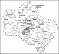 | Рис. 1. Подольский район на карте Московской области |
В пределах Подольского района, административно не входя в его состав, находятся города Подольск, Климовск, Щербинка и Троицк с населением соответственно 196, 57, 31 и 29 тысяч человек. Помимо этих четырех городов областного подчинения, на территории района расположено 219 сельских населенных пунктов и о дин поселок городского типа, в которых проживает 74,7 тысяч человек. В состав Подольского района входят 12 сельских (Брянцевский, Вороновский, Дубровицкий, Кленовский, Краснопахорский, Лаговский, Михайлово-Ярцевский, Роговский, Рязановский, Стрелковский, Сынковский, Щаповский) и 1 поселковый (Львовский) округ. Больше всего населённых пунктов в Лаговском сельском округе (24), меньше всего (10) - в Брянцевском (Социально-экономическое..., 1998; Подольский район на пороге XX века, 1999; www.info.podolsk.ru).
Подольский район, как административно-территориальная единица был образован из Подольского уезда в 1929 году, одновременно с созданием Московской области. Современные границы района существенно отличаются от контуров Подольского уезда (рис. 2). В Подольский уезд входили южные окраины современной Москвы, почти весь нынешний Домодедовский, большая часть Ленинского, а также отдельные части Чеховского и Наро-Фоминского районов. Площадь Подольского уезда почти вдвое превышала площадь района в современных границах и составляла 2073 км2 (Топографическая карта Московской губернии, 1866; Подольский уезд..., 1924).
По данным Подольского райкомзема (1996-2000) наибольшую площадь в районе занимают лесные земли Гослесфонда - 48,4% (табл. 1). Для всей Московской области этот показатель равен 41,8%. Отметим, что реальная лесистость области несколько меньше - 41% (Лесной фонд., 1999).
| Категории земель | Площадь, га | % |
| Лесные земли (леса Гослесфонда) | 51396 | 48,4 |
| Под древесно-кустарниковой растительностью | 172 | 0,2 |
| Многолетние насаждения (леса с.-х. назначения) | 3276 | 3,1 |
| Пашня | 30326 | 28,5 |
| Пастбища и сенокосы | 7082 | 6,7 |
| Земли застройки | 9128 | 8,6 |
| Под дорогами | 3312 | 3,1 |
| Под водными объектами | 978 | 0,9 |
| Овраги | 215 | 0,2 |
| Другие земли | 164 | 0,2 |
| Болота | 80 | 0,1 |
| Нарушенные земли | 74 | 0,1 |
| Земли в стадии мелиорат. строительства | 31 | 0,0 |
| Полигоны отходов, свалки | 20 | 0,0 |
На 01.01.01г. в районе было зарегистрировано 2095 предприятий и организаций различных форм собственности. Крупнейшими из них являются ОАО "Подольский завод цветных метал{-6-|}лов", ОАО "Краснопахорский завод изделий из металлических порошков", ОАО "Пищевой комбинат "Подольский"", ОАО "Крестовский пушно-меховой комплекс" и другие. Наметившееся после кризиса 1989-1998 гг. некоторое экономическое оживление продолжается: в 2000 г. произведено промышленной продукции в действующих ценах в 2,6 раза больше, чем в предыдущем. Выпускаются кондитерские изделия, цельномолочная продукция, комбикорма, вторичный алюминий. Крупнейшие сельскохозяйственные предприятия - э/х "Кленово-Чегодаево", МУСП "Подольское", ЗАО "Знамя Подмосковья", учхоз "Михайловское". Основное направление сельскохозяйственного производства района - молочное животноводство. В 2000 г. отмечен рост производства молока (на 3,4%), несмотря на то, что поголовье скота сократилось на 334 головы по сравнению с 1999 г. Важнейшие дополнительные отрасли - производство картофеля и зерна. (Отчет о работе., 2001; http://www.mosoblpress.ru/r_pod.shtml). {-8-|}
Геологическое строение территории Подольского района в общих чертах схоже со строением всей Русской равнины. Территория эта сугубо равнинная, хоть и не плоская, с перепадом высот примерно 115 м, что является средней величиной для Подмосковья. В Москве, например, аналогичный перепад равняется 140 м, а для мещерских районов он значительно меньше.
Русская равнина представляет собой подобие огромного кристаллического "блюдца", заполненного, в основном, морскими отложениями. Кристаллические породы выходят на поверхность лишь по краям "блюдца", например, в Карелии и Финляндии. Но, тем не менее, с этими или почти такими же породами можно познакомиться в любом ручейке Подольского района, так как маленькие окатанные обломки карельских и финских скал принесены сюда ледниками и разбросаны почти по всей территории района. Обратимся несколько подробней к истории формирования рельефа.
На глубинах более 1 км в Подольском районе везде находится кристаллический фундамент, образованный метаморфическими породами, которые возникли из осадочных и магматических пород под действием высоких температур и давлений. Фундамент сформировался в архее и нижнем протерозое - примерно 1,5-3 миллиарда лет назад. На нём покоится толща осадочных пород, так называемый осадочный чехол.
Залегание кристаллических пород было нарушено тектоническими движениями - медленными опусканиями и поднятиями тех или иных участков земной коры. В результате этого фундамент оказался на различной глубине. Так, например, значительной части Подольского района соответствует поднятие фундамента, называемое Подольским. Поверхность фундамента находится здесь на глубине порядка 1 км. Чуть севернее, под Теплостанской возвышенностью, проходит Подмосковный авлакогенный прогиб, где поверхность фундамента в разных местах опустилась на 1600-2800 м ниже уровня моря (Кузьменко, 1997). Хотя эта погребённая поверхность мало сообразуется с современной дневной (видимой) поверхностью Подмосковья, в заложении речных долин иногда наблюдается связь со структурами фундамента. Наиболее явная унаследованность присуща отрезкам долин, находящимся над разломами, где соприкасаются участки с различной глубиной залегания фундамента.
Более 600 миллионов лет назад в позднем протерозое на фоне общего опускания поверхности в морских условиях начал образовываться современный осадочный чехол (Кузьменко и др., 1997). Стали накапливаться глины, пески и другие породы мощностью до 350-500 м, но часть протерозойских отложений была уничтожена в начале палеозоя. В это время прогибание земной коры сменилось медленным восходящим движением. Территория на 170 миллионов лет стала сушей, которая подвергалась воздействию эрозии (кембрий, ордовик, силур). И только 400 миллионов лет назад, в раннем девоне, в результате нового опускания территория будущего Подольского района снова стала дном моря. В девоне и карбоне (каменноугольный период) здесь отложился мощный слой горных пород, составляющих ныне основную толщу осадочного чехла. Для него наиболее характерны карбонатные породы - известняки (карбонат кальция) и доломиты (карбонат кальция и магния). Они отложились в относительно мелководном, но обширном (открытом) внутриконтинентальном море с богатой фауной, образовавшись из остатков живых организмов. Море существовало здесь с небольшими перерывами более 100 миллионов лет.
В настоящее время известняки выходят на поверхность во многих частях Подольского района и, в частности, вдоль всех его крупных рек. Для этих участков свойственны крутые берега, так как для известняков не характерно оползание к рекам. По этой же причине речные долины узки, а русла рек сравнительно прямы (не перегорожены сползшим в них материалом). Кроме того, для этих участков характерны карстовые формы рельефа (например, воронки и поноры, в которые уходят дождевые и талые воды, а также воды некоторых небольших ручьёв). Имеются здесь и пещеры, хотя все они возникли на месте древних каменоломен. Для известняковых отложений характерны многочисленные окаменелые остатки и отпечатки морских беспозвоночных животных каменноугольного периода - губок, кораллов , моллюсков, брахиопод, иглокожих и некоторых других (табл. I-II Приложения 9). Из колониальных губок чаще всего встречаются {-9-|} хететиды, которые до недавнего времени считались кораллами. Из колониальных кораллов - табуляты (особенно Petalaxis sp.). Из брахиопод - продуктиды и спирифериды. Брахиоподы - раковинные животные, но к моллюскам они не имеют никакого отношения. С этими и другими вымершими животными карбона можно познакомиться и в четвертичных отложениях, но конкретные экземпляры в этом случае перемещены с севера ледниками.
В конце карбона море отступило к Уралу, и территория будущего Подольского района в пермском периоде палеозоя и триасовом периоде мезозоя примерно на 110 миллионов лет опять стала сушей. Новые осадочные слои практически не возникали. Наоборот, шло эрозионное разрушение известняков. Так как известняки растворимы, большое распространение получили явления карста (образование пещер, провалов и т.п.). Перепады высот были чуть больше, чем сейчас. В конечном итоге возникли глубокие речные долины, в местоположении и направлении которых заметно отдалённое сходство с современными долинами.
Следующее наступление моря произошло в юрском периоде мезозоя. В течение юрского и последующего мелового периодов море периодически то заливает, то освобождает территорию района. За десятки миллионов лет отлагаются мощные слои глин и песков, так как неподалёку всегда находятся участки суши, откуда этот материал сносится реками.
Отложения юрского периода представлены песками и глинами разного цвета, но, как правило, сероватыми или тёмными. Особенно известны сажисто-чёрные глины с остатками вымерших морских организмов - брахиопод, аммонитов и белемнитов, в просторечии называемых "чёртовыми пальцами". Эти глины имеются на большей части Подольского района и выходят на поверхность во многих местах по берегам рек. Для мест выхода юрских глин характерны оползневой рельеф и сильное петляние (меандрирование) некоторых речных русел.
Последующий, меловой период, сходен с юрским. На территории будущего Подольского района большую часть этого отрезка времени тоже плескалось море. Откладывались преимущественно пески, сносимые с близлежащих участков суши. Когда-то они лежали по всей территории, но позднее во многих местах были содраны наступающими ледниками, смыты потоками талых ледниковых вод при отступлении ледников или уничтожены реками. В Подольском районе меловые отложения сохранились лишь отдельными "пятнами" (в основном, на водоразделах Десны и Пахры, Пахры и Мочи).
Примерно 80-85 миллионов лет назад море отступило на юг. Будущее Подмосковье в очередной раз вступило в континентальную фазу развития (в третичном периоде кайнозоя - палеогене, неогене). Территория испытала тектоническое поднятие. При этом макрорельеф уже тогда был похож на современный (Казакова, 1957). По освободившейся от моря суше побежали реки. Некоторые из них "разыскали" и "расчистили" прежние, занесённые морскими отложениями долины, а некоторые - проложили новые пути. При этом многие доюрские долины так и остались "ненайденными" (погребёнными). В итоге возникла примерно такая же речная сеть, какую мы видим сейчас, хотя последовавшие за этим оледенения, безусловно, внесли свои коррективы. Внесли коррективы и сами реки, подмывая те или иные берега и всё глубже врезаясь в осадочные породы. Долинные участки в это время были сложены преимущественно известняками карбона. На водораздельных участках преобладали юрские глины, а кое-где на дневную поверхность выходили песчаные отложения мела. В целом рельеф изобиловал эрозионно-денудационными формами.
В четвертичном периоде на территории Подольского района и почти на всей Русской равнине произошли грандиозные геологические события, резко изменившие облик местности и характер горных пород, залегающих близ поверхности. Речь идёт о мощных потоках льда, которые несколько раз спускались со Скандинавских гор и перекрывали всю территорию будущего Подольского района.
Ледники притащили окатанные обломки финских и карельских скал (гальку, валуны), а также содранные по пути пески, глины и другие горные породы. Наступающий (медленно текущий) лёд сглаживал неровности рельефа, а отступающий (тающий) лёд формировал новый неровный рельеф с неравномерно разбросанными скоплениями обломочного материала. Если край отступающего ледника задерживался, то накапливались высокие холмы и гряды из такого материала. Чаще, однако, под моренными холмами на территории Подольского района подразумеваются фрагменты моренной равнины, ограниченные водно-ледниковыми равнинами и долинами рек, где моренные отложения размыты. Мощные потоки талой ледниковой воды углубляли имеющиеся речные долины, но могли устремляться и другими путями (например, вдоль края ледника или поверх льда, заполнившего речную долину). С их деятельностью связано формирование водно-ледниковых равнин. Ледниковые, водно-ледниковые и озёрно-ледниковые отложения имеют большое и местами, решающее значение в формировании рельефа Подольского района, осо{-10-|}бенно в западной его части. Ледниковые (моренные) отложения представляют смесь песка, глины и более или менее окатанных камней самого разного размера (валуны, галька). Наличием валунов они резко отличаются от глин и песков юрского и мелового периодов, а также от безвалунных покровных суглинков позднейшего происхождения. Водно-ледниковые отложения сходны с ледниковыми по составу, но их материал рассортирован по размеру частиц (как в русле любого ручейка). Кроме того, речные и талые ледниковые воды часто оказывались запруженными и льдом, и ледниковыми отложениями. Так возникали обширные озёра. Масштаб этих явлений осознан далеко не всеми. Есть, например, предположения, что реки Западной Сибири и северные реки Русской равнины, будучи запружены наступающими с севера ледниками, могли образовывать грандиозное единое озеро (Карнаухов, Карнаухов, 1997). Если это так, то воды этого сверхозера могли вплотную подступать к Подольскому району с востока.
Согласно устоявшимся представлениям, на территории Подмосковья имеются хорошо сохранившиеся отложения трёх оледенений, то есть различаются три морены (нижняя, средняя и верхняя), но возраст их разными исследователями определяется по-разному. Нет полного единомыслия и в соотнесении той или иной морены с тем или иным оледенением, которых выделяется от трёх до шести. В Подольском районе в наибольшей степени представлена средняя морена, для которой характерно преобладание в валунном материале кремня и известняка над дальноприносными породами - гранитом, гнейсом, амфиболитом, кварцитом и т.п.
Обычно считается, что в период Окского оледенения (около 400-500 тысяч лет назад), наиболее длительного и сложного, захватившего всю территорию области и уничтожившего растительность, почвы и животный мир, морена перекрыла все междуречья, выполнила эрозионные и карстовые формы, образовав холмисто-моренный рельеф. Окский ледник сменило Лихвинское межледниковье, продолжавшееся 120-150 тысяч лет. Это было время климатического оптимума. Климат был влажнее и теплее, чем сейчас. Рельеф не претерпевал значительных изменений.
Следом, как считают многие исследователи, пришло Днепровское оледенение (250-200 тысяч лет назад). Надвигание этого ледника предварялось стоком предледниковых вод по эрозионным понижениям. Эти воды размыли доднепровские отложения и оставили подморенные водноледниковые осадки. При общем опускании территории, происходившем в тот момент, создались благоприятные условия для спокойного растекания льда. Поэтому лёд быстро терял активность, и поскольку мощность его была невелика, распадался на поля мертвого (неподвижного) льда. В результате образовалась морена незначительной мощности (Анненская и др., 1997). Это были холмистые, волнистые и плоские моренные равнины. Последовавший за днепровским ледником период одинцовского межледниковья был короче предыдущего, порядка 10 тысяч лет. Осадконакопление происходило в условиях умеренного и сравнительно влажного климата.
Следующее оледенение, Московское, охватившее Подольский район 190-170 тыс. лет назад, было весьма мощным, а потому во многих местах уничтожило следы предыдущих оледенений. Тем не менее, Московский ледник, в отличие от предшественников, покрывал, по мнению большинства исследователей, не всю территорию района. Есть предположение, что его южная граница проходила от Калуги на Угодский завод, Красную Пахру, Подольск, Бронницы. По линии Подольск- Бронницы проводил эту границу Б.М. Даньшин (1947). По другим данным, геоморфологическая граница вообще не затрагивала Подольский район, проходя от Боровска, восточнее Вереи, на Дорохово, ст. Руза, Хаустово, Белый Раст, Катуар, севернее Пушкино на Загорск. Авторы одного из последних исследований (Анненская и др., 1997) не исключают вариант, при котором вся Москворецко-Окская равнина находилась под ледником, однако, по их мнению, это пребывание было относительно непродолжительным. При этом южная часть Москворецко-Окской равнины большую часть московского времени была в приледниковом положении, где активно действовали водно-ледниковые потоки, преобразовывавшие ледниковый рельеф. Нахождением в предледниковой области в этом случае объясняется утопленность моренного рельефа в толще озёрно-водноледниковых и водноледниковых отложений.
Около четверти территории района сформировалось под влиянием водноледниковых потоков позднемосковского времени, которые имели застойный характер. Речь идёт об участке западней и южней г. Подольска в квадрате Подольск-Троицк-Вороново-Львовский. Абсолютные высоты достигают здесь 160-195 метров, а почвообразующей породой являются покровные суглинки, подстилаемые алевритами и песками. Преобладающие здесь урочища - это плоские и волнистые озёрно-водноледниковые равнины. Над их ровной поверхностью возвышаются плосковершинные моренные холмы. Хорошо развита овражно-балочная сеть.
В послеледниковое время рельефообразующее значение имела деятельность рек (возникновение пойм и надпойменных террас). Шли также процессы формирования болотных отложений и некоторые другие. В результате деятельности {-11-|} поверхностных сил из нижележащих пород самыми различными способами возникли покровные безвалунные суглинки, которые вне речных долин покрывают поверхность Подольского района, являясь почвообразующей породой.
Согласно современным представлениям, Подольский район принадлежит Москворецко-Окской физико-географической провинции подзоны смешанных лесов (Анненская и др., 1997). С точки зрения геоморфологического районирования Московской области (Казакова, 1957), территория Подольского района располагается в пределах Москворецко-Окской пологоувалистой эрозионной равнины, для которой характерны полого-волнистые и слаборасчленённые моренные равнины днепровского оледенения с хорошо разработанными речными долинами (пойма и три надпойменных террасы).
Самые глубокие осадочные слои, выходящие на поверхность Подольского района, - это известняки каменноугольного периода, или карбона. Они на значительной площади залегают близко к поверхности, а в долинах рек Пахры, Лопасни, Мочи обнажены. На каменноугольных отложениях залегают сильно размытые верхнеюрские и меловые породы, во многих местах перекрытые сверху уже упоминавшимися четвертичными отложениями (Любимова, 1957; Солнцев, 1961).
Современная поверхность представляет собой то пологоволнистую, то густо рассечённую эрозионной сетью равнину. Овражно-балочная сеть особенно развита к югу от р. Пахры. Здесь равнина сильно расчленена и покрыта сложной сетью широких плоскодонных балок. Местами поверхность имеет волнистый характер с широкими, очень плоскими и пологими понижениями - долинами, слабовыраженными в рельефе.
Примерно 20% района расположено на повышениях дочетвертичного рельефа. Эти участки находятся на юго-западе внутри периметра Никоново-Чернецкое-Рогово-Шубино-Вороново. Здесь мезозойские отложения наследуют местную положительную тектоническую структуру. Четвертичные отложения - водноледниковые пески и морена мощностью 3-10 м, сглаживают неровности коренного рельефа. Почвообразующей толщей служат покровные и делювиальные суглинки мощностью 2-4 м. Эти участки располагаются на абсолютных высотах 210-230 метров и представляют собой либо волнистые выровненные моренные равнины, сложенные покровными суглинками (2-3 метра) на морене и меловых песках, либо моренные холмы, сложенные мореной лёгкого механического состава со слабовыпуклыми вершинами. Реже в основании этих участков располагаются юрские глины и меловые пески. Встречаются камовые всхолмления. Увалистый характер этой территории придают многочисленные ложбины стока, лощины, балки и долины малых рек.
При взгляде на схему гидрографической сети района (Приложение 1) хорошо заметен водораздельный узел близ д. Кресты на пересечении Варшавского шоссе с Большим окружным железнодорожным кольцом. Высота этого холма - 236 м над уровнем моря. Это наивысшая точка Подольского района. Отсюда во все стороны "разбегаются" небольшие речки, берущие начало на этом водораздельном возвышении. Наиболее крупная из них - Лопасня. Отсюда же расходятся основные водоразделы. Основная водораздельная гряда (Нарская) проходит с запада на восток с небольшим отклонением к югу и отделяет бассейн р. Москвы и её притока Пахры от бассейна верховьев Оки, а точнее от бассейнов двух её левых притоков - Нары и Лопасни. Почти по самому гребню этой гряды, по самому водоразделу, проложено Большое окружное железнодорожное кольцо, что позволило избежать дорогостоящего строительства мостов через реки.
Нарская гряда является частью Смоленско-Московской возвышенности, занимающей западную часть Подмосковья. Это один из её отрогов: не столь длинный, высокий и известный, как, например, Клинско-Дмитровская гряда, но, тем не менее, во многом похожий на неё. Общую характеристику рельефа этой территории привёл Б.М. Даньшин в своей классической сводке "Геологическое строение и полезные ископаемые Москвы и её окрестностей" (1947, стр. 58): "Пространство, расположенное на восток от р. Нара, и захватывающее также речки системы верховьев р. Пахры и её притоков рр. Мочи и Десны, имеет преобладающую высоту более 200 м, местами достигающую 230 м. Вся эта местность покрыта многочисленными обособленными невысокими буграми с пологими склонами, между которыми располагаются плоские лощины в истоках речек и неглубокие западины неправильных очертаний, большей частью заболоченные. Разница в высоте между холмами и лощинами 15-20 м. Уклоны поверхности около 10 м/км". Вся эта поверхность покрыта слоем четвертичных и, в первую очередь, ледниковых отложений. Более глубокие слои не выходят на поверхность, так как речки на этом приводораздельном пространстве только начинаются, они маленькие, энергия размыва не высока, и четвертичные отложения почти нигде не смыты. Близ самой поверхности залегают покровные безвалунные суглинки, возникшие из ледниковых и других отложений в послеледниковое время под воздействием поверхностных сил. Эти суглинки, как правило, и являются почвообразующими по{-12-|}родами, в связи с чем в этой части Подольского района господствуют суглинистые почвы. Так как такие почвы в условиях подмосковного климата наиболее благоприятны для развития ели, здесь преобладают смешанные леса с большим её участием. Это обстоятельство тоже придаёт местности облик, сходный с Клинско-Дмитровской грядой и резко отличный от того, что мы видим восточнее - на большей части Подольского района. Ярким примером сказанному могут служить Масловский лес, т.е. ельник на правом берегу Сохны выше д. Гуляевы Дворы (см. очерк о р. Сохне, Приложение 1), а также Семидонное болото в верховьях р. Мочи (см. очерк о р. Моче, Приложение 1). Последний объект даже специально выделен в сводке Б.М. Даньшина, в которой о верховьях р. Мочи сказано, что они имеют "ложбинообразный характер с пологими расплывающимися склонами" (стр. 77). Долина здесь плавно переходит в окружающие моренные холмы и характеризуется огромным размахом, что никак не соответствует "ленивому" водотоку, почти лишённому течения в летнее время.
В качестве ещё одной из особенностей рельефа Нарской гряды можно отметить наличие так называемых "открытых долин", то есть долин, пересекающих водораздел и открытых одновременно в две стороны (Даньшин, 1947). В таких долинах берут начало два водотока, текущие в противоположные стороны. Сами долины, как правило, плоски, заболочены и очень велики для данных водотоков, а потому не могли сформироваться в результате их деятельности. Они обязаны своим возникновением каким-то более мощным древним водотокам, пересекавшим современный водораздел, или выдавлены ледником. Упомянутая выше Моча образует общую открытую долину с Масловским ручьём, левым притоком Сохны, который иногда считается её истоком. Моча течёт на восток, а Масловский ручей - на север. Другой пример открытой долины - это общая долина речек Силинка (правый приток Сохны) и Поляница (левый приток Мочи) (Даньшин, 1947). Наличие открытых долин можно предположить ещё в ряде случаев. Общим для них является направленность с северо-запада на юго-восток. Примечательно, что так же ориентированы многие крупные реки на юго-западе Подмосковья (Искона, Руза, Нара, Лопасня). Возможно, в далёком прошлом (в доледниковые или даже доюрские времена) в таком направлении текли многие реки и в будущем Подольском районе, но потом преобладающее направление стока изменилось, возникли новые водоразделы, и старые большие долины оказались заняты маленькими ручейками. "Открытыми" в долину р. Москвы являются также верховья р. Нары за пределами Подольского района. Это понижение продолжается в виде долины р. Рузы, что говорит об имевшемся здесь когда-то очень мощном едином водотоке, а р. Москва потекла на восток позднее. Одним словом, в истоках Мочи и Поляницы видны остатки очень древних форм рельефа, которые сверху перекрыты ледниковыми отложениями, но всё-таки "проступают" из-под этого недавнего "одеяла".
Нарская гряда особенно резко понижается к р. Наре, протекающей рядом с ней близ границ Подольского района. Если близ упомянутого водораздела уклоны поверхности, как говорилось, составляют около 10 м/км, то "в долине Нары понижение поверхности увеличивается до 30 и даже 50 м/км. Поэтому здесь долины принимают ясные очертания с круто покатыми склонами и появляются глубокие крутосклонные овраги" (Даньшин, 1947, стр. 58-59). Реки, сбегающие напрямик к Наре и к низовьям её притоков, характеризуются особенно быстрым течением, что даже нашло отражение в их названиях (см. очерки о Каменке и Кременке). Но некоторые значительные водотоки этих мест текут почти параллельно Наре. Так, например, низовья Чернички и Дёсенка продолжают Нару. В том же направлении текут Ворванка и Лыковка. Истоки Ворванки и Дёсенки соответствуют истокам двух правых притоков Лопасни, и мы тоже можем предположить существование здесь открытых долин, пересекающих водораздел Нары и Лопасни. Вероятно, и здесь мы видим очень древние формы рельефа.
На западе и северо-западе района обособилась территория на приподнятом цоколе (160-190 метров) из верхнеюрских глин с прослоями песков, глин и известняков карбона, преобладающими урочищами которой являются моренные и озёрно-водноледниковые равнины. Кровлю коренных пород слагают глины юры, пески нижнего мела и неогена. В рельефе выделяются плоские озёрно-водноледниковые равнины наряду с слабоволнистыми и волнистыми равнинами моренного происхождения, а также моренные холмы, овальной формы, в среднем 1x2 км, с относительной высотой 10-25 метров.
Наибольшая часть Подольского района представляет собой вогнутую по центру и наклонённую на восток Пахринскую равнину. Именно здесь, на востоке, где река Пахра покидает район, находится его самая низкая точка, которая соответствует урезу реки - примерно 120 м над уровнем моря. Для сравнения Пахринской равнины и Нарской гряды можно опять "передать слово" Б.М. Даньшину: "Ложбинообразный характер с пологими расплывающимися склонами имеют верховья р. Мочи. Но её нижнее течение и преобладающая часть долин рр. Пахры и Десны отличается узостью, глубиной и крутизной склонов. Такого рода долины связаны с врезани{-13-|}ем рек в твёрдые породы каменноугольной системы и преобладанием глубинного размыва. Верхние же части течения рек располагаются среди рыхлых четвертично-мезозойских отложений" (1947, стр. 77). "Твёрдые породы каменноугольной системы" - это, преимущественно, известняки. Их пласты слегка наклонены на восток, куда и течёт Пахра. В этом же направлении поначалу текут реки Десна, Моча и Рожайка, только потом поворачивая к Пахре. Поэтому считается, что верховья этих рек (особенно Мочи и Рожайки) позднее присоединились к бассейну р. Пахры. Когда-то они (и р. Северка) были единым самостоятельным притоком р. Москвы. Пахра сумела перехватить их именно потому, что текла по центру вогнутой равнины, т.е. обладала более низким базисом эрозии. Так мы видим в современном рельефе отображение его эволюции. Конфигурация речной сети усложняется: параллельно простирающихся долин становится всё меньше, а наиболее крупные реки приобретают разветвлённую сеть притоков.
Так как основные реки Подольского района начинаются на западе и текут на восток, становясь при этом многоводнее, энергия их размыва возрастает в восточном направлении. В этом же направлении падает базис эрозии. Разница водоразделов и рек доходит на западе до 40 м, на востоке - до 50 м; общее среднее понижение на западе - 5 м/км, на востоке - 10 м/км; среднее понижение поверхности в придолинных частях на западе - 20-30 м, на востоке - 30-40 м (Даньшин, 1947). Поэтому увеличивается относительное углубление долин и оврагов, более плотной становится их сеть. Междолинные пространства чаще оформляются в виде обособленных плоских холмов, а не в виде единой приподнятой водораздельной поверхности.
Примерно 10% площади района приходится на слабоволнистые песчано-суглинистые долинные зандры, сформировавшиеся в понижениях коренного рельефа. Для этих территорий характерны балки, овраги, карстовые воронки, заболоченные впадины. {-14-|}
Подольский район расположен в умеренном климатическом поясе, в атлантико-континентальной европейской области, которая характеризуется значительной годовой изменчивостью радиационных условий. Это обусловливает наличие в годовом климатическом цикле определенных, отчетливо выраженных сезонов, или времен года. В целом для района характерны теплое лето, умеренно-холодная зима с устойчивым снежным покровом и отчетливо выраженными переходными сезонами.
Первые систематические метеорологические наблюдения на территории Подольского района начал вести наблюдатель-любитель Н.Е. Сироткин. В его доме в с. Захарьино (на юго-восточной окраине нынешнего г. Щербинки) была оборудована метеорологическая станция, где он с 1895 по 1921 год вёл тщательные и подробные записи, прекратившиеся лишь с его смертью (Подольский уезд..., 1924).
С 1912 года на юго-востоке Подольского уезда начала функционировать метеостанция "Мещерская", проводившая наблюдения в течение 8 лет вплоть до 1920 г., а с 1915 года начались наблюдения и на станции в с. Собакино на юго-западной границе с нынешним Подольским районом. (Климатический справочник СССР, 1964). Имеются данные метеонаблюдений с 1939 по 1957 гг. на станции Красная Пахра, располагавшейся в одноимённом посёлке (Климатический справочник СССР, 1971). Позже, в пос. Голохвастово был открыт опытно-производственный центр Росгидромета, который также вёл метеорологические наблюдения.
| | Рис. 3. Месячная сумма радиационного баланса (с. Собакино) |
Согласно актинометрическим наблюдениям на станции Собакино, расположенной в Наро-Фоминском районе в 0,7 км от границы с Подольским районом, среднемноголетняя годовая сумма радиационного баланса составляет 1516,6 МДж/м2 (Мячкова, Сорокина, 1991). При этом среднемноголетняя месячная сумма радиационного баланса варьирует от -25,6 МДж/м2 в декабре до 332,3 МДж/м2 в июне (рис. 3). Период с положительным радиационным балансом составляет около 7-8 месяцев.
В тесной связи с радиационным балансом находится температура воздуха. Согласно данным Климатического справочника СССР, а также днаблюдениям Н.Е. Сироткина (Подольский уезд, 1924), среднегодовая температура варьирует в пределах района от +3,3 (с. Собакино) до +3,9°C (д. Захарьино). На рис. 3, 4, 5, 6 мы приводим данные по метеостанции в с. Собакино, где имеется наиболее длительный ряд наблюдений (более 50 лет).
В течение года среднемесячные температуры изменяются от +17,9°C в июле до -10,6°C в январе (табл. 2). В отдельные годы возможны резкие отклонения от средних показателей. Годовая амплитуда среднемесячной температуры 27-28°C указывает на умеренную континентальность данного района (рис.4). Абсолютный минимум тем{-15-|}ператур, наблюдавшийся в Подольском районе, составлял -45,4°C в январе 1940 г. Самых высоких значений температура воздуха достигала в июле 1936 г. +36,9 0 C. Однако такие высокие и низкие температуры наблюдаются очень редко, менее чем в 5% лет (Агроклиматический справочник, 1967). Среднемноголетняя суточная амплитуда температур минимальна в январе (1,9°C) и максимальна в июне (9,2°C) (Климатический справочник СССР, 1964).
| 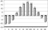 | Рис. 4. Средние месячные температуры воздуха (средние многолетние) (с. Собакино) |
По данным Агроклиматического справочника Московской области (1967), территория Подольского района лежит на границе двух агроклиматических районов. Абсолютно большую его часть занимает район с суммой среднесуточных температур 1900-2100°C в период вегетации. Лишь крайняя западно-юго-западная часть территории в окрестностях населённых пунктов Кленовка, Лыковка, Васюнино, а также примыкающая к границе с Наро-Фоминским районом территория, относятся к району, где значения этого показателя равны 1800-1900°C. Смена знака температур отмечается в конце марта и в конце октября.
По метеорологическим наблюдениям (Климатический справочник СССР, 1964; 1971) последние весенние заморозки случаются в среднем 14 мая. Первые осенние заморозки наступают в среднем 26 сентября. Средняя продолжительность безморозного периода составляет 132 дня.
Данные по количеству атмосферных осадков, которые мы приведём ниже, основываются на метеонаблюдениях станций в с. Собакино и в с. Хлевино, располагавшейся в 5 км на юг от границы Подольского района (в Чеховском районе).
Среднегодовое количество осадков - 558 мм, что несколько меньше средней величины по Московской области, с колебаниями в отдельные годы от 383 до 836 мм. Максимум осадков выпадает с апреля по октябрь - 398 мм, причем наибольшее количество приходится на июль (с. Собакино - 75 мм, с. Хлевино - 67 мм). Минимальное количество осадков приходится на период с ноября по март - 161 мм, причем меньше всего выпадает в феврале (29 мм) (Климатический справочник СССР, 1971) (рис. 5). По данным Н.Е. Сироткина (Подольский уезд, 1924), в Подольском уезде в начале XX века (за 20 лет) зимой выпадало 62 мм, весной -115 мм, летом - 213 мм, и осенью 123 мм осадков. При этом в феврале выпадало в среднем 17,6 мм, то есть несколько меньше, чем по данным Климатического справочника СССР (1964, 1971), а в июле несколько больше - 72 мм. Среднее число дней с осадками составляло за год 169, из них 82 дня со снегом, остальные - с дождём. Количество осадков по данным Н.Е. Сироткина в конце XIX - начале XX века аналогично данным по пос. Голохвастово конца XX века: зимой выпадало - 79 мм, весной 103 мм, летом - 227 мм, и осенью 116 мм. В теплую часть года преобладают дожди средней интенсивности, хорошо увлажняющие почву. Максимально за одни сутки выпадало до 44 мм осадков (июль 1953 г.). Первый снег выпадает в среднем 5-6 ноября, а устойчивый снежный покров образуется в конце ноября. В первой-второй декадах марта глубина снежного покрова достигает своего максимума. Среднее значение этого показателя - 40 см с возможными колебаниями от 16 до 70 см. Разрушение устойчивого снежного покрова происходит с 5 по 8 апреля. С 15 апреля снежный покров обычно сходит.
| Метеостанция | Данные за период | I | II | III | IV | V | VI | VII | VIII | IX | X | XI | XII | за год |
| с. Собакино | 1915-1965 | -10,6 | -10,1 | -5,4 | 3,3 | 11,0 | 15,1 | 17,4 | 15,5 | 10,0 | 3,8 | -2,5 | -8,0 | 3,3 |
| с. Мещерское | 1912-1920 | -10,3 | -9,8 | -4,7 | 4,0 | 11,5 | 15,1 | 17,7 | 15,7 | 10,5 | 4,1 | -2,0 | -7,3 | 3,7 |
| Н.Е. Сироткина (г. Щербинка) | 1895-1921 | -8,3 | -7,7 | -1,7 | 8,1 | 15,2 | 19,5 | 19,3 | 15,0 | 9,8 | 1,9 | -4,0 | -10,4 | 4,7 |
| пос. Красная Пахра | 1939-1957 | -10,8 | -10,9 | -4,9 | 4,6 | 11,2 | 16,3 | 17,1 | 16,4 | 10,8 | 3,8 | -2,3 | -6,5 | 3,7 |
| пос. Голохвастово | 1965-1992 | -10,5 | 18,0 | |||||||||||
| В среднем по району | -10,0 | -9,6 | -4,2 | 5,0 | 12,2 | 16,5 | 17,9 | 15,7 | 10,3 | 3,4 | -2,7 | -8,1 | 3,8 |
{-16-|}
| Направление ветра | С | СВ | В | ЮВ | Ю | ЮЗ | З | СЗ | Штиль |
| Количество случаев | 135 | 88 | 113 | 155 | 182 | 240 | 199 | 131 | 217 |
| % | 9,3 | 6 | 7,7 | 10,6 | 12,5 | 16,4 | 13,6 | 9 | 14,9 |
| 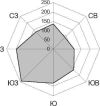 | Рис. 6. Роза ветров Подольского района (с. Собакино) |
В Подольском районе преобладают юго-западные, южные и западные ветра, что составляет 42% в розе ветров (рис. 6). В летние месяцы преобладают западные и юго-западные ветры, в то время как в январе - ветер чаще меняет своё направление с юго-западного на южное. Значительно количество штилей - 14,9% случаев (табл. 3), большая часть из которых приходится на теплое время года. Средняя годовая скорость ветра - 3.5 м/с. Эта величина варьирует в течение года незначительно, опускаясь до 2 м/с в июле и, достигая максимальных значений в декабре - 5.6 м/с. Вместе с тем, по количеству дней с сильным ветром первенство принадлежит маю-июню и сентябрю-октябрю. В эти периоды сильные ветра отмечаются каждые 2 из 3-х лет.
Говоря о климате Подольского района, интересно было бы рассмотреть климатические различия разных его частей, но соответствующих данных очень мало. Во-первых, выделяется приподнятая западная и юго-западная часть - Нарская гряда. Здесь, как уже говорилось, сумма среднесуточных температур в период вегетации чуть ниже. Согласно Атласу Московской области (1979), здесь (в верхнем и среднем течении Мочи) проходит июльская изотерма, соответствующая 17,5°C, а остальная и наибольшая часть района имеет среднеиюльскую температуру от 17,5 до 18 градусов. Зимняя температура здесь тоже чуть-чуть ниже, а безморозный период чуть короче. Кроме того, на Нарской гряде (самые верховья Сохны, Мочи, Лопасни) выпадает в среднем около 580-600 мм осадков в год, а на остальной площади района - около 550 мм. Конечно, все эти отличия очень незначительны, но и их оказывается достаточно для доминирования ели, а потому именно здесь проводят границу Западного и Южного ботанико-географических районов. Первый - это район преобладания еловых лесов с сосной и дубом, второй - район широколиственных лесов с елью.
В пределах Подольского района по ряду климатических характеристик можно выделить долину реки Пахры. Она отличается пониженным положением в рельефе и присутствием значительных масс воды. Первое способствует в среднем более высокой температуре, а второе - сглаживанию температурных перепадов. Согласно тому же Атласу Московской области (1979) именно здесь, в безлесной приречной местности восточнее Подольска, а не на юге района имеется участок с самой высокой среднеиюльской температурой - чуть более 18°C. Такие климатические условия в сочетании с южной экспозицией некоторых склонов и обнажениями известняка позволяют селиться здесь более южным растениям, в том числе видам, так называемой окской флоры.
На климат северо-восточной и восточной частей района, наряду с рельефом, оказывает влияние антропогенный фактор - городская застройка и большое количество промышленных предприятий почти слившихся друг с другом городов Подольска, Климовска и Щербинки. Среднегодовая температура здесь на 1-2°C выше, чем на остальной территории района. Это тоже в какой-то степени может способствовать более высоким температурам на северо-востоке района. Аналогичное, но менее выраженное влияние оказывает географическая широта. Так, например, согласно Атласу Московской области (1979) липа мелколистная, яблоня-"антоновка" и сирень обыкновенная зацветают на юге Подольского района в среднем на один день раньше, чем на севере. Вероятно, для этих растений имеет значение не только средняя температура воздуха, но и световой режим, связанный с широтой местности.
В заключение климатического обзора приведём некоторые примечательные даты, установленные в процессе наблюдений Н.Е. Сироткиным. Замерзание рек, в среднем, в начале века происходило 10 ноября. Вскрывалась р. Пахра 11 апреля. Первая гроза случалась, в среднем, 28 апреля. 22 марта прилетали грачи, 1 апреля - скворцы, 2 апреля - жаворонки, 11 мая - ласточки. Распускание листвы у черёмухи происходило 28 апреля, у берёзы - 1 мая, у дуба - 14 мая. Липа зацветала 2 июля. {-17-|}
Гидрографическая сеть - это совокупность рек, временных водотоков (ручьёв) и входящих в речную сеть озёр и болот данной местности. Все эти водные объекты имеют исключительное значение и в жизни природы, и в жизни человека. Направление течения рек - самый чуткий индикатор наклона земной поверхности. Всматриваясь в структуру речной сети, можно понять многие особенности рельефа, "прочесть" историю его возникновения. Но реки не только зависят от рельефа; они сами участвуют в его формировании, подтачивая берега и унося слагающий их материал. Так возникают речные долины с их специфическим приречным рельефом (русло, прирусловые валы, низкая и высокая пойма, старицы, надпойменные террасы, пологие или крутые коренные берега, оползневые бугры и псевдотеррасы). По берегам рек обнажаются слои осадочных пород, что позволяет нам "читать" геологическую историю местности. Геологические процессы здесь наиболее динамичны: подмыв берегов, карст, оползни и т.д. Реки в сочетании с рельефом предопределяют характер естественной растительности: на водоразделах близ их верховий могут находиться верховые болота, вдоль весенних истоков - переходные болота, а ниже по течению - низинные болота; на склонах террас и коренных берегов - суходольные луга, в пойме - сырые пойменные луга, ивняки и ольшаники. К приречным склонам приурочены многие ценные природные объекты Подольского района. В том числе - наиболее старые ельники и широколиственные леса, т.к. лес вдоль рек реже вырубался (издавна существовали соответствующие запреты, кроме того, вывоз древесины из приречных понижений всегда был затруднён). Растительность вдоль рек наиболее разнообразна, так как приречные участки представляют собой сложную мозаику самых сырых и самых сухих участков, где почвообразование происходит на базе различных геологических слоёв. Эти участки в различной степени наклонены и по-разному повёрнуты к солнцу. Разнообразию геологических условий и растительности соответствует разнообразие животного мира. Вследствие перечисленных особенностей и многих других причин реки всегда притягивали к себе человека. Они поили своей водой и водой приречных родников, кормили рыбой, привлекали на водопой зверей, и здесь на них удобно было охотиться. Весенние разливы способствовали плодородию почвы, и вдоль рек была лучшая земля для огородов и сенокосов. Пересечённый приречный рельеф защищал от врагов, и поэтому городища располагались, как правило, на крутых непоемных берегах, рассечённых оврагами. Реки помогали ориентироваться, служили летней и даже зимней ледяной дорогой. В более позднее время у рек строились мельницы и дворянские усадьбы. Анализ названий рек - гидронимов - помогает понять историю заселения края человеком, способствует выяснению природных особенностей местности и выявлению ценных природных объектов. Поэтому в данной книге и уделено такое большое внимание рекам.
В основе очерка о гидрографической сети Подольского района лежат картографические и литературные сведения, а также собственные полевые данные, собранные маршрутным способом в 1999 г. Всем водотокам с установленными народными названиями посвящены отдельные очерки (см. приложение 1), на основании которых написан данный обобщающий текст. В основу публикуемых схем гидрографической сети района положена современная карта "Подмосковье" (1990), на которую перенесены сведения с многочисленных старых топографических и прочих карт (сеть временных водотоков перенесена, в основном, с Топографической карты Московской губернии 1860 г., названия объектов - со всех источников, перечисленных в очерках об отдельных водотоках; ряд уточнений сделан во время походов по району). Использованы, по возможности, современные бытующие названия рек. Площадь бассейна измерена по данной схеме очень приблизительно, в отдельных случаях учитывался также рельеф водораздельных поверхностей. Длина тоже измерена по данной схеме курвиметром. Истинная длина водотоков больше, чем приведённая в настоящей работе, так как почти не учтено их петляние по долине. Можно считать, что для всех объектов, кроме самых крупных, приводится не длина водотока, а длина его долины.
Для дальнейшего рассказа о гидрографической сети нам потребуются определения основных её элементов. Реки - это естественные водные потоки, текущие постоянно или заведомо большую {-18-|} часть времени года по поверхности суши в разработанных ими долинах. Размер водотока не имеет значения. Чтобы получать питание в течение целого года, рекам необходима некоторая минимальная площадь, с которой они собирают воду - площадь водосбора. В лесной зоне площадь водосбора (площадь бассейна) должна составлять не менее нескольких квадратных километров. Минимальная площадь бассейна, который нужен для образования реки, зависит также от того, какие породы выходят на поверхность. Она мала на глинах и суглинках, но возрастает, например, на известняках. Речки и ручьи, текущие по известнякам, иногда уходят в карстовые воронки, т.е. поглощаются известняками. Это особенно характерно для северо-восточной половины Подольского района, где известняки в долинах основных рек выходят на поверхность.
Ручьи - не строго научное понятие. Это и постоянные водотоки без собственных долин (приречные родники), и временные водотоки - весенние и т.п. Маленькие временные водотоки весной или после дождя могут протекать вне чётко выраженных углублений, но у значительных временных водотоков всегда есть какое-то подобие долины - линейно вытянутое углубление, которое этим водотоком и выработано. В зависимости от размеров и формы различаются ложбины, лощины и балки. У ложбин пологие склоны, которые плавно переходят и к днищу, и к водораздельной поверхности. Ложбины обращают на себя внимание только по весне, когда по ним текут потоки талых вод. При естественном развитии ложбины со временем превращаются в лощины, при распашке - в овраги. Для лощин характерно корытообразное сечение: плоское или слабо вогнутое днище, склоны крутизной 15-45 градусов, чёткие бровки. При дальнейшем нормальном развитии лощины превращаются в балки. Балки характеризуются полого-вогнутым днищем, в пределах которого выражено или не выражено русло временного водотока, а также выпуклыми склонами, плавно переходящими в водораздельное пространство. Длина балок может составлять от сотни метров до нескольких километров. Если при своём углублении балка достигнет водоносных горизонтов, то может превратиться в долину реки. Постепенный переход от ложбины к лощине, балке и речной долине иногда можно пронаблюдать при движении вдоль временного весеннего водотока от самого его верховья. Балок больше в северо-восточной половине Подольского района, так как базис эрозии здесь ниже, а постоянного водотока нет из-за поглощения воды известняками.
Очень многозначно такое народное понятие как "овраг". В строгом смысле овраг - это глубокая крутосклонная (обычно V-образная) рытвина, недавно промытая временным потоком воды. Растительности в этом случае на склонах почти нет, а на дне отсутствует постоянный водоток. Однако, в повседневном обиходе под оврагами понимаются также лощины и балки, склоны которых заросли травами, кустарниками, а иногда и лесом. Зачастую подобные понижения ветвятся и в отдельных участках подвержены современной эрозии. Это овражно-балочные системы. Оврагами в народе зовутся и долины маленьких речек. Многочисленные названия "оврагов", которые приводятся ниже, используются в данной работе в качестве названий маленьких временных и постоянных водотоков. Оврагов в Подольском районе мало в юго-западной части бассейна Пахры, а на остальной площади они обычны.
Болота - избыточно увлажнённые участки суши со слоем торфа не менее 0,3 м (в осушенном состоянии - 0,2 м). При меньшем слое торфа это заболоченные земли. По положению в рельефе, как уже говорилось, различаются водораздельные (верховые), переходные и низинные болота. Болот и заболоченных участков в Подольском районе в количественном отношении довольно много, но суммарная площадь их крайне мала. Относительно большие болотные массивы есть только на западе района (Семидонное болото в истоках Мочи, Большая Поляница в истоках Поляницы, аналогичное болото на Бабинском ручье и другие). В целом же Подольский район в десятки раз уступает по количеству и размеру болот северным и восточным районам Московской области. Близость известняков не способствует заболачиванию местности. Особенно мало здесь водораздельных сфагновых болот, так как сфагнум не выносит извести, а водораздельные пространства относительно хорошо дренированы (болота "спущены" густой гидросетью). Малое количество болот увеличивает природоохранную ценность имеющихся объектов подобного рода.
Озёра - естественные водоёмы в углублениях суши (котловинах). Озёра в Московской области могут быть ледниковыми, старичными, карстово-суффозионными и т.д. Ледниковых и карстовых озёр в Подольском районе, по-видимому, нет. Небольшие старичные озерки есть вдоль р. Пахры ниже Подольска в пределах Битцевско-Рожайского расширения её долины, реже - в других местах. Все остальные озероподобные объекты данной местности - искусственные (запруды и копани). Крупные водоёмы наиболее характерны для притоков верхнего течения р. Мочи, где реки обладают широкими древними долинами, а известняки не выходят на поверхность.
Что можно сказать о реках Подольского района в целом? Наверное, только то, что это типичные для Подмосковья равнинные малые реки. Все {-19-|} они принадлежат к бассейну Оки - правого притока Волги. Сток их практически не зарегулирован (нет крупных водохранилищ). Он характеризуется средними для Подмосковья параметрами. Всего на предложенной схеме учтено порядка 800 водотоков. Реками из них являются около сотни объектов, а всё остальное - временные водотоки (ручьи) в балках, лощинах, а иногда и в ложбинах весеннего стока. Точное число рек пока назвать трудно, так как нет сведений о режиме многих водотоков (пересыхают они или нет). С той или иной степенью достоверности установлены народные названия, бытующие или бытовавшие, для 75 объектов (ещё 7 объектов включены в алфавитный список под условными названиями, данными авторами, что оговорено во всех случаях). Для названий некоторых рек найдены синонимы: Сохна - Гуляева речка - Масловский ручей (не весь); Десна - Пахорка; Канопелька - Лохня (?); Лыковка - Смередка. Но таких примеров мало. Г.П. Смолицкая (1976) приводит гораздо больше синонимов, но в её работе обнаружено так много ошибок, что решено эти данные пока не использовать (во время написания работы были запрещены топографические карты, и приводимые названия могут относиться к любому из нескольких водотоков данной местности). Помимо синонимов, "сколлекционированы" также различные формы одного и того же названия: Чернашка - Чернишка - Черничка и т.д. Такая трансформация названий широко известна. Всего приведено около 130 названий (в т.ч. синонимов и вариантов), но, конечно, на самом деле их гораздо больше. На этом общая характеристика завершается, и последующие обобщения могут относиться лишь к отдельным группам рек.
С территории Подольского района вода попадает в Оку через три её притока - Нару, Лопасню и Москву. К бассейну р. Москвы (и её притока Пахры) принадлежат 82% площади Подольского района, к бассейну Нары - 15%, к бассейну Лопасни - 3%.
Говорить об особенностях бассейна р. Лопасни в пределах Подольского района не имеет смысла: река пробегает по его территории только свои первые километры и уходит в Чеховский район Подмосковья; сколько-нибудь значительных притоков в самых своих верховьях она не имеет. Можно только отметить, что начинается Лопасня близ самой высокой точки района - 236 м над уровнем моря. От этого холма в разные стороны расходятся три основных водораздела: Лопасня - Нара, Нара - Пахра, Лопасня - Пахра. Последние два вместе составляют приподнятый москворецко-окский водораздел, именуемый иногда Нарской грядой (отрог Смоленско-Московской возвышенности). Лопасня уходит в юго-восточном направлении, как текут многие левые притоки Оки в этой части Русской равнины.
Нара протекает за пределами Подольского района в Калужской области и тоже в юго-восточном направлении. С территории района она принимает два относительно крупных притока - Кременку и Черничку. Речки в этой части Подольского района имеют два основных и взаимно перпендикулярных направления течения: на юго-юго-запад (низовье Сорочинки, низовье Кременки, Каменка, верховье Чернички) и на запад-северо-запад (верховье Сорочинки, Лыковка, Дёсенка, отчасти Ворванка). Первое направление - это направление к р. Наре. Речки почти прямо стекают с приподнятой Нарской гряды в низменность у Нары и характеризуются быстрым течением. Песок и глина уносятся водой, в результате чего в русле скапливаются принесённые ледником гальки и валуны, что иногда находит отражение в названии речек (Кременка, Каменка). Второе направление противоположно направлению течения самой Нары, но это означает, что местность "исчерчена" речными долинами в том же направлении, в каком проходит нарская долина. Когда-то водные потоки могли бежать по этим же долинам, но в противоположном направлении. Косвенно это подтверждается тем, что долины Ворванки и Дёсенки как бы продолжаются западнее двумя долинами правых притоков Лопасни (в Чеховском районе). Интересно, что долина Нары образует единую линию с долиной Рузы. Есть предположение, что в далёком прошлом Руза и Нара составляли единую реку, а р. Москва потекла на запад позднее, перехватив Рузу (Даньшин, 1947). Таким образом, мы видим в этой части Подольского района две системы речных долин - древнюю и молодую. Когда-то многие реки текли непосредственно к Оке по примерно параллельным долинам. По некоторым из них могла в какое-то время протекать и сама Нара (например, по нижним течениям Чернички и Дёсенки). Потом Нара "избрала" современный путь и перехватила своими притоками параллельные реки, усложнив структуру речной сети. В результате этого возникли резкие повороты некоторых рек (Кременка, Сорочинка, Черничка).
В бассейне Нары в пределах Подольского района можно выделить две различные части - приводораздельную (плоскую) и примыкающую к р. Наре (с пересечённым рельефом). Если в приводораздельной части уклоны поверхности составляют около 10 м/км, то близ Нары они увеличиваются до 30 м и даже до 50 м/км, что максимально для Подольского района. "Поэтому здесь долины принимают ясные очертания с круто покатыми склонами и появляются глубокие крутосклонные овраги" (Даньшин, 1947, стр. 58-59). Разница приводораздельного (северо-восточного) и при{-20-|}мыкающего к Наре (юго-западного) участков данной местности аналогична разнице юго-западной и северо-восточной частей бассейна Пахры (см. ниже), хотя здесь эта разница выражена даже чётче, так как Нарская гряда понижается к Наре быстрее, чем к Пахре. Эта разница проявляется не только в рельефе, но и в характере выходящих на поверхность осадочных пород и растительности.
Бассейн Пахры занимает заведомо большую и гуще заселённую часть Подольского района. Здесь в отдельности можно говорить о юго-западной части речного бассейна (Сохна и верховья Мочи), а также о северо-восточной части (низовья Мочи, левые притоки Рожайки, Десна, Пахра и её небольшие притоки).
Сохна и верховья Мочи находятся в пределах Смоленско-Московской возвышенности, точнее, в пределах её отдельного отрога - Нарской гряды, с преобладающими высотами более 200 м над уровнем моря (иногда до 230 м). Здесь мы видим древний "расплывшийся" моренный рельеф, в какой-то степени трансформированный современной эрозией, но эрозионное преобразование местности не является определяющим. Согласно Б.М. Даньшину (1947, с. 58), "вся эта местность покрыта многочисленными обособленными невысокими буграми с пологими склонами, между которыми располагаются плоские лощины в истоках речек и неглубокие западины неправильных очертаний, большей частью заболоченные. Разница в высоте между холмами и лощинами 15-20 м. Уклоны поверхности около 10 м/км". В другом месте того же текста Б.М. Даньшина говорится об общем среднем понижении поверхности на 5 м/км, т.е. уклоны очень малы. На поверхности залегают, преимущественно, безвалунные покровные суглинки. В лощинах, балках и долинах речек, где покровные суглинки смыты, на поверхности оказываются ледниковые и другие четвертичные отложения, сходные с покровными суглинками. Как правило, это смесь глинистых частиц, песчинок, галек и валунов. Более глубокие слои обычно не выходят на поверхность, так как речки на этом приводораздельном пространстве только начинаются, и энергия размыва не высока. Под слоем четвертичных отложений почти везде залегают отложения юрского периода, среди которых наиболее распространены глины. Всем этим предопределяется специфика гидрографической сети данной части района. Так как все перечисленные породы являются водоупорными, а уклоны местности не велики, для этой части Подольского района характерны болота, которые району в целом не свойственны. Они занимают водораздельные пространства (например, в центральной части Масловского леса между дд. Гуляевы Дворы и Юрьевка), а также приурочены к плоским приводораздельным ложбинам (например, в истоках Мочи и Поляницы). Окраинные части водораздельных плато, которые примыкают к наиболее крупным речным долинам, в большей степени трансформированы послеледниковой эрозией. Здесь наблюдается довольно густая сеть неглубоких, но хорошо выраженных лощин и балок (например, в Масловском лесу близ р. Сохны). Поглощение ручьёв для этих мест не характерно (они не могут просочиться вглубь через слой глин и суглинков), а потому небольшие водотоки имеются в лощинах и балках не только в период снеготаянья, но также в мае или даже в начале июня. Что же касается речных долин, если они выработаны текущим по ним собственным водотоком, то они, как правило, не глубоки и вообще не очень велики (например, долина Сохны на опушке Масловского леса).
Кроме таких "собственных" долин, в этой части Подольского района имеются древние долины, не связанные с современной гидрографической сетью. Они не бывают крутосклонными, так как древний рельеф сглажен позднейшей эрозией, но всё-таки они несоразмерно широки, а иногда и глубоки для современных водотоков, "воспользовавшихся" ими. Склоны таких долин постепенно переходят в склоны моренных холмов. Эти величественные геологические образования никак не могли быть выработаны еле сочащимися по ним "ленивыми" ручейками нашего времени. Некоторые из таких долин пересекают водоразделы, т.е. открыты в обе стороны, и по ним в разные стороны протекают две небольших современных речки. Близ водораздела широкие днища таких долин заболочены. В данной местности эти открытые долины проходят с северо-запада на юго-восток, т.е. аналогично долинам Лопасни, Нары, Протвы, Рузы и р. Москвы выше Можайска. Наиболее яркими их примерами являются долина Мочи, переходящая за водоразделом в долину Сохны (с Масловским ручьём в качестве истока), а также долина Поляницы, переходящая за водоразделом в долину Силинки. На водоразделе в первой такой открытой долине лежит Семидонное болото, во второй - болото Большая Поляница (см. очерки о Моче, Сохне, Полянице и Силинке, Приложение 1). Подобные болота выполняют роль регуляторов стока, в связи с чем верховья Мочи и Поляницы в чуть меньшей степени подвержены полному пересыханию летом, чем верховья Безымки и некоторых других речек Подольского района.
К числу ценных природных объектов юго-западной части бассейна Пахры, которые приурочены к гидрографической сети, можно отнести уже упоминавшиеся Семидонное болото и Масловский лес с ельником на р. Сохне, а также Булга{-21-|}ковский ручей с полностью залесенным бассейном. В качестве орнитологического объекта примечательно Юрьевское "озеро" на р. Моче.
Остальная, северо-восточная, часть бассейна Пахры резко отличается от только что описанной. Принципиальные отличия следующие:
1) основные реки "успели" собрать больше воды, они мощнее;
2) мощные реки глубже врезаются в осадочные породы;
3) базис эрозии ниже из-за глубокой врезки речных долин;
4) территория, в основном, низменная (менее 200 м над уровнем моря), но перепады высот между вершинами холмов и урезом воды основных рек всё равно больше; разница водоразделов и рек доходит здесь до 50 м (а не до 40 м, как западнее); общее среднее понижение - 10 м/км (а не 5 м/км); среднее понижение поверхности в придолинных частях - до 30-40 м (а не 20-30 м) (Даньшин, 1947);
5) скорость течения рек и ручьёв выше;
6) энергия размыва больше (и реки мощнее, и перепад высот больше);
7) речные долины обладают большим размером;
8) эрозионные формы рельефа преобладают над ледниковыми и т.п.;
9) в долинах рек обнажены более глубокие геологические слои, в т.ч. глины юрского периода мезозоя и известняки каменноугольного периода палеозоя;
10) для приречных склонов во многих местах характерен оползневой рельеф, т.к. по смоченной водоупорной поверхности юрских глин вышележащие пласты соскальзывают к рекам (оползневые псевдотеррасы, оползневые бугры);
11) попадающий в реки материал перегораживает их, заставляя "искать" обходные пути; поэтому реки, текущие в юрских глинах, петляют по долине (меандрируют);
12) долины рек, текущих в юрских глинах, относительно широки; берега не обрывисты;
13) там, где реки текут среди известняков, а юрские глины давно смыты, оползни не наблюдаются, речные берега обрывисты, русла прямее, долины относительно узки;
14) для мест обнажения или близкого залегания известняков характерен карст - растворение пород, что тоже меняет приречный рельеф; наблюдаются карстовые воронки, поноры (отверстия на дне воронок), а также известняковые карьеры и пещеры на месте древних каменоломен;
15) в долинах рек характерно поглощение ручьёв: когда ручей спускается с четвертичных и юрских отложений в долину реки, где обнажены известняки, он может полностью поглотиться карстовыми воронками, т.е. просочиться сквозь известняки под землю;
16) многие ручьи добегают до рек только в период снеготаянья, когда в них особенно много воды, а вода содержит много взвешенных частиц, которыми карстовые воронки забиваются; но уже в мае, а то и в конце апреля они пересыхают;
17) из-за поглощения ручьёв минимальная площадь бассейна, который нужен для существования постоянного водотока, в данной части Подольского района больше; поэтому рек здесь чуть меньше;
18) в то же время из-за того же поглощения ручьёв, а также из-за большего перепада высот здесь гуще сеть лощин, балок и оврагов;
19) по этим же причинам здесь меньше болот (они "спущены" густой эрозионной сетью; кроме того, вода поглощается известняками);
20) из-за карста и т.п. явлений эта часть района менее удобна для создания прудов (они могут быть только в истоках ручьёв и маленьких рек, где водоупорные четвертично-мезозойские отложения не смыты);
21) в летнее время запас поверхностной влаги меньше;
22) совокупность перечисленных причин придаёт совершенно другой облик речным долинам, что проявляется также в характере растительности (почти нет ельников, мало болотной растительности, зато характерней широколиственные леса, есть выжженные солнцем склоны с травянистой ксерофильной и кальцефильной растительностью).
К данному перечню различий необходимо сделать некоторые пояснения. Особенно высоко известняки залегают в нижнем течении р. Мочи, где можно наблюдать многие связанные с этим явления. Кроме того, известняки обнажаются во многих местах вдоль Пахры и Десны. Пахра, по-видимому, везде в пределах Подольского района течёт среди известняков (есть данные, что они начинаются чуть ниже устья Сохны), хотя над известняками во многих местах залегают юрские глины. Поэтому в долине Пахры мы видим и крутые известняковые обрывы, и оползневой рельеф.
Многие мелкие притоки Пахры, а также притоки низовий Десны и Мочи, как уже говорилось, попадая на сложенные известняками приречные террасы, в летнее время начинают терять воду и не добегают до устья. Вода полностью уходит {-22-|} в небольшие карстовые воронки. Тем не менее, бассейн Пахры расположен в пределах Подмосковной котловины, где известняки содержат напорные артезианские воды. Вследствие этого характерный для данной местности карст не приводит к потерям воды: глубинные подземные воды в некоторых случаях могут даже подниматься, пополняя верхние водоносные горизонты (Абрамович, 1946). Поэтому можно считать, что потери вод поверхностными водотоками близ их устья носят местный характер: вода подземным стоком сбрасывается в ту же реку, на берегу которой находится нормальное (весеннее) устье. Это можно наблюдать, например, в д. Студенцы (см. очерк о Студенецкой балке, Приложение 1).
В бассейне Пахры и смежном с ней бассейне Северки имеются многочисленные примеры того, как долины нескольких разных рек образуют почти единую линию. Во многих случаях это связано с тем, что здесь проходил единый древний водоток, а потом конфигурация речной сети изменилась (Даньшин, 1947). Помимо уже описанных открытых долин Сохны-Мочи и Силинки-Поляницы, можно назвать следующие единые линии: 1) Десна - Молодцы - пруды в верховьях Висенского ручья - Пустышка - Гвоздянка (возможный прежний путь Десны, пока она не была перехвачена Пахрой сначала через Вшенской ручей, а потом ещё выше); 2) Лубянка - фрагмент долины Мочи- низовье Петрицы- Жественка- Чупанка (возможный прежний путь Пахры или её притока?); 3) верхнее течение Мочи - ручей Киселёва - Руденка - верховье Петрицы - Раковка - Рогожка - фрагмент долины Рожайки - Гнилуша - Северка (возможный очень древний путь Мочи, которая была самостоятельным притоком р. Москвы); 4) верхнее и среднее течение Мочи - Нежка - её правый приток - Тюнюковка - верхнее течение Рожайки - её правый приток - верховье Злодейки - Северка (возможный чуть более поздний путь Мочи). Примечательно, что все перечисленные единые долины идут на восток (к р. Москве). В этом направлении наклонена к р. Москве вся Пахринская равнина. Так сейчас текут Пахра, а также верхние участки всех её основных притоков (Десна, Моча, Рожайка, Битца). Вероятно, в прошлом все эти реки текли почти параллельно, что согласовалось с общим наклоном местности. Пахринская равнина наклонена на восток и вытянута в восточном направлении, но она, кроме того, слегка вогнута, т.е. её края выше середины. Поэтому Пахра, протекавшая по центру этой равнины, т.е. ниже Десны, Мочи и других рек, сумела перехватить их течение. Перехват произошёл, прежде всего, за счёт небольших притоков, "подкопавшихся" под эти реки. Кроме того, известно, что реки, протекающие вдоль по склону, имеют тенденцию к перемещению вниз по склону всей своей долиной (Апродов, Апродова, 1963), т.е. долины Десны и Мочи, за счёт большего размыва одного из берегов, возможно, как бы сползали к центру Пахринской равнины. За счёт этого структура речной сети усложнилась: у р. Москвы стало чуть меньше крупных притоков, но оставшиеся притоки стали мощнее и приобрели более разветвлённую гидросеть.
Исходя из представления о перехвате Мочи и Десны Пахрой (и из вогнутости Пахринской равнины), можно объяснить многие особенности структуры гидрографической сети Подольского района и его ближайших окрестностей:
1) прямолинейность Пахры (протекает в центре вогнутой равнины и потому не могла быть перехвачена соседними реками);
2) симметричность бассейна Пахры, т.е. примерное равенство по мощности правых и левых притоков;
3) асимметрия бассейнов крупных притоков Пахры: с краёв Пахринской равнины они получают больше воды, чем из её центра (особенно ярко проявляется в бассейне Десны, где характерно и для её притоков);
4) параллельность верховий Десны и Мочи Пахре;
5) резкий поворот этих рек к Пахре в нижнем течении;
6) согласованность направления течения низовий Десны и Мочи с направлением течения маленьких притоков Пахры;
7) аналогичная согласованность направления течения верхних притоков Мочи;
8) несогласованность направления течения нижних и остальных притоков Мочи (например, очень по-разному текут Колыбянка и Лубянка);
9) течение некоторых притоков Десны и Мочи почти против течения главных рек (Молодцы, Колыбянка, Руденка, Нежка), что объясняется прежним течением главных рек по долинам своих притоков, но в противоположном направлении;
10) резкие повороты Петрицы и Нежки, а также отсутствие таких поворотов у верхних притоков Мочи (почти прямо текут Поляница, Бабинской ручей, Молодильня).
Особого разговора достойны гидронимы Подольского района. Интересно, что преобладающее происхождение названий резко различается в зависимости от размера рек. Самые крупные реки - Лопасня и Пахра - имеют самые древние названия, которые почти не менялись на протяжении нескольких тысяч лет, переходя от народа к народу. Поэтому они нам и не понятны. В насто{-23-|}ящее время достоверно установлено происхождение названия "Лопасня": от балтийских слов "loba", "lobas" - долина, русло реки (Поспелов, 1999). Балты, которые родственны современным балтийским народам - латышам и литовцам, появились на данной территории в конце 3-го тысячелетия до нашей эры и преобладали до начала 1-го тысячелетия до н.э. С ними связана так называемая фатьяновская культура бронзового века. Названия почти всех крупных рек Подмосковья имеют балтийское происхождение. Так название "Москва", в частности, происходит от балтийских слов "Mask-ava" или "Mazg-ava" - "жидкое, мокрое, топкое, слякотное, вязкое" (Поспелов, 1999). Пришедшие в 1-ом тысячелетии до н.э. финно-угорские племена (меря, мурома, мещера и другие), с появлением которых связана дьяковская культура раннего железного века, постепенно вытесняют или поглощают балтов, но, тем не менее, длительно сосуществуют вместе с ними, используя балтийские названия крупных рек. В конце 1-го тысячелетия нашей эры на территории будущего Подольского района появляются славяне и от финно-угров тоже перенимают балтийские гидронимы, хотя их первоначальный смысл к этому времени давно утрачен. Некоторые названия чуть-чуть меняются. Так к балтийскому гидрониму "Лобас" славяне добавляют свой суффикс "ня". Доказано также балтийское происхождение гидронима "Нара" ("поток"). А вот возникновение гидронима "Пахра" пока не выяснено. На основании общих представлений о названиях крупных рек в Московской области, а также на основании отдалённого сходства с гидронимом "Нара" можно предположить балтийское происхождение и этого названия, но оно может оказаться и финно-угорским. Ясно только, что гидроним принадлежит к серии топонимов с топоформантом "хра" (Вичехра, Сухра и др.), но и его значение мы не знаем. Данный топоформант обычен в Мещерской низменности, где много финно-угорских названий. Также обращает на себя внимание огромное сходство гидронимов "Пахра" и "Пехра", или "Пехорка" (левый приток р. Москвы, впадающий напротив Пахры). Есть некоторое сходство и с гидронимом "Отра" (более нижний правый приток р. Москвы). По-видимому, "имена" этим рекам даны одним и тем же народом (племенем), населявшим в древности данную местность. Ясно также, что это произошло в дославянские времена, и пришедшие позднее славяне переняли уже бытовавшее название.
Значительно проще объяснить названия "среднеразмерных" речек - Десна (Пахорка), Моча, Сохна, Рогожка, Черничка, Кременка. Все эти гидронимы славянские, и в них отражены те или иные особенности объектов. Десна - "десница", т.е. "правая рука" Пахры (если стоять против её течения, как делали славяне, различая правые и левые притоки) (Поспелов, 2000). Пахорка - тоже означает "приток Пахры". Моча и Сохна - соответственно от "мокнуть" и "сохнуть". В их названиях точно подмечена разница верховьев этих рек, начинающихся рядом и даже имеющих общую открытую долину (см. очерки о Моче и Сохне, Приложение 1). Рогожка - от слова "рогоз", т.е. собирательного народного названия всех крупных болотных трав (Поспелов, 1999). Кременка - от россыпей гальки и валунов в русле, что связано с быстрым течением речки (см. выше, а также очерки о Кременке и Каменке). Черничка (иначе Чернашка, Чернишка) - от прилагательного "чёрный". Вероятно, по берегам этой речки в некоторых местах были обнажены чёрные юрские глины.
Иначе называются овраги и самые маленькие речки. У них тоже бывают славянские и русские "имена", отражающие те или иные признаки объекта (Безымка, Быстрица, Дёсенка, Каменка, Песочинка, Гнилица, овраги Дубовой, Каровий, Топкой), но чаще всего встречаются "владельческие" названия. Они особенно характерны для оврагов: Арининский, Бабарыкинский, Булгаковский, Зварковской, Калчев, Козлова, Лобановский, Попов и т.д. Иногда такие названия даны непосредственно по владельцу земли, иногда - по населённому пункту, а уже он - по владельцу: Вороновка, Лыковка... Впрочем, в некоторых случаях не река названа по селению, а селение - по реке. Название реки, как правило, первично, если река большая. По рекам названы населённые пункты Красная Пахра, Десна, Моча. К этому же ряду принадлежат города Москва и Лопасня. Главный город "нашего" района тоже своим названием связан с рекой, хотя и не с её названием: Подольск (ранее - село Подол) - расположенный "по долу", т.е. в долине реки Пахры, причём изначально на её низменном левом берегу (Поспелов, 2000). Если река невелика и "носит" то же "имя", что и селение, то иногда трудно определить, какое из названий появилось раньше. Деревня Каменка, безусловно, названа по реке Каменке, ручей Молодцы - по селению Молодцы, а, например, для Лубянки (Любянки?) ответить на аналогичный вопрос далеко не просто, нужно выяснить, когда появилось селение, как оно называлось раньше, как называлась речка и т.д. Страданка - вроде бы по населённому пункту Страдань, но речку называли также Страданью, что сразу же вызывает сомнения в первичности названия села. Некоторые славянские названия - и владельческие, и данные по признакам объекта - понятны не сразу и не всем, если соответствующее имя или слово вышли из употребления, но, как правило, мы всё равно чувствуем славянское происхождение таких гидронимов: Гвоздянка (от слова "гвазда" - грязь, или слова "гвозд" - {-24-|} лес, что вероятнее), Олешенской ручей (по ольхе), Понасовка (вероятно, от слова "понизовка" - низкое место, низовье реки), Пустышка ("пустая речка" - безводная летом), Руденка (от слова "руда" - кровь, болотная ржавчина), Селешний овраг (от слова "село" или, ещё вероятнее, "сельцо"). Некоторые вроде бы простые русские названия объяснить трудно: Ворванка (вряд ли по "ворвани" - топлёному жиру), Змеевка (вряд ли змей тут было больше, чем везде; возможно, название дано из-за петляния речки, но, вероятнее, по исчезнувшему селению или непосредственно по владельцу местности с неканоническим личным именем Змей), Канопелька (по посевам конопли?), Лубянка (от слова "луб", или от "лупа" - речной нанос, или это владельческое название?), Малиновка (ясно, что не по птице малиновке; возможно, по малинникам, или по исчезнувшему селению, или по фамилии владельца), Мзовка (искажённое "Мызовка"? - по мызе, т.е. маленькой усадьбе?), Оранка (возможно, от слова "орать" - пахать, т.е. ручей близ пашни), Поляница (течёт среди полей, но связь со словом "поле" может быть кажущейся; вариант "Пальница" указывает на связь со словом "пал", т.е. по "горелому" болоту в истоках речки), Силинка (от слова "село" или по фамилии владельца?), Волчек, Сорочинка, Чупанка, Молодильня... В.Н. Топоров (1972) пытался найти балтийские корни в названиях Ворванка, Жественка, Лубянка, Мзовка, Нежка, Силинка, Чупанка, но для маленьких речек это не всегда убедительно, хотя, конечно, в некоторых случаях возможно. Названия вроде Волчек, Лубянка, Силинка, Сорочинка имеются в Поднепровье (Топоров, Трубачёв, 1962).
Завершая рассказ о реках Подольского района, хотелось бы предупредить читателя, что данная публикация не претендует на полноту. Автору во время её подготовки не удалось "поднять" даже некоторые широко известные материалы. Не удалось ознакомиться и со многими служебными картами (например, с теми, которые есть у инспекторов рыбонадзора). Написание законченного труда по силам только местным любителям природы, которые посвятят данной теме много лет. Перечислим основные способы пополнения сведений о гидрографической сети. Во-первых, можно просмотреть архивные материалы и, прежде всего, схемы межевания во время крестьянской реформы 1861 г. (ЦИАМ, фонд 66, описи 3, 5). На этих схемах подписано множество оврагов; ссылки на ряд подобных источников приведены в сводке Г.П. Смолицкой (1976); самой же работой Г.П. Смолицкой пользоваться не рекомендуется из-за некоторого числа неточностей и отсутствия каких-либо схем и карт. Во-вторых, можно извлечь соответствующие сведения из "Списков населённых мест Российской империи..." (1862), где указаны реки и ручьи, на которых расположены населённые пункты (имеется в РГБ). В-третьих, названия и описания объектов гидрографической сети могут быть приведены в многочисленных краеведческих работах, а также в научных статьях по гидрологии бассейна Пахры и других рек. В-четвёртых, необходимо пройти вдоль всех рек района, описывая их природные особенности и спрашивая названия у местных жителей. Последний способ наиболее перспективен для местного жителя, отдающего свои выходные дни любимому делу.
Автор высказывает благодарность Р.А. Агеевой за консультации в области топонимики. {-25-|}
Научное изучение почв Московской области началось с 1912 г., когда М.М. Тепловым были проведены первые почвенные и геологические исследования. Он отнес почвы Подольского уезда к дерново-подзолистому типу, однако отметил, что для них характерно отсутствие обособленного подзолистого горизонта (Гололобов, 1966).
В дальнейшем появился ряд работ по районированию почв Московской области, но единого мнения о типе наиболее распространенных почв Москворецко-Окской равнины нет. Одни авторы, выражают наиболее общепринятую точку зрения, считая, что в этом районе наибольшее распространение имеют дерново-среднеподзолистые и слабоподзолистые почвы. Другие, развивая точку зрения М.М. Теплова о генетической связи почв Подольского района с серыми почвами Тульской области, относят Москворецко-Окскую равнину к зоне распространения серых лесных почв.
По мнению Г.Н. Анненской и др. (1997) в Подольском районе преобладают дерново-слабоподзолистые и дерново-среднеподзолистые почвы с пятнами светло-серых лесных (стр. 80). Гораздо меньшее распространение имеют светло-серые почвы, и они, не образуя крупных почвенных выделов, объединены в содоминанты с дерново-подзолистыми почвами.
Такие различия в оценке почвенного покрова Подольского района вызваны, очевидно, его высокой сложностью и неоднородностью в геологическом, геоморфологическом и климатическом отношении. Подольский район расположен на границе распространения дерново-подзолистых и серых лесных почв, на стыке смешанных (елово-широколиственных) и широколиственных лесов. Образование почв происходит здесь, главным образом, под влиянием двух элементарных почвообразовательных процессов - дернового и подзолообразовательного, сопровождающегося (а иногда заменяющегося) более мягким процессом лессиважа - суспензионного переноса тонких частиц почвы в неразрушенном виде. Развитие дернового процесса определяется наличием карбонатных пород и широколиственной растительности, а подзолообразовательный процесс стимулируется избыточным увлажнением района.
В значительной мере особенности почвенного покрова Подольского района определяются спецификой почвообразующих пород, среди которых наибольшее распространение имеют покровные суглинки. На рассматриваемой территории они в основном однородны по мощности, лишь иногда в нижней части обнаруживают некоторую слоистость и примесь моренного материала, имеют палево-бурые тона окраски. Обычно они имеют тяжёлый или средний гранулометрический состав и часто содержат карбонаты кальция (Гололобов, 1966). Интересно отметить, что покровные суглинки, распространённые в северной части района, карбонатов, как правило, не содержат, что позволило некоторым авторам сделать предположение об утрате под воздействием выщелачивания изначально содержащихся карбонатов. Покровные суглинки имеют пористое сложение, часто дают глубокие вертикальные трещины и поэтому обладают хорошей водопроницаемостью, что создаёт благоприятные условия для глубокого проникновения в толщу грунта почвенных растворов. В результате на них формируются почвы с профилем большой мощности, с относительно постепенным переходом от одного горизонта к другому.
Наиболее детальные исследования почвенного покрова Подольского района проводились в 1980-1985 гг. по заказу Росземпроекта и Райкомзема. На большую часть территории района были составлены почвенные карты в масштабе 1:10000, на всю территорию - в масштабе 1:25000.
По данным Росгипрозема 1975 г. на территории Подольского района наиболее распространены дерново-среднеподзолистые почвы нормального увлажнения, занимающие около 74% территории. Они приурочены, главным образом, к водоразделам и слабопологим склонам. Почвы имеют среднесуглинистый состав, среднемощный органогенный горизонт и хорошо узнаваемый подзолистый горизонт белесовато-бурого цвета и пластинчатой структуры.
Дерново-слабоподзолистые почвы, приуроченные в основном к слабопологим склонам водоразделов, занимают значительно меньшие по площади территории (около 2,5%) и чаще встре{-26-|}чаются в северной и северо-восточной части района. Дерново-сильноподзолистые почвы занимают на территории Подольского района незначительные участки и формируются на почво-образующих породах облегчённого механического состава (по данным Росземпроекта 1985 г. - около населённых пунктов Сатино-Русское, Щапово). Серые лесные почвы представлены на рассматриваемой территории двумя разновидностями - светло-серыми лесными среднесуглинистыми на покровном суглинке и серыми лесными сильнооподзоленными почвами. Они формируются на широких водоразделах и их слабопологих склонах. Ареалы светло-серых лесных почв приурочены к местам распространения наиболее богатых основаниями почвообразующих пород, часто с близким залеганием коренных карбонатных пород, под покровом широколиственной древесной растительности, где подзоло-образовательный процесс не превалирует над гумусово-аккумулятивным и дерновым процессами. Наиболее крупные ареалы серых лесных почв выявлены в центральной части района (Анненская и др., 1997): на территории Подольского лесхоза (около деревень Сертякино, Александровка - здесь они занимают участок, площадью 238 га) и на территории ОПХ Подольской МИС.
Значительную роль в формировании почвенного покрова Подольского района играют гидроморфные и полугидроморфные почвы - периодического или постоянного увлажнения, приуроченные к понижениям, лощинам, западинам - в зависимости от степени увлажнения здесь формируются дерново-подзолистые оглеенные, гле-еватые, дерново-глеевые почвы. По данным Райкомзема, значительные ареалы оглееных почв были обнаружены у населённых пунктов Ерино, Голохвастово, Бабенки, Вороново, Юрьевка. В условиях плохого дренажа и избыточного увлажнения формируются болотно-подзолистые и торфяно-болотные почвы, не занимающие на территории района значительных по площади ареалов. На переувлажнённых участках пойм формируются пойменные глеевые почвы. Значительные участки таких почв расположены южнее р. Мочи, на территории агрофирмы "Вороново".
На территории района, ввиду наличия развитой овражно-балочной сети, заметно распространены слабо- и среднесмытые почвы (7% от общей площади), формирующиеся на склонах различной крутизны и экспозиции, у основания которых образуются намытые почвы.
В поймах рек, протекающих по территории Подольского района, формируются пойменные дерновые и пойменные дерново-глеевые почвы (около 5% территории), а в местах выхода на поверхность известняковых коренных пород - в долинах Пахры, Лопасни, Мочи - пойменные дерново-карбонатные почвы. Эти достаточно редкие для Московской области почвы обладают высоким плодородием, представляют самостоятельную природную ценность и нуждаются в охране в первую очередь.
Таким образом, почвы Подольского района представляют самостоятельный естественнонаучный интерес и являются важным объектом, как для профессионального, так и для начинающего исследователя. Высокая неоднородность почвенного покрова обеспечивает разнообразие почвенных типов Подольского края, что делает эту территорию оптимальной для проведения школьных и студенческих полевых практик.
Но для сохранения существующего природного богатства Подольского района уже сейчас необходим комплекс мер по сохранению почвенного разнообразия территории. Значительные по площади участки подвергаются негативным антропогенным процессам, приводящим к деградации почвенного покрова. Это, в первую очередь, плоскостная эрозия, обусловленная лёгкой размываемостью распространённых на территории лёссовидных покровных суглинков (наиболее сильная эрозия, по данным Райкомзема, наблюдается на территории агрофирмы "Вороново", э/х "Кленово-Чегодаево"), загрязнение тяжёлыми металлами, подкисление диоксидом серы. Следует также отметить, что распашка и окультуривание природных почв, по сути, также является процессом, приводящим к утрате естественных типов почв и уменьшению природного разнообразия почвенного покрова, исчезновению естественных природных ландшафтов. Несмотря на это, в существующем природоохранном законодательстве отсутствует положение об охране почв как естественноисторических образований наравне с водой, воздухом, животными, растениями и т.п. При решении проблемы охраны почвенного покрова учитывается лишь защита почв от эрозии и загрязнения.
Для сохранения в естественном состоянии возможно большего разнообразия почв нужно создать широкую сеть небольших по площади "экологических оазисов", микрозаказников, заказников специального режима (Добровольский, Никитин, 1990; Крупеников, 1989). Эти охраняемые территории на старозалежных землях позволят сохранить значительное разнообразие природных почв, послужат регулятором водно-воздушного режима, барьером для водной и ветровой эрозии, резерватом и поставщиком полезных животных и растений для окружающих освоенных территорий. В Подольском районе такого {-27-|} рода участки приурочены к массивам старовозрастных лесов, таких, как старовозрастные ельники с дубом в долине реки Сохны, старовозрастные серо- и черноольшаники в долине реки Мочи, сосновые боры в месте слияния рек Десны и Пахры. Безусловно, учитывая, что вся территория Московской области прошла стадию сельскохозяйственного использования, здесь можно говорить лишь о создании особо охраняемых природных территорий регионального значения, поскольку возраст наиболее старых почв не превышает 200-250 лет, в то время, как возраст зрелых почв может достигать десяти и даже ста тысяч лет. {-28-|}
Территория Подольского района располагается в зоне смешанных хвойно-широколиственных лесов. Современный растительный покров средней части Русской равнины отражает сложную историю природопользования на протяжении многих столетий. Облик природных ландшафтов в далеком прошлом определялся преобладанием лесной растительности. В результате хозяйственной деятельности леса уступили место сельскохозяйственным землям, населенным пунктам и коммуникациям. Несмотря на то, что леса подвергались очень сильным нарушениям в течение длительного времени, они остаются одними из последних островков живой природы в антропогенном ландшафте. В связи с этим очень важно сохранить и восстановить то немногое, что сохранилось до наших дней.
В системе геоботанического районирования Московской области территория Подольского района относится к Подольско-Коломенскому району широколиственных лесов с участием ясеня и ели (Петров, 1968; Ценные объекты..., 1986). Характерной чертой наименее нарушенных лесов является их смешанный характер. В состав их древостоев входят широколиственные виды (дуб черешчатый, липа сердцевидная, клен остролистный, ясень обыкновенный, вязы голый и гладкий), хвойные (ель обыкновенная, сосна обыкновенная) и мелколиственные породы (березы повислая и пушистая, осина, ольха серая). Сильные антропогенные преобразования привели к ослаблению позиций широколиственных видов деревьев, а также к исчезновению некоторых видов растений, характерных для ненарушенных лесов. По свидетельству многих исследователей (Чесноков, 1954; Котюков, 1961; Чеведаев, 1963; Карписонова, 1967; Вахрамеева, 1974; Заугольнова, 1974; Рысин, Рысина, 1990; Речан и др., 1993; Абатуров, Семенкова, 1985; Абатуров, 2000), плохое состояние лесов на территории южного Подмосковья вызвано не природными условиями, а интенсивным воздействием человека в течение длительного времени.
Основными задачами настоящего раздела являются следующие: на основе современных представлений экологов и геоботаников представить доагрикультурный облик растительного покрова; познакомить с основными способами природопользования и проследить основные этапы антропогенной трансформации растительного покрова; описать наиболее сохранившиеся типы растительности.
В связи с сильным антропогенным воздействием, действовавшим на протяжении нескольких тысячелетий, современный растительный покров коренным образом преобразился. Представить облик спонтанно развивающихся, ненарушенных (климаксовых) лесов Подмосковья, распространенных в доагрикультурный период, можно благодаря работам лесных экологов, исследовавших наиболее сохранившиеся и труднодоступные лесные массивы в разных уголках нашей планеты. Обзорные работы по этой теме неоднократно публиковались (Скворцова и др., 1983; The ecology., 1985; Falinski, 1986; Schaetzl et al., 1989; The mosaic-cycle..., 1991; Восточноевропейские., 1994; Smirnova et al., 1995; Ulanova, 2000; Смирнова, 2001). Согласно современным представлениям, общими признаками ненарушенных лесов разных географических зон являются: абсолютная разновозрастность популяций деревьев; наличие в пологе леса "окон возобновления" (прогалин) разного возраста и разных размеров; наличие ветровально-почвенных комплексов разного возраста и валежа разных стадий разложения; максимальное видовое богатство и присутствие разных видов, различающихся особенностями экологии и биологии.
Сложная мозаично-ярусная организация ненарушенных лесов связана с популяционной жизнью древесных видов. Цикл возобновления леса начинается с усыхания и вывалов одного или нескольких деревьев, достигших предельного возраста. В результате формируются светлые поляны, называемые "окнами возобновления", в которых создаются благоприятные условия, как для появления нового поколения деревьев, так и для развития ранее угнетенного под пологом леса подроста. Видовой состав молодого поколения деревьев определяется размерами "окон" (Восточноевропейские., 1994). В "окнах" небольшого размера (300-600 кв. м) может нормально развиваться лишь подрост теневыносливых видов (клена остролистного, липы, ели). Светолюбивые виды (дуб, ясень, береза, осина) {-29-|} могут выжить и успешно расти лишь в крупных "окнах" (2000-2500 кв. м и более). При отсутствии катастрофических нарушений процессы отмирания и распада старых деревьев носят локальных характер. Свежие "окна возобновления" в ненарушенном лесу чередуются с различными по набору видов и возрасту группами деревьев. Ненарушенный лес можно образно представить как лоскутное одеяло или мозаику "пятен", представляющих собой "окна возобновления" разного возраста.
Другим важным следствием постоянно идущих процессов распада древостоев является сложный микрорельеф, включающий бугры и западины ветровально-почвенных комплексов, а также валеж разного размера и степени разложения (Falinski, 1978; Скворцова и др., 1983; Ulanova, 2000). Такая сложная мозаика микроместообитаний приводит к возможности совместного существования видов разной экологии и способствует поддержанию высокого уровня биологического разнообразия. Наличие ветровально-почвенных комплексов - очень важное условие для возобновления многих видов деревьев, кустарников и трав, не говоря уже о сложном комплексе древоразрушающих микроорганизмов, грибов и беспозвоночных животных, связанных с разлагающейся древесиной. Сложный вывальный микрорельеф способствует лучшему удержанию влаги и предотвращает поверхностный сток.
Сложная пространственная структура ненарушенных лесов доагрикультурного типа определяла высокое видовое разнообразие различных групп живых организмов (Оценка и сохранение., 2000). Однозначно реконструировать полный набор видов, населявших доагрикультурные лесные сообщества на водоразделах, очень сложно, однако исходя из знаний особенностей экологии и биологии видов, можно предположить, что в составе древостоев господствовали дуб черешчатый, липа сердцевидная, ясень обыкновенный, клен остролистный, вяз шершавый или голый, вяз гладкий, ель обыкновенная, а подчиненное - березы бородавчатая и пушистая, осина обыкновенная, ольха серая, сосна обыкновенная. Из деревьев меньшей величины и кустарников можно отметить иву козью, яблоню лесную, грушу обыкновенную, рябину, черемуху, лещину, бересклет бородавчатый, жимолость, калину, крушину ломкую. Не вдаваясь в подробное рассмотрение видового состава травяного покрова доагрикультурных лесов, есть все основания полагать, что здесь одновременно встречались виды разных эколого-ценотических групп (Оценка и сохранение., 2000). В современном растительном покрове, сильно преобразованном человеком, виды разных эколого-ценотических групп, как правило, приурочены к различным типам растительности. Например, в тенистых широколиственных лесах получают преимущество и доминируют виды неморальной эколого-ценотической группы (осока волосистая, копытень европейский, пролесник многолетний и другие), в ельниках - виды бореальной группы (черника обыкновенная, седмичник европейский, грушанка круглолистная и другие), на лесных опушках и в березняках - виды лугово-опушечной группы (герань луговая, колокольчик персиколистный, нивяник обыкновенный и другие).
Поймы рек были практически полностью облесены и трудно проходимы. Это положение нашло абсолютное подтверждение в исследованиях, проводимых в заповедниках, где влияние человека ограничено (Евстигнеев и др., 1999; Оценка и сохранение., 2000). Облик пойменной растительности в значительной степени определялся с одной стороны эрозионно-аккумулятивной деятельностью рек и режимом поемности, с другой - активной средообразующей деятельностью бобра. Поймы представляли собой сложное гетерогенное образование, мозаику, состоящую из свежих аллювиальных отложений, грив и межгривных понижений, стариц, бобровых запруд, лесных полян, сформировавшихся на бобровых "лесосеках" и в местах стоянок крупных копытных животных. Асинхронность естественных нарушений и большая пестрота экотопических условий способствовали высокому биологическому разнообразию пойменных экосистем. Как и в настоящее время, свежие песчаные наносы зарастали быстрорастущими ивами (корзиночной, белой, трехтычинковой и другими). Правда отсутствовала ракита, или ива ломкая, которая в Римскую эпоху была завезена из Малой Азии в Европу, постепенно распространилась к востоку и теперь стала в Подольском районе основной приречной ивой (Скворцов 1973). В дальнейшем ивняки сменялись поймостойкими широколиственными деревьями (дубом, ясенем, вязом). Растительность межгривных понижений была представлена широким спектром переходов от водной и прибрежно-водной растительности до черноольховых лесов с господством в травяном покрове видов нитрофильной эколого-ценотической группы (таволги вязолистной, гравилата речного, крапивы двудомной и других).
Прежде чем перейти к описанию и оценке современного состояния растительного покрова, необходимо обратить внимание на историю преобразования природных ландшафтов в связи с заселением и хозяйственной деятельностью человека. Заселение территории Московской области началось еще в каменном веке, а точнее - в верхнем палеолите (38-10 тысяч лет назад), однако на тер{-30-|}ритории Подольского района палеолитических стоянок до настоящего времени не найдено (Поцелуев, Петреев, 1999). В мезолите (среднем каменном веке) здесь обитали племена бутовской (6-8 тысяч лет до н.э.) и иеневской (6-7,5 тысяч лет до н.э.) культур (Брэй, Трамп, 1990). Стоянки были небольшими, а основным видом деятельности были охота, рыболовство, собирательство. В неолитический период (в новом каменном веке) на территории Московской области выделяются верхневолжская (4,5-5,5 тысяч лет до н.э.) и льяловская (3-5 тысяч лет до н.э.) культуры. Вероятно, в более поздний период льяловская культура была вытеснена, а возможно ассимилирована носителями волосновской культуры (2-3 тысячи лет до н.э.) (Брэй, Трамп, 1990). На протяжении этого периода времени основой хозяйства служили охота, рыболовство и собирательство, а воздействие на природные комплексы, по-видимому, было незначительным.
Усиление антропогенного воздействия на природные комплексы было связано с формированием производящего хозяйства в бронзовом веке. Согласно археологическим данным со II тысячелетия до н.э. территория была заселена фатьяновскими племенами, которые родственны современным балтийским народам (Поцелуев, Петреев, 1999). Основой хозяйственной деятельности фатьяновцев были животноводство и подсечно-огневое земледелие, сохраняли свое значение охота и рыболовство (Краснов, 1971; Брэй, Трамп, 1990). Урожай при подсеке обеспечивался за счет дополнительного поступления элементов минерального питания с золой, получаемой за счет сжигания деревьев. Подготовка поля при подсечно-огневой системе земледелия была очень трудоемкой (Офман и др., 1998). На небольшом участке леса (0,2-3 га) проводилась вырубка кустарника и небольших деревьев, у крупных деревьев сдиралась кора. По мере усыхания крупных деревьев сильно разрастался травяной покров, поэтому этот участок мог использоваться для выпаса домашних животных или для заготовки сена. После засыхания деревьев участок прожигался, и в теплую золу, практически без обработки почвы, высевались семена культурных растений. Большие затраты труда на расчистку участка окупались высокими урожаями. Участок использовался под посев очень короткое время: от 1 до 3 лет на песчаных почвах и до 5-7 лет на суглинистых, после чего его оставляли зарастать лесом, либо некоторое время использовали как сенокос или пастбище. Заросший участок оставляли под лесом на 40-60 лет. Обычно считается, что за это время может восстановиться структура и почвенное плодородие почв, а также сформироваться древостой, при последующем сжигании которого можно получить достаточное количество золы (Офман и др., 1998). При такой системе земледелия одновременно в распашке может использоваться лишь небольшая часть территории (не более 1,5-2% площади), а вся пригодная для подсеки лесная территория через определенные промежутки времени проходит через расчистку и выжигание. Таким образом, природные ландшафты при подсечно-огневом земледелии представлены мелкой мозаикой небольших участков леса разного возраста.
В раннем железном веке территорию заселили угро-финские племена дьяковской культуры (VIII в. до н.э. - VII в. н.э.). На территории Подольского района археологами найдены остатки укрепленных поселений (городищ), относящихся к этому периоду. Наиболее известны городища Борисоглебское, Щербинское, Кузнечики, Троицкое, Беляевское, Луковня (Поцелуев, Петреев, 1999). Основу хозяйства составляло скотоводство (крупный рогатый скот, лошади, свиньи) и подсечно-огневое земледелие (пшеница, просо, лен, конопля).
Активное земледельческое освоение территории продолжилось и после колонизации края славянскими племенами в VII-VIII веках. На территории Подмосковья довольно часто встречаются следы поселений вятичей, особенно подробно исследованные на территории Природно-исторического заповедника "Горки" в Ленинском районе. Найдены они и в Подольском районе (Щербинское городище, Луковня, селища у сел Стрелково и Покров), а также насыпные погребальные курганы (близ сел Покров и Стрелково), относящиеся к этому периоду (Поцелуев, Петреев, 1999). Имеются данные о том, что долина р. Пахры уже в этот период была достаточно плотно заселена (Низовцев и др., 1995). Помимо дальнейшего развития земледелия и скотоводства, широкое распространение получили такие ремесла, как изготовление железа и изделий из него, производство гончарной глиняной посуды. Для этого требовалось большое количество дров и древесного угля (Абатуров, 1993). Основу земледелия составляли не только подсека, но и перелог. При переложной системе земледелия после сбора нескольких урожаев землю (перелог) оставляли без обработки на 10-15 лет для восстановления плодородия почвы (Офман и др., 1998). Оставленные под естественное зарастание поля использовались для пастьбы скота.
Использование подсечно-огневой системы земледелия регистрируется вплоть до XIV-XV веков (Пушкова, 1968; Низовцев и др., 1995), а переложной - вплоть до XIX века. Это привело к тому, что практически все водораздельные территории прошли (возможно, не один раз) через стадию сельскохозяйственного использования {-31-|} (Леса южного Подмосковья, 1985; Офман и др., 1998; Абатуров, 2000).
В XII веке появляется Московское княжество. В XIV веке Москва становится центром Великого княжества Московского, а со второй половины XV века - центром единого Российского государства. В это время начинается интенсивный рост хозяйств, продолжающийся до середины XVI века. Быстро растет народонаселение, возникают новые села и деревни с крупными участками постоянной пашни. Основой хозяйственной деятельности по-прежнему остается сельское хозяйство. Наряду с подсекой и перелогом, господствовавшим в мелких и бедных крестьянских хозяйствах, распространяется пропашная система земледелия, при которой плодородие почвы восстанавливалось благодаря удобрению пашни навозом (Офман и др., 1998; Абатуров, 2000). Такая форма земледелия была более выгодна для крупных земельных феодалов, имеющих большое количество домашнего скота. В раннем варианте пропашного земледелия - трехполье - распахиваемый участок делится на три части. Весь цикл занимает три года и в каждый год одно из трех полей занято озимыми культурами, второе - яровыми, третье - под паром, т.е. остается незасеянным и на этом этапе удобряется навозом. Поймы и овраги использовались под сенокосы и пастбища. Поселения примыкали к источникам воды. Вокруг поселений располагалась постоянная пашня (Офман и др., 1998). Лесные массивы разделяли соседние поселения и состояли из двух категорий: строевого и дровяного леса. Строевой лес представлял собой семенные насаждения хвойных (сосны, ели) или широколиственных пород (преимущественно дуба), которые выращивались с целью получения древесины высокого качества, предназначенной для строительных целей. Оборот рубки в строевых лесах составлял от 60 до 200 и более лет в зависимости от породного состава и целевого назначения выращиваемой древесины (Арнольд, 1880). На вырубках проводились посадки хозяйственно ценных пород. В дровяных лесах, предназначенных для получения топлива, оборот рубки составлял 25-50 лет (Арнольд, 1880). В связи с таким способом хозяйства, в дровяных лесах получали преимущество мелколиственные быстрорастущие породы, хорошо возобновляющиеся пневой порослью и корневыми отпрысками (прежде всего осина, а также ольха серая и береза). Помимо заготовки древесины, строевые и дровяные леса использовались также под выпас скота. Очень активно истреблялась липа, которая широко использовалась для мочального, лычного и лаптевого промыслов (Абатуров, Семенкова, 1985). Широко были распространены и другие виды побочного пользования лесом: сбор лесного валежа, сбор листвы для корма скота, вывоз лесной подстилки, сбор грибов и ягод, сбор плодов и семян древесных и кустарниковых пород, травокошение (косой и серпом), сбор мха, устройство бортей и колод для пчел (Абатуров, 2000). Имеются исторические свидетельства о распространении бортевого пчеловодства вплоть до XIV-XV веков у села Добрятино, вошедшего в настоящее время в черту г. Подольска (Поцелуев, Петреев, 1999).
В XV-XVI веках по данным писцовых книг площадь лесов в Московском уезде сильно сократилась в связи с увеличением численности населения и переходом к трехпольной системе хозяйства (Рожков, год не указан; Абатуров, 2000). Сильное истребление лесов уже в начале XVI века привело к дефициту строевого леса и к упадку такого традиционного лесного промысла как бортничество.
В конце XVI - начале XVII века значительная часть пашни заросла лесом в связи со смутными временами и экономическим кризисом (Готье, 1937). В последующий период сельскохозяйственные угодья вновь наступали на лес. К концу XVII века леса занимали около 48% площади (Цветков, 1957). Согласно материалам Генерального межевания, проводившегося в конце XVIII века при Екатерине II, леса южной части Московской губернии описывались как дровяные березовые, осиновые, дубовые и липовые, с небольшим участием строевого соснового и елового леса (Российский государственный архив древних актов, фонд 1355). К середине XIX века лесистость территории сократилась и составила около 39% (Цветков, 1957). К концу XIX века развиваются огородничество и мясомолочное животноводство, что определило увеличение площади сенокосов и усиление пастбищной нагрузки на луговые и лесные угодья (Абатуров, 2000).
Резкое падение лесистости (до 26 %) произошло к 1914 году в связи с прекращением поставок польского угля в Россию и с увеличением заготовки дров в период первой мировой войны (Абатуров, 2000). После 1914 года лесистость Московской области постепенно возрастала и достигла к 1956 году 32%. На увеличение лесистости могли сказаться последствия Великой отечественной войны, во время которой проводились сплошные рубки на больших площадях, но в тоже время часть сельскохозяйственных угодий заросла мелколиственными лесами. Во второй половине 1960-х годов произошли сильные перемены в технологии сельскохозяйственного производства и в хозяйственном укладе сельского населения. В результате полностью прекратились выпас и сенокошение в лесу, уменьшилось промежуточное и побочное пользование лесом. Резкое ослабление антропогенной нагрузки привело к активному возобновлению лиственных деревьев {-32-|} и кустарников под пологом лесов, а также к значительным изменениям живого напочвенного покрова в лесах (Курнаев, 1968; Речан и др., 1993; Абатуров, 2000).
В годы перестройки и в последующее время за счет зарастания брошенных сельхозугодий внутри и на границе лесных массивов произошло увеличение лесистости Московской области, которая к настоящему времени составила 41 % (Лесной фонд России., 1999).
Краткое рассмотрение истории природопользования на территории Подмосковья дает возможность утверждать, что современный растительный покров и почвы очень сильно преобразованы человеком и далеки от первозданных. В связи с этим особенно актуальным представляется выявление чудом уцелевших "осколков" и "островков" живой природы, а также охрана и восстановление наиболее ценных природных комплексов.
Современное состояние лесов Подольского района отражает в большей степени длительную и сложную историю природопользования, а не лесорастительные условия. Многократные рубки и распашки, а также выпас привели к сильному изменению породного состава и структуры лесов. Отличительными их признаками стали обедненный породный состав, одновозрастный характер древостоев, простое строение.
Согласно материалам лесоустройства Опытного производственного объединения "Подольсклесхоз" 1990 года, по площади преобладают мелколиственные леса из березы и осины, составляющие в совокупности около 70% лесопокрытой площади (рис. 7). Более 80% березовых лесов имеют возраст 60-80 лет. Этот факт подтверждает положение о том, что березы - сверстники социальных перемен (Пономаренко, 1992), поскольку подавляющая часть мелколиственных лесов возникла в начале XX века в результате сплошных рубок и зарастания сельскохозяйственных земель в сложную эпоху социальных конфликтов и войн.
На долю насаждений с преобладанием хвойных пород - ели и сосны приходится соответственно 17 и 8,5% лесов. Как правило, хвойные насаждения представляют лесные культуры, создаваемые человеком с целью быстрого получения ценной древесины для строительных нужд. На территории Подольского района сохранились культуры ели и сосны, посаженные в конце XIX - начале XX столетия. Необходимо отметить, что площади культур ели в этот период превышали площади сосновых культур. В довоенные и послевоенные годы площади посадок сильно сократились, однако в этот период создавались преимущественно культуры сосны. В период с 1950 по 1970 годы объем лесокультурных мероприятий сильно возрос: за это время было создано более 2700 га сосновых и более 4000 га еловых культур. В последние 30 лет наблюдается практически полный отказ от создания культур сосны, что, по-видимому, связано с их сильным повреждением копытными. В настоящее время на вырубках, а нередко и под пологом мелколиственных лесов практикуется создание монокультур ели.
Площадь широколиственных лесов составляет около 8,5%, из которых наибольшую долю занимают дубняки (рис. 7). По площади преобладают насаждения 80-100 летнего возраста. Доля насаждений с доминированием липы в составе древостоев не превышает 2% от лесопокрытой площади. Несмотря на то, что широколиственные леса занимают относительно небольшую площадь, именно они представляют собой наиболее сохранившиеся "осколки" исходного зонального типа растительности - полидоминантных елово-широколиственных лесов. Как правило, распространение широколиственных лесов (за исключением лесных культур, занимающих незначительную площадь) связано с длительно лесными территориями, то есть с участками, ранее не претерпевшими распашку, или с послепахотными землями, давно заросшими лесом (по крайней мере, 400-500 лет назад).
| 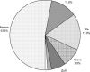 | Рис. 7. Породный состав лесов Подольского района (в % от лесопокрытой площади) |
Доля площади, занимаемой другими древесными породами, составляет всего 1,2% от лесопокрытой площади. Среди них: ольха серая, лиственница, ольха черная, вяз, ива древовидная, ясень, пихта, клен, тополь (породы расположены по ме{-33-|}ре уменьшения занимаемой ими площади). В этом списке наиболее ценные древесные породы - лиственница, пихта, вяз, ясень, клен, а также тополь представлены исключительно лесными культурами разного возраста. Лиственница и пихта являются интродуцентами - видами, не свойственными нашей флоре. Ольха серая принадлежит к числу мелколиственных пород, которые активно заселяют заброшенные сельскохозяйственные угодья и вырубки. Ольха черная предпочитает занимать низинные болота и заболоченные долины малых рек, а древовидные виды ив, как правило, произрастают на аллювиальных отложениях в поймах. Изображения листьев упомянутых деревьев приведены в конце книги (табл. ил. III Приложения 10).
Получив представление о распределении лесных земель по преобладающим породам, рассмотрим более подробно основные типы лесной растительности.
Смешанные леса с преобладанием широколиственных пород и ели можно отнести к наиболее ценным природоохранным объектам. По своему составу елово-широколиственные леса приближаются к доагрикультурным лесам, хотя их структура далека от первозданной. Участки с разнообразным составом и сложной структурой древесного полога в настоящее время на территории Подольского района имеют очень ограниченное распространение.
Один из известных нам участков располагается на территории существующего ботанического заказника в 13 квартале Михайловского лесничества. Он располагается на правом берегу р. Пахры. Здесь обнаружено высокое разнообразие древесных видов. В составе древостоев отмечены дуб, отдельные экземпляры которого достигают одного метра в диаметре, а также ель, липа, клён, вязы шершавый и гладкий. Все виды, за исключением дуба, нормально возобновляются. В кустарниковом ярусе произрастает лещина, бересклет, жимолость. В травяном покрове доминирующее положение занимают виды неморальной эколого-ценотической группы - сныть обыкновенная, пролесник многолетний, копытень европейский, подмаренник душистый, осока лесная, а также достаточно обычны норичник шишковатый, хвощ лесной, купена многоцветковая, бутень ароматический, цирцея пражская, щитовник мужской, кочедыжник женский.
Другой участок хорошо сохранившихся старовозрастных елово-широколиственных лесов расположен на территории Вороновского лесничества (кварталы 2, 3, 9, 13). Первый ярус представлен дубом, липой и елью 90-100-летнего возраста с примесью березы и осины. В состав 2-го яруса и подроста входят клен, липа, ель. Подлесок представлен лещиной, жимолостью лесной и черемухой. В травяном покрове абсолютное господство принадлежит неморальным видам (осока волосистая, сныть, пролесник, медуница неясная, будра плющевидная, зеленчук желтый, бор развесистый, сочевичник весенний, лютик кашубский, копытень, подмаренник душистый, фиалка удивительная, щитовник мужской и другие), к которым примешиваются борец высокий, скерда болотная, кочедыжник женский и другие. Здесь отмечено местонахождение подлесника европейского (Sanicula europea) - вида, включенного в Красную книгу Московской области (Приложение 3).
На территории южного Подмосковья современные широколиственные леса сформировались под сильным воздействием человека и имеют производный характер. Во флористическом отношении для широколиственных лесов характерно абсолютное господство неморальных видов, причем некоторые из них (пролесник, подмаренник душистый, ветреница лютиковая) могут служить индикаторами территорий, находившихся длительное время под лесом или никогда не испытавших в прошлом расчистку под сельскохозяйственные угодья. К особо характерным признакам наименее нарушенных широколиственных лесов относится хорошее развитие синузии ранневесенних эфемероидов с господством ветреницы лютиковой.
Наименее нарушенные широколиственные леса отличаются, прежде всего, многовидовым составом древостоев, включающих помимо дуба и липы клен остролистный, ясень обыкновенный, вязы гладкий и шершавый (Восточноевропейские., 1994). Совсем небольшой участок такого леса отмечен на территории ботанического заказника в Крестовском лесничестве (квартал 20). Возраст древостоев составляет более ста лет. В первом ярусе доминирующие позиции занимают дуб и берёза, к которым примешивается липа, вяз, ясень, осина и ель. В подросте присутствуют липа, клён, ясень, в меньшей степени дуб. Подлесок представлен в основном лещиной с небольшой примесью жимолости и волчьего лыка. В травяном покрове доминирующие позиции занимают обычные неморальные виды (осока волосистая, пролесник, сныть, ясменник душистый, медуница, лютик кашубский), кроме того, отмечены не столь массовые для Московской области виды (борец высокий, подлесник европейский, колокольчик крапиволистный).
Значительно чаще встречаются сильно нарушенные широколиственные леса, отличающиеся {-34-|} обедненным составом древесной синузии. В результате многовековой хозяйственной деятельности из состава древостоев практически полностью исчезли ясень, вязы гладкий и шершавый, а во многих случаях и клен. В настоящее время участки широколиственных лесов с обедненным составом древостоев охраняются на территории ботанических заказников, расположенных в Яковлевском (25 и 26 кварталы), Подольском (22 и 23 кварталы) и Львовском лесничествах (23, 31, 38 кварталы). В заказниках, расположенных в Яковлевском и Львовском лесничествах, наибольшую ценность имеют дубравы 80-120 летнего возраста. Основу первого яруса составляют средневозрастные и старые генеративные деревья дуба вегетативного происхождения, то есть возобновившиеся порослью от пней после сплошной рубки дубовых древостоев, с чем связано их несколько ослабленное состояние. О сильных нарушениях дубовых лесов в конце XIX - начале XX века свидетельствует обязательная примесь мелколиственных видов деревьев в первом ярусе. В ботаническом заказнике на территории Подольского лесничества интерес представляют старовозрастные участки с преобладанием дуба и липы в 1 ярусе.
Достаточно большой по площади монолитный участок старовозрастных липняков и дубрав, включающий места произрастания редкого охраняемого растения - хохлатки полой, расположен в окрестностях пос. Дубровицы (кварталы 47, 48, 91, 92, 93, 94 Подольского лесничества). Этот участок леса предлагается включить в состав заказника. В травяном покрове широколиственных лесов сохранился комплекс типичных неморальных видов, таких как осока волосистая, сныть, звездчатка жестколистная, фиалка удивительная, медуница, лютик кашубский, осока лесная, коротконожка перистая, чина весенняя, перловник поникший, ландыш майский, щитовник мужской, копытень европейский и других (табл. ил. IV-V, Приложение 10).
Березняки и осинники относятся к наиболее распространенным на территории южного Подмосковья типам лесной растительности и отражают сильную антропогенную трансформацию природных комплексов. На территории подавляющего большинства современных ботанических заказников мелколиственные леса также преобладают по площади.
Береза и осина являются пионерными породами, активно заселяющими открытые пространства благодаря обильному ежегодному плодоношению, большой дальности разноса семян и высокой скорости роста в молодости. При этом береза размножается преимущественно семенами и поэтому первой захватывает брошенные пашни. Вырубки часто зарастают березой, которая может возобновляться пневой порослью или семенами (на участках с сильными нарушениями почвенного покрова), а также осиной, дающей обильные корневые отпрыски. Под светлым пологом березняков и осинников при условии заноса семян наблюдается успешное возобновление ценных древесных пород, характерных для лесов зонального типа (ель, липа, дуб, клен, ясень и другие). По мере старения и изреживания мелколиственных древостоев эти виды могут сформировать древесный ярус.
На территории Подольского района обнаружены очень интересные участки березовых лесов, в которых наблюдается возобновление достаточно полного набора древесных видов, свойственных лесам зонального типа. Такие уникальные участки леса расположены в ботанических заказниках на территории Крестовского (20, 28 и 29 кварталы) и Калининского лесничеств (9, 29 и 30 кварталы). В подросте и во втором ярусе мелколиственных лесов присутствуют широколиственные деревья (липа, дуб, вяз, клен, ясень) и ель, а в подлеске доминируют лещина и бересклет бородавчатый. Судя по состоянию подроста, мелколиственные леса заказников могут смениться широколиственными и елово-широколиственными без вмешательства человека. Доминантами травяного покрова выступают типично неморальные виды: зеленчук желтый, осока волосистая, сныть, пролесник, копытень, звездчатка дубравная и другие виды.
Исключительную ценность представляют березовые леса 100 летнего возраста (11-12 кварталы Крестовского лесничества), в которых происходит активное возобновление всего набора древесных пород, характерных для полидоминантных елово-широколиственных лесов зонального типа. В подросте представлены ясень, липа, дуб, вяз шершавый, клен, ель. В ходе проводимых сплошных рубок подрост этих ценных пород уничтожается, леса естественного происхождения заменяются монокультурами ели, что значительно снижает биологическое разнообразие. Подлесок представлен черемухой, жимолостью, бересклетом, крушиной.
Участки березовых лесов с таким разнообразным возобновлением имеют крайне ограниченное распространение. Гораздо чаще встречаются березняки и осинники, под пологом которых возобновляется небольшое число древесных видов, чаще всего липа, дуб и ель в самых разных сочетаниях, зависящих от возможностей заноса семян и приживания всходов.
Травяной покров березовых и осиновых лесов отличается высоким видовым разнообразием. На {-35-|} площади 100 м2 можно встретить до 45-50 видов сосудистых растений. Помимо лугово-опушечных видов (буквица лесная, земляника лесная, костяника, вероника дубравная, черноголовка обыкновенная, щучка обыкновенная, вербейник монетчатый и другие) в травяном покрове встречаются неморальные (сныть, копытень, осока волосистая, звездчатка жестколистная, медуница, ландыш, коротконожка перистая, живучка ползучая и другие) и нитрофильные виды (таволга вязолистная, гравилат речной и другие).
Леса с доминированием ели в первом ярусе на территории Подольского района сформированы человеком в результате специальных лесотехнических мероприятий (создание лесных культур в сочетании с проведением рубок ухода). С хозяйственной точки зрения выращивание ели в относительно короткий срок дает возможность получения большого объема деловой древесины. С экологической точки зрения формирование чистых еловых монокультур на большой площади может иметь негативные последствия: утрата биологического разнообразия, снижение почвенного плодородия, распространение очагов грибных инфекций, вспышки численности насекомых-ксилофагов, снижение устойчивости лесных экосистем.
Значительные площади еловых культур сосредоточены на территории Михайловского лесничества. Интересный участок елового леса, предлагаемый к охране, расположен в бассейне р. Сохны (20, 25, 34 кварталы Калининского лесничества). Характерной его особенностью является небольшая примесь широколиственных пород, а также доминирование в травяном покрове неморальных видов.
В состав древесного яруса помимо ели могут входить мелколиственные виды (береза, осина), а также сосна. Подрост и подлесок развит слабо из-за сомкнутого строения древесного полога и низкой освещенностью под ним. Среди кустарников встречаются жимолость, бересклет, бузина красная, однако чаще всего они не выходят за пределы травяного яруса. Сомкнутый древесный полог, низкая освещенность, накопление хвойной подстилки приводят к невысокому видовому разнообразию травяного покрова. По числу видов в травяном покрове преобладает неморальная эколого-ценотическая группа, меньше видов бореальной группы. Доминирующие позиции в травяном покрове занимают живучка ползучая, зеленчук, кочедыжник женский, щитовник Картузиуса, недотрога мелкоцветковая, кислица обыкновенная, гравилат речной и другие виды. В ельниках может быть хорошо выражен моховой покров из зеленых мхов.
По мере старения и распада еловых древостоев доля широколиственных деревьев и кустарников возрастает, что в будущем может привести к формированию елово-широколиственных лесов.
Сосновые насаждения представлены исключительно лесными культурами разных классов возраста. Культуры создавались на вырубках или бывших сельскохозяйственных угодьях с целью получения ценной деловой древесины. Обильное естественное возобновление многочисленных видов деревьев и кустарников (преимущественно широколиственных) в сосновых культурах дает основание отнести их к сложным борам. В первом ярусе абсолютное господство принадлежит сосне. В качестве естественной примеси в состав древостоев могут входить мелколиственные виды (береза, осина). Благоприятная световая обстановка под пологом сосновых культур, а также постоянный занос семян с окружающих территорий приводит к пышному развитию подлеска из подроста деревьев и кустарников. Видовой состав подроста деревьев зависит от заноса семян с прилегающих участков леса. Наиболее обычен под пологом сосновых культур подрост берез бородавчатой и пушистой, ивы козьей, черемухи, липы, дуба, ели. В синузии трав доминирующие позиции занимают виды нарушенных местообитаний (недотрога мелкоцветковая, живучка, костяника, крапива двудомная), а также папоротники (кочедыжник женский, щитовники Картузиуса и мужской). Участие неморальных видов в травяном покрове значительно меньше, чем в елово-широколиственных и широколиственных лесах.
Наиболее примечательные участки сосновых лесов располагаются близ села Ерино на крутом берегу р. Десны в месте ее впадения в р. Пахру (Подольское лесничество, кварталы 49, 58). Здесь сосредоточены одни из наиболее старых сосновых лесов Подольского района, достигающих возраста от 100 до 150 лет. Встречаются сосны с диаметром ствола до 85 см. В состав подроста входят липа, клён остролистный и дуб. В подлеске обычны лещина, черёмуха, бузина. Естественного возобновления сосны под пологом сосновых насаждений не происходит в связи с высокой требовательностью подроста этого вида к свету. В будущем прогнозируется естественная смена сосновых насаждений широколиственными или елово-широколиственными древостоями.
Черноольшаники приурочены к сырым и заболоченным долинам малых рек. Один из наиболее крупных участков черноольховых лесов, предло{-36-|}женный к охране, представляет собой Семидонное болото, расположенное в пойме р. Мочи близ её истока (Калининское лесничество, квартал 46). Черная ольха имеет порослевое происхождение, свидетельствующее о сплошных рубках 70-80 летней давности. В подлеске встречаются ива пепельная, береза пушистая, смородина черная. Травяной покров отличается высоким флористическим разнообразием. В травяном покрове преобладают паслен сладко-горький, вахта трехлистная, недотрога обыкновенная, таволга вязолистная, крапива двудомная, гравилат речной, сабельник болотный, щитовник Картузиуса, вербейник обыкновенный, зюзник европейский, камыш лесной, осоки дернистая, лисья, вздутоносая {Вид, включенный в Красную книгу Московской области}, вейник седоватый, белокрыльник болотный, хвощ речной, лютик длиннолистный, кизляк кистецветный и другие.
Интересные во флористическом отношении участки черноольховых лесов располагаются по заболоченным поймам небольших ручьев и речек. В качестве примера можно привести долину рек Безымянки (левый приток р. Мочи) и Сохны. На территории Крестовского лесничества в заболоченной пойме небольших лесных речек встречаются черноольшаники, включающие, помимо ольхи черной, вяз гладкий. Подлесок представлен черемухой и смородиной черной. Здесь произрастает страусник обыкновенный, а также охраняемый на территории Московской области колокольчик широколистный.
Пойменные и водораздельные сообщества с доминированием луговых трав в лесной зоне обязаны своим появлением человеку, хотя в доагри-культурный период такие сообщества могли формироваться под влиянием выпаса крупных копытных животных. Прекращение сенокошения и выпаса на лугах приводит к их быстрому зарастанию пионерными мелколиственными деревьями, а также к уменьшению числа видов светолюбивой флоры. Для сохранения луговой растительности необходимо периодически ее выкашивать и проводить умеренный выпас. Интенсификация сельского хозяйства привела в настоящее время к увеличению площади сеяных лугов, отличающихся низким видовым разнообразием, и сокращению площади разнотравно-злаковых лугов.
Участки влажных лугов с доминированием высоких трав сохранились в окрестностях Семидонного болота (Калининское лесничество, квартал 46). Облик лугов определяют следующие виды:
таволга вязолистая, камыш лесной, бодяк разнолистный, хвощ болотный, горец змеиный, чина луговая, дудник лесной, гравилат речной, василек луговой, валериана лекарственная. Массово здесь произрастает охраняемый в Московской области вид - купальница европейская (Trollius europaeus L.). Некоторые из перечисленных видов изображены в конце книги (табл. ил. VI Приложения 10).
В долине р. Мочи (квартал 1 Крестовского лесничества) отмечены разнотравно-злаковые сенокосные луга, зарастающие елью, березой, ольхой черной. Основу травостоя составляют злаки (овсяница красная, трясунка средняя, душистый колосок и другие) и разнотравье (буквица лекарственная, василек луговой, василистник светлый, нивяник обыкновенный, клевер средний, зверобой пятнистый, колокольчик раскидистый и другие). Здесь произрастает купальница европейская, а также некоторые ценные лекарственные растения (горец змеиный, калган). В более влажных условиях доминирование переходит к таволге вязолистной, вербейнику обыкновенному, герани болотной, бодяку болотному, вейнику седоватому.
Участки сухих лугов встречаются фрагментарно. В 58 квартале Подольского лесничества в местах близкого залегания известняков на свободных от лесной растительности склонах доминируют луговые и лугово-степные травы. Многие виды исключительно декоративны: козлобородник восточный, колокольчики персиколистный и скученный, пупавка красильная, гвоздика Фишера, нивяник обыкновенный, короставник полевой, астрагал солодколистный, чина лесная и другие (табл.ил. VII Приложения 10). В окрестностях д. Раёво встречаются участки лугов с участием лугово-степных видов (земляники зелёной, колючника Биберштейна, мятлика узколистного и других).
Лесные поляны, в прошлом использовавшиеся в качестве сенокосов, отличаются высоким видовым разнообразием. В этом отношении интерес представляют внутрилесные поляны (квартал 48 Вороновского лесничества) зарастающие дубом, березой и осиной. Травяной покров здесь представлен красочным разнотравьем из купальницы европейской, горца змеиного, пальчатокоренника Фукса, синюхи голубой, бодяка разнолистного, василька лугового, зверобоя пятнистого, буквицы лекарственной, скерды болотной, лапчатки прямостоячей (калгана), а также злаками (трясунка средняя, тимофеевка луговая, душистый колосок, щучка дернистая). {-37-|}
Современное население млекопитающих Подольского района было сформировано под воздействием целого ряда естественноисторических и антропогенных факторов, в силу чего в его структуре можно выделить несколько качественно и генетически разнородных элементов. Его ядро исторически образовано преимущественно типичными представителями фаунистического комплекса европейских смешанных и широколиственных лесов, такими как лесная куница, черный, или лесной хорь, европейская норка, европейский благородный олень, европейская косуля, орешниковая и лесная сони, лесная мышовка, лесная и желтогорлая мыши, бобр, отдельные виды летучих мышей, заяц-беляк и другими.
Таежные (северные) элементы представлены здесь лосем, белкой и разнообразными землеройками-бурозубками. С юга к лесной фауне примешиваются обитатели открытых ландшафтов, в частности, лесостепных и степных: светлый, или степной хорь, каменная куница, заяц-русак, крапчатый суслик, большой тушканчик, малая белозубка, обыкновенный хомяк. Существенная доля фауны района приходится на виды, широко распространенные в нескольких природных зонах, и которые поэтому трудно отнести к какой-либо конкретной географической группировке. Это обыкновенный еж, европейский крот, лисица, барсук, ласка, кабан, темные полевки и другие.
Кроме того, на рассматриваемой территории в настоящее время обитают вселенцы с Дальнего Востока (енотовидная собака и пятнистый олень) и из Северной Америки (ондатра и американская норка), которые, начиная с 30-х г. XX в., неоднократно выпускались в центральных областях Европейской части России с целью обогащения охотничье-промысловой фауны региона. Важную роль в формировании современного облика животного населения играют такие типичные антропогенные виды, как одичавшие собаки и кошки, домовая мышь, серая и черная крысы.
По данным фаунистических исследований, в Южном Подмосковье обитает около 60 видов млекопитающих, принадлежащих к 6 отрядам (Рулье, 1845; Двигубский, 1892; Сатунин, 1895; Огнев, 1913, 1947; Житков, 1925; Раевский, 1929; Формозов, 1947; Кириков, 1972; Рахилин, 1972; Быков, 1985; Королькова, Быков, 1985; Кузьмин, 1987 и другие).
Фауна млекопитающих Подольского района в настоящее время включает 50 представителей 6 отрядов {Порядок отрядов и видов в отдельных экологических группах приведен в соответствии с системой И.Я. Павлинова, О.Л. Россолимо, 1998}: насекомоядных (Insectivora) (8 видов из 3 семейств), рукокрылых (Chiroptera) (5 видов из 3 семейств), зайцеобразных (Lagomorpha) (2 вида одного семейства), грызунов (Rodentia) (16 видов из 8 семейств), хищных (Carnivora) (14 видов из 3 семейств), парнокопытных (Artyodactyla) (5 видов из 2 семейств). 8 видов (4 - из отряда рукокрылых, 5 - из отряда грызунов) с большой долей вероятности могут быть встречены на исследуемой территории. 3 вида из отряда хищных исчезли с нее в последние столетия. Обитание еще одного вида из отряда насекомоядных представляется нам весьма спорным.
С позиций биотопического распределения видов фауну района можно разделить на четыре экологические группы:
- млекопитающие преимущественно лесных биотопов. Сюда входят виды, основная часть жизненного цикла которых - размножение и фаза покоя - связана с различными типами лесных сообществ;
- млекопитающие преимущественно открытых ландшафтов, которые объединяют опушечные виды, обитателей садов, лесозащитных и противопожарных полос, внепойменных кустарниковых зарослей, лугов и полей;
- околоводные млекопитающие, т.е. обитатели береговой зоны водоемов различного происхождения;
- млекопитающие человеческих построек и поселений.
При написании повидовых очерков в основном использовались оригинальные литературные источники, а также опросные данные (анкетирование населения); результаты ежегодных централизованных учетов охотничье-промысловых животных, любезно предоставленные директором Коротыгинского охотничьего хозяйства С.Д. Лозыченко; результаты зимних маршрутных учетов, проведен{-38-|}ных в январе 2001 г. зоологами Г.С. Еремкиным, Д.М. Очаговым, В.С. Фридманом, Р.И. Назыровой в центральной части района в окрестностях д. Сипягино и в южной части района на участке д.д. Ильино-Каменка; результаты отловов мелких млекопитающих, проведенных Р.И. Назыровой и Д.М. Очаговым. в окрестностях д. Сипягино в январе 2001 г.
Обширная группа, включающая 24 вида из 5 отрядов (обитание еще одного вида находится под вопросом, два вида исчезли из фауны района). Лесным биотопам свойственны млекопитающие, хорошо приспособленные к лазанью по деревьям. Специализированных землероев среди лесных зверей крайне мало. Лесные копытные значительно менее мобильные и стадные животные, нежели обитатели открытых пустынно-степных ландшафтов. В случае опасности их доминирующей поведенческой реакцией является затаивание и маскировка.
Малая бурозубка (Sorex minutus L.). Мелкий зверек специфического облика, бурого либо темно-кофейного цвета, с сероватым брюшком и бархатистой шкуркой. Хоботок с заметным сужением под глазами. Зубы, как у всех бурозубок, покрыты красновато-бурым пигментом. Обычный вид для сухих лесов района. Обитает в рыхлой подстилке, где охотится на мелких беспозвоночных. Указан К.А. Сатуниным (1895) как редкий вид для Подольского уезда, С.И. Огневым (1913) - как обычный для окрестностей г. Подольска. Нами отлавливался при помощи мышиных капканчиков в захламленном ельнике с примесью мелколиственных пород в окрестностях д. Сипягино зимой 2001 г.
Средняя бурозубка (S. caecutiens Laxm.). Крупнее предыдущего вида, с тонким вытянутым хоботком. Встречается в самых разных биотопах, предпочитая хвойные леса. Избегает засушливых и переувлажненных мест. Массовый вид.
Обыкновенная бурозубка (S. araneus L.). Самая крупная из обитающих в районе бурозубок с длиной тела 6-9 см, окраска бурая, хвост двухцветный, контрастный, с кисточкой на конце. Способна жить в разнообразных биотопах. Чаще всего обитает в лесах с густым подлеском и обилием валежника. Избегает болот и слишком сухих участков. Массовый фоновый вид, встречается повсеместно. По К.А. Сатунину (1895) и С.И. Огневу (1913) - самый обычный зверек фауны Южного Подмосковья. Нами отлавливался в захламленном ельнике с примесью мелколиственных пород в окрестностях д. Сипягино зимой 2001 г.
Крошечная бурозубка (S. minutissimus Zimm.). Самое маленькое млекопитающие Европы, весом всего 1,8-2,9 г, с типичными для бурозубок обликом и экологией. Заселяет разнообразные биотопы, встречается и на окраинах болот. Обычна для района, хотя высокой численности никогда не достигает.
Заяц-беляк (Lepus timidus L.). Некрупный заяц весом 3,5-4 кг, уши короткие с черными кончиками, хвост небольшой, округлый. Лапы широкие, особенно зимой, за счет густого опушения, поэтому зимние следы широкие, закругленной формы. Предпочитает изреженные лугами, вырубками и просеками леса с хорошо развитыми лиственным подлеском и травяным покровом. Летом встречается близ рек, ручьев и болот. Для всех зайцев характерны ритмичные колебания численности по годам с четким интервалом 10-11 лет. В пределах района высокая численность беляка отмечалась в XVIII-XIX в.в. (Сатунин, 1895; Огнев, 1913; Житков, 1925; Исаков, 1967; Рахилин, 1972). Позднее популяция была подорвана в результате перепромысла. Поэтому в XX в. в целях искусственного увеличения поголовья неоднократно проводились восстанавливающие и поддерживающие выпуски. Сейчас беляк является самым обычным видом в районе и встречается в соответствующих биотопах на всей его территории. Следы беляка на гоночном и жировочном ходах в большом количестве отмечались нами зимой 2001 г. в окрестностях д. Сипягино, д. Ильино, пос. Рогово, д. Каменка. По данным охотинспекции величина поголовья в последнее десятилетие колеблется от 1000 до 3000 особей, в 2000 г. она оценивалась в 2300 особей. Исторически на территории района беляк всегда преобладал по численности над русаком (см. группу млекопитающих преимущественно открытых ландшафтов). Охотничье-промысловый вид, объект спортивной охоты, переносчик туляремии и пастереллеза.
Обыкновенная белка, или векша (Sciurus vulgaris L.). Хорошо известный населению зверек специфического лесного облика. Встречается в лесах и парках разного типа. Самый обычный вид, в районе обитает повсеместно, при этом его численность существенно меняется по годам в зависимости от урожая семян хвойных пород деревьев. После урожайных лет отмечаются массовые кочевки зверьков. По данным охотинспекции численность в районе колеблется от 350 до 1300, и в 2000 г. она составила 1200 особей. Занесена в Красную книгу Всемирного Союза Охраны Природы (далее - КкВСОП) в категорию "вид, находящийся в состоянии, близком к угрожаемому", поскольку в Европе подверглась сильному {-39-|} уничтожению. У нас же является важным объектом охотничьего промысла.
Орешниковая соня, или мушловка (Muscardinus avellanarius L.). Очень красивый охристо-рыжий зверек типичного древесного облика с длинным пушистым хвостом. Обитает преимущественно в старо- и средневозрастных широколиственных и смешанных лесах с густым подлеском и в садах. Живет в дуплах, в спячке проводит по 7-8 месяцев. С.И. Огнев (1913) и Б.М. Житков (1925) указывали на ее обитание в юго-западной части Подмосковья. По сведениям Е.В. Карасевой и др. (1999), в настоящее время вид встречается и в пределах Москвы. Данных о современном распространении мушловки в Подольском районе нет, поскольку зверек практически не поддается прямым наблюдениям вследствие крайне скрытного образа жизни и короткого периода сезонной активности. Продукты его жизнедеятельности также очень трудно найти и идентифицировать. Тем не менее, вполне допустимо говорить об его обитании в южном секторе района, в частности, на границе с Калужской областью к юго-востоку от д. Каменка. На территории района в аналогичных биотопах может быть встречена и лесная соня (Dryomys nite-dula Pall.). Оба вида занесены в КкВСОП в ту же категорию, что и обыкновенная белка.
Лесная мышовка (Sicista betulina Pall.). Похожая на мелкую мышь представительница семейства тушканчиков с очень длинным цепким хвостом и сплошной верхней губой без выемки. Предпочитает смешанные, лиственные и хвойные захламленные леса со светлыми полянами. По тем же причинам, что и сони, на исследуемой территории абсолютно не изучена. Может быть встречена в южной части района. Занесена в КкВСОП в ту же категорию, что и вышеописанные виды.
Рыжая (лесная) полевка (Clethrionomys glareolus Sehr.). Небольшой зверек с типичным для полевок обликом и ржаво-коричневой окраской спинки. Весьма обычный вид для разнообразных хвойных, смешанных и особенно широколиственных лесов, находя в последних оптимальные условия для существования. Служит одним из основных кормов для большинства лесных хищных зверей и птиц. В районе встречается повсеместно как массовый фоновый вид, для которого характерны резкие колебания численности по годам. Нами отлавливался при помощи мышиных капканчиков в захламленном ельнике с примесью мелколиственных пород в окрестностях д.Сипягино зимой 2001 г. Главный переносчик геморрагической лихорадки.
Малая лесная мышь (Apodemus uralensis Pall.). Типичный мышевидный грызун с длинным хвостом, большими глазами и крупными ушами. По следам хорошо отличается от других мышей длиной прыжка, достигающей 1 м. Предпочитает широколиственные леса, хотя встречается и в разреженных насаждениях, например, в зарослях кустарника. Обычный в районе вид.
Желтогорлая мышь (A.flaxricoBis Melch.). Очень похожа на малую лесную мышь, но заметно крупнее (до 14 см), на груди всегда имеется желтое пятно нечетких очертаний. Занимает аналогичные предыдущему виду биотопы, однако, более тенелюбива и поэтому предпочитает более сомкнутые леса. Наряду с рыжей полевкой и малой лесной мышью является одним из самых обычных мышевидных грызунов Южного Подмосковья (Формозов, 1947; Меркова, 1955; Быков, 1985).
Енотовидная собака (Nyctereutes procyonoides Gray.). Внешне немного напоминает североамериканских енотов, хотя и относится к семейству собачьих. Типичный представитель дальневосточных широколиственных лесов, акклиматизированный в Европейской части б. СССР в 30-е г. XX в. Предпочитает леса с густым подлеском и небольшими перелесками, любит селиться около водоемов. Зимой впадает в неглубокий сон. Численность в районе держится на низком уровне и охотоведами оценивается как единичная (данные С.Д. Лозыченко). Объект охоты. Как и все собачьи, является переносчиком бешенства.
Волк (Canis lupus L.). Самый крупный представитель семейства собачьих с массой тела до 70 кг. Имеет высокий коэффициент умственной деятельности. Для охоты использует самые разнообразные биотопы, в том числе и открытые, однако логово всегда устраивает в глухих труднодоступных лесных урочищах, поблизости от водоемов (не далее 500-700 м). С.В. Кириков (1972) описывал факты особой активности волков в Подольском уезде в 70-е г. XIX в., когда в д. Борисовка, селах Захарьино, Молодцы, Красная Пахра были отмечены случаи их нападения на 10-12-летних детей. На факты добычи здесь волка ссылался и К.А. Сатунин (1895). По данным А.Н. Формозова (1947) в 1927-29 г.г. волки обитали на границе Подольского и Наро-Фоминского районов. В.И. Осмоловская (1978) также указывала на активные проявления их деятельности в соседних с Подольским районах, особенно Наро-Фоминском. По А.М. Михайлову и Н.К. Клюкину (1996) в Южном Подмосковье в настоящее время он обитает в Домодедовском и Серебряно-Прудском районах. По свидетельству С.Д. Лозыченко, в настоящее время постоянного обитания волка на территории района не зафиксировано. Однако в среднем раз в два года одиночные либо стайные волки заходят сюда из Калужской области.
Собака домашняя (одичалая форма) (Canis familiaris L.). В последние годы в Подольском районе этот типичный одомашненный хищник, являющийся, {-40-|} по бытующему сейчас мнению, прямым потомком волка, перешел к самостоятельной жизни в диком состоянии. При этом он полностью проявляет черты экологии и поведения своего дикого предка. Фактически, можно говорить о замещении волка дикой формой собаки в экологической нише крупного хищника-преследователя на высокоурбанизированных территориях. Причины этого интересного явления, с одной стороны, заключаются в нарушении естественных пищевых связей вследствие прямого уничтожения волка, с другой - в непродуманном, а порой и жестоком отношении человека к собакам, особенно к так называемым беспородным. По оценкам специалистов, численность бродячих собак в районе в настоящее время составляет порядка 1,5-2,5 тыс. особей (данные С.Д. Лозыченко). Они концентрируются преимущественно вокруг населенных пунктов, но заходят и в речные долины и на окраины лесных участков. Как и волки, логово устраивают в лесных массивах. Благодаря высокой, генетически обусловленной способности к стайной охоте, бродячие собаки наносят катастрофический урон популяциям европейского благородного и пятнистого оленей, косули, зайца и других ценных видов. Являются активными переносчиками бешенства! Отстрел бродячих собак негуманен и не приносит желаемого результата, поэтому, частичным решением проблемы могла бы стать широкомасштабная программа по стерилизации самок в Европейском центре России, что с течением времени привело бы к существенному сокращению популяций бродячих собак.
Определенный вред естественной фауне района наносят и полудикие и одичавшие домашние кошки (Felis catus L.).
Лисица (Vulpes vulpes L..). В Московской области обитает ярко окрашенная форма лисицы, так называемая "огневка". При этом на территории района могут встречаться и особи, сбежавшие из зверосовхоза и относящиеся к другим цветовым расам. Предпочитает разреженные леса, перемежаемые лугами и полянами. Не боится подходить близко к жилищам человека. Активно истребляет мышевидных грызунов. Обычный и повсеместно распространенный в районе вид, численность которого, по данным охотинспекции, оценивается в среднем в 200 особей. В последние годы отмечается тенденция роста поголовья, что связано с некоторым уменьшением объемов ее добычи. Многочисленные следы мышкующей лисицы отмечены зимой 2001 г. по краю леса и на полях в окрестностях д. Сипягино, а также в южной части района на границе с Калужской областью между д.д. Ильино и Каменка. Очень ценный пушной зверь. Основной переносчик бешенства!
Лесная куница, или желтодушка (Martes martes L.). Свое второе название получила за желто-оранжевое горловое пятно. Предпочитает густые старовозрастные, преимущественно еловые, леса. Прекрасно приспособлена к жизни на деревьях. Довольно широко распространена на территории района. По данным охотинспекции в 1990 г. ее поголовье составляло приблизительно около 60, в 1996 г. - около 80, а в 2000 г. - около 180 особей. Причем, колебания численности для этого вида вполне закономерны и связаны с циклами его основного корма - мелких грызунов. На зимнем маршрутном учете следы лесной куницы обнаружены нами в старовозрастных ельниках в окрестностях д. Сипягино. Очень ценный пушной зверь и важный объект промысловой охоты.
Черный, или лесной хорь (Mustela putorius L.). Очень симпатичный черно-бурый зверек с палевым подшерстком, на мордочке - характерный рисунок ("маска"). Селится в разреженных лесах, где держится преимущественно около опушек и водоемов. Нередко обитает и в населенных пунктах. Интенсивно истребляет мелких грызунов. В XIX в. черный хорь встречался в Подмосковье повсеместно (Сатунин, 1895). Сейчас же численность хоря в районе невелика, хотя зимой его следы встретить довольно легко. Нами неоднократно отмечались его следы в лесных биотопах в окрестностях д. Сипягино.
Барсук (Meies meles L.). Неуклюжий грузный зверь, хорошо приспособленный к роющей деятельности. В районе приурочен к лесным биотопам. В склонах южной экспозиции с песчаной сухой почвой строит сложные норы - "городки", используемые многие десятилетия подряд несколькими поколениями зверей. Барсук всегда был обычен в Подмосковье, в последние годы в пределах района обитает около 80 особей (данные охотинспекции). Причем, его отдельные поселения расположены прямо в окрестностях г. Подольска. Служит объектом охоты.
Кабан, вепрь, или дикая свинья (Sus scrofa L.). Единственный представитель семейства свиных в фауне России. Встречается на глухих лесных территориях, предпочитая близость водоемов. Любит заболоченные участки. Кормиться выходит на луга и в агроландшафты. Московская область лежит в северной части естественного ареала этого вида. Его продвижение на север ограничивает снежный покров, затрудняющий добычу корма и препятствующий перемещениям этих грузных животных с относительно короткими копытами. По свидетельству К.А. Сатунина (1895), на рубеже XIX-XX в.в. кабан в Подмосковье был полностью истреблен. В XX в., благодаря разведению в охотхозяйствах с последующими выпусками, поголовье было восстановлено фактически до промыслового уровня. В Подольском районе, начиная с 1993 г., отмечена четкая тенденция нарастания численности, которая сейчас {-41-|} оценивается специалистами как высокая и составляет порядка 150-250 голов с ежегодной добычей 40-50 особей (данные С.Д. Лозыченко). Важный охотничье-промысловый зверь, объект спортивной охоты. Поддержание его численности требует на территории района регулярных биотехнических мероприятий.
Пятнистый олень (Cervus nippon Temm.). Стройный олень весом до 100 кг, рога с одним надглазничным отростком. В Подмосковье привезен и акклиматизирован с Дальнего Востока, поэтому выбирает биотопы, аналогичные исконным - светлые широколиственные и смешанные леса с густым травяным покровом, перемежаемые полянами. Выходит на зарастающие вырубки и в пойменные леса. В Южном Подмосковье появился в середине XX в. (Колосов, 1975). В настоящее время Подольская популяция пятнистого оленя, состоящая из 40-50 голов, находится на полувольном содержании в питомнике центральной базы Коротыгинского охотхозяйства. Перевод популяции на вольное содержание, вследствие интенсивных негативных внешних воздействий, привел к резкому падению численности. Практически ежегодно отмечаются ежегодные заходы на территорию района стада пятнистого оленя из охотхозяйства "Барсуки" (Калужская область).
Все представленные на исследуемой территории 4 вида оленей (см. ниже) очень сильно страдают от деятельности лис и одичавших собак. Последние не только выбивают молодняк, но и наносят вред взрослым особям. Кроме того, олени оказываются очень зависимыми от условий среды, требуя обширных площадей лесных пространств с пониженной антропогенной нагрузкой. Таким образом, эти виды в значительно большей степени, нежели другие представители фауны района, нуждаются в постоянном внимании к их популяциям, проведению специальных биотехнических мероприятий и искусственному поддержанию численности за счет разведения и выпусков. Все олени района являются ценными охотничье-промысловыми видами, объектами спортивной охоты и желанными трофеями.
Европейский благородный олень (Cervus elaphus L.). Крупнее пятнистого, рога с двумя надглазничными отростками. Предпочитает мозаичные лесные ландшафты: хвойные, смешанные либо широколиственные леса, перемежаемые полянами, травяными болотами, остепненными участками, зарастающими гарями. Полностью истреблен в районе еще в XIX в. (Сатунин, 1895). В результате своевременных природоохранных мероприятий на протяжении XX в. былой ареал был частично восстановлен. В Подольском районе в настоящее время случаев постоянного обитания благородного оленя не зафиксировано, однако несколько особей заходят на рассматриваемую территорию из Калужской области вместе со стадом пятнистого оленя.
Европейская косуля (Capreolus capreolus L.). Самый маленький олень Европы, предпочитает светлые смешанные и широколиственные леса с хорошо развитым подлеском, подростом и травянистым покровом, перемежаемые полянами и низинными болотами. До 70-х г. XIX в. косуля была обычна для Подольского уезда (Сатунин, 1895). Но уже к 20-м г. XX в. была истреблена практически полностью (Житков, 1925). На протяжении XX в. подольская популяция косули была восстановлена. И сейчас, по сводкам охотинспекции, ее поголовье в районе оценивается как стабильное, численность 120-140 особей. В районе обитает повсеместно, встречается даже в его северной высоко урбанизированной части.
Лось, или сохатый (Alces alces L.). Самое крупное животное района. Типичный лесной вид, зимой избегает мест со снежным покровом высотой более 70 см. Любит болотистые топи и присутствие глухих озер и рек. К. Рулье указывал на обитание лося к югу от Москвы. Однако к концу XIX в., по сведению К.А. Сатунина (1895), в Московском крае он был истреблен полностью. В XX в., благодаря грамотной охране, наблюдается вторичное расселение и нарастание его численности в области. По Д.Н. Данилову (1947), в 40-е г. XX в. его плотность в Подольском районе составляла 0,9 ос/1000 га, а по М.Д. Перовскому, А.П. Варнакову (1978), в 70-е г. в Южном Подмосковье она возросла в среднем до 6,6 ос/1000 га. Сейчас в районе постоянно обитает около 100 особей. Специалисты оценивают популяцию как стабильную (данные С.Д. Лозыченко). Зимой 2001 г. следы лося отмечались нами в глухом ельнике в окрестностях д. Сипягино.
В недалеком прошлом в рассматриваемую экологическую группу входили также такие ценные виды лесных млекопитающих как бурый медведь (Ursus arctos L.) и рысь (Felis lynx L.). К концу XIX в. они были полностью уничтожены по всему Подмосковью (Цалкин, Борисоглебская, 1967; Кузьмин, 1987). Однако в XVIII - начале XIX в.в., по данным С.В. Кирикова (1966), медведь еще изредка встречался в Подольском уезде. В XIX в. однажды была случайно добыта рысь (Сатунин, 1895). В последние десятилетия эти хищники здесь не отмечались. Современное состояние природной среды района не оставляет возможности предположить даже их кратковременные заходы.
Довольно многочисленная и разнообразная группа, насчитывающая 15 видов из 6 отрядов. Еще 7 {-42-|} видов из 2 отрядов могут быть встречены с большой долей вероятности. В пределах района объединяет животных, крайне различающихся по облику и экологии. Общей отличительной чертой их подавляющего большинства является высокая степень приспособленности к роющему образу жизни либо к обитанию в чужих норах.
Обыкновенный еж (Erinaceus europaeus L.). В последние годы вид активно тяготеет к антропогенному ландшафту и населенным пунктам, поселяясь на опушках смешанных и широколиственных лесов, в садах, старых полезащитных полосах, в деревнях и городах. Избегает переувлажненных мест. Интенсивно уничтожает вредных беспозвоночных, например, личинок хрущей. В Подольском районе является самым обычным, местами многочисленным видом, хорошо известным населению. Отмечался для Подольского уезда К.А. Сатуниным (1895). Является прокормителем некоторых пастбищных клещей - переносчиков пироплазмоза.
Европейский, или обыкновенный крот (Talpa europaea L.). Этот высокоспециализированный землерой активно заселяет открытые угодья с мягким влажным грунтом - опушки смешанных и лиственных лесов, лесные поляны, луга. В последние годы очень сильно размножился во всех центральных регионах Европейской части России, в том числе и в Подольском районе. Стал часто встречаться на огородах, но вреда огородным культурам не наносит в силу своей насекомоядности. Является исключительно полезным потребителем беспозвоночных. Порои крота очень легко спутать с продуктами жизнедеятельности водяной полевки (Arvicola terrestris L.) - активного вредителя сельскохозяйственных растений (см. группу околоводных млекопитающих). Поэтому, крот зачастую совершенно незаслуженно становится объектом недовольства населения. В районе встречается повсеместно и с высокой численностью.
Водяная ночница (Myotis daubentoni Kuhl.), бурый ушан (Plecotus auritus L.), нетопырь-карлик (Pipistrellus pipistrellus Schr.), рыжая вечерница (Nyctalus noctula Schr.), двухцветный кожан (Vespertilio murinus L.). Современная фауна рукокрылых района абсолютно не изучена в силу существенных трудностей при полевых работах с ней. С.И. Огнев (1913), на основе коллекционных сборов у с. Валуево, указывал названные виды как обычные для Подольского уезда (собранные им экземпляры хранятся в настоящее время в Зоологическом музее МГУ). По сведениям Е.В. Карасевой и др. (1999), они до сих пор обитают в Москве и в ближнем Подмосковье. Таким образом, с большой долей вероятности можно предположить их современное распространение и на территории района. Кроме того, здесь могут быть встречены усатая ночница (Myotis mystacinus Kuhl.), прудовая ночница (M. dasycneme Boie.) (КкВСОП и Красная книга Московской области, категория "уязвимый вид"), нетопырь Натузиаса (Pipistrellus nathusii Keys.) и малая вечерница (Nyctalus leisleri Kuhl.) (КкВСОП, категория "вид, находящийся в состоянии, близком к угрожаемому"). В целом опросы показывают, что летучие мыши в Подольском районе многочисленны не только над водоемами, но даже в городских населенных пунктах.
Заяц-русак (Lepus europaeus Pall.). Крупнее беляка (см. группу преимущественно лесных млекопитающих), весит до 7 кг, уши длинные, лапы очень узкие. Тяготеет к мозаичным ландшафтам, состоящим из полей, перелесков, островов леса, кустарниковых зарослей и т.п., поскольку подобное сочетание обеспечивает выгодные защитные условия. В районе распространен значительно менее широко, чем беляк {Кроме беляка и русака, на территории района может быть встречена их гибридная форма - тумак (Lepus timidus L. x L. europaeus Pall.) - которая всегда возникает в местах совместного обитания этих видов. На широкое обитание тумака в Московской области указывал Б.М. Житков (1925)}. В целях укрепления популяции, на территории района проводятся периодические выпуски русака. Так, в начале 2001 г. было выпущено 30 зверьков (данные С.Д. Лозыченко). По оценкам охотинспекции, численность колеблется в пределах 200-300 особей. Местами повреждает садовые деревья. Является переносчиком туляремии и пастереллеза.
Полевка-экономка, или крысоголовая полевка (Microtus oeconomus Pall.). Эта крупная полевка имеет специфический, характерный для всех представителей рода внешний облик. Длина хвоста составляет четверть длины тела, бугорки на ступнях задних лапок продолговатые. Чаще всего селится на влажных участках среди леса - на заболоченных лугах и вырубках, в поймах, на болотах. Образует заметные колонии с хорошо натоптанными тропинками. Занесена в КкВСОП в категорию "вид, находящийся в состоянии, близком к угрожаемому". Обычный в районе зверек. Активный вредитель сельскохозяйственных культур, переносчик лептоспироза.
Обыкновенная полевка (M. arvalis Pall.). Похожа на полевку-экономку, но длина двухцветного контрастного хвоста составляет треть длины тела, бугорки на ступнях задних лапок круглые. Ее вид-двойник - восточноевропейская полевка (M. rossiae-meridionalis Ognev) - отличима от нее только при помощи специальных исследований хромосомного набора. Часто совместно селятся на сухих полях, лугах, полянах, опушках, в населенных пунктах. Обычные для района виды. Подгрызают кору {-43-|} саженцев и молодых деревьев в осенне-зимний период. Являются переносчиками туляремии.
Мышь-малютка (Micrromys minutus Pall.). Самый мелкий среди мышей вид с длиной тела всего 5-7 см, с длинным хвостом и маленькими ушками. Окраска спинки бежевая, брюшка - белая. Предпочитает луга, поля, кустарниковые и тростниковые заросли. Вьет аккуратные шарообразные гнезда, укрепляя их между стеблями или ветвями. Занесена в КкВСОП в категории "вид, находящийся в состоянии, близком к угрожаемому". Встречается на территории района.
Полевая мышь (Apodemus agrarius Pall.). Можно спутать с малой лесной мышью (см. группу млекопитающих преимущественно лесных биотопов), от которой она легко отличима по четкой темной продольной полоске вдоль хребта. Встречается на полях, лесных опушках, зарастающих вырубках и полезащитных полосах. По данным Е.В. Карасевой и др. (1992), широко распространена в Южном Подмосковье. Для фауны района - обычный вид.
Ласка (Mustela nivalis L.). Имеет облик типичного хищника - потребителя мышевидных грызунов с длинным тонким гибким телом, прекрасно приспособленным к перемещению в мышиных и полевочьих норах. Встречается по опушкам, на вырубках, полях, в древесных посадках, на окраинах деревень. В районе обитает повсеместно как самый обычный вид. На зимних маршрутных учетах следы отмечались нами в окрестностях д. Сипягино и Ильино зимой 2001 г.
Горностай (M. erminea L.). Крупнее ласки, кончик хвоста всегда черный. Предпочитает биотопы с обилием мышевидных грызунов: сложные ельники, вырубки, опушки, выходит к берегам водоемов, селится и вблизи населенных пунктов. Встречается чаще ласки. В районе обитает повсеместно и достигает высокой численности, которая оценивается приблизительно в 200 особей (данные С.Д. Лозыченко). Ценный пушной зверек.
Светлый, или степной хорь (M. eversmanni Less.). Немного крупнее и значительно светлее лесного хоря (см. группу преимущественно лесных млекопитающих). В XX в., по мере вырубания лесов и замещения их сельскохозяйственными угодьями, этот типичный степной вид значительно расселился к северу от своей естественной области распространения. Встречается на территории района (устное сообщение зоолога А.И. Бородина).
Кроме перечисленных видов на рассматриваемой территории могут обитать обыкновенный хомяк (Cricetus cricetus L.), крапчатый суслик (Spermophilus suslicus Guld.) и большой тушканчик, или земляной заяц (Allactaga major Kerr.). Эти типичные представители фауны открытых ландшафтов последние годы активно расширяют свой ареал на север, продвигаясь по остепненным участкам и искусственно созданным безлесным пространствам. Обыкновенный хомяк - трехцветный грызун, внешне немного напоминающий южноамериканскую морскую свинку. Населяет поля, лесные полезащитные полосы, иногда по опушкам и вырубкам проникает далеко в глубь леса. Л.П. Сабанеев (1874), К.А. Сатунин (1895) и В.Е. Раевский (1929) указывали на интенсивное расселение этого вида в Средней России и, в частности, в Московском крае. Неоднократно встречался нами в природном парке "Битца". В описанных биотопах может быть встречен и на территории Подольского района. Крапчатый суслик и большой тушканчик, занесенные в Красную книгу Московской области как крайне редкие виды, отмечались в последние годы в нескольких соседних с Подольским районах Южного Подмосковья (Красная книга Московской области, 1998). Таким образом, вполне вероятны их заходы и на его территорию.
В группу входят 6 видов из 3 отрядов. Обитание еще одного вида вызывает определенные сомнения, один вид исчез с территории района полностью. Для видов этой группы характерны весьма специфичные черты, связанные с водной средой обитания - хорошо дифференцированный шерстный покров с пониженной теплопроводностью, кожные перепонки между пальцами. Отдельным видам свойственны маскирующая контрастная окраска брюшка и спинки, а также наличие замыкающих ноздри и ушные отверстия клапанов.
Водяная кутора (Neomys fodiens Penn.). Хорошо приспособленная к полуводному образу жизни землеройка с двухцветной контрастной маскирующей окраской тела. Живет в поймах рек, по берегам канав и прудов. Предпочитает широколиственные леса и ольшаники. Обычна для фауны района.
Бобр (Castorfiber L.). Самый крупный грызун европейской фауны с высокоразвитыми способностями к разумной гидроинженерной деятельности. Единственное млекопитающее района, для которого характерны хорошо заметные на местности, крайне видоспецифичные продукты жизнедеятельности - сложные плотины и отчетливые погрызы деревьев и кустарников. Обладает очень красивым и прочным мехом. Для поселений выбирает поросшие осиной, ивой, березой берега лесных рек, мелиоративных канав, прудов. Плотины строит для сглаживания колебаний уровня воды в течение года. На территории {-44-|} района встречается только норная форма бобра. К середине XIX в. вид был полностью истреблен как в Подмосковье, так и в большинстве центральных районов Европейской части России (Рулье, 1845; Огнев, 1931; Кириков, 1966). В результате реализации широкомасштабной программы по спасению бобра в Советском Союзе к середине XX в. запасы бобра у нас были восстановлены, и сейчас вид продолжает интенсивное самостоятельное расселение.
В Подольском районе долговременных поселений не образовывал вплоть до 80-х г. XX в. Однако, по данным С.Д. Лозыченко, в 1986 г. самостоятельно проник сюда с территории Калужской области. В настоящее время зафиксировано несколько поселений бобра по рекам Пахра, Моча, Лопасня. В одном поселении обитает в среднем по 3-4 животных. Занесен в КкВСОП как вид, находящийся в состоянии, близком к угрожаемому. Одно из самых замечательных млекопитающих района, имеет огромную естественноисторическую и культурную ценность. Требует особенно бережного и уважительного отношения к себе со стороны населения и нуждается в самом пристальном внимании к его охране! Места обитания бобра в районе должны сразу объявляться охраняемыми участками воспроизводства ценной фауны.
Ондатра (Ondatra zibethicus L.). Этот североамериканский грызун в XX в. был акклиматизирован в России. Показал высокие способности к активному самостоятельному расселению и мощному наращиванию численности. Заселяет самые разнообразные околоводные биотопы, требователен к наличию сплошных зарослей высшей околоводной растительности (тростника, рогоза, камыша и т.п.) вдоль береговой линии. В районе распространен повсеместно и с высокой численностью. По оценкам охотинспекции, поголовье ондатры в 2000 г. оценивалось в 1000 особей. Вредит огородам, чем справедливо вызывает недовольство населения. Пушной вид, объект интенсивного промысла.
Водяная полевка, или водяная крыса (Arvicola terrestris L.). Крупная полевка с длиной тела 15-20 см и характерной тупой мордочкой. Мех темный и очень пышный. Активный землерой, следы роющей деятельности легко спутать с кротовыми (см. группу млекопитающих преимущественно открытых ландшафтов). Очень любит селиться на огородах и в садах, где интенсивно губит культурные растения. Всегда была самым обычным, а местами и многочисленным зверьком района (Михеев, 1937). Такая же картина наблюдается и сейчас. До недавних пор служила объектом довольно интенсивного пушного промысла.
Европейская (русская) норка (Mustela lutreola L.). Необычайно красивый представитель семейства куньих, строением тела похожий на хорька. Между пальцами - неполная плавательная перепонка. Окружье рта белое, мех густой, прочный и блестящий. Заселяет берега лесных рек, реже озер. По сведениям К.А. Сатунина (1895), еще в XIX в. была обыкновенным видом для всей Московской губернии. В XX в. в пределах всего ареала активно вытесняется американской норкой, что характерно и для рассматриваемой территории, поэтому численность в районе оценивается как единичная. Крайне трудно наблюдаема в естественных условиях, по следам практически не отличима от американской. Ценнейший пушной зверь. Охраняется ВСОП как подверженный опасности вид.
Американская норка (Mustela vison Schr.). Крупнее европейской норки, хвост более длинный. Мех гуще и пышнее. Белое пятно только на нижней губе. Иногда на спинке и брюшке бывают белые отметины. Заселяет общие с европейской норкой биотопы. Ведет себя как сильный и агрессивный вселенец. В районе интенсивно размножилась после утечки особей из пушного зверосовхоза. Сейчас, по данным С.Д. Лозыченко, численность оценивается в 300 голов. На маршрутном учете зимой 2001 г. следы норки в довольно большом количестве зафиксированы нами в поймах небольших речек в центральной и южной частях района.
К группе околоводных млекопитающих относятся также выхухоль (Desmana moschata L.) и выдра (Lutra lutra L.). Выхухоль -один из интереснейших видов нашей фауны. По облику напоминает крупную землеройку весом около 400 г., с густым и очень теплым мехом. В настоящее время стремительно сокращается в численности в пределах всей области распространения. Занесена в КкВСОП, Красную книгу России и тех ее субъектов, на территорию которых простирается ее ареал.
В Подольском районе, если судить по литературным данным (Огнев, 1928; Шапошников, 1933; Хахин, Иванов, 1990), в последние столетия не отмечалась. Ближайшее к нему место ее обитания - Наро-Фоминский район (Емельянова и др., 1996). По данным С.Д. Лозыченко, одна задавленная собаками выхухоль была обнаружена в 1998 г. в системе р. Нары как раз на границе с вышеназванной территорией. Хотя мы и усматриваем в этом элемент случайности, очень важно усилить внимание к возможному появлению этого уникального животного в районе.
Великолепно приспособленная к водной среде выдра - ловкий, сильный и очень красивый зверь, также повсеместно охраняемый ВСОП. Обитала на территории района вплоть до XIX в. как крайне редкий вид. По сведениям К.А. Сатунина (1895), одна самка выдры была добыта в {-45-|} окрестностях г. Подольска в середине XIX века. Сведения о находках выдры в районе в настоящее время отсутствуют. Пребывание вида здесь стало абсолютно невозможным из-за глубокой трансформации человеком его местообитаний.
Самая малочисленная экологическая группа в районе, насчитывающая всего 5 видов из 3 отрядов. Включает зверей, глубоко приспособленных к совместному проживанию с человеком. Для мышевидных грызунов, составляющих основу этой группировки, характерны такие эволюционно прогрессивные черты, как высокая способность к эффективным слаженным коллективным действиям и научению.
Малая белозубка (Crocidura suaveolens Pall.). Этот обитатель степных и лесостепных ландшафтов является ближайшим родственником бурозубок и очень похож на них внешне. В последние десятилетия активно продвинулся на север, заселяя агроландшафты и человеческие постройки в пределах лесной зоны. В Подольском районе, как и во всем Южном Подмосковье, встречается в населенных пунктах наряду с мышевидными грызунами, о которых речь пойдет ниже.
Домовая мышь (Mus musculus L.), серая крыса, или пасюк (Battus norvegicus Berkh.), черная крыса (Battus rattus L.). Серая крыса отличается от черной широкой тупой мордочкой, короткими хвостом и ушами. Эти виды имеют сейчас практически всесветное распространение благодаря своей высокой экологической пластичности. В Подольском районе в большом количестве распространены во всех населенных пунктах. Являются носителями опасных природно-очаговых заболеваний, в частности, лептоспироза.
Каменная куница, или белодушка (Martes foina ErxL.). От лесной куницы, или желтодушки (см. группу преимущественно лесных млекопитающих) отличается белым нагрудным пятном в форме подковы и более длинным хвостом. Этот южный вид в лесной зоне селится в городах и деревнях на чердаках, реже в дуплах старовозрастных деревьев в парках. Питается голубями, мышами и крысами. В Подольском районе встречается довольно часто и повсеместно. Охотоведом С.Д. Лозыченко наблюдалась у пос. Рогово.
Обобщая данные по современному распределению млекопитающих в Подольском районе и подводя итог всему вышесказанному, можно указать на следующие черты, характеризующие современный облик фауны рассматриваемой территории с позиций ее происхождения и причин изменения на протяжении последних двух столетий:
- Относительно высокое видовое богатство в до-антропогенный период.
- Обогащенность типичной среднеевропейской лесной фауны Южного Подмосковья северными (таежными) и южными (степными) элементами за счет пограничного положения и наличия вследствие этого широкого спектра местообитаний.
- Качественное и количественное обеднение фауны района к середине - концу XIX в. за счет прямого (неумеренный охотничий промысел) воздействия на нее. Практически полное уничтожение медведя, рыси, выдры, бобра, лося, европейского благородного оленя, косули, кабана.
- Дальнейшее нарастание тенденции обеднения естественной фауны района к середине - концу XX в. в результате косвенного (трансформация и уничтожение местообитаний) и прямого (браконьерство) воздействия на нее.
- Восстановление к концу XX в. численности и распространения отдельных видов млекопитающих, преимущественно охотничье-промысловых, - бобра, лисицы, копытных, зайцев - за счет сокращения объемов добычи, а также грамотного и своевременного проведения природоохранных и биотехнических мероприятий.
- Нарастание к концу XX в. тенденции дальнейшего проникновения на территорию района южных (степных) элементов в связи с искусственным увеличением площадей открытых ландшафтов и изменением климата.
- Увеличение к концу XX в. доли видов, активно приспособившихся к обитанию на высоко освоенных человеком территориях (обыкновенный еж, малая белозубка, ласка, горностай, черный хорь, каменная куница и другие).
- Вселение на территорию района в XX в. чужеродных для европейской фауны видов млекопитающих, разрушающих исторически сформированные естественные и антропогенные экосистемы (вытеснение европейской норки американской; увеличение числа видов-переносчиков возбудителя бешенства в результате акклиматизации енотовидной собаки; уничтожение садово-огородных культур ондатрой).
- Активный переход к обитанию вне поселений человека типичного домашнего хищника - собаки, глубоко подрывающей популяции некоторых видов диких животных, в частности, оленей.
- Потеря копытными, особенно оленями, возможности самостоятельно поддерживать собственные популяции на жизнеспособном уровне в {-46-|} течение длительного срока без помощи человека вследствие мощного антропогенного пресса.
Таким образом, к концу XX в. фауна млекопитающих Подольского района утеряла свой естественный (т.е. преимущественно лесной) облик, сильно обеднена и может быть охарактеризована как "антропогенная модификация комплекса млекопитающих смешанных и широколиственных лесов со стандартным для среднеевропейских высокоурбанизированных территорий набором видов".
Для предотвращения дальнейшего развития негативных процессов, затронувших фауну млекопитающих Подольского района, требуется установление жестких квот на добычу охотничьих видов млекопитающих и реализация развернутой программы по борьбе с браконьерством. Необходимо создание системы жестко контролируемых участков воспроизводства основных и ценных видов фауны млекопитающих (возможно, в форме ООПТ), объединенных экологическими (миграционными) коридорами в единое целое.
Первые сведения о птицах Подольского края относятся к концу XIX в. Здесь проводили свои экскурсии такие орнитологи как Д.Н. Кайгородов, нашедший гнездо вьюрка в парке усадьбы "Михайловское" 11.VII.1889г. (Поляков, 1924; Птушенко, Иноземцев, 1968); Н.Ю. Зограф, сообщивший о гнездовании белого аиста в 1889-1891 гг. (Птушенко, Иноземцев, 1968); Ф.К. Лоренц (Lorenz, 1892-94; 1894; Лоренц, 1902), по данным которого серая цапля образовывала значительные колонии близ г. Подольска, а глухарь к началу XX в. почти исчез в Подольском уезде и попадался очень редко, единичными экземплярами. На этой же территории проводили свои наблюдения Л.П. Сабанеев (?, утраченная рукопись) и К.А. Сатунин (1895).
В начале XX в. систематическое изучение фауны окрестностей с. Михайловское предпринял Н.А. Мосолов. Он был одно время хранителем Михайловского естественноисторического музея, принадлежавшего графине Е.П. Шереметевой, и жил при нём. Этим автором написаны научно-популярные статьи, посвящённые водоплавающим птицам (в т.ч. чернозобой гагаре), коростелю, дятлам, дроздам, пеночкам, пересмешке, синицам, поползню (Мосолов, 1904а; 1905б, в; 1907а, б; 1908). Ему принадлежит также заметка о зимней подкормке птиц (Мосолов, 1904б). В этих публикациях много интересных биологических наблюдений. Кроме Н.А. Мосолова, в это время Подольский уезд с орнитологическими экскурсиями посещали: А.М. Каминский, установивший факт гнездования мухоловки-белошейки у с. Камкино {В настоящее время на территории Подольского района нет населенного пункта с таким названием} в долине р. Пахры 10.VI.1914г. (Каминский, 1916), Н.В. Воронков, В.Г. Дуров, Р.С. Магницкий.
После революции 1917 г., когда коллекция Михайловского естественно-исторического музея была перевезена в Москву и поступила в фонд Зоологического музея МГУ, А.Н. Юзефович составил описание её орнитологического раздела (Юзефович, 1923).
Долина р. Пахры в первой половине 1920-х гг. была местом постоянных экскурсий К.А. Воробьёва, посещавшего в том числе и северо-восточную часть современного Подольского района, примыкающую к Павелецкой ж.-д. линии (Воробьёв, 1925). Ему принадлежат находки гнёзд зелёной пеночки, северной бормотушки и дубровника в этих местах.
В сводках по фауне Московского края Г.И. Полякова (1924) и Е.С. Птушенко, А.А. Иноземцева (1968) есть данные по Подольскому району, но они, по-видимому, носят компилятивный характер, поскольку эти авторы ссылаются только на статьи или сообщения других натуралистов.
После войны 1941-1945 гг. по инициативе В.Н. Сукачёва в Наро-Фоминском районе, вблизи от границы с Подольским, был организован биогеоценологический стационар, поместившийся на месте бывшего хутора "Малинки". С 1960-х гг. здесь постоянно проводятся орнитологические исследования, в которых участвовали В.М. Константинов, В.Г. Бабенко, С.Е. Черенков, И.Г. Лебедев, А.Е. Черенков, Ю.В. Андреичев, И.Ю. Губенко, А.В. Тиунов, А.В. Кузьмичёв. По их результатам опубликован ряд работ, посвященных в основном, методическим вопросам и биологии отдельных видов (Черенков и др., 1992, 1995; Черенков, 1995, 1996, 1987, 1998; Константинов и др., 1998). {-47-|}
Примерно тогда же в Подольском крае начала свои работы группа зоологов института лесоведения АН СССР (Г.Е. Королькова, А.В. Быков). Их больше интересовала ближняя к Москве часть района, носящая лесопарковый характер. Полученные результаты опубликованы в коллективной монографии "Леса Южного Подмосковья" (1985).
Отрывочные сведения о птицах Подольского района есть в публикациях группы сотрудников и студентов МГУ, обследовавших территорию Подмосковья в поисках ценных природных объектов в 1970-х - 1980-х гг. (Зубакин и др., 1986, 1987, 1988). Их данные легли в основу орнитологических материалов по этому району, имеющихся в Красной Книге Московской области (1998).
В отделе экологии Администрации Подольского района и ВНИИприроде имеются рукописи, подготовленные зоологами, которые работали на территории Подольского района по программе создания природных заказников и, позднее, "экологического каркаса" района (А.А. Егоров, В.А. Зубакин, Д.М. Очагов и другие).
Выявление мест обитания и контроль за состоянием популяций охотничьих видов птиц проводило Подольское районное общество охотников и рыболовов под руководством охотоведов А.Н. Абрамова, а затем С.Д. Лозыченко. В архивах общества хранятся сведения по авифауне края (данные о зимних маршрутных учётах, глухариных и тетеревиных токах, случаях добычи и завоза редких птиц и т.д.). Интересные результаты по ряду видов птиц получены при помощи анкетирования работников лесного и охотничьего хозяйства Московской области в конце 1980-х гг. (Д.М. Очагов и другие).
Наши наблюдения на территории Подольского района проводились (с некоторыми перерывами) на протяжении 1993-2001 гг. Кроме того, мы имели возможность пользоваться устными сообщениями и консультациями С.Е. Черенкова, А.С. Мазохина, А.И. Бородина, К.В. Авиловой, С.Д. Лозыченко, В.В. Кораблёва, Н.П. Харитонова, О.В. Никитиной, А.М. Деликатного, Н.Г. Алатыревой. В наших экскурсиях принимали участие также В.А. Никулин, В.Н. Коротков, М.Н. Иванов, Р.И. Назырова.
Всего в список включено 155 видов птиц, из которых шесть видов в настоящее время в районе не встречаются. Птицы Подольского района относятся к следующим отрядам: гагарообразных (1), поганкообразных (4), голенастых (3), пластинчатоклювых (14), дневных хищников (11), куриных (5), журавлеобразных (4), ржанкообразных (22), голубей (3), кукушек (1), сов (2), длиннокрылых (1), ракшеобразных (3), дятлов (8), воробьиных (73). К началу XXI в. в районе гнездилось не менее 118 видов; нам удалось наблюдать размножение лишь 74. Гнездование остальных видов предполагается на основании литературных данных и регулярных летних встреч. К настоящему моменту из района, по-видимому, исчезли шесть видов: чернозобая гагара (Gavia arctica L.), сизоворонка (Coracias garrulus L.), седой дятел (Picus canus Gm.), мухоловка-белошейка (Ficedula albicollis Temm.), хохлатая синица (Parus cristatus L.), дубровник (Emberiza aureola Pall.).
Не попали в список птиц района также некоторые виды дневных хищников, информация о которых была собрана путём анкетных опросов. Это касается, например, беркута (Aquila crysaetos L.), завезённого из Средней Азии, который, улетел с охотбазы близ д. Коротыгино в конце 1990-х гг. (сообщение С.Д. Лозыченко). Сообщения о скопе (Pandion haliaetus L.), подорликах (Aquila clanga Pall. или A. pomarina Brechm.), по-видимому, относятся к случайно встреченным редким пролётным экземплярам.
Для сравнения, в современной авифауне г. Москвы насчитывается 140 гнездящихся видов, а на территории бывшего лесопаркового защитного пояса г. Москвы (ЛПЗП) - 150 видов (Ерёмкин, Очагов, 1998); в фауне Московской области зарегистрировано 295 видов птиц (Калякин, 2000).
К редким видам птиц Нечернозёмного центра России (Редкие виды..., 1998), в районе относятся 44 вида (28 % авифауны); в Красную Книгу Московской области (1998) и приложения к ней внесено - 48 видов (31%); в Красную Книгу Российской Федерации (2001) с приложениями включено - 10 видов (6 %). Ещё 37 видов (24%), не включённых в вышеназванные списки и Красные Книги с приложениями, мы считаем локально редкими для Подольского района.
Все гнездящиеся и предположительно гнездящиеся виды птиц района с некоторой долей условности можно разделить на пять групп, главным образом по биотопической приуроченности их гнёзд: 1) лесные; 2) кустарниковые и опушечные; 3) открытых пространств; 4) околоводных биотопов; 5) тяготеющие к постройкам человека.
Лесные виды. К лесам с преобладанием хвойных пород деревьев тяготеют: перепелятник, чеглок, глухарь, рябчик, желна, трёхпалый дятел, лесная завирушка, деряба, пеночка-теньковка, королёк, малая мухоловка, буроголовая гаичка, московка, вьюрок, чиж, клёст-еловик, снегирь, кедровка, всего - 18 видов. Преимущественно в лиственных лесах, старых липовых парках встречаются: зелёный и белоспинный дятлы, лазоревка, щегол, дубонос, всего - 5 видов. Не привязаны к {-48-|} конкретным типам леса, поселяются в различных лесных биотопах: чёрный коршун (охотится в околоводных биотопах), осоед, тетеревятник, канюк, черныш, кукушка, серая неясыть, вальдшнеп, большой и малый пёстрые дятлы, зарянка, крапивник, зелёная пересмешка, дрозды (певчий, чёрный, рябинник и белобровик), черноголовая славка, пеночки (трещётка и зелёная), мухоловка-пеструшка, большая синица, поползень, пищуха, зяблик, зеленушка, иволга, сойка, ворон, всего - 29 видов. При этом черныш, серая неясыть, крапивник, зелёная пеночка тяготеют к лесным долинам и балкам; осоед, канюк, рябинник, зеленушка обычно попадаются ближе к опушкам и участкам с разреженным пологом. Большая синица, кроме того, многочисленна в поселениях человека.
К кустарниковым и опушечным видам относятся: луговой лунь (охотится на открытых пространствах), тетерев, вяхирь, горлица, ушастая сова, лесной конёк, сорокопут-жулан, соловей, садовая и болотная камышевки, ястребиная и садовая славки, весничка, серая мухоловка, длиннохвостая синица, обыкновенная овсянка, чечевица, всего - 17 видов. Сходная авифауна характерна для зарастающих лесных вырубок и торфоразработок (в истоках р. Поляницы).
Для открытых пространств характерны: полевой лунь, серая куропатка, перепел, коростель, чибис, дупель, большой кроншнеп, полевой жаворонок, жёлтая трясогузка, луговой чекан, серая славка, всего - 11 видов.
Главным образом в околоводных биотопах Подольского района встречаются: чомга, черношейная поганка, выпь, серая цапля, кряква, чирок-трескунок, гоголь, болотный лунь, камышница, лысуха, малый зуёк, перевозчик, бекас, сизая и озёрная чайки, речная и чёрная крачки, зимородок, желтоголовая трясогузка, варакушка, речной сверчок, барсучок, камышовая овсянка, всего - 23 вида.
К постройкам человека в Подольском районе тяготеют: пустельга (гнездится на зданиях, охотится на открытых пространствах), сизый голубь, чёрный стриж, деревенская и городская ласточки, белая трясогузка, каменка, коноплянка, домовый и полевой воробьи, скворец, сорока, галка, грач, серая ворона, всего - 15 видов.
По сравнению с началом и серединой XX в. - появились, сохранились или укрепили свои позиции виды хвойного леса, многие из которых являются формами северного происхождения: глухарь, рябчик, чёрный и трёхпалый дятлы, желтоголовый королёк, буроголовая гаичка, московка, вьюрок, чиж, клёст-еловик, снегирь, кедровка. Не исключена возможность появления длиннохвостой неясыти, мохноногого и воробьиного сычей, седого дятла и некоторых других таёжных видов, найденных в сопредельном Наро-Фоминском районе. Более южные лесные виды встречаются всё реже или исчезают. К ним относятся: осоед, кобчик, сизоворонка, зелёный дятел, мухоловка-белошейка, иволга. Из видов этой группы возросла численность только у лазоревки и дубоноса, которые успешно освоили антропогенные ландшафты (парки, сады, дачные посёлки и т.д.).
Улучшились условия существования водоплавающих и околоводных птиц, чему способствовало зарастание берегов старых и создание новых прудов. Появились на гнездовье поганки (чомга, черношейная), нырковые утки (гоголь - после развески искусственных дуплянок), сизые чайки, чёрные и речные крачки, камышница и лысуха. Расселение более южных видов воробьиных, тяготеющих к тростниково-кустарниковым зарослям, Подольский район почти не затронуло, хотя рядом, в Наро-Фоминском районе, зарегистрирована дроздовидная камышевка.
В ряде мест района отмечена довольно высокая плотность гнездования хищных птиц (луней, канюка, ястребов). Прежде их было значительно меньше из-за активного отстрела охотниками и интенсивного сельскохозяйственного использования земель. Особенно часто попадаются дневные хищники в болотистых долинах верхнего течения рек Пахры, Мочи и Поляницы, с запрудами и окружающими их лесами.
Заметно возросла численность ворона, который в 1970-е гг. был включён в Список редких и охраняемых видов животных Московской области. Отмечаются их большие "коммунальные" ночлеги, например, вечером 28 января 2001 г. у Сипягинского пруда мы одновременно наблюдали около 180 птиц.
Краткие повидовые очерки касаются 155 видов птиц, включая исчезнувших или очень редких для Подольского района. Список гнездящихся видов состоит из 118 птиц. Встречаемость всех видов оценена по 4-х балльной шкале: очень редкие - редкие - обычные - многочисленные. Названия и систематическое положение видов приведены по А.И. Иванову (1976) с изменениями.
Чернозобая гагара (Gavia arctica L.). Низко сидящая на воде, хорошо плавающая и ныряющая птица. Размером крупнее кряквы. Сверху чёрно-серая, {-49-|} снизу - грязно-белая. В брачном наряде имеется чёрно-белый продольно-полосатый рисунок на шее, чёрное пятно на горле, белые крапины на крыльях. Голос - заунывное, протяжное дребезжание и гортанные свисты. Перелётная. Зимовки: на Чёрном и Каспийском морях. Прилёт - начало мая, отлёт - середина октября. Питание: водные беспозвоночные, мелкая рыба. Гагара гнездилась в конце XIX - начале XX вв. на Юрьевском озере, о чём сообщил в своей статье Н.А. Мосолов (1907б). В настоящее время исчезла на гнездовье не только в Подольском районе, но и во всём Подмосковье.
Черношейная поганка (Podiceps nigricottis Brechm). Мелкая, чуть меньше голубя, хорошо ныряющая водоплавающая птица. Весной и летом - с чёрными головой и шеей, рыжими бокамии и золотистыми заушными пучками перьев. Клюв немного вздёрнут кверху. Осенний наряд - серый сверху и беловатый снизу. Перелётная. Зимовки: Южная Европа, Средиземноморье. Прилёт - начало мая, отлёт - конец сентября. Питание: водные беспозвоночные, мелкая рыба. Очень редка. Выводок отмечен летом 1999 г. на Сипягинском пруду (заказник Поляница).
Красношейная поганка (P. auritus L.). Размером с голубя. Весной отличается от предыдущей красноватой шеей спереди и более длинными золотистыми пучками перьев над глазами. В осеннем наряде её легче всего узнать по прямому клюву. Перелётная. Зимовки: Южная Европа, Средиземноморье. Прилёт - начало мая, отлёт конец сентября. Питание: водные беспозвоночные, мелкая рыба. Очень редка. В районе не гнездится. Три особи отмечены на весеннем пролёте в начале мая 1999 г. на пруду в окрестностях с. Покровское.
Чомга (P. cristatus L.). Средних размеров, с крякву, с серым верхом и контрастной белой шеей спереди. Весной - на голове длинные чёрные "рожки" и "воротник" из рыже-чёрных перьев) (табл. ил. VIII Приложения 10). У птенцов по бокам головы - полосатый рисунок. Перелётная. Зимовки: Южная Европа, Чёрное и Средиземное моря; отдельные особи остаются зимовать на незамерзающих водоёмах (в том числе - недалеко от мест размножения). Прилёт - середина апреля, отлёт - конец октября. Питание: водные беспозвоночные, мелкая рыба. Редка. В Подольском районе - 3-5 пар чомги в последние годы размножаются на Сипягинском пруду.
Серощёкая поганка (P. griseigena Bodd.). Мельче чомги. Весной - с рыжеватой спереди шеей, серыми щеками и маленькими головными "рожками". Осенью - очень похожа на чомгу, отличается от неё жёлтым (а не розовым) основанием клюва. Перелётная. Зимовки: Южная Европа, Средиземноморье. Прилёт - начало мая, отлёт - конец сентября. Питание: водные беспозвоночные, мелкая рыба. Очень редка. В районе не гнездится. Один раз, в августе 1993 г., отмечена на Сипягинском пруду.
Выпь (Botaurus stellaris L.). Крупная, больше ворона, довольно скрытная птица покровительственной жёлто-коричневой окраски, с чёрной шапочкой на голове. Клюв длинный, острый. Живёт в прибрежных зарослях, весной и в начале лета может быть выявлена по громкому "бухающему" крику, разносящемуся иногда на несколько километров. Перелётная. Зимовки: Африка, Южная Азия; отдельные птицы зимуют в Средиземноморье, на юге Чёрного и Каспийского морей. Прилёт - середина апреля, отлёт - начало октября. Питание: мелкая рыба, лягушки, водные беспозвоночные. Вероятно, гнездится. Очень редка. По литературным и опросным данным, одиночные самцы этой птицы почти ежегодно поселяются на Сипягинском пруду.
Серая цапля (Ardea cinerea L.). Крупная, размером с гуся, длинноногая серая птица с чёрной полоской на шее и чёрными концами крыльев. В полёте дугообразно изгибает шею. Кормится на водоёмах и прибрежных лугах. Перелётная. Зимовки: Западная, Центральная и Южная Европа, Закавказье, Средиземноморье, Северная и Центральная Африка (преимущественно долины Нила и Нигера). Прилёт - конец марта, отлёт - середина октября. Питание: мелкая рыба, лягушки; реже - мышевидные грызуны, крупные беспозвоночные. Редка. По сообщению С.Д. Лозыченко, в 1990-е гг. сформировалась колония на ивняке по краю торфоразработок в верховьях р. Поляницы, близ Сипягинского пруда (около 20 гнёзд). В самые последние годы отдельные пары стали появляться у других крупных прудов (окрестности д. Коротыгино, д. Подзолово и др.). Осенью на илистых отмелях спущенных рыборазводных прудов цапли скапливаются группами, по 25-30 особей.
Белый аист (Ciconia ciconia L.). Крупнее гуся. Белый с чёрными концами крыльев, красными клювом и ногами. У молодых птиц клюв чёрный. В отличие от цапель, шею в полёте держит прямо, не изгибая. Перелётный. Зимовки: Африка. Прилёт - начало апреля, отлёт - середина сентября. Питание: земноводные, пресмыкающиеся, мелкие грызуны, крупные беспозвоночные. Очень редок. В районе не гнездится. По опросным данным, в 1980-е гг. залетал в долину р. Мочи, отмечен близ с. Свитино. Вероятно, появлялся из сопредельной Калужской области, где регулярно гнездится в населённых пунктах. {-50-|}
Лебедь-кликун (Cygnus cygnus L.). Крупная, размером с гуся, белая водоплавающая птица с жёлтым при основании клювом. У молодых - оперение светло-серое, а основание клюва - розовое. Перелётный (в районе не гнездится). Зимовки: Западная Европа, Средиземноморье, Южная Азия, Чёрное море, юг Каспия. Прилёт - начало апреля, отлёт - середина октября. Питание: водная и наземная растительность; беспозвоночные. Очень редок. В Московской области не гнездится. Весной пролётные стайки лебедей иногда останавливаются на больших прудах района.
Серый гусь (Anser anser L.), Гуменник (Anser fabalis L.), Белолобый гусь (A. albifrons Scop.). Первые два вида более крупные, отличаются друг от друга тоном окраски (серый гусь светлее, гуменник - темнее). У сидящих серых гусей заметен однотонный розовый клюв (у гуменника он двуцветный, чёрный с жёлтым основанием). Белолобый гусь - мельче, довольно светлый, с белым полукольцом вокруг клюва. В полёте хорошо отличается по крупным, неправильной формы пятнам на брюхе и более мягкому, как бы звенящему гоготанию. Перелётные. Зимовки: Западная и Южная Европа, Передняя и Южная Азия. Прилёт - начало апреля, отлёт - начало ноября. Питание: водная и наземная растительность, беспозвоночные. Редки. В Подольском районе не гнездятся, только пролетают через него, главным образом, транзитом. Отдельные стаи останавливаются на разливах и больших полях (долина р. Пахры у д. Макарово, долина р. Мочи у с. Ворсино и другие места).
Кряква (Anas platyrkynckos L.). Наиболее крупная и обычная из наших речных уток. Самец в брачном наряде с зелёной головой, каштановым зобом и чёрными завитками выступающих кверху средних рулевых перьев. Характерно сине-зелёное "зеркальце" на крыле, отороченное белыми полосками. Частично - перелётная, частично - кочующая и оседлая. Зимовки: Западная, Центральная и Южная Европа, восточное Средиземноморье, Закавказье; в небольшом числе зимует в области гнездования. Прилёт - конец марта, отлёт - середина ноября. Питание: вегетативные части и семена околоводных растений, водные беспозвоночные. Гнездится отдельными парами близ прудов и залитых водой карьеров по всему району. Единичные особи зимуют на незамерзающем участке р. Пахры, ниже впадения в неё р. Оранки, нагретой стоками очистной станции г. Троицка.
Чирок-свистунок (A. crecca L.). Мелкая (меньше кряквы) речная утка. Самец в брачном наряде - с кирпично-красной головой, "косицей" зелёных перьев от клюва к затылку, светлым подхвостьем. Характерно ярко-зелёное "зеркальце". Гнездится по берегам залесённых водоёмов. Частично - перелётный, частично - кочующий и оседлый. Зимовки: Западная и Центральная Европа, Средиземноморье; в небольшом числе зимует в области гнездования. Прилёт - конец марта, отлёт - начало ноября. Питание: вегетативные части и семена околоводных растений, водные беспозвоночные. Редок. Замечен весной на прудах в юго-западной части района.
Чирок-трескунок (A. querquedula L.). Выглядит немного крупнее свистунка, самец - с коричневой головой и белой "косицей". "Зеркальце" - тусклее, серо-зелёное; кроющие крыла - серовато-голубые. Более типичен для открытых, луговых местообитаний. Перелётный. Зимовки: Центральная Африка; отдельные особи летят в Средиземноморье. Прилёт - начало апреля, отлёт - конец сентября. Питание: вегетативные части и семена околоводных растений, водные беспозвоночные. Редок. Замечен весной и осенью на прудах в юго-западной части района.
Свиязь (A. penelope L.). Северная пролётная утка. Немного мельче кряквы. Весной селезни хорошо отличимы по рыжеватой голове и жёлтому лбу; в полёте видны белые плечи. Самка более тёмная и менее пёстрая, чем у других речных уток. Характерен укороченный, вздёрнутый при основании клюв. Перелётная. Зимовки: Западная, Центральная и Южная Европа, Средиземноморье. Прилёт - конец марта, отлёт - начало ноября. Питание: вегетативные части и семена околоводных растений, водные беспозвоночные. Редка. В районе не гнездится. Авторам приходилось наблюдать довольно крупные весенние скопления свиязей на Сипягинском пруду в начале мая 1999 г.
Шилохвость (A. acuta L.). Размером с крякву. Довольно крупная утка, хорошо отличимая даже издали по вытянутому, приземистому силуэту. Самец весной - с коричневой головой, белой спереди шеей и длинными, чёрными средними рулевыми перьями хвоста. "Зеркальце" у него зеленоватое, а у самки - коричневое, мало отличимое на фоне крыла. Перелётная. Зимовки: Западная и Южная Европа, Средиземноморье, Закавказье; некоторые птицы улетают в Центральную Африку. Прилёт - середина апреля, отлёт - середина октября. Питание: вегетативные части и семена околоводных растений, водные беспозвоночные. Очень редка. В районе не гнездится. Замечена весной на Сипягинском пруду.
Широконоска (A. clypeata L.). Размером с крякву. Как показывает название, имеет сильно уплощённый, ложкообразно - расширенный на конце клюв. Самец весной с чёрной, отливающей зеленью головой, белой шеей, каштаново-красными боками и брюхом. Характерно зелёное "зеркаль{-51-|}це" и голубые кроющие крыла. Перелётная. Зимовки: Западная Европа, Северная и Центральная Африка, Южная Азия, Азовское море, юг Каспия, Юго-Восточное Закавказье. Прилёт - середина апреля, отлёт - начало октября. Питание: вегетативные части и семена околоводных растений, водные беспозвоночные. Очень редка. В районе не гнездится. Замечена весной на Сипягинском пруду.
Красноголовый нырок (Aythiaferina L.). Нырковая утка. Размер - несколько мельче кряквы. Самец- с каштаново-красной головой, серым телом, чёрными грудью, надхвостьем и подхвостьем. Самки и молодые - буро-коричневые, без пестрин, с размытым светлым рисунком по бокам головы. Перелётный. Зимовки: Западное побережье Европы, Средиземноморье, Южная Азия, Чёрное и Азовское моря, юг Каспия, Закавказье, очень редко зимует на незамерзающих водоёмах в районах гнездования. Прилёт - середина апреля, отлёт - середина октября. Питание: водная растительность, беспозвоночные. Редок. В районе не гнездится. Замечен весной и осенью на прудах в юго-западной части района.
Хохлатая чернеть (A. fuligula L.). Размером с предыдущий вид. Самец - чёрный с белыми боками и свисающим назад хохлом. Самка - тёмно-бурая, голова у неё однотонная; в отличие от красноголового нырка, хорошо заметны светлые, золотистые глаза. В полёте отличается от него по белой полосе вдоль края крыла. Перелётная. Зимовки: Берега Европы и северной Африки, долина Нила, Южная Азия, Чёрное, Азовское моря, юг Каспия, Кавказ, Закавказье; очень редко зимует на незамерзающих водоёмах в районах гнездования. Прилёт середина апреля, отлёт - середина октября. Питание: водная растительность, беспозвоночные. Редка. В районе не гнездится. Замечена весной и осенью на прудах в юго-западной части района.
Морская чернеть (A. marila L.). Очень сходна с предыдущей, но у самца спина серая с тонким струйчатым рисунком, а у самки - широкое белое кольцо вокруг клюва. Перелётная. Зимовки: Балтийское, Северное и север Средиземного морей, побережья Британских островов, Азовское, запад Чёрного и юг Каспийского (довольно редка) морей. Прилёт - середина апреля, отлёт - середина октября. Питание: водная растительность, беспозвоночные. Очень редка. В районе не гнездится, в небольшом количестве встречалась в последние годы XX века весной и осенью на Сипягинском пруду.
Гоголь (Bucephala clangula L.). Довольно крупный большеголовый нырок мельче кряквы. Самец в брачном наряде имеет контрастное чёрно-белое оперение. Характерно большое белое пятно у основания клюва и белое "зеркальце" на крыльях. Самка и самец осенью с коричневой головой, серой спиной и белой спереди шеей. Перелётный. Зимовки: северо-западное побережье Европы, Средиземноморье, Южная Азия; Чёрное и Каспийское моря; очень редко зимует на незамерзающих водоёмах в районах гнездования. Прилёт - середина апреля, отлёт - середина октября. Питание: водные беспозвоночные. Редок. По опросным данным с 1980-х гг. определённо гнездится в Подольском районе в искусственных гнездовьях (Сипягинский, Юрьевский, Жоховский и другие пруды).
Осоед (Pernis apivorus L.). Хищная птица средних размеров (крупнее вороны), с длинной шеей (в отличие от канюка). Встречаются светлые, промежуточные и тёмные варианты окраски. У первых хорошо заметны крупные полулунные пятна на боках и пепельно-серый верх головы. В отличие от канюка, имеет жёлтую окраску глаз. Перелётный. Зимовки: Центральная и Южная Африка. Прилёт - начало мая, отлёт - середина сентября. Питание: насекомые, главным образом личинки общественных ос, пчёл, шмелей, реже - лягушки, ящерицы, грызуны. В Подольском районе встречается довольно редко. Территориальная пара отмечена в 1999 г. в окрестностях с. Васюнино, выводок - в окрестностях д. Мешково.
Чёрный коршун (Milvus korschun Gm.). Черно-коричневая хищная птица с рыжеватым оттенком. Легко опознаётся в полёте по длинным изящным крыльям и глубокой выемке на срезе хвоста. Перелётный. Зимовки: Африка. Прилёт - середина апреля, отлёт - конец августа. Питание: рыба (преимущественно - погибшая и снулая, которую он собирает с поверхности воды), лягушки, грызуны, птицы, беспозвоночные, пищевые отбросы. Редок. В 1990-х гг., по-видимому, нерегулярно гнездился в окрестностях Сипягинского и Юрьевского прудов. Отдельные птицы в гнездовое время появлялись у пос. Красная Пахра и д. Ильино.
Тетеревятник (Accipiter gentilis L.). Крупнее серой вороны. В полёте обращают на себя внимание относительно короткие широкие крылья и очень длинный хвост. У взрослых птиц на груди поперечная полосатость, у молодых она продольная. У сидящего ястреба заметны выпуклые белые "брови". Оседлый вид, молодые могут совершать миграции, в пределах нескольких сотен километров. Наиболее часто встречается в северо-восточной половине района. Вокруг г. Подольска селится даже в небольших островных лесах, где найдено два гнезда. По нашим наблюдениям, до{-52-|}бычей ястреба являются: сизый голубь, серая ворона, сорока, сойка, дрозды и зяблики, а также белка.
Перепелятник (A. nisus L.). По облику схож с предыдущим видом, но размер - несколько мельче серой вороны. У самцов, в отличие от тетеревятника, пестрины на груди рыжеватые. Для гнездования предпочитает густые 25-30-летние сосняки и ельники. Кочующий и оседлый. Зимой часть птиц остаётся в районах гнездования, а часть мигрирует в Южную Европу. Питание: птицы (размером до перепела включительно); иногда - мелкие грызуны. Редок. Выводки отмечены в Ленинском лесничестве и в окрестностях д. Кузовлёво.
Канюк (B. buteo L.). Буро-коричневый хищник с более светлым исподом крыльев. Характерны крупные тёмные пятна на сгибе крыла, веерообразный хвост и гнусавый голос, за который птица и получила своё название. Перелётный. Зимовки: Центральная и Южная Европа, Средиземноморье, Африка. Прилёт - начало апреля, отлёт - конец октября. Питание: мышевидные грызуны, ящерицы, змеи. Довольно обычен в юго-западной части Подольского района. Жилые гнёзда найдены в Михайловском, Лукошкинском, Калининском, выводки - в Ленинском, Вороновском, Крестовском и Страмиловском лесничествах.
Мохноногий канюк, или зимняк (Buteo lagopus Pontopp.). Похож на канюка, но крупнее, светлее и с белым основанием хвоста. У некоторых особей низ крыльев может быть практически белым, и тогда на нём очень чётко выделяются крупные тёмные пятна на сгибах. Перелётный - у нас проводит холодный период года; летом встречается лишь случайно. Зимует в Средней и Южной Европе (преимущественно, лесостепная и степная зоны) и в Сибири. Прилёт - конец сентября, отлёт - начало апреля. Питается мышевидными грызунами. Редок, в районе не гнездится. В небольшом количестве пролетает через Подольский район; в юго-западной части иногда остаётся на зимовку, например, в окрестностях Сипягинского пруда (одиночная птица охотилась здесь в конце февраля 2001 г.).
Полевой лунь (Circus cyaneus L.). Самцы - пепельно-серые, почти белые, с чёрными концами крыльев. Самки и молодые - буро-коричневые, с белым надхвостьем и полосатым хвостом. Перелётный. Зимовки: Южная Европа, Средиземноморье. Прилёт начало апреля, отлёт - конец октября. Питание: мышевидные грызуны, ящерицы, лягушки, змеи. Очень редок. Гнездование установлено в окрестностях Малинской биоценологической станции у северо-западной границы Подольского района (Константинов и др., 1998).
Луговой лунь (C. pygargus L.). Самцы - темнее полевого луня, серо-стального цвета. Чёрные пятна на концах крыльев больше, поперёк второстепенных маховых перьев идёт тонкая тёмная полоса. Самки почти неотличимы от самок полевого луня. Перелётный, зимовки - Африка, Южная Азия. Прилёт - конец апреля, отлёт - середина сентября. Питание: мышевидные грызуны, ящерицы, лягушки, змеи. Редко, но регулярно встречается в западной части района, где в конце июня 1999 г. в старовозрастном разреженном березняке Крестовского лесничества, между Окружной железной дорогой и р. Мочей к югу от с. Свитино найдено гнездо с пятью птенцами размером с голубя. Регулярно отмечается в заказнике "Поляница".
Болотный, или камышёвый лунь (C. aeruginosus L.). Самец сверху трёхцветный: спина и основания крыльев - коричневые, концы крыльев - чёрные, остальное оперение - серое. Самки и молодые - сплошь тёмно-коричневые, с желтоватой "шапочкой" и пятнами в области плеч. Перелётный. Зимовки: Центральная и Южная Африка; иногда - Средиземноморье. Прилёт - середина апреля, отлёт - начало октября. Питание: птицы, грызуны, снулая рыба, лягушки, змеи. Редок. Летом 1999 г. в верховьях Юрьевского пруда постоянно встречалась пара птиц, которая иногда охотилась в долине р. Мочи и на Сипягинском пруду. Известны случаи отстрела охотниками на территории заказника "Поляница".
Пустельга (Cerchneis tinnunculus L.). Мелкий (с голубя) длиннохвостый сокол рыжеватой окраски. Характерен для открытых мест. Часто останавливается в воздухе, быстро трепеща крыльями, что редко встречается у других соколов. Редка. Перелётная. Зимовки: Западная, Центральная и Южная Европа, Ближний Восток, Северная Африка. Прилёт - середина апреля, отлёт - середина октября. Питание: мышевидные грызуны; редко - мелкие птицы. Охотится на грызунов в открытых биотопах. Часто гнездится на сооружениях человека. В 1999 г. одна пара устроила гнездо на ажурном куполе церкви Знамения в с. Дубровицы, другая - на полуразрушенной колокольне в с. Свитино.
Кобчик (Erythropus vespertinus L.). Мы не включили этого мелкого сокола в список авифауны района. Однако Д.М. Очагов отметил случай его гнездования в конце 1960-х гг. близ пос. Коммунарка в 6 км к северу от границ района. Сведения о встречах этого вида приводятся также в материалах учетов Г.Е. Корольковой и А.В. Быкова в мелколиственных дубравах (Леса южного Подмосковья, 1985), хотя остается неясным, к какому из районов Южного Подмосковья относятся эти данные.
Чеглок (Hypotriorchis subbuteo L.). Немного крупнее пустельги, но с более коротким хвостом. В полё{-53-|}те похож на большого стрижа. Отличается тёмным верхом тела, чёрными "усами", крупными каплевидными пестринами на груди, рыжеватыми "штанами" и подхвостьем. Перелётный. Зимовки: Южная Африка. Прилёт - начало мая, отлёт - середина сентября. Охотится на мелких птиц. Предпочитает для гнездования старые сосняки. В Подольском районе - очень редок, в июне 1999 г. замечен в окрестностях д. Юрьевка, 7. 06. 01 - у д. Лукошкино.
Серая куропатка (Perdix perdix L.). Размером с курицу. Верхняя часть бурая, низ тела серый. Характерны рыжеватые перья на горле, каштановое пятно на брюхе и красные участки по бокам хвоста. Кочующая или оседлая. Осенью и зимой может совершать перемещения длиной до 500 км. Питание: зимой - семена травянистых растений; летом в значительной мере переходит на питание беспозвоночными. Редка. По опросным данным, в 1980-е гг. стайки куропаток отмечены осенью и зимой в окрестностях пос. Рогово, д. Ильино, д. Мостовское, д. Никульское, д. Докукино; выводок летом - в окрестностях д. Богоявление. В 1990-е гг., по-видимому, стала встречаться несколько чаще. Помимо местных птиц, довольно большие стаи зимой проникают в долину р. Пахры из сопредельных Ленинского и Домодедовского районов. В августе 1993 г. мы наблюдали её близ Сипягинского пруда.
Перепел (Coturnix coturnix L.). Буроокрашенная с пёстринами птица размером несколько крупнее скворца. Чаще всего обнаруживается по голосу - далеко разносящемуся низкому "бою" самцов: "спать пора...спать пора.". Перелётный. Зимовки: Африка, Южная Азия; одиночные особи зимуют в Закавказье. Прилёт - конец мая, отлёт - середина сентября. Питание: семена травянистых растений, беспозвоночные. Наиболее обычный вид курообразных Подольского района. Встречается на лугах в окрестностях многих населённых пунктов, в том числе в непосредственной близости от городов Подольска и Троицка. В последние годы отмечается тенденция роста численности.
Глухарь (Tetrao urogallus L.). Очень крупная (с гуся) лесная птица. Самец - чёрного цвета, с зеленоватым отливом на груди и небольшими белыми пятнами на крыльях и хвосте. Глухарки - буро-пёстрые, с рыжеватым пятном на груди и закруглённым хвостом. Оседлый. В зимнее время живёт в местах гнездования. Питание: зимой - почти исключительно хвоя сосны; летом - беспозвоночные, ягоды. В конце XIX - начале XX вв. глухарь в Подольском крае практически не встречался (Lorenz, 1892, 1894; Лоренц, 1902). Позднее он вновь проник сюда, вероятно, с запада и юго-запада. В середине 1980-х гг. небольшие тока глухарей отмечались на территории Калининского, Лукошкинского, Львовского, Вороновского, Крестовского и Страмиловского лесничеств (преимущественно у границ с Наро-Фоминским районом и Калужской областью). По данным С.Д. Лозыченко, некоторые из них сохранились и до настоящего времени.
Тетерев (Lyrurus tetrix L.). Самцы - угольно-чёрные с белым подхвостьем, полосами на крыльях и лирообразно изогнутыми крайними рулевыми перьями. Самки, в отличие от самок глухаря, - мельче, серее, как и самцы - с белыми полосками на крыльях, с неглубокой выемкой на хвосте. Кочующий и оседлый вид. Осенью и зимой может совершать местные кочевки протяженностью до 150 км. Питание: в зимнее время - преимущественно семена берёзы; летом - беспозвоночные, ягоды. До 1950-х гг. был сравнительно обычной птицей Подольского края, одним из основных объектов охоты "по перу". Имеется сообщение о находках единичных выводков тетерева в южной части Подольского района в начале 1960-х гг. (Птушенко, Иноземцев, 1968). Позднее он почти исчез, главным образом по причине химизации сельского хозяйства. В настоящее время тетерев редок, но его популяция медленно восстанавливается. В небольшом количестве он встречается в перелесках по долинам рек Мочи, Сохны; в окрестностях д. Мешково, д. Старо-Громово, пос. Рогово, д. Ильино и некоторых других местах.
Рябчик (Tetrastes bonasia L.). Небольшая лесная птица, похожая на маленькую курочку. Оперение пёстрое, сочетает серые, бурые, чёрные и каштановые тона. Самцы отличаются от самок чёрным пятном на горле, отороченным белым. Характерен нежный и тонкий свист, у самца - с короткой трелькой в конце. Зимой живёт в местах гнездования. Питание: в зимнее время - семена берёзы, ольхи; летом - беспозвоночные, ягоды. Довольно редок. Регулярно встречается в хвойных и смешанных лесах Михайловского, Калининского, Вороновского, Крестовского и Стремиловского лесничеств. Предпочитает участки с густым еловым подростом. Численность медленно увеличивается.
Коростель (Creex crex L.). Некрупная (размером с галку) бегающая луговая птица буровато-пёстрой окраски с рыжими боками. Ведёт малозаметный образ жизни в густых травяных зарослях. Его присутствие легче всего установить по голосу - резкому скрипучему крику из двух слогов ("крекс-крекс... крекс-крекс..."). Перелётный. Зимовки: Средиземноморье, Африка. Прилёт - конец мая, {-54-|} отлёт - середина сентября. Питание: беспозвоночные. В настоящее время обычен, возможно в связи со спадом с/х производства. Замечен нами в лугах у населённых пунктов Дубровицы, Студенцы, Пучково, Михайловское, Романцево, Скобеево, Коротыгино, Сипягино, Заболотье, Вороново, Юрьевка и некоторых других.
Камышница (Gallinula chloropus L.), Лысуха (Fulica atra L.). Водоплавающие птицы с характерной манерой плавания, сопровождающегося "кивками". Лысуха - крупнее (размером с голубя), чёрно-серая, с белой бляшкой на лбу. У молодых - белые перья на горле и спереди шеи. Камышница - мельче, почти чёрная, с красным клювом и белыми нижними кроющими хвоста. У молодых - оперение однотонно-бурое, нижние кроющие хвоста желтоватые. Перелётные. Камышница зимует в Южной Европе, Средиземноморье, Закавказье, Южной Азии; лысуха - в Западной, Центральной и Южной Европе, в Средиземноморье, на Прикаспии; отдельные особи обоих видов проводят зиму на незамерзающих водоёмах в центре Европейской России. Весной лысуха появляется в середине апреля, а камышница - несколько позже, в начале мая. Осений отлёт заканчивается в октябре. Несколько различаются эти птицы и по питанию: основную роль в рационе лысухи играет водная растительность, а у камышницы - беспозвоночные. Редки. Оба вида достоверно гнездятся в прибрежных зарослях Сипягинского пруда. Выводки лысухи обнаружены также на залитом водой карьере у Варшавского шоссе, между Подольском и Щербинкой, а выводки камышницы - на пруду бывшей усадьбы "Плещеево".
Серый журавль (Grus gus L.). Широко известная длинноногая и длинноклювая птица с чёрно-белым рисунком на голове и голой красной макушкой. Перелётный вид. Зимовки: Африка, Южная Азия. Прилёт - середина апреля, отлёт - конец сентября. Питание: семена и сочные вегетативные части растений, земноводные и пресмыкающиеся, мышевидные грызуны, мелкая рыба, крупные беспозвоночные. В районе не гнездится. В Подольском районе относится к редким пролётным видам; немногочисленные транзитные стаи журавлей иногда наблюдают над его территорией.
Малый зуёк (Charadrius dubus Scop.). Маленький кулик песочного цвета, с чёрно-белым рисунком на голове и груди, коротким черноватым клювом и розовыми ногами. Придерживается незаросших отмелей, островков; в антропогенных ландшафтах поселяется на песчаных карьерах. Перелётный. Зимовки: Африка, Южная Азия. Прилёт - начало мая, отлёт - середина сентября. Питание: беспозвоночные. Редок. Немногочисленные пары малого зуйка найдены на гнездовье на днище спущенного пруда севернее с. Покровское и близ пруда, устроенного в долине р. Поляница южнее д. Рыжово.
Чибис (Vanellus vanellus L.). Пёстрый чёрно-белый короткоклювый кулик с тонким, загнутым кверху хохолком. В полёте легко отличается от других куликов необычной формой расширенных на конце крыльев. Перелётный. Зимовки: Западная Европа, Средиземноморье, Южная Азия. Прилёт - конец марта, отлёт - середина октября. Питание: беспозвоночные. Довольно обычен на гнездовье на лугах и полях в окрестностях с. Вороново, д. Бабенки. Одиночные пары найдены в сходных ландшафтах по Пахре, Десне и Моче.
Кулик-сорока (Haematopus ostralegus L.). Крупный чёрно-белый кулик с красными ногами и длинным красным клювом. Перелётный. Зимовки: Африка, Южная Азия. Прилёт - конец апреля, отлёт - середина сентября. Питание: беспозвоночные. Очень редок. В районе не гнездится. Отмечен только один раз, на отмели спущенного пруда севернее с. Покровское в начале мая 1999 г.
Черныш (Tringa ochropus L.). Кулик размером со скворца. Характерны: тёмный длинный клюв, чёрная узкая полоса через глаз, чёрно-белые пестрины на голове, однотонный буроватый верх, белый низ, не заходящее на спину белое надхвостье, тёмный хвост, длинные и светлые ноги. Встречается в лесах у воды, выводит птенцов в старых гнёздах дроздов. Перелётный. Зимовки: Средиземноморье, Африка, Южная Азия, Закавказье. Прилёт - середина апреля, отлёт - середина сентября. Питание: беспозвоночные. В Подольском районе, по-видимому, наиболее часто встречающийся вид куликов. Гнездится во всех крупных лесных массивах, встречается в лесах по рекам Пахре и Десне, Моче и Сохне, Полянице и Рожайке. Сильно тревожащаяся пара с выводком найдена в небольшом лесном болотце окрестностей с. Вороново.
Фифи (T. glareola L.). Очень похож на черныша, но светлее (спина и крылья кажутся как бы обсыпанными сверху "белой мукой"). В полёте легко отличается по белым подмышечным перьям (у черныша они чёрные). Перелётный. Зимовки: Африка, Южная Азия. Прилёт - конец апреля, отлёт - середина сентября. Питание: беспозвоночные. В районе не гнездится, редкий пролётный вид, который может быть встречен весной и осенью на прибрежных отмелях и обсохших днищах спущенных прудов.
Травник (T. totanus L.), Поручейник (T. stagnatilis Bechst.), Мородунка (Xenus cinereus Guld.). Кулики размером со скворца. Травник - буроватый {-55-|} с красными ногами и основанием клюва. Поручейник и мородунка - серо-пёстрые, с беловатым низом. Первый отличается "высокой" посадкой на длинных серых ногах, прямым клювом. У второй, напротив, приземистый силуэт, клюв заметно вздёрнут вверх, ноги - жёлтые. Перелётные. Зимовки: у травника - Западная и Южная Европа, Африка, Южная Азия и юг Каспия; у поручейника и мородунки - Восточная Африка, Южная Азия. Прилёт: у травника - начало апреля, у мородунки - конец апреля, у поручейника - начало мая. Отлёт всех видов: середина сентября. Питание: беспозвоночные. В районе не гнездятся, очень редкие. Отмечены нами как пролётные или бродячие, которых привлекают свежие отмели спущенных или усыхающих прудов. Например, одиночный травник отмечен 7. 06. 01 на лугах у Рыжовского пруда.
Большой улит (T. nebularia Gunn.). Выглядит как увеличенная копия поручейника. Кроме размера, отличается от него слегка загнутым кверху клювом. Характерен громкий печальный свистовой крик. Перелётный. Зимовки: Средиземноморье, Африка, Южная Азия; изредка - юг Каспия. Прилёт - середина апреля, отлёт - конец сентября. Питание: беспозвоночные. Очень редкий пролётный вид. В районе не гнездится. Нами отмечен один раз: в начале мая 2001 г. на прибрежной отмели не до конца заполненного водой рыборазводного пруда у д. Рыжово.
Перевозчик (Actitis hypoleucos L.). Маленький кулик. Белый низ без пестрин, но с сероватым нагрудником, надхвостье не белое, высокий крик "перевези-перевези". Встречается по берегам рек и стоячим водоёмам в лесу, делает гнёзда на земле. Перелётный. Зимовки: Африка, Южная Азия. Прилёт - конец апреля, отлёт - середина сентября. Питание: беспозвоночные. Изредка встречается по Пахре, Десне и в нижнем течении Мочи, у Юрьевского и Сипягинского прудов.
Турухтан (Philomachus pugnax L.). Средних размеров кулик. Весной самцы - с пёстрыми, разнообразной окраски "воротниками" и перьевыми "ушками". Собираются на групповых токах-турнирах (что свойственно и пролётным особям). Самки и самцы осенью окрашены гораздо скромнее: тёмное надхвостье, белая полоса по краю крыла, пёстрый, покровительственной окраски верх, однотонный, светло-рыжеватый низ, клюв чуть загнут книзу. Перелётный. Зимовки: Африка, Южная Азия. Прилёт - конец апреля, отлёт - середина октября. Питание: беспозвоночные. Очень редок. В районе не гнездится. Пролётные стайки замечены в июле 1999 г. на днище спущенного пруда севернее с. Покровское.
Бекас (Gallinago gallinago L.). Мелкий, размером со скворца, покровительственой бурой окраски кулик с очень длинным клювом. Весной токует, высоко носясь в воздухе и издавая при помощи вибрирующих крайних рулевых перьев хвоста "блеющий" звук. За эту особенность его иногда зовут "небесным барашком". В эту же пору часто можно услышать его резкий голос, звучащий как "те-ке... те-ке... те-ке...". Осенью на пролёте ведёт себя более молчаливо и лишь будучи выпугнут на месте отдыха подаёт резкий крик "чжэээ... ". Перелётный. Зимовки: Западная и Южная Европа, Африка, Южная Азия; Черноморское побережье Кавказа, Закавказье. Прилёт - середина апреля, отлёт - середина октября. Питание: беспозвоночные. В Подольском районе бекас на гнездовании, по-видимому, очень редок, что объясняется малым количеством закустаренных болотин, являющихся его основным пристанищем.
Дупель (G. media Lath.). Похож на предыдущего, но чуть крупнее, с более коротким клювом. При взлёте видны белые крайние рулевые хвоста. Предпочитает открытые луговые ландшафты. Характерны наземные групповые тока, во время которых дупели в сумерках с криками, напоминающими потрескивание, гоняются друг за другом. Перелётный. Зимовки: Южная Африка. Прилёт - начало мая, отлёт - конец августа. Питание: беспозвоночные. Редок. Сохранился лишь в очень немногих местах на северо-востоке и юге Подольского района.
Вальдшнеп (Scolopax rusticola L.). Лесной наземно-гнездящийся кулик с покровительственной окраской. Крупнее дупеля и бекаса (размером с голубя), с характерными тёмными поперечными полосами на затылке и очень большими глазами, выдающими ночной образ жизни. Токует в утренних и вечерних сумерках, пролетая над лесными опушками, вырубками и полянами с негромкими "хорканьем" и "циканьем". Перелётный. Зимовки: Западная и Южная Европа, северная Африка, Южная Азия, Закавказье. Прилёт - середина апреля, отлёт - начало ноября. Питание: беспозвоночные. Нередок. Сравнительно обычен. Определённо гнездится в больших лесах на территории Подольского района. По сообщению С.Д. Лозыченко, в 1999 г. на весенней охоте была добыта особь, окольцованная на зимовке во Франции.
Большой кроншнеп (Numenius arquata L.). Очень крупный (с утку) буро-пёстрый кулик с длинным, сильно загнутым книзу клювом и белым надхвостьем. Перелётный. Зимовки: Западное побережье Европы, Средиземноморье, Исландия, Африка, Южная Азия. Прилёт - середина апреля, отлёт - середина сентября. Питание: беспозвоночные. Очень редок. По литературным и нашим опросным данным, отдельные пары его гнездились на лугах и окраинах болот: в 1985 г. - в окрестностях с. Щапово, в 1994 г. в окрестностях д. Заболотье. Мы его ни разу не встретили. {-56-|}
Большой веретенник (Limosa limosa L.). Крупный длинноногий кулик. В отличие от предыдущего, клюв прямой и несколько уплощённый с боков. Характерны рыжая грудь, белые полосы по краю крыльев и белое надхвостье (на спину не заходит), сплошная чёрная полоса по краю хвоста. Весной окрашен очень ярко, осенью - тусклее, но все основные признаки сохраняются. Перелётный. Зимовки: Юго-западная Европа, Африка, Южная Азия; редко - юг Каспия. Прилёт - середина апреля, отлёт - конец сентября. Питание: беспозвоночные. Очень редок. В районе, вероятно, не гнездится. Встречен нами лишь однажды: в начале мая 2001 г. пара веретенников кормилась на прибрежной отмели не до конца заполненного водой рыборазводного пруда у д. Рыжово. Вспугнутые наблюдателем, птицы переместились на расположенный рядом низкотравный луг. Позднее, в июне, мы их уже не встретили.
Сизая чайка (Larus canus L.). Размером с ворону. Голова и почти всё остальное тело взрослых птиц - белые, спина и крылья - сизовато-серые, клюв и лапы - жёлтые. Молодые особи - буро-пёстрые, с тёмной полосой по краю хвоста. Голос визгливый. Перелётная. Зимовки: Чёрное, Средиземное и Каспийское моря, Персидский залив; часть птиц зимует на незамерзающих водоёмах в районах гнездования. Прилёт - конец марта, отлёт - середина октября. Всеядна: питается мышевидными грызунами, лягушками, мелкой рыбой, водными и наземными беспозвоночными, пищевыми отбросами. Довольно редка. Гнездится отдельными парами и небольшими группами в верховьях крупных прудов - Сипягинского, Юрьевского, Зыбинского, Ильинского, Косовского, Лыковского и некоторых других. В отдельные годы в конце 1990-х гг.селились на торфяных карьерах в истоке р. Поляница, откуда летали кормиться на Сипягинский пруд. В осеннее, предотлётное время большие скопления сизых чаек обнаружены на полях в окрестностях бывшей усадьбы "Остафьево" близ г. Щербинки.
Озёрная чайка (Larus ridibundus L.). Немного меньше вороны. Клюв и лапы тёмно-красные. В брачном наряде имеет тёмно-коричневую голову, которая издали кажется чёрной (табл. ил. VIII Приложения 10). К осени от этой "маски" остаётся лишь маленькое тёмное пятно на щеке. Молодые птицы в целом белые, лишь спина, передняя кромка крыльев и полоса на конце хвоста - коричневые. Голос - дребезжащее карканье. Перелётная. Зимовки: побережья Западной Европы; Чёрное и Азовское моря; юг Каспия; часть птиц зимует на незамерзающих внутренних водоёмах в районах гнездования. Прилёт - конец марта, отлёт - середина октября. Всеядна: поедает мышевидных грызунов, лягушек, мелкую рыбу, водных и наземных беспозвоночных, пищевые отбросы. Редка. Достоверных гнездовий этого вида в Подольском районе авторам не известно. Тем не менее, эти чайки нередко попадаются летом в окрестностях г. Подольска, охотятся над р. Пахрой. Возможно, их колонии помещались ранее в урочище "Горелое болото", в окрестностях с. Рязаново и на Сипягинском пруду, на что есть указания в ведомственных материалах. В настоящее время озёрные чайки, возможно, гнездятся где-то поблизости от г. Подольска; для выявления их колонии необходимы дополнительные исследования.
Малая чайка (L. minutus Pall.). Размером с голубя. В брачном наряде - с чёрным "капюшоном" и тёмно-серым исподом крыльев. Осенью - похожа на озёрную чайку, но коричневый цвет замещён чёрным. Перелётная. Зимовки: западное побережье Европы, Средиземноморье, Чёрное море, юг Каспия. Прилёт - начало мая, отлёт - середина сентября. Питание: водные и наземные беспозвоночные; редко - мелкая рыба. Очень редка. В районе не гнездится. В начале мая 1999 и 2001 гг. несколько птиц этого вида замечены над Сипягинским прудом.
Речная крачка (Sterna hirundo L.). Размер - с голубя. Похожа на чаек, но стройнее. У взрослых птиц - клюв красный с чёрным кончиком, "шапочка" чёрная (табл. ил. VIII Приложения 10). Часто с пронзительными криками летает над водой, выхватывая из неё добычу; иногда замирает в воздухе, быстро трепеща крыльями. Перелётная. Зимовки: Южная Азия; Центральная и Южная Африка. Прилёт - начало мая, отлёт - начало сентября. Питание: мелкая рыба, беспозвоночные. Редка. По-видимому, в некоторые годы гнездовые колонии по нескольку пар речных крачек образуются на одном из водоёмов в окрестностях с. Вороново и на залитом водой карьере у Варшавского шоссе, между Подольском и Щербинкой. Отдельные пары размножаются вместе с сизыми чайками в верховьях Сипягинского, Косовского, Ильинского и некоторых других прудов. Охотящиеся птицы замечены над Пахрой, Десной, Мочей у с. Дубровицы.
Чёрная крачка (Chlidonias nigra L.). Мельче речной крачки. Весной в брачном наряде - тёмно-серая, с белыми подмышечными перьями. В середине лета с головы начинает линять в белое перо; к отлёту тёмноокрашенными остаются только спина, затылок и пятна по бокам груди. Молодые птицы приобретают сходный наряд сразу по вылете из гнезда. Перелётная. Зимовки: Центральная Африка. Прилёт - середина мая, отлёт - конец августа. Питание: беспозвоночные. Редка. Постоянно гнездится в юго-западной части района: на рыборазводном пруду близ д. Рыжово (в 2000 г. - колония из 30-35 пар, в 2001 - из {-57-|} 10-15 пар), Юрьевском и Сипягинском прудах (в 1999-2000 гг. - по 3-5 пар на каждом).
Белокрылая крачка (Ch. leucoptera Temm.). Похожа на предыдущую, но ярче, контрастнее её: со светлыми плечами и хвостом, чёрными подкрыльями, красным клювом. В осеннем наряде светлее чёрной крачки, отличается белыми (а не сероватыми) подмышечными перьями и отсутствием тёмных пятен по бокам зоба. Перелётная. Зимовки: Центральная и Южная Африка; Южная Азия. Прилёт - середина мая, отлёт - конец августа. Питание: беспозвоночные. Отличается крайним непостоянством гнездовых мест, легко меняет их год от года. Очень редка. В Подольском районе, вероятно, встречается только на пролёте. Несколько десятков этих крачек в стае с чёрными замечены в начале мая 2001 г. над прудами у деревень Сипягино и Рыжово. В гнездовой период, 7. 06.2001 г., здесь держались только 3 бродячие особи.
Сизый голубь (Columba livia L.). Обычный оседлый городской вид голубя, живущий на постройках. Большинство особей имеют белое надхвостье, но некоторые чёрные, меланистические птицы утрачивают его. Зимой живёт в районах гнездования. Питание: семена растений; пищевые отбросы.
Вяхирь (Columba palumbus L.), Горлица (Streptopelia turtur L.). Вяхирь - крупнее сизого голубя, голубовато-серой окраски со слегка красноватым низом. Хорошо отличается в полёте по белым отметинам на шее и крыльях. Горлица - мельче сизого голубя, с рыжевато-коричневыми спиной, крыльями и хвостом. В отличие от городских голубей, вяхирь и горлица гнездятся открыто, строя неряшливые, "просвечивающие" гнёзда на ветках деревьев. Перелётны. Зимовки: у вяхиря - в Центральной и Южной Европе, Средиземноморье, у горлицы - в Южная Азии и Африке. Прилёт: у вяхиря - в середине апреля, у горлицы - в начале мая; отлёт: у горлицы - в середина сентября, у вяхиря - в середине октября. Питание: семена растений, насекомые. В Подольском районе редко, но регулярно встречаются по опушкам лесов на юго-западе.
Кукушка (Cuculus canorus L.). Длиннохвостая лесная птица размером с галку. В полёте напоминает ястреба. Самцы серые, с поперечным белым рисунком на брюхе, самки иногда рыжие. Гнездовой паразит воробьиных птиц. "Хозяевами" кукушат в Подмосковье становятся чаще всего зарянки, реже - трясогузки, горихвостки, славки, пеночки, дрозды и другие насекомоядные птицы. Довольно обычна. Перелётная. Зимовки: Южная Азия и Африка. Прилёт - начало мая, отлёт - конец сентября. Питание: насекомые.
Ушастая сова (Asio otus L.). Размером - немного мельче вороны; окраска - желтовато-пёстрая. Характерны жёлто-оранжевые глаза, довольно длинный хвост и два пучка перьев ("ушки") на голове. В брачный период самец мягко, меланхолично гудит: "Ху-у... ху-у... ху-у... ". Кочующая птица. Зимует, в основном, в южной половине Европейской России; некоторые особи попадают в Западную и Центральную Европу. Питание: мышевидные грызуны; редко - птицы. Предпочитает небольшие лесные участки, перемежающиеся с полями, луговинами, пустошами. Численность вида сильно зависит от плотности населения мышевидных грызунов, особенно серой полёвки. Редка. В Подольском районе достоверно гнездится в районе пос. Красная Пахра.
Серая неясыть (Strix aluco L.). Сова размером с ворону. Основной тон окраски может быть серым или рыжим, причём птицы первой цветовой формы встречаются чаще. Характерны тёмные глаза, густые пестрины и короткий хвост. "Ушек" на голове нет. Весной издаёт протяжные сложные крики, реже - верещание и мяуканье. Оседлая и кочующая. Зимой в целом, живёт в местах гнездования, но может отлетать в годы уменьшения численности мышевидных грызунов. Поселяется в долинах лесных рек, иногда в старых парках. Гнездится обычно в дуплах. Редка. Нами встречена в Вороновском, Калининском и Стремиловском лесничествах.
Чёрный стриж (Apus apus L.). Чёрная птица с белым горлом, размером со скворца. Быстро, часто с громким визгом носится в воздухе. Напоминает ласточку, но крупнее её. Обычен. Перелётный. Зимовки: Центральная и Южная Африка. Прилёт середина мая, отлёт - начало августа. Питание: летающие насекомые. Типичен для городов и крупных сельских населённых пунктов. Гнездится под крышами домов, на колокольнях и куполах церквей, водонапорных башнях и т.п. сооружениях. В литературе имеется описание интересного случая находки позднего гнезда чёрных стрижей среди поленьев на дровяном складе с. Михайловского (Юзефович, 1923).
Зимородок (Alcedo atthis L.). Небольшая (со скворца) большеклювая околоводная птица с блестящей, ярко-голубой спиной, тёмно-синими верхом {-58-|} головы, крыльями и хвостом, рыжеватой грудью, белым пятном в области уха. Ловко ныряет под воду, бросаясь в неё с нависающих веток деревьев или с полёта. Охотится за мелкой рыбой. Перелётный. Зимовки: Средиземноморье, Центральная Африка; очень редко зимует в районах гнездования. Прилёт - начало мая, отлёт - середина сентября. Питание: мелкая рыба. Издавна гнездился в Подольском крае на р. Пахре; описан также случай его зимовки в верховьях этой реки в 1961/62 гг. (Lorenz, 1894; Птушенко, Иноземцев, 1968). В настоящее время - редок. Отдельные пары зимородков, по-видимому, живут в районе с. Дубровицы. Во всяком случае, они постоянно встречались здесь недалеко от устья р. Десны в гнездовой сезон 1999 г. Судя по литературным данным, есть ещё одна точка встреч этой птицы на Пахре, недалеко от ж.-д. платформы "Ленинская" Павелецкого направления.
Сизоворонка (Coracias garrulus L.). Очень красивая ярко-голубая птица размером с галку; имеет каштаново-коричневую спину и чёрные, с фиолетовым отливом концы крыльев. Голос - резкое, высокое карканье. Перелётная. Зимовки: Центральная и Южная Африка. Прилёт - начало мая, отлёт - конец августа. Питание: крупные беспозвоночные. В июле 1893 г. встречена в окрестностях с. Вороново (Lorenz, 1894). В мае 1982 г. отмечена близ д. Бабенки (Зубакин и др., 1986). В районе не гнездится. В настоящее время эта птица становится в Подмосковье всё более и более редкой. За всё время наших наблюдений в Подольском районе мы её ни разу не видели.
Удод (Upupa epops L.). Легко узнаваемый вид размером со скворца. Характерен большой красновато-рыжий веерообразный хохол, который птица время от времени разворачивает и складывает (в полёте прижат к спине). Крылья и хвост - полосатые, чёрно-белые. Передвигаясь по земле, длинным заострённым клювом схватывает крупных насекомых. Перелётный. Зимовки: Центральная Африка, Средняя и Южная Азия; редко - Закавказье. Прилёт - середина апреля, отлёт - конец августа. Питание: крупные беспозвоночные. Очень редок. В районе не гнездится. По сообщению О.В. Никитиной и А.М. Деликатного, одиночная, возможно, залетная особь отмечена 26 апреля 2001 г. на дачных участках в долине р. Мочи юго-западнее г. Подольска.
Вертишейка (Jynx torquilla L.). Серо-бурая птица чуть мельче скворца, со сложным покровительственным рисунком. Систематически близка к дятлам, но не долбит и не лазит по стволам деревьев. Весной подаёт серии довольно громких, протяжных криков. Перелётная. Зимовки: Южная Азия и Африка. Прилёт - начало мая, отлёт - конец августа. Питание: насекомые, главным образом, муравьи. Очень редка. В начале мая 1999 г. отмечена в парке бывшей усадьбы "Ивановское" на окраине г. Подольска; в конце апреля 2001 г. у просеки ЛЭП недалеко от ст. "Львовская" Курского направления.
Чёрный дятел, или желна (Dryocopus martius L.). Самый крупный из наших дятлов, размером с ворону, сплошь чёрный, с очень мощным светлым долотообразным клювом. У самца на голове красная "шапочка", у самки - красный затылок (табл. ил. VIII Приложения 10). Кочующий и оседлый. Зимой держится в районах гнездования. Питание: насекомые, преимущественно живущие под корой деревьев. Предпочитает хвойные леса. Редок. Замечен в Михайловском, Калининском, Вороновском и Крестовском лесничествах.
Зелёный дятел (Picus viridis L.). Крупный дятел размером с галку. Окраска верхней стороны тела серо-зелёная, на спине переходящая в жёлтую. На голове - красная "шапочка"; в области глаз и основания клюва - чёрное пятно, от которого отходит "ус" (у самца - красный, у самки - чёрный). Весной громко и звучно кричит, но почти не "барабанит". Перелётный. Зимовки: Западная, Средняя и Южная Европа; в Подмосковье остаётся на зимовку очень редко. Прилёт - начало апреля, отлёт - середина октября. Питание: насекомые, главным образом, муравьи. Редок. В Подольском районе издавна заселял старые парки ("Красное", "Сенькино", "Вяткино" и другие); кроме того, встречается на пролёте и в гнездовой сезон в лесах у истоков р. Мочи.
Седой дятел (Picus canus Gm.). Несколько меньше предыдущего вида. Голова - заметно серее (за что вид получил своё название). Имеется лишь небольшое красное пятно на лбу и тонкий чёрный "ус". Кричит медленнее, тише, с несколько печальной интонацией. Перелётный. Зимовки: Западная, Средняя и Южная Европа; иногда остаётся в районах гнездования. Прилёт - начало апреля, отлёт - середина октября. Питание: насекомые (главным образом, - муравьи). Отмечен Н.А. Мосоловым (1908) как очень редкий вид окрестностей с. Михайловское, встречающийся преимущественно в период пролёта в апреле и мае. На этом основании предполагалось его гнездование, но достоверно оно не было установлено. О его обитании в Подольском крае в настоящее время мы не смогли собрать никаких сведений, хотя он встречается в соседнем Наро-Фоминском районе.
Большой пёстрый дятел (Dendrocopos major L.). Наиболее обычный среди дятлов, размером чуть крупнее скворца. Окраска чёрно-белая, с ярко-красным подхвостьем (табл. ил. VIII Приложе{-59-|}ния 10). В зимнее время предпочитает леса с участием хвойных пород (сосны, ели, лиственницы), так как кормится семенами из шишек. На гнездовье распространён шире, проникает и в чисто лиственные леса. Кочующий и оседлый вид. В зимнее время нередко держится в районах гнездования. Питание: насекомые, в том числе, живущие под корой деревьев; зимой поедает семена хвойных, раздалбливая шишки в специальных "кузницах", весной нередко нападает на мелких птиц, расклёвывает их кладки и птенцов.
Белоспинный дятел (D. leucotos Bechst.). Сходен с предыдущим по окраске, но немного крупнее. Отличается более мощным клювом, белой спиной, продольными пестринами на боках и розовым подхвостьем. Связан с лиственными лесами. Зимой шишек не долбит, питается только насекомыми, которых добывает из-под коры. Кочующий и оседлый. Питание: насекомые, в том числе, живущие под корой деревьев. Редок. В Подольском районе в гнездовое время изредка встречался по долинам рек Пахры, Мочи и в окрестностях г. Троицка. Ближе к осени замечен в Вороновском лесничестве и в парке бывшей усадьбы "Остафьево".
Малый пёстрый дятел (D. minor L.). Мелкий (немного крупнее воробья) дятел, чёрно-белой окраски. Красная "шапочка" на голове есть только у самца, подхвостье белое. Окраска спины - как у белоспинного дятла. Зимой остаётся в районах размножения, кочует по долинам речек и островным лесам, часто - вместе со стайками синиц. На гнездовье - обычен, но не везде равномерно распределён. Питание: насекомые, преимущественно живущие в полых стеблях травянистых растений и под корой тонких веток).
Трёхпалый дятел (PicoAdes tridactylus L.). Единственный пёстрый дятел, самец которого имеет жёлтую "шапочку" на голове (у самки она белая). Характерны белые "бровь", спина и подхвостье, поперечно-полосатый рисунок на боках. Этот северный таёжный вид в Подмосковье находится на южном пределе ареала. Кочующий или оседлый. Зимой держится в районах гнездования. Питание: насекомые, в том числе живущие под корой деревьев. Редок. В Подольском районе встречается в ельниках у северо-западной границы. Сравнительно недавно трёхпалый дятел проник сюда из Звенигородского края, что связано с общим увеличением его численности.
Деревенская ласточка, или касатка (Hirundo rustica L.). С воробья, хвост с длинными "косицами" - удлинёнными крайними рулевыми перьями. Надхвостье тёмное. Перелётная. Зимовки: Южная Азия и Африка. Прилёт - начало мая, отлёт - конец сентября. Питание: летающие насекомые. Обычна. Охотится в лугах, на полях. Гнездится на сельских постройках.
Городская ласточка, или воронок (Delichon urbica L.). Мельче воробья, со сравнительно коротким хвостом. В полёте от предыдущего вида отличается ярким белым надхвостьем и отсутствием длинных косиц. Перелётная. Зимовки: Южная Азия и Африка. Прилёт - середина мая, отлёт - конец августа. Питание: летающие насекомые. Встречается гораздо реже касатки. Гнездится чаще на городских постройках.
Полевой жаворонок (Alauda arvensis L.). Меньше скворца, коричневатый с пестринами. Характерен взлёт с пением и внезапное "падение". Перелётный. Зимовки: юг Европейской России, Средиземноморье, Передняя Азия, Закавказье. Прилёт - конец марта, отлёт - середина октября. Питание: семена растений, беспозвоночные. Местами обычен, чаще встречается в юго-западной половине района. Населяет открытые пространства - луга, поля и пустоши.
Белая трясогузка (MotaciUa alba L.). Характерная для антропогенных ландшафтов серо-белая птица с чёрной "шапочкой", "манишкой" и длинным хвостом, которым она всё время покачивает (табл. ил. VIII Приложения 10). Перелётная. Зимовки: Средиземноморье, Передняя Азия; одиночные особи - в Закавказье. Прилёт - начало апреля, отлёт - начало октября. Питание: беспозвоночные. Многочисленна. Гнездится, в основном, на постройках.
Жёлтая трясогузка (ML flava L.). Луговой вид. По форме тела напоминает белую трясогузку, но голова - синевато-серая, спина - серо-зелёная, а весь низ - жёлтый. Перелётная. Зимовки: Африка. Прилёт - начало мая, отлёт - середина августа. Питание: беспозвоночные. Редка. В Подмосковье совмещаются ареалы двух подвидов: M. f. flava (с белой "бровью") и M. f. thunbergi (с чёрной "маской"). Часто попадаются птицы, имеющие признаки обоих подвидов.
Желтоголовая трясогузка (M citreola Pall.). Болотный вид. От предыдущей отличается целиком (у самца) или частично (у самки) жёлтой головой и серой спиной. Перелётная. Зимовки: Южная Азия. Прилёт - конец апреля, отлёт - середина августа. Питание: беспозвоночные. Очень редка. Гнездится. Тревожащаяся пара с кормом для птенцов отмечена в середине июня 1999 г. на небольшом болотце у Симферопольского шоссе к востоку от п. Лаговское. Одиночная птица встречена в первых числах мая 2001 г. близ рыборазводного пруда у д. Рыжово; там же 7. 06. 01 в норе грызуна на глубине 10 см от поверхности найдено гнездо (пять птенцов недельного возраста и яйцоболтун, в этот день на маршруте вдоль бе{-60-|}рега пруда длиной около 2 км держалось не менее 3 пар.
Лесной конёк (Anthus trivialis L.). Размером с воробья. По песне напоминает зяблика, но песня суше, вначале почти треск, а в конце - звуки "сиу-сиу-сиу... ". На груди буроватые продольные пестрины. Перелётный. Зимовки: юг Западной Европы, Африка, Юго-западная Азия. Прилёт - конец апреля, отлёт - начало октября. Питание: беспозвоночные. Обычная опушечная птица; встречается также на вырубках и в разреженных лесах.
Жулан (Lanius collurio L.). Сильная птица с крючковатым клювом размером немного больше воробья. У самца - заметная чёрная "маска", серый верх головы, коричневая спина, розоватые грудь и брюхо. У самки "маска" выражена слабо, верх - сплошь рыжеватый, на боках может быть струйчатый рисунок. Перелётный вид. Зимовки: Африка, Передняя Азия. Прилёт - середина мая, отлёт - конец августа. Питание: беспозвоночные; редко - мелкие грызуны и птенцы других птиц. Обычен. Довольно часто встречается в зарослях кустарников на опушках, вырубках, по долинам рек, на окраинах сельских населённых пунктов.
Свиристель (Bombycilla garrulus L.). Размером со скворца, с хохолком и красивым розоватым оперением. Легко узнаётся по характерной негромкой трели. Перелётный, у нас бывает только в холодный период года. Зимовки: юг лесной, лесостепная и степная зоны Европейской России; Карпаты, Крым, Кавказ; Западная, Средняя и Южная Европа; Средиземноморье. Нередко концентрируется большими стаями в городах. Прилёт - середина октября, отлёт - середина апреля. Питание: преимущественно плоды рябины. Обычен. В районе не гнездится. Появляется зимой в годы урожая рябины и боярышника, главным образом в населённых пунктах.
Крапивник (Troglodytes troglodytes L.). Почти в два раза мельче воробья, буроватый, с вздёрнутым вверх коротким хвостом. Песня - громкие разнообразные многоколенные трели, соединенные щебетанием. Перелётный и кочующий вид. Зимовки: Западная, Средняя и Южная Европа; часть птиц остаётся на местах размножения (близ незамерзающих ручьёв и речек). Прилёт на гнездовые участки - в начале апреля, отлёт - в начале ноября. Питание: беспозвоночные. Обычен в лесах с обилием валежника.
Лесная завирушка (Prunella modularis L.). С воробья, с буроватой спиной, тёмно-серыми головой и низом. Песня неотчётливая, состоящая из тихих свистов и щебетания. Перелётная птица. Зимовки: Южная Европа, Средиземноморье, Передняя Азия; Молдавия, Крым, предгорья Кавказа. Прилёт - середина апреля, отлёт - конец сентября. Питание: беспозвоночные. В Подольском районе - редка. Населяет смешанные и хвойные леса, особенно старые ельники.
Зарянка (Erithacus rubecula L.). Чуть меньше воробья, буроватая. Горло и грудь взрослых птиц ярко-рыжие. Перелётная. Зимовки: Западная, Средняя и Южная Европа; Средиземноморье; Передняя Азия; очень редко зимует в районах гнездования. Прилёт - начало апреля, отлёт - середина октября. Питание: беспозвоночные; осенью - ягоды. Обычна. Населяет разные типы леса; особенно часто встречается в старых ельниках.
Соловей (Luscinia luscinia L.). Мельче скворца, рыжевато-коричневый. Характерны крупные тёмные глаза и довольно длинный хвост. Перелётный. Зимовки: Восточная Африка. Прилёт - начало мая, отлёт - конец августа. Питание: беспозвоночные. Обычен. Населяет приречные кусты и густые крапивные заросли в черноольшаниках, часто встречается по берегам прудов и на окраинах деревень, реже на старых дачных участках, в заброшенных садах и парках.
Варакушка (L. svecica L.). С воробья. Верх тёмно-бурый. Голова - с белой "бровью". Горло и грудь самцов ярко-голубые, с белым или красным пятном в середине. Последний признак является отличительным для двух подвидов: северного C. s. svecica и среднерусского C. s. occidentalis. Однако Подмосковье населяет смешанная популяция, и между ними встречаются всевозможные переходные формы. Перелётная птица. Зимовки: Северная Африка, Южная Азия. Прилёт - конец апреля, отлёт - середина сентября. Питание: беспозвоночные. В Подольском районе встречается довольно редко. Характерна для прибрежных кустарниковых и высокотравных зарослей.
Луговой чекан (Saxicola rubetra L.). С воробья. Верх буроватый с пестринами. От клюва через глаз у самца идёт тёмная полоса в виде повязки с расширением на щеке. Полоса под этим тёмным пятном, "бровь" и брюхо белые. Горло и грудь рыжеватые, как бы с румянцем. Самка выглядит тусклее. В лугах часто садится на верхушки выступающих травянистых растений и верхние веточки кустов. Иногда взлетает, делая броски к летающим насекомым. Песня тихая, щебечущая. Перелётный. Зимовки: Африка. Прилёт - начало мая, отлёт - конец августа. Питание: беспозвоночные. Обычен. Населяет различного рода луга, часто с кустарниками. Нередко встречается по берегам прудов.
Каменка (Oenanthe oenanthe L.). Самец по окраске немного напоминает сорокопута: с серой головой, чёрной "маской". Однако клюв прямой, спина серая, низ - желтоватый или беловатый. Самка - невзрачная, бурая, но всё же легко отличается от сходных видов по яркому белому надхво{-61-|}стью и чёрно-белому хвосту. Перелётная. Зимовки: Юго-Западная Азия, Центральная Африка. Прилёт - конец апреля, отлёт - середина сентября. Питание: беспозвоночные. В Подольском районе - редка. Поселяется в песчаных и известняковых карьерах, на развалинах старых домов, реже на стройках.
Чёрный дрозд (Turdus merula L.). Осторожная чёрная лесная птица с ярко-желтым клювом, чуть крупнее скворца, от которого отличается более длинным хвостом. Узнаётся по печальной флейтовой многоколенной песне. Перелётный. Зимовки: Западная, Средняя и Южная Европа, Средиземноморье. Очень редко остаётся на зиму в местах гнездования. Прилёт - начало апреля, отлёт - середина октября. Питание: беспозвоночные; осенью и зимой - ягоды. В Подольском районе довольно редок, хотя встречается регулярно.
Рябинник (Т. pilaris L.). Наиболее обычный из дроздов. Отличается крупными размерами (крупнее скворца), контрастной, трёхцветной окраске верха и громкому прерывистому "треску". Перелётный и кочующий. Зимовки: Западная, Средняя и Южная Европа; Крым, Кавказ. Прилёт на места гнездования - начало апреля, отлёт - середина октября. В отдельные зимы встречается в довольно большом количестве. Летом питается беспозвоночными; осенью и зимой преимущественно ягодами. Населяет лесные опушки, старые парки, старые дачные посёлки.
Белобровик (T. iliacus L.). Со скворца. Песня двухчастная: свистовые звуки и следующее за ними верещание. Характерны белая "бровь", ярко-рыжие бока. Перелётный. Зимовки: Южная Европа, Средиземноморье, Передняя Азия; бывает в Крыму, Закавказье. Прилёт - начало апреля, отлёт - начало октября. Питание: беспозвоночные; осенью - ягоды. Местами обычен. Гнездится в заболоченных лесах и кустарниках вблизи водоемов.
Певчий дрозд (Т. philomelos Brehm.). Со скворца. Сверху - бурый, снизу - белый с крупными каплевидными пестринами на груди. Характерна звучная, долгая, многоколенная песня. Перелётный. Зимовки: Южная Европа, Средиземноморье, Передняя Азия; Крым, Закавказье. Прилёт - начало апреля, отлёт - начало октября. Питание: беспозвоночные; осенью - ягоды. Обычен. Живёт в старовозрастных лесах. Особенно часто гнездится на участках с густым подростом ели.
Деряба (T. viscivorus L.). Немного крупнее рябинника. Светлый, беловатый дрозд. В отличие от певчего дрозда, низ крыльев белый, а не рыжеватый. Песня - громкая, флейтовая, но по рисунку проще, чем у чёрного дрозда. Характерен тревожный крик - негромкий сухой треск. Перелётный. Зимовки: Центральная и Южная Европа, Средиземноморье. Прилёт - начало апреля, отлёт - середина октября. Питание: беспозвоночные; осенью - ягоды. Редок. По наблюдениям С.Е. Черенкова, определённо гнездится в Малинском лесничестве, у границы с Наро-Фоминским районом. Кроме того, замечен на весеннем пролёте в Лукошкинском и Калининском лесничествах.
Речной сверчок (Locustellafluviatilis Wolf.). С воробья, тёмный, оливково-бурый. Пение - монотонное долгое "стрекотание". Перелётный. Зимовки: Юго-Восточная и Южная Африка. Прилёт - середина мая, отлёт - конец августа. Питание: беспозвоночные. Довольно редок. Характерен для приречных кустарниковых зарослей, влажных лугов.
Барсучок (Acrocephalus shoenobaenus L.). Мельче воробья, буроватая голова сверху с чёрными продольными полосами и хорошо заметной светлой "бровью" (табл. ил. VIII Приложения 10). Перелётный. Зимовки: Центральная и Южная Африка. Прилёт - конец апреля, отлёт - начало сентября. Питание: беспозвоночные. Обычен. Обитает в травянистых зарослях по берегам водоёмов.
Болотная камышевка (A. palustris Bechst.). Мельче воробья. Изящная однотонно-буроватая птичка. Песня - длинная многоколенная, с большим количеством трескучих трелей, щебетаний, заимствований из песен других птиц. Перелётная. Зимовки: Восточная и Южная Африка. Прилёт - конец мая, отлёт - середина августа. Питание: беспозвоночные. Обычна. Встречается близ сырых лугов, болот и берегов водоёмов, но характерна для кустарников, а не для зарослей рогоза и тростника, как камышевка-барсучок.
Садовая камышевка (A. dumetorrum Blyth). Отличается от предыдущей более мощным и длинным клювом, а также песней, включающей много громких, резких и чистых свистов, разделяемых "чеканьем", стуком или треском. Обычна. Перелётная. Зимовки: Юго-Восточная Азия. Прилёт - конец мая, отлёт - середина августа. Питание: беспозвоночные.
Зелёная пересмешка (Hipolais Uterina Vieill.). Несколько крупнее камышевок; оливковая сверху, слегка желтоватая снизу. По структуре песни похожа на предыдущую птицу, но поёт грубее и с большим количеством заимствований из песен других птиц. Получила своё название за удивительно точную имитацию криков кулика-черныша, песни чечевицы, свиста иволги и других звуков. Перелётная. Зимовки: Африка. Прилёт - середина мая, отлёт - конец августа. Питание: беспозвоночные. Обычна. Гнездится в высокоствольных лесах разных типов. На открытые закустаренные участки практически не выходит.
Северная бормотушка (Н. caligata Licht). Малозаметная буровато-серая птичка со светлой бровью над {-62-|} глазом. Песня похожа на песню болотной камышевки, но более торопливая и имеет характерную особенность: начинается на низких "нотах", к концу песни тональность повышается. Перелётная. Зимовки: Восточная Африка, Южная Азия. Прилёт - середина мая, отлёт - конец августа. Питание: беспозвоночные. Очень редка, нами не встречена. Имеется описание гнезда бормотушки, найденного близ с. Яковлево бывшего Подольского уезда (Воробьёв, 1925).
Ястребиная славка (Sylvia nisoria Bechst.). Крупнее воробья. Самец - с жёлтыми глазами и поперечными пестринами на груди (табл. ил. VIII Приложения 10). Самка очень похожа на серую славку и узнаётся лишь по размеру и более тёмной окраске верха. Редка. Перелётная. Зимовки: Восточная Африка. Прилёт - середина мая, отлёт - конец августа. Питание: беспозвоночные; осенью - ягоды. Отмечена для Подольского края Е.С. Птушенко и А.А. Иноземцевым (1968). Нами лишь однажды встречена территориальная пара у внешнего края долины р. Рожайки, на юго-восточной границе района (середина июня 1999 г.).
Садовая славка (S. borin Bodd.). Однотонная серая птица, чуть больше воробья, с немного более тёмным верхом. Песня - "бесконечный" громкий трескучий говорок без существенных изменений от начала к концу. Перелётная. Зимовки: Центральная и Южная Африка. Прилёт - середина мая, отлёт - конец августа. Питание: беспозвоночные; осенью - ягоды. Обычна. Заселяет кустарниковые заросли по лесным опушкам, полянам, долинам рек, берегам прудов.
Черноголовая славка (S. atricapilla L.). С воробья, светло-серая; самцы с чёрной, самки и молодые с рыжеватой "шапочкой" (табл. ил. VIII Приложения 10). Начало песни напоминает садовую славку, а в конце - красивый флейтовый пересвист. Перелётная. Зимовки: Центральная Африка. Прилёт - начало мая, отлёт - середина сентября. Питание: беспозвоночные; осенью - ягоды. Обычна. Гнездится в лесах и парках.
Серая славка (S. communis Lath..). С воробья, серая, с буроватыми подпалинами на крыльях, подвижная птица. Негромкая, торопливая песня с громкой скрипучей концовкой иногда поётся в воздухе. Перелётная. Зимовки: Передняя Азия, Африка. Прилёт - середина мая (раньше садовой, но позже черноголовой славки); отлёт - конец августа. Питание: беспозвоночные, осенью - ягоды. Обычна. Заселяет различные кустарниковые заросли и опушки.
Весничка (Phylloscopus trochuus L.). Мельче воробья, буровато-серая со светлыми ногами. У молодых весь низ тела желтоватый. Песня похожа на песню зяблика, но без чёткого "росчерка" в конце, плавно затихающая. Перелётная. Зимовки: Центральная и Южная Африка. Прилёт - конец апреля, отлёт - конец сентября. Питание: мелкие беспозвоночные. Обычна. Гнездится на лесных опушках и полянах, особенно охотно заселяет молодые березняки.
Теньковка (P. collybita Vieiu.). Мельче воробья, буровато-серая с тёмными ногами. Молодые окрашены сходно со взрослыми. Пение из двух похожих слогов, напоминает звуки от равномерного падения капель с листвы после дождя: "тинь-тень;... тинь-тень;..." Перелётная. Зимовки: Передняя Азия, Африка; отдельные особи - в Закавказье. Прилёт - середина апреля, отлёт - начало октября. Питание: беспозвоночные. Довольно редка. Предпочитает хвойные и смешанные леса.
Пеночка-трещётка (P. sibilatrix Bechst.). Мельче воробья. Зеленоватая, с жёлтым горлом и белым брюшком. Пение - трескучая ускоряющаяся трель. Перелётная. Зимовки: Центральная и Южная Африка. Прилёт - начало мая, отлёт - конец августа. Питание: беспозвоночные. Обычна. Встречается в лесах разных типов с богатым травянистым ярусом.
Зелёная пеночка (P. trochiloides Sund.). Мельче воробья. Зеленоватая, с однотонным беловатым низом и пятнами ("зеркальцами") на крыльях. Песня отдалённо напоминает песню малой мухоловки, но начало, конец и середина похожи. Перелётная. Зимовки: Юго-Восточная Азия. Прилёт - середина мая, отлёт - конец августа. Питание: беспозвоночные. Довольно редка. Встречается в овражистых лесах и старых парках. В литературе имеется описание гнезда этого вида, найденного в Подольском крае (Воробьёв, 1925).
Желтоголовый королёк (Regulus regulus L.). Очень мелкая (заметно меньше воробья) серо-зеленоватая птица. Получила название за оранжевую (у самца) или жёлтую (у самки) "шапочку", окаймлённую чёрными полосками, на голове. Характерна очень тихая, нежная четырёхсложная песня с ударением на последнем слоге. Кочующий и оседлый вид. В холодный период года обитает в местах гнездования или незначительно смещается к югу. В большинстве мест Средней России зимой встречается чаще, чем летом за счёт появления здесь большого числа северотаёжных особей. Питание: мелкие беспозвоночные, их яйца и личинки. В Подольском районе на гнездовании встречается редко, преимущественно в западной половине. Предпочитает хвойные и смешанные леса, часто держится высоко в кронах елей.
Серая мухоловка (Muscicapa striata Pall.). С воробья. Окраска - однотонно-серая, с малозаметными пестринами на голове и груди. Характерны "вертикальная" посадка, резкие взлёты-броски к пролетающим насекомым. Поёт мало и тихо, в пе{-63-|}нии больше скрипящих, чем свистовых звуков. Перелётная. Зимовки: Южная Африка. Прилёт - середина мая, отлёт - начало сентября. Питание: беспозвоночные, преимущественно - летающие насекомые. Обычна. Гнездится на лесных опушках, в парках, проникает в населённые пункты.
Мухоловка-пеструшка (Ficedula hypoleuca Pall.). Мельче воробья, чёрно-белая (табл. ил. VIII Приложения 10). Песня - серия сравнительно громких суховатых свистов. Перелётная. Зимовки: Центральная Африка. Прилёт - начало мая, отлёт - середина авнуста. Питание: беспозвоночные, преимущественно - летающие насекомые. Обычна. Заселяет старовозрастные леса. Гнездится в дуплах.
Мухоловка-белошейка (F. albicollis Temm.). Похожа на предыдущую (табл. ил. VIII Приложения 10). У самца - полный белый ошейник и более крупное зеркальце. Песня - несколько тихих, сливающихся друг с другом свистов. Перелётная. Зимовки: Центральная Африка. Прилёт - середина мая, отлёт - середина августа. Питание: беспозвоночные, в основном летающие насекомые. Эта редкая в Подмосковье мухоловка отмечена на гнездовье в начале XX в. А.М. Каминским (1916) на р. Пахре, близ с. Камкино бывшего Подольского уезда. Сейчас в районе не гнездится. Несмотря на то, что некоторые современные исследователи сообщают о расширении границы ареала этой южной птицы к северу, наши наблюдения по Подольскому району этого вывода не подтверждают.
Малая мухоловка (Ficedula parva Bechst.). Мельче воробья, буроватая, с белым низом и пятнами по бокам хвоста. У взрослых самцов на горле - светло-рыжее пятно. Песня - серия мелодичных свистов, плавно затихающих к концу. Перелётная. Зимовки: Южная Азия. Прилёт - середина мая, отлёт - середина сентября. Питание: беспозвоночные, преимущественно - летающие насекомые. В Подольском районе - довольно редкий, но широко распространённый вид. Живёт в смешанных лесах, выбирая переувлажнённые участки недалеко от воды.
Длиннохвостая синица, или ополовник (Aegitalos cau-datus L.). Черно-белая птица. Размером и формой тела напоминает волнистых попугайчиков. Имеет розовые бока, тёмную спину и длинный чёрно-белый хвост (табл. ил. VIII Приложения 10). У молодых особей есть чёрная полоса по бокам головы. Питание: беспозвоночные, семена берёзы, ольхи. По наблюдениям Н.А. Мосолова (1905в), в начале XX в. в Подольском крае гнездилась довольно часто. В настоящее время летом - редка, чаще встречается в осенне-зимнее время. Придерживается закустаренных долин рек.
Буроголовая гаичка, или пухляк (Parus montanus Bald.). Мельче воробья. Серовато-белая (без жёлтого) синица. В отличие от более редкой черноголовой гаички, крупная чёрная "шапочка" заходит на затылок. В крике присутствует скрежещущий звук. Оседлый вид. Питание: беспозвоночные, семена ели, сосны, берёзы, ольхи. Редка. Населяет хвойные и смешанные леса. Гнездится в дуплах.
Московка (P. ater L.). Мельче воробья. Серовато-белая (без жёлтого) синица со светлой продольной полосой на затылке (табл. ил. VIII Приложения 10). Песня похожа на песню большой синицы, но нежнее, звонче и с ударением на первом слоге. Зимой - кочует. В некоторые годы кочёвки носят массовый характер, однако не имеют выраженного направления. Питание: беспозвоночные, семена ели, сосны. Редка. Характерна для еловых лесов.
Хохлатая синица (P. cristatus L.). Мельче воробья. Сверху - коричнево-бурая, снизу - белая. На голове - большой, чёрно-белый хохол, на груди - чёрный "галстучек". Характерны суховатые выкрики: "Ци... ци... тре-те-те... ". Оседлый и кочующий вид. Питание: беспозвоночные, семена хвойных. Типична для сосновых лесов. Отмечена Н.А. Мосоловым (1905в) как очень редкая птица окрестностей с. Михайловское, которая отмечалась исключительно в осенне-зимний сезон. Мы этот вид в Подольском районе ни разу не встретили.
Большая синица (P. major L.). С воробья, с чёрно-белой головой, белыми щеками и жёлтым низом. Кочующая и оседлая птица. Зимой часть синиц отлетает к юго-западу, в Западную и Среднюю Европу, им на смену появляются более северные птицы. Питание: беспозвоночные, различные семена, пищевые отбросы. Многочисленна. Встречается не только в лесах и парках, но также среди жилых кварталов города, в посёлках и деревнях.
Лазоревка (P. caeruleus L.). Мельче воробья. Синица с голубой (у молодых - серой) "шапочкой" и жёлтым низом. Кочующая и оседлая. Зимой часть птиц откочёвывает к юго-западу, в Западную и Среднюю Европу. Питание: беспозвоночные, различные семена. Обычна. Населяет лиственные и, реже, смешанные леса.
Поползень (Sitta europaea L.). Выглядит крупнее воробья. Верх однотонно-серый, через глаз - чёрная полоска. Легко перемещается и вверх, и вниз головой по стволам деревьев (табл. ил. VIII Приложения 10). Гнездится в дуплах. Оседлый вид. Питание: беспозвоночные, различные семена (в том числе жёлуди, орехи, которые птица раздалбливает, вставив в трещину коры). Обычен. Живёт в разных типах лесов.
Пищуха (Certhia familiars L.). Мельче воробья. Характерны: серовато-бурый с пестринами верх, шиловидный, немного загнутый книзу клюв. Опираясь на хвост, перемещается по вертикаль{-64-|}ным стволам деревьев, но, в отличие от поползня, только вверх головой. Зимой кочует в районах гнездования. Питание: беспозвоночные, которых она находит в трещинах коры. Обычна. Живёт в разных типах лесов.
Обыкновенная овсянка (Emberiza atrineUa L.). С воробья. Брачный наряд самца - ярко-жёлтый с коричневым. Оседлый и кочующий вид. Зимой часть птиц отлетает южнее, в лесостепную и степную зоны; отдельные особи добираются до Закавказья. Питание: семена растений, беспозвоночные. Гнездовой биотоп - опушки и открытые участки с редкими кустарниками и деревьями. Во внегнездовое время встречается вдоль дорог и на окраинах деревень. Довольно обычна всюду, кроме ближайших окрестностей городов.
Дубровник (E. aureola Pall.). Ярко окрашенная луговая птица. Самец с каштаново-коричневыми "шапочкой" и "ошейником", чёрными щеками и горлом, ярко-жёлтой нижней стороной тела, белыми полосами на крыльях. Поёт красиво и мелодично. Самки и молодые особи - тусклее, но всё же жёлтого цвета у них больше, чем у самок и молодых обыкновенной овсянки. Перелётный. Зимовки: Южная Азия. Прилёт - конец мая, отлёт - середина августа. Питание: беспозвоночные. В первой половине XX в. регулярно встречался и, вероятно, гнездился в пойме р. Пахры у северовосточной границы современного Подольского района (Поляков, 1924, Воробьёв, 1925). Нами в районе не отмечен.
Камышовая овсянка (E. schoenicus L.). С воробья, верх буроватый, низ белый, голова и горло чёрные (Табл. ил. VIII, Приложение 10). Характерна короткая тихая, звенящияпеатя. Перелётная. Зимовки: Южная Европа, Закавказье. Прилёт - начало апреля, отлёт - начало октября. Питание: семена растений, беспозвоночные. Обычна. Гнездится в прибрежных кустарниковых и травянистых зарослях, гнездо с пятью яйцами было найдено 7. 06.2001 на земле под заломом прошлогодней травы близ Рыжовского пруда.
Зяблик (Fringilla coelebs L.). С воробья. Характерна пёстрая окраска самцов: чёрный лоб, серая голова, красноватая грудь, коричневая спина, зелёное надхвостье, белые полосы на крыльях и хвосте (табл. ил. VIII Приложения 10). Самки - коричневато-зеленоватые. Легко узнаётся по песне - громкой щебечущей трели с "росчерком" на конце. Перелётный. Зимовки: Южная Европа, Крым, Кавказ, Закавказье, Средиземноморье. Очень редко зимует в районах гнездования. Прилёт - начало апреля, отлёт - середина октября. Питание: семена кустарников и травянистых растений; птенцов выкармливает насекомыми. Многочисленный и широко распространённый лесной вид.
Вьюрок (F. montifringilla L.). Обычный пролётный и редкий гнездящийся вид. Несколько похож на зяблика, но голова самцов - сплошь чёрная, грудь - оранжевая, надхвостье - белое. Рыжеватый цвет есть на груди и у самок. Песня напоминает жужжащие выкрики зеленушки. Перелётный. Зимовки: Южная Европа; Крым, Кавказ, Закавказье, Средиземноморье; очень редко зимует в районах гнездования. Прилёт - середина апреля, отлёт - середина октября. Питание: семена кустарников и травянистых растений; птенцов выкармливает насекомыми. Редок, однако, размножается в Подольском крае. Гнездо вьюрка в конце XIX в. было обнаружено профессором Д.Н. Кайгородовым в парке с. Михайловского (Юзефович, 1923; Поляков, 1924). В первой половине XX в. поющие самцы трижды отмечались летом в окрестностях г. Подольска (Птушенко, Иноземцев, 1968). Мы наблюдали поющего самца вьюрка в конце июня 1999 г. в посадках сосны на берегу пруда у д. Богоявление.
Зеленушка (Chloris chloris L.). Желтовато-зелёная птица, размером чуть крупнее воробья, с массивным клювом. Песня - флейтовая трель с характерными выкриками: "ужжжи...". Кочующая и перелётная птица. Зимовки: Западная, Центральная и Южная Европа; лесостепная и степная зоны Европейской России; Средиземноморье. Начало весенней миграции - середина марта, окончание осенней - середина ноября; в некоторые годы встречается в районах гнездования. Питание: семена деревьев, кустарников и травянистых растений; в небольшом количестве насекомые. Обычна. Гнездится в лесах разных типов, в парках.
Чиж (Spinus spinus L.). Мельче воробья. Желтовато-зелёная птица с чёрными "шапочкой", хвостом и крыльями. Питание: семена деревьев, кустарников и травянистых растений; в небольшом количестве - насекомые. Гнездится в хвойных и смешанных лесах. В Подольском районе в летнее время встречается редко, но может быть обычен в период кочёвок и зимой, особенно в годы хорошего урожая берёзы.
Щегол (Carduelis carduelis L.). Пестрая, чёрно-желто-бело-красная птица с воробья, крыло с жёлтой полосой, близ клюва красное пятно. Зимой кочует в районах гнездования. Питание: семена деревьев, кустарников и травянистых растений, особенно, репейника; в небольшом количестве - насекомые. Обычен. Биотоп - смешанные и лиственные леса вблизи речных долин.
Чечётка (Acanthis flammea L.). С воробья, но выглядит стройнее. Верх серовато-бурый с пестринами, самцы с малиновой грудью, самки и молодые - с беловато-пёстрой. Обычна. Перелётная птица (у нас проводит только холодный период года, не гнездится). Зимовки: юг лесной, лесостепная и степная зоны Европейской России. Прилёт се{-65-|}редина октября, отлёт - начало апреля. Питание: семена деревьев (особенно - берёзы, ольхи), кустарников и травянистых растений; в небольшом количестве - насекомые. Обычна. Появляется осенью и зимой на полях, луговинах, опушках лесов. Проникает и в городской ландшафт. Численность колеблется год от года, иногда - довольно высока.
Коноплянка (A. cannabina L.). Сходна с чечёткой; отличается коричневой спиной, меньшим количеством пестрин на нижней стороне тела, отсутствием чёрного пятна под клювом. Перелётная и кочующая птица. Зимовки: Западная, Центральная и Южная Европа; степная зона Европейской России, Средиземноморье. Прилёт - конец марта, отлёт - середина октября; в некоторые годы зимует в районах гнездования, хотя в последнее время реже, чем ранее. Питание: семена деревьев, кустарников и травянистых растений; в небольшом количестве - насекомые. Обычный гнездящийся вид. В Подольском районе чаще всего встречается в сельских населённых пунктах и их окрестностях.
Чечевица (Carpodacus erythrinus Pall.). Немного крупнее воробья. В окраске взрослых самцов преобладает красный цвет ("красный воробей"); самки и молодые самцы буровато-серые. Песня - громкий свист "чи-чи-вичиу", иногда передаётся как "Витю видел?" Перелётная. Зимовки: Юго-Восточная Азия. Прилёт - середина мая, отлёт - конец августа. Питание: преимущественно - семена кустарников и травянистых растений, ягоды. Местами обычна. Предпочитает кустарники у водоёмов и болот, живёт на лесных опушках и вырубках.
Клёст-еловик (Loxia curvirostra L.). Чуть меньше скворца. Самки, самцы и молодые птицы разной окраски (с преобладанием соответственно желтоватого, красноватого и зеленоватого цветов). Концы надклювья и подклювья перекрещиваются. Кочующая птица. В некоторые годы наблюдаются массовые переселения клестов, связанные с необходимостью перемещения из зон неурожая семян ели, нередко очень обширных. Обычно такие кочёвки начинаются в середине лета и заканчиваются следующей весной. После них нередко клесты гнездятся у нас в большем количестве, чем обычно. Специализируется на поедании семян ели, реже других хвойных. В тёплый период года нередко кормится насекомыми, а также поедает семена различных растений (не только хвойных). В Подольском районе - редок. Встречается, в основном, в хвойных лесах.
Снегирь (Pyrrhula pyrrhula L.). Крупнее воробья. Самцы с серой спиной и красной грудью. В полёте заметны белые надхвостье и подхвостье. У самок грудь серая. Кочующая птица. Характерны недальние перелёты к югу и юго-западу, из таёжной в лесостепную и степную зоны, где снегири нередко концентрируются в населённых пунктах. Питание: преимущественно - различные семена и ягоды (осенью и зимой - особенно любит кормиться на рябине, ясене, клёне, сирени). В Подольском районе на гнездовье - редок. В летнее время встречается в смешанных и хвойных лесах.
Дубонос (Coccothraustes coccothraustes L.). Чуть меньше скворца. Узнаётся по очень мощному, толстому клюву, который у самца весной - серо-голубой, а осенью - розовый. Оперение серовато-коричневое, на чёрных крыльях - по белой полосе. Самец отличается от самки по ржаво-рыжему оттенку головы. Перелётная птица. Зимовки: Западная, Средняя и Южная Европа; очень редко зимует в районах гнездования. Прилёт - середина апреля, отлёт - середина октября. Питание: преимущественно - различные семена и ягоды, в том числе с очень плотными косточками (черёмуха, вишня), которые он ловко раскусывает своим клювом. Умеет ловить насекомых. В Подольском районе на гнездовье довольно редок, но встречается почти повсеместно. Тяготеет к лиственным, в том числе липово-дубовым насаждениям, встречается в заросших черёмухой долинах рек. А.Н. Юзефович (1923) приводит в своей работе описание гнезда дубоноса, найденного в старом лиственном лесу на территории Подольского края; оно помещалось на дубе и содержало восемь начавших оперяться птенцов.
Домовый воробей (Passer domesticus L.). У самца верх головы серый, щёки почти белые, горло - чёрное (табл. ил. VIII Приложения 10). Самки не имеют чёрного цвета в окраске. Многочисленен. Зимой остается в местах гнездования. Питание: преимущественно - семена кустарников и травянистых растений, реже беспозвоночные и ягоды. Обитатель городских кварталов, крупных посёлков.
Полевой воробей (P. montanus L.). Верх головы коричневый. Самки похожи на самцов. На белых щеках чёрное пятно (табл. ил. VIII Приложения 10). Обычен. Оседлая и кочующая птица. Характерны перемещения птиц на зиму из сельской местности в города и крупные посёлки, к более надёжным источникам корма. Питание: преимущественно - семена кустарников и травянистых растений, реже беспозвоночные и ягоды.
Скворец (Sturnus vulgaris L..). В брачном наряде окраска чёрная, с блестящим металлическим отливом. К осени скворцы линяют и становятся густо испещрёнными светлыми пятнышками, клюв чернеет. Молодые - однотонные, буро-серые. Перелётный. Зимовки: Западная, Средняя и Южная Европа; очень редко зимует в районах гнездования (преимущественно - в городах). Прилёт - {-66-|} конец марта, отлёт - конец октября. Питание: беспозвоночные, различные семена, ягоды. Может кормиться пищевыми отбросами. Обычен. Заселяет антропогенные ландшафты (города, посёлки, деревни); гнездится также в разреженных лесах (у опушек, полян, долин рек, прудов). Кормится на открытых пространствах.
Иволга (Oriolus oriolus L.). Со скворца. Лесная ярко-желтая птица с чёрными крыльями и чёрно-жёлтым хвостом. Самки и молодые - тусклее, зеленоватые. Характерен гнусавый "мяукающий" крик, флейтовый пересвист и тихая песня в виде набора щебетаний. Перелётная. Зимовки: Центральная и Южная Африка. Прилёт - середина мая, отлёт - середина августа. Питание: насекомые. В Подольском районе - довольно редка, но встречается почти повсеместно в старовозрастных широколиственных и смешанных лесах.
Сойка (Garrulus glandarius L.). С галку. Рыжевато-коричневая, с чёрными крыльями и хвостом, белым надхвостьем и голубыми с чёрным перьями на плечах. Оседлая и кочующая. По-видимому, кочёвки не имеют чётко направленного характера и, в целом, определяются погодными и кормовыми условиями. Всеядна: потребляет растительную и животную пищу разного происхождения, пищевые отбросы. Хищничает, разоряет гнёзда. В рационе птенцов значительную роль играют насекомые. Характерная особенность кормового поведения - запасание желудей осенью в специальных земляных тайниках, которыми сойка пользуется позже, раскапывая их из-под снега. Играет важную роль в расселении дуба. Довольно обычна в смешанных лесах.
Сорока (Pica pica L.). Широко известная чёрно-белая птица средних размеров с длинным хвостом. Зимой живёт в районах гнездования. Всеядна, использует растительную и животную пищу разного происхождения, пищевые отбросы. Хищничает, разоряет гнёзда. В рационе птенцов значительную роль играют насекомые. Гнездится в молодых лесах или кустарниках. Обычна в сельской местности с обилием открытых пространств.
Кедровка (Nuifraga caryocatactes L.). С галку. Тёмно-серая длинноклювая птица, оперение которой, за исключением "шапочки" и крыльев, густо испещрено белыми крапинками. На хвосте - более крупные белые пятна. Легко опознаётся по голосу: более звонкому, чем у сойки, высокому карканью. Оседлая и кочующая птица. В некоторые годы случаются массовые переселения птиц во внегнездовое время (с августа по март). По-видимому, они вызываются недостатком корма в основной области гнездования: на северо-востоке Европейской России и в Западной Сибири. Птенцов выкармливает различными беспозвоночными. Осенью потребляет орехи лещины, зимой - семена ели. Довольно редкий вид еловых лесов, хотя в последнее время наметилась тенденция к возрастанию его численности. Замечена в Малинском, Калининском, Вороновском, Крестовском, Ленинском и Стремиловском лесничествах. В первых двух - достоверно гнездится. В мае 1999 г. выводок найден у д. Сипягино.
Галка (Corvus monedula L.). Мельче вороны. Чёрная короткохвостая птица с серым "полуошейником" на затылке. Оседлый и кочующий вид. Осенью часть птиц большими стаями откочёвывает к югу и юго-западу, влоть до Балкан и Закавказья. Питание: почвенные беспозвоночные, семена, пищевые отбросы. Многочисленна. Характерна для городов и посёлков, встречается и в сельской местности. Гнездится на зданиях и в дуплах деревьев, часто колониями.
Грач (C. frugilegus L.). Взрослые птицы опознаются по чёрному оперению и белому кольцу голой кожи вокруг клюва. У молодых, в отличие от ворона, веерообразный хвост. Перелётный, кочующий и оседлый вид. На зиму основная часть птиц немного смещается к югу, в зону с нестабильным или отсутствующим снежным покровом в Западной, Средней и Южной Европе. Однако в последние годы всё больше грачей остаётся на зимовку в области гнездования, концентрируясь вместе с серыми воронами и галками у железнодорожных станций, теплотрасс, свалок и т.п. мест. Начало весенней миграции - в середине марта, окончание осенней - в начале ноября. Основа рациона - почвенные беспозвоночные, которых грачи выкапывают из земли. В дополнение к основному корму могут использоваться мелкие грызуны, лягушки, птенцы других птиц, пищевые отбросы. Местами обычен, хотя число гнездовых колоний невелико. Авторам известны грачевники в с. Клёново, д. Голохвастово, близ платф. "Силикатная" Курской ж/д линии, у места слияние рек Мочи и Поляницы. Все они небольшие (по 30-60 гнёзд). Численность и особенности размещения грача сильно связаны с площадью и характером сельхозугодий. На них проходит основная часть жизни этой птицы. В 1990-е гг. по мере общего спада сельскохозяйственного производства, его популяция в Подмосковье пошла на убыль. Колонии сохранились лишь недалеко от тех мест, где по-прежнему продолжают распахивать поля, что даёт грачам доступ к открытому грунту, в котором они находят корм. Довольно обычен на пролёте в пойме р. Пахры. Изредка зимует в г. Подольске у теплотрасс.
Серая ворона (C. cornix L.). Серая с чёрным птица, активно заселяющая антропогенный ландшафт и проникающая в города. Голос - хриплое карканье. Многочисленна. Оседлая и кочующая птица. Гнездящиеся у нас вороны частично отлетают к югу и юго-западу, в менее снежные районы лесостепной {-67-|} и степной зон (до Балкан, Закавказья, Южной Франции). На смену им появляются особи из расположенных к северо-востоку Вологодской, Кировской областей, республики Коми, где они ведут себя как настоящие перелётные птицы. Спектр питания этого вида чрезвычайно широк: различные мелкие животные, яйца и птенцы птиц, разнообразные семена, ягоды, пищевые отбросы. Серая ворона в наших условиях в значительной мере перешла на корма антропогенного происхождения, хотя для успешного выкармливания птенцов, по-видимому, нуждается в насекомых. На зиму стягивается в более крупные населённые пункты, концентрируется близ свалок, рынков, у железных дорог и аналогичных мест. Образует вместе с галками большие "коммунальные" ночлеги.
Ворон (C. corax L.). Однотонно чёрная птица, заметно крупнее серой вороны. По силуэту отличается от других врановых клиновидным хвостом. Голос - мелодичное "круканье". До 1970-х гг. в Подмосковье был редок, в настоящее время местами обычен, численность увеличивается. Зимой живёт в районах гнездования. В осенне-зимнее время вдали от крупных городов кормится преимущественно падалью. В антропогенных ландшафтах крупные скопления воронов отмечаются в тех местах, куда свозят отходы ферм, мясокомбинатов, на крупных свалках. В гнездовой сезон питание более разнообразно: крупные беспозвоночные, грызуны, лягушки, яйца и птенцы других птиц. В Подольском районе нами найдено четыре гнезда: в Еринском сосновом бору, в окрестностях с. Вороново и д. Маврино. Одно из гнёзд близ с. Вороново помещалось на опоре ЛЭП. Необычно многочисленная ночевка из 180 птиц отмечена в последних числах февраля 2001 г. в заказнике "Поляница".
К редким видам Нечернозёмного центра России (Редкие виды..., 1998), из птиц района относятся 44 вида (28% авифауны): чернозобая гагара, черношейная, красношейная и серощёкая поганки, выпь, белый аист, лебедь-кликун, свиязь, гоголь, осоед, чёрный коршун, полевой и луговой луни, пустельга, серая куропатка, перепел, глухарь, коростель, серый журавль, кулик-сорока, фифи, большой улит, травник, поручейник, мородунка, турухтан, дупель, большой кроншнеп, большой веретенник, малая чайка, белокрылая крачка, зимородок, сизоворонка, удод, зелёный, седой, белоспинный и трёхпалый дятлы, северная бормотушка, ястребиная славка, мухоловка-белошейка, дубровник, вьюрок, кедровка.
В Красную Книгу Московской области (1998) занесены следующие 29 видов из авифауны района (19%): чернозобая гагара, красношейная и серощёкая поганки, белый аист, осоед, полевой и луговой луни, серый журавль, кулик-сорока, большой улит, травник, поручейник, мородунка, турухтан, дупель, большой кроншнеп, большой веретенник, малая чайка, белокрылая крачка, сизоворонка, зимородок, удод, зелёный, седой, белоспинный и трёхпалый дятлы, северная бормотушка, ястребиная славка, дубровник, кедровка.
В Приложение N1 к Красной книге Московской области (1998) включены 19 видов (12%): черношейная поганка, выпь, свиязь, гоголь, чёрный коршун, пустельга, глухарь, тетерев, перепел, серая куропатка, коростель, малый зуёк, фи-фи, речная крачка, желтоголовая трясогузка, мухоловка-белошейка, деряба, вьюрок, дубонос.
В Красную Книгу Российской Федерации (2001) занесены 3 вида (2%): чернозобая гагара, кулик-сорока, большой кроншнеп.
В Приложение N3 к Красной Книге Российской Федерации (2001) включены 7 видов птиц Подольского района (5%): белый аист, серый гусь, перепел, коростель, поручейник, дупель, большой веретенник.
К локально редким в Подольском районе, за исключением перечисленных выше, мы отнесли следующие 36 видов (23%): чомга, серая цапля, чирки: свистунок и трескунок, шилохвость, широконоска, красноголовый нырок, хохлатая и морская чернети, перепелятник, зимняк, болотный лунь, чеглок, рябчик, камышница, лысуха, перевозчик, бекас, сизая и озёрная чайки, чёрная крачка, вяхирь, горлица, серая неясыть, ушастая сова, вертишейка, чёрный дятел, городская ласточка, жёлтая трясогузка, лесная завирушка, варакушка, каменка, зелёная пеночка, малая мухоловка, московка, клёст-еловик. {-68-|}
| 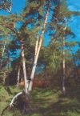 | Разреженный сосновый лес на первой надпойменной террасе р Пахры. Еринский бор, октябрь 2000 г. Фото А.Е. Рылова. |
| 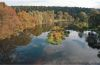 | Вид на Еринский бор от места слияния рек Десны и Пахры, октябрь 2000 г. Фото А.Е. Рылова. |
| 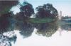 | Вид на церковь в селе Дубровицы у Еринского бора, октябрь 2000 г. Фото Н.Е. Власовой |
| 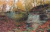 | Выходы карбонатных пород на левом берегу реки Пахры. Еринский бор, октябрь 2000 г. Фото Н.Е. Власовой |
| 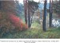 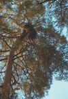 | Гнездо ворона (Corvus corax) на сосне, левобережье р. Пахры, октябрь 2000 г. Фото А.Е. Рылова. |
| 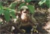 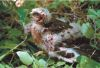 | Птенцы лугового луня (Circus pygargus) - редкого вида, включенного в Красную Книгу Московской области. Крестовское лесничество, июль 1999 г. Фото Д.М. Очагова и А.Е. Рылова |
| 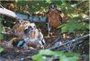 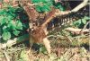 | Птенцы лугового луня (Circus pygargus) - редкого вида, включенного в Красную Книгу Московской области. Крестовское лесничество, июль 1999 г. Фото Д.М. Очагова. |
| Бабочка лимонница (Gonepteryx rhamni) на цветке бодяка разнолистного. Начало июля 1999 г. Фото А.Е. Рылова. | |
| 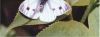 | Брюквенница (Pieris napi). Наиболее многочисленный вид дневных бабочек района. Пойма р. Пахры, 1999 г. Фото В.Б. Бейко. |
| 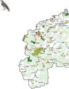 | |
| 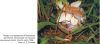 | Фото А. Е. Рылова |
| 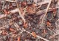 | Рыжие лесные муравьи (Formica rufa) — вид, численность которого в Подмосковье сокращается. Окрестности с. Михайловское, 1999 г. Фото В.Б. Бейко. |
| 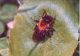 | Пчела андрена панцирная (Andrena thoracica) - опылитель весенних первоцветов. Пойма р. Пахры, 2001 г. Фото В.Б. Бейко |
| 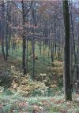 | Участок липняка волосисто-осокового на склонах балки, Дубровицкий лес, октябрь 2000 г. Фото А.Е. Рылова. |
| 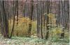 | Дубровицкий лес. Порослевая липовая дубрава. Фото А.Е. Рылова. |
| 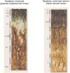 | Профили почв даны по: Г.В. Добровольский и др. (1998). |
| 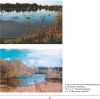 | Пруд в заказнике Поляница, октябрь 2000 г. Фото А.Е. Рылова. |
| 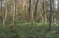 | Ветровально-почвенный комплекс — важный элемент сохранения биоразнообразия лесных экосистем. Крестовское лесничество, квартал 2, октябрь 2000 г. Фото А.Е. Рылова. |
| 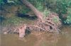 | Один из немногих сохранившихся участков девственной поймы. Русло реки Мочи в ее верховьях. Окрестности 1 квартала Крестовского лесничества. Фото Д.М. Очагова. |
| 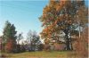 | Вековой дуб на северо-восточном берегу Юрьевского пруда, октябрь 2000 г. Фото А.Е. Рылова. |
| 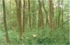 | Черноольховый заболоченный лес — убежище многих охраняемых видов растений и животных района. Семидонное болото, лето 1999 г. Фото В.Н. Короткова. |
| 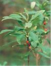 | Пальчатокоренник пятнистый (Dactylorhiza maculata), включенный в Красную книгу Московской области. Окрестности Богоявленского пруда, лето 1999 г. Фото В.Н. Короткова. |
| 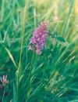 | Хохлатка полая (Corydalis cava) — вид Красной книги Московской области. Подольское лесничество, весна 1999 г. Фото В.Н. Короткова. |
| 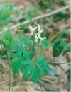 | Волчье лыко (Daphne mezereum) — ядовитый кустарник, редкий в Подольском районе. Михайловское лесничество, лето 1999 г. Фото В.Н. Короткова. |
| 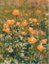 | Купальница европейская (Trolius europaeus) - вид, включенный в Приложение 1 к Красной книги Московской области. Фото А.С. Мазохина. |
Представители древней группы амфибий и рептилий в настоящее время широко распространены в европейских смешанно-широколиственных лесах, во многом определяя облик типичной для них фауны. Поэтому для Южного Подмосковья они являются одними из самых обычных и хорошо знакомых населению животных.
Амфибии, или земноводные (Amphibia) - относительно немногочисленные и наиболее примитивные наземные позвоночные. Их подавляющее большинство, в зависимости от стадии жизненного цикла, обитает попеременно то в водной среде, то на суше. На протяжении своей жизни они претерпевают ряд коренных изменений, затрагивающих как внешний облик животного, так и основные системы внутренних органов. В результате чисто водные личинки из икринок развиваются во взрослые организмы, способные длительное время обитать на достаточном удалении от воды, порой даже на слабо увлажненных участках. Так, например, головастик (личинка лягушек и жаб) в процессе индивидуального развития проходит восемь стадий превращений от хвостатой, сугубо водной формы с наружными жабрами до взрослой особи, которая может переносить вне воды даже высокие летние температуры. Широкое распространение амфибий в европейских смешанно-широколиственных лесах объясняется наличием густой сети водоемов, которая образовалась благодаря благоприятному режиму увлажнения, характеризующемуся коэффициентом увлажнения больше единицы.
Рептилии или пресмыкающиеся (Reptilia) представляют наиболее низкоорганизованных высших позвоночных, которые ведут как наземный, так и водный образ жизни. Однако, в отличие от амфибий, период их индивидуального развития не связан с водными биотопами, и их размножение полностью происходит на суше. Отрыв от водной среды позволил этим организмам широко распространиться не только в пределах умеренного климатического пояса, но и заселить пустынные области Земли. Именно поэтому мировая фауна рептилий характеризуется довольно значительным числом видов (около 600). С другой стороны, ввиду непостоянной температуры тела, и амфибии, и рептилии способны существовать только в определенном температурном диапазоне. Вода в этом случае обеспечивает более выгодные условия обитания холоднокровных животных, чем воздух, поскольку она смягчает резкие колебания внешней среды. Как следствие, фауна рептилий лесной зоны значительно беднее фауны амфибий. Весьма специфическим приспособлением к обитанию в условиях с относительно низкими для рептилий температурами является яйцеживорождение, или ложноживорождение, характерное, например, для обыкновенной гадюки, живородящей ящерицы и ломкой веретеницы. Оплодотворенные яйца остаются в половых путях самки и проходят в них полный цикл развития. Потомство вылупляется из яиц сразу после их откладывания во внешнюю среду. Таким образом, существенно повышается вероятность его выживания даже в условиях прохладного лета.
Исторически население амфибий и рептилий Южного Подмосковья, в отличие от остальных наземных позвоночных, изучено сравнительно плохо, что подтверждается специальными исследованиями В.Ф. Орловой и др. (1989). Тем не менее, на основании существующих в литературе данных можно заключить, что на территории Подольского района в настоящее время обитает 10 видов амфибий, относящихся к двум отрядам - хвостатые (Caudata) (2 вида из 1 семейства) и бесхвостые (Anura) (8 видов из 4 семейств) и 6 видов рептилий из отряда чешуйчатых (Squamata), принадлежащих к двум подотрядам - ящерицы (Sauria) (3 вида) и змеи (Serpentes) (3 вида) (Двигубский, 1892; Тереньтев, 1924; Банников и др., 1971; Бобров, 1989; Орлова и др., 1989; Харитонов, 1989; Бобров и др., 1995; Красная книга Московской области, 1998; Кузьмин, 1999).
Повидовые очерки в разделе по большей части написаны на основе оригинальных литературных источников. Также использованы результаты полевых наблюдений зоологов Г.С. Еремкина, Н.П. Харитонова, В.Б. Бейко и Д.М. Очагова в 1970-2001 гг.
Большинство амфибий Подмосковья (за исключением гребенчатого тритона, зеленой жабы и краснобрюхой жерлянки) довольно легко приспосабливаются к умеренным антропогенным изменениям ландшафта. Одновременно они проявляют высокую чувствительность к загрязнению вод, поскольку их тонкие кожные покровы и своеобразная дыхательная система очень восприимчивы к повышенным концентрациям ядовитых веществ в воде. По О.А. Леонтьевой (1990), в зависимости от степени связи с водной средой фауну амфибий Подмосковья можно разделить на две экологические группы:
1. Исключительно водные виды;
2. Виды, прочно связанные с водной средой только в период размножения. {-85-|}
Такое разделение правомочно и для Подольского района. К первой группе относятся следующие виды:
{Порядок видов в экологических группах приводится в соответствии с изданием Н.Б. Ананьева и др., 1998}
Гребенчатый тритон (Triturus cristatus L.). Этот ловкий пловец иногда достигает 15-18 см в длину. От совместно живущего с ним обыкновенного тритона отличается формой хорошо обособленного от хвоста спинного гребня с высокими зубцами (у самцов) и темной окраской. Заселяет крупные заросшие стоячие либо слабопроточные водоемы, после размножения далеко от воды не уходит. Редкое животное европейской фауны, занесенное в Красную книгу (ВСОП) как зависимый от охраны вид. В Московской области охраняется как сокращающийся в численности уязвимый вид (Красная книга Московской области, 1998). Единичные особи или пары регулярно отмечаются весной в обводненных колеях грунтовых лесных и опушечных дорог, в окрестностях д. Кресты, пос. Шишкин Лес, станции Мачихино, пл. Силикатная, с. Вороново, д. Бабенки. Заметное сокращение численности и области распространения гребенчатого тритона в последние годы связано главным образом с глубоким преобразованием их местобитаний человеком, в частности, с активным загрязнением вод, а также с хищнической деятельностью вселенца ротана-головешки, поедающего в некоторых прудах личинок тритонов.
Обыкновенный тритон (Triturus vulgaris L. ). Самый мелкий тритон нашей фауны. От других видов тритонов хорошо отличим по продольным темным полоскам по бокам головы, а от гребенчатого тритона - формой спинного гребня без высоких зубцов, не отделенного от хвоста выемкой. В начале века был широко распространен в Южном Подмосковье и, в частности, в Подольском уезде (Орлова и др., 1989). По мнению П.В. Терентьева (1924), более обычен для Московского края, нежели гребенчатый тритон. Отмечается регулярно в тех же биотопах, что и предыдущий вид, но в значительно большем количестве.
Краснобрюхая жерлянка (Bombina bombina L..). Мелкая лягушка с красными либо оранжевыми пятнами на брюшке. Предпочитает разнообразные по происхождению (в том числе и антропогенные), хорошо прогреваемые неглубокие водоемы. Встречается также на опушках, полянах и вырубках. Занесена в Красную книгу ВСОП в категорию "зависимый от охраны вид" и в Красную книгу Московской области как сокращающееся в численности уязвимое животное. Отлавливалась в Подольском уезде в 1916 г. для коллекции Зоологического музея МГУ (Орлова и др., 1989). В 70-е г. XX в. найдена в окрестностях с. Михайловское. Отмечалась на исследуемой территории и в последние годы (Красная книга Московской области, 1998).
Обыкновенная чесночница (Pelobates fuscus Laur.). Некрупная лягушка с выпуклым лбом и желтоватым внутренним пяточным бугром. Вдоль спинки проходит белая полоса. Заселяет самые разнообразные биотопы от речных пойм до сосновых лесов. Отмечается для Подмосковья как вполне обычный вид (Леонтьева, 1995). В начале века отмечалась и для Подольского уезда (Терентьев, 1924). Найдена в окрестностях ст. Мачихино (25. 05. 1996 г.) и вблизи р. Пахры недалеко от пл. Силикатная. Вполне может быть встречена на территории района и в других местах.
Озерная лягушка (Rana ridibunda Pall. ). Самая крупная лягушка нашей фауны с длиной тела до 15 см. Вместе с прудовой лягушкой относится к группе зеленых, или водных лягушек, характеризующихся отсутствием височного пятна. От прудовой лягушки отличить довольно сложно - только по специфическому образованию - пяточному бугру, который у озерной лягушки низкий и короткий, почти вдвое короче первого пальца. Кроме того, самцы озерной лягушки имеют серые резонаторы, а прудовой - белые. Экологически очень пластичный вид, обладает огромным ареалом. Обитает в самых разнообразных ландшафтах, заселяя водоемы различных размеров и происхождения. Встречается и на территории населенных пунктов. Массовый вид, в районе распространен повсеместно. Нами озерная лягушка зафиксирована в поймах рр. Десна, Пахра и Моча весной 1996 и 1998, летом и осенью 2000 гг.
Прудовая лягушка (R. lessonae Camer.). Наиболее мелкий представитель группы зеленых лягушек в России, длиной до 9 см. Пяточный бугор высокий, полукруглый, в длину составляет более половины первого пальца. Тесно связана с лесом, обитает в залесенных спокойных больших и малых водоемах различного происхождения. Ведет дневной образ жизни, любит погреться на солнце. Обычный вид в районе. Отмечена в прудах у с. Былово, дд. Поляны, Малыгино (1984-2000), с. Михайловское (1983, 1985), с. Вороново (1970-е), в начале мая 2001 г. найдена в мелких водоемах в окрестностях д. Сипягино (заказник Поляница).
Ко второй экологической группе относятся:
Серая жаба (Bufo bufo L.). Средних размеров очень неуклюжая амфибия. Хорошо отличима от зеленой жабы по отсутствию продольных кожных складок на нижней поверхности ступней, по наличию на внутренней стороне пальцев двойных бугорков в местах их сгибов и по окраске. Заселяет как лесные биотопы, так и открытые и полуоткрытые ландшафты. Обитает на территории Подольского района. Весной 1986,1990, в 1996 и {-86-|} 1997 гг. отдельные особи отмечались на территории Малинского лесничества. Также встречена летом 2000 г. на территории Калининского лесничества. Нерестилища серой жабы в апреле 2001 г. зафиксированы в Львовском лесничестве на границе с Чеховским районом (общие с травяной и остромордой лягушками), в пруду напротив пионерлагеря Подольского цементного завода (отмечены здесь и весной 2000 г.), в искусственных водоемах около д. Коротыгино, на р. Жилетовка и в 5 км севернее д. Лисинцево. Много жаб гибнет на автодорогах, особенно в весенний период, о чем свидетельствуют многочисленные находки погибших животных в апреле 2001 г. В связи с этим при проектировании крупных автодорог целесообразно предусматривать специальные подземные переходы-коллекторы.
Зеленая жаба (B. viridis Laur.). Относительно крупная жаба с длиной тела до 12 см. Типичный южный (степной) вид, поэтому очень хорошо переносит засуху. Интенсивное расширение ареала на север в последние десятилетия связан с искусственным увеличением открытых ландшафтов. В Подмосковье также встречается преимущественно в открытых биотопах. Редкое животное Московской области, охраняется как сокращающийся в численности вид (Красная книга Московской области, 1998). Отмечена для Южного Подмосковья (Орлова и др., 1989) и для Москвы (устное сообщение О.А. Леонтьевой). Может быть встречена и в Подольском районе.
Травяная лягушка (Rana temporaria L.). Наряду с остромордой лягушкой, входит в группу бурых, или наземных лягушек, хорошо отличимых по темному височному пятну. Длина тела - около 7-10 см. Типичный представитель лесной фауны, но встречается не только в лесных массивах, но и на открытых пространствах. От остромордой лягушки отличается пятнистым ("мраморным") брюшком и формой мордочки. Многочисленный вид в районе. Нерестилища травяной лягушки отмечены в Юрьевском пруду и в небольшом искусственном водоеме к юго-западу от платформы "Весенняя" весной 2000 г. Регулярно встречается как во время нереста, так и в летнее время в окрестностях участка железной дороги от ст. Мачихино до д. Кресты в 1991-1995, 1997-2001 гг. Летом 2000 г. представители этого вида зафиксированы в Подольском, Ленинском, Калининском, Вороновском и Крестовском лесничествах, в апреле 2001 г. - в Львовском (на нересте), Лукошкинском и Малинском лесничествах, а также в окрестностях д. Сипягино в долине р. Поляницы.
Остромордая лягушка (R. arvalis Nils.). Лягушка средних размеров (около 6-8 см) с характерной заостренной мордочкой и крупным пяточным бугром, составляющим более половины длины первого пальца. Типичный представитель лесной зоны, где встречается повсеместно как на влажных, так и на сухих участках. Массовый вид в районе. Нерестилища остромордой лягушки зафиксированы весной 2000 г. в Юрьевском пруду, пойменных водоемах верхнего течения р. Мочи и в небольших запрудах в районе бывшей деревни Шубино. Регулярно встречается как во время нереста, так и летнее время в окрестностях участка железной дороги от ст. Мачихино до д. Кресты в 1991-1995, 1997-2001 гг. Отмечена летом 2000 г. в Калининском и Крестовском лесничествах, в апреле 2001 г. - в Львовском лесничестве (на нересте).
В отличие от амфибий, рептилии очень плохо приспосабливаются к антропогенным изменениям природной среды. Исключение составляет лишь прыткая ящерица.
Веретеница ломкая (Anguis fragilis L). Крупная безногая ящерица длиной тела до 25 см и чуть более коротким, очень ломким хвостом, серебристо-белой либо бледно-кремовой окраски. От змей легко отличима по наличию век на глазах, ломкому хвосту, типичной "ящеричной" голове с характерной суженой передней частью мордочки. Может дожить до 50 лет. Предпочитает влажные широколиственные и смешанные леса, особенно дубравы, где обитает в лесной подстилке. Охраняется как редкий вид области, спорадически распространенный по всей территории (Красная книга Московской области, 1998). Страдает от кабанов и енотовидных собак (Перешкольник, Леонтьева, 1989). Часто уничтожается населением, принимающим этого потребителя вредных беспозвоночных (например, слизней) за ядовитую змею. Обитание вида на территории района возможно, но случаи встреч нам не известны.
Прыткая ящерица (Lacerta agilis L.). Ящерица преимущественно зеленой окраски с темными полосами либо пятнами в белой окантовке на спинке. От живородящей ящерицы отличима более крупными размерами, окраской и некоторыми деталями строения черепа. В лесной зоне заселяет сухие, хорошо прогреваемые склоны и поляны. Встречается в антропогенных ландшафтах. Сокращающийся в числе, уязвимый вид Московской области (Красная книга Московской области, 1998). Широко распространена в соседних районах (например, в Ступинском, недалеко от п. Михнево), где обитает прямо на дачных участках. Может быть встречена в соответствующих биотопах района.
Живородящая ящерица (L. vivipara L.). Окраска преимущественно коричневато-бурых тонов с характерным рисунком из темной, иногда разбитой на отдельные пятна полосы вдоль хребта, двух свет{-87-|}лых продольных полосок по сторонам спины и темных, сравнительно широких полос по бокам. Населяет лиственные и хвойные леса, предпочитает облесенные болота, торфяники, вырубки, нередко выходит и на хорошо прогреваемые склоны. Обитает в Подольском районе. Регулярно встречалась в летнее время в окрестностях участка железной дороги от ст. Мачихино до д. Кресты в 1991-1995, 1997-2000 гг., а также на вырубках вдоль трассы газопровода, на хорошо прогреваемых склонах поймы р. Жилетовки (19831991), в окрестностях д. Поляны в Малинском лесничестве (1983-2000 гг.) и на старой зарастающей вырубке в окрестностях с. Михайловское (1976-1987 гг.). Летом 2000 г. и в апреле 2001 г. живородящая ящерица зафиксирована на зарастающих вырубках в Михайловском и Калининском лесничествах. В довольно большом количестве отмечена на опушке к северо-западу от с. Сальково в апреле 2001 г.
Обыкновенная медянка (Coronela austriaca Lour.). Красиво окрашенная, средних размеров змея. Абсолютно не опасна для человека, хотя и очень агрессивна в случае попыток поимки. Окраска верхней части тела разнообразна и изменяется от медно-красной до серой. Характерная поведенческая особенность - способность сворачиваться в тугой комок, пряча голову внутри него. Предпочитает прогреваемые солнцем опушки, поляны, густые заросли подлеска в широколиственных и смешанных лесах. Редкий вид Московской области, охраняемый как находящееся под угрозой исчезновения и возможно исчезнувшее животное (Красная книга Московской области, 1998). Для Подольского уезда указана И.А. Двигубским (1892). Отмечалась в районе в 1980-е годы (Войтехов и др., 1989; Дунаев, Харитонов, 1989).
Обыкновенный уж (Natrix natrix L.). От обыкновенной гадюки хорошо отличим по парным желтым (оранжевым) пятнам по бокам головы. Довольно тесно связан с водой, предпочитает пойменные и другие околоводные биотопы, где охотится преимущественно на лягушек. Любит греться на сухих солнечных участках. Часто выходит на дороги, где гибнет под колесами автомашин, иногда в значительном количестве. Как сокращающийся в численности уязвимый вид занесен в Красную книгу Московской области. При этом местами он вполне обычен. В Подольском уезде отлавливался у с. Валуева в 1907 г. (коллекция Зоологического музея МГУ) (Бобров, 1989). Отмечался в районе в 1980-е гг. (Бондаренко и др., 1989). Неоднократно наблюдался близ р. Пахры, на опушках березовых и смешанных лесов, недалеко от пл. Силикатная, а также на вырубке вдоль трассы газопровода в окрестностях Малинской биостанции (1990-е). Летом 2000 г. встречен нами в верховьях р. Мочи, в Крестовском лесничестве и в заказнике "Поляница" около Сипягинского пруда.
Обыкновенная гадюка (Vipera berrus L.). Змея с крупной головой, четко отграниченной от туловища шейным перехватом. Морда закругленная. На голове - Х-образный рисунок. В Московской области в последние годы преобладают особи черной окраски (меланисты), хотя встречаются и серо-окрашенные гадюки. Типичный обитатель лесной зоны. Как и обыкновенный уж, предпочитает увлажненные участки - болота, берега водоемов и т.п. Охраняется в области как сокращающийся в численности уязвимый вид (Красная книга Московской области, 1998). Изредка отмечается в Южном Подмосковье. Страдает от несправедливо негативного отношения местного населения. Близ р. Пахры недалеко от пл. Силикатная весной 1997-98 гг. отмечены единичные особи.
В завершение обзора фауны земноводных и пресмыкающихся упомянем еще одного представителя отряда Reptilia - болотную черепаху (Emys orbicularis L., 1758) - которая однажды была найдена на территории Подольского района. Эта некрупная рептилия с темно-оливковым либо буро-коричневым панцирем с желтыми пятнышками населяет разнообразные стоячие пресноводные водоемы в лесной, лесостепной и степной зонах. Отлично плавает и ныряет, на суше дальше, чем на 500 м от воды не уходит. Болотные черепахи часами могут неподвижно лежать на полузатопленных бревнах и корягах, греясь на солнце, поскольку, как и у всех амфибий и рептилий, температура их тела полностью зависит от условий внешней среды. На зиму впадает в спячку, собираясь небольшими группами и зарываясь в грунт. Северную границу области ее распространения в значительной степени ограничивают зимние температуры, которые определяют глубину промерзания водоемов. Она проходит приблизительно по 52°-53° с.ш., таким образом, для фауны Московской области вид не характерен. Тем не менее, известны факты относительно длительного обитания и размножения завозных болотных черепах в Ленинградской области (Ананьева и др., 1998) и в г. Москве. В Подольском районе одна болотная черепаха была найдена в 1901 г. у Старо-Калужского шоссе между селами Десна и Красная Пахра (Кожевников, 1902, со слов И.А. Мосолова). Она также имела явно завозное происхождение. Хотя данные о более поздних обнаружениях вида в районе отсутствуют, этот факт представляет несомненный интерес, поскольку вкупе с другими находками подтверждает возможность успешного вселения вида в Подмосковье.
В целом, для Южного Подмосковья (и, в частности, для Подольского района) в последние годы характерна четкая тенденция стремительного сокращения населения амфибий и особенно рептилий. Основные причины этого негативного явле{-88-|}ния - мощная антропогенная нагрузка на их местообитания (в т.ч. и интенсивное дачно-коттеджное строительство); неумеренное, в недалеком прошлом, использование ядохимикатов и, как следствие, загрязнение вод; хищничество видов-вселенцев, серых ворон, домашних и одичавших собак и кошек; неконтролируемый отлов для продажи и другое. Часто эти животные незаслуженно страдают от действий местных жителей, хотя они и являются исключительно полезными потребителями вредных беспозвоночных (особенно кровососущих) (амфибии) и мышевидных грызунов - активных вредителей сельского хозяйства и переносчиков опасных природных инфекций (рептилии). Природоохранная политика района должна предусматривать сохранение этих важнейших для лесных и антропогенных экосистем животных.
Фонд рыбохозяйственных водоемов Подольского района составляет 23 реки общей протяженностью 328 км и не менее 38 прудов общей площадью 392 га. Основным водоемом является река Пахра, протяженность которой в границах района 52 км (вся длина 135 км). Ее главные притоки - р. Моча, длиной 58 км (практически вся находится в пределах района) и р. Десна, длиной 88 км (в пределах района 20 км). Меньший интерес с рыбохозяйственной точки зрения представляют среднее течение р. Рожаи, притоки р. Нары, верховья р. Лопасни.
Характерным фактором, определяющим состав и распространение ихтиофауны в Подольском районе, является большая сеть прудов, искусственно созданных в основном на небольших речках. Ихтиофауна этих прудов и в качественном, и в количественном отношении богаче исходной речной. Так, если ихтиофауна небольших речек обычно представлена гольяном, пескарем, плотвой, окунем, уклеей, гольцом, щиповкой, то с постройкой прудов появляются карп, щука, густера, золотой и серебряный караси, линь, ротан-головешка и другие виды. А если на этих прудах создаются культурные рыбные хозяйства (КРХ), то могут осуществляться запуски растительноядных рыб, радужной форели, осетровых (например, КРХ "Коротыгино").
В водоемах района зарегистрировано не менее 31 вида рыб, систематический список которых приводится в табл. 4. Для сравнения, количество видов рыб по Московской области в целом приближается к 50 (Теплинский, 1988), а в Москва-реке встречается около 35-40 видов (Соколов и др., 1994; Цепкин, Соколов, 1996; Шатуновский и др., 1996). Для более объективной оценки ихтиофауны района из ее состава целесообразно исключить акклиматизированные и не воспроизводящиеся естественным путем в местных водоемах виды (сибирский осетр, веслонос, радужная форель, белый амур, белый толстолобик). Таким образом, реальнее говорить о 26 видах рыб, постоянно обитающих на территории района. Мы также не включили в табл. 4 подуста и быстрянку. Хотя эти виды обитают (или обитали) в водоемах соседних районов, нам не удалось обнаружить никаких сведений об их встречах в реках Подольского района. По данным Мосрыбвода, по крайней мере, последние 30 лет в контрольных уловах на водоемах района эти виды не регистрируются. Не отмечены они в рассматриваемых водоемах и на карте распространения рыб, представленной в статье Н.И. Мочарского (1887).
Ихтиофауна р. Пахры в пределах района насчитывает около 20 видов рыб (Приложение 4). Сравнение современного состава ихтиофауны р. Пахры с ее ихтиофауной в конце XIX века (Мочарский, 1887) не выявляет каких-либо принципиальных различий, за исключением появления ряда новых видов, интродуцированных в последние десятилетия XX века. Ихтиофауна р. Десны (левый приток р. Пахры) и р. Мочи (правый приток р. Пахры) в нижнем течении аналогична ихтиофауне р. Пахры, но в их верхнем течении отсутствуют лещ, жерех, голавль, подкаменщик. Наиболее массовыми видами в Пахре, Десне и Моче являются плотва и окунь. Эти виды на незарегулированных участках рек составляют по весу от 70 до 90% уловов. На зарегулированных участках к ним добавляются карась и густера. По численности с плотвой и окунем сопоставима уклея, но по биомассе она уступает им. Основные нерестилища карповых и окуневых расположены: на р. Пахре - в районах пос. Дубровицы, пос. Поливаново и дер. Лужки; на р. Десне - от плотины в пос. Фабрики 1-го Мая до д. Андреевское; на р. Моче - в районе д. Кутьино.
Эпизоотическая ситуация в водоемах района изучена слабо, поскольку комплексные ихтиопатологические исследования не проводились. Однако, в 1993 г. в связи с заболеванием плотвы постодиплостоматозом в пруду дер. Ильино, рыба из этого водоема направлялась в ветеринарную лабораторию НПР, где первоначальный диагноз подтвердился. Есть сведения, что данное заболевание в последнее время появляется и в других водоемах района, в частности в прудах бассейна р. Нара.
Рассмотрим подробнее наиболее многочисленные и важные с точки зрения любительского рыболовства виды. Общие сведения по биологии этих видов приводятся в основном из М.И. Шатуновского и др. (1988).
{-89-|}
| Отряды, семейства, виды | Современное состояние местной популяции | Примечание | |
| Русское название | Латинское название | ||
| Отр. Осетробразные | Acipenseriformes | ||
| Сем. Осетровые | Acipenseridae | ||
| Сибирский осетр | Acipenser baerii | Запускался в некоторые пруды (КРХ), естественного воспроизводства нет | А |
| Сем. Веслоносовые | Polyodontidae | ||
| Веслонос | Polyodon spathula | Запускался в некоторые пруды (КРХ), естественного воспроизводства нет | А |
| Отр. Лососеобразные | Salmoniformes | ||
| Сем. Лососевые | Salmonidae | ||
| Радужная форель | Parasalmo mykiss gairdneri (Salmo gairdneri, Salmo irideus) | Запускалась в некоторые пруды (КРХ), естественного воспроизводства нет | А |
| Сем. Щуковые | Esocidae | ||
| Щука обыкновенная | Esox lucius | Относительно удовлетворительное | М |
| Отр. Карпообразные | Cypriniformes | ||
| Сем. Карповые | Cyprinidae | ||
| Плотва | Rutilus rutilus | Массовый вид | М |
| Уклея | Alburnus alburnus | Массовый вид | М |
| Лещ | Abramis brama | Удовлетворительное | М |
| Густера | Blicca bjoerkna | Удовлетворительное | М |
| Язь | Leuciscus idus | Относительно удовлетворительное | М |
| Голавль | Leuciscus cephalus | Численность неуклонно сокращается | М |
| Елец | Leuciscus leuciscus | Возможно, к настоящему времени исчез | М |
| Жерех | Aspius aspius | Редкий вид | М |
| Верховка | Leuciscus delineatus | Массовый вид | М |
| Пескарь | Gobio gobio | Численность резко сократилась | М |
| Линь | Tinca tinca | Редкий вид | М |
| Золотой карась | Carassius carassius | Многочисленный вид | М |
| Серебряный карась | Carassius auratus gibelio | Многочисленный вид | М |
| Карп (сазан) | Cyprinus carpio | Относительно удовлетворительное, периодически запускается в пруды | А |
| Горчак | Rhodeus sericeus | Относительно удовлетворительное | М |
| Гольян обыкновенный | Phoxinus phoxinus | Численность сокращается | М |
| Белый амур | Ctenophuryngodon idella | Периодически запускается в некоторые пруды (КХР), естественного воспроизводства нет | А |
| Белый толстолобик | Hypophthalmichthys molitrix | - " - | А |
| Сем. Вьюновые | Cobitide | ||
| Вьюн | Misgurnus fossilus | Численность существенно сократилась | М |
| Щиповка обыкновенная | Cobitis taenia | Неясно | М |
| Усатый голец | Barbatula barbatula | Относительно удовлетворительное | М |
| Отр. Окунеобразные | Perciformes | ||
| Сем. Окуневые | Percidae | ||
| Окунь | Perca fluviatilis | Массовый вид | М |
| Ерш обыкновенный | Gymnocephalus (Acerina) cernuus | Численность существенно сократилась | М |
| Судак | Stizostedion lucioperca | Практически исчез из водоемов (за искл. КРХ) | М |
| Сем. Элеотрисовые | Eleotrididae | ||
| Ротан-головешка | Perccottus glenii | Многочисленный вид | A |
| Отр. Скорпенообразные | Scorpaeniformes | ||
| Сем. Керчаковые | Cottidae | ||
| Подкаменщик обыкновенный | Cottus gobio | Редкий вид, занесен в Красные книги РФ и Московской обл. Вылов полностью запрещен | М |
| Отр. Трескообразные | Gadiformes | ||
| Сем. Тресковые | Gadidae | ||
| Налим | Lota lota | Редкий вид | М |
Примечание:
А - акклиматизированный вид;
М - местный (аборигенный) вид;
КРХ - культурные рыбные хозяйства
{-90-|}
(Таблица составлена по результатам анализа рыб из сетных контрольных отловов за период с 1990 по 1999 гг.)
| Возрастная группа (лет) | Средние размеры: длина (см)* / масса (г) | |||||
| Лещ | Плотва | Окунь | Язь | Карась** | Щука | |
| 2 | 18 / 200 | 13 / 35 | 13 / 30 | 15 / 100 | - | 32 / 400 |
| 3 | 20 / 250 | - | 17 / 80 | 26 / 300 | 15 / 80 | 36 / 600 |
| 4 | 25 / 400 | 15 / 50 | 20 / 100 | 30 / 400 | 16 / 100 | 45 / 950 |
| 5 | - | 17 / 100 | 21 / 150 | - | 19 / 150 | 49 / 1100 |
| 6 | 31 / 600 | 20 / 150 | 23 / 200 | 33 / 700 | 22 / 250 | 52 / 1400 |
| 7 | 34 / 800 | 22 / 200 | 25 / 250 | - | 25 / 350 | - |
| 8 | 37 / 1200 | 25 / 300 | 27 / 350 | 37 / 900 | - | - |
| 9 | - | 27 / 400 | 29 / 400 | 39 / 1300 | 29 / 500 | 66 / 2300 |
| 10 | - | - | - | - | 31 / 700 | - |
* приводится длина рыб от конца рыла до конца средних лучей хвостового плавника (по Смитту)
** сборная группа, включающая два вида (золотой и серебряный караси)
Лещ. По соотношению численности, размеров и биомассы считается одним из наиболее ценных видов. В водоемах района достигает веса 1,2 кг (табл. 5) и, возможно, более. Встречается в р. Пахре, в нижних частях рр. Десны и Мочи, а также в некоторых других местах (Приложение 4). Предпочитает глубоководные участки водоемов: предплотинные зоны, зимовальные ямы в русле. Так взрослый лещ в р. Пахре отмечен, главным образом, в верхнем бьефе плотины в г. Подольске и в яме ниже пос. Дубровицы. Ниже г. Подольска, на участке Пахры от плотины до устья р. Рожаи, половозрелые особи леща практически не встречаются, молодь же по реке отмечена повсеместно. Между плотинами совершает нерестовые и кормовые миграции. В р. Десне обитает на верхнем бьефе плотин пос. Фабрики 1-го Мая и г. Троицка, в р. Моче - только в предустьевой зоне.
Типичный бентофаг, т.е. питается донными организмами. Излюбленной пищей являются личинки комаров и других насекомых, черви, мелкие моллюски. Молодь на первом году жизни питается зоопланктоном. Половозрелым обычно становится в 4-8-летним возрасте при длине около 25 см. Самцы, как правило, созревают на 1-2 года раньше самок и при меньших размерах. Нерест в водоемах района проходит во второй декаде мая. Икра выметывается на растительность. Плодовитость до 400 тысяч икринок.
Ловят леща на поплавочные и донные удочки, наживляемые различной насадкой: дождевым червем, мотылем, опарышем, кашей и другое. Хороший эффект дает предварительная прикормка в определенном месте.
Плотва. Наиболее массовый вид в водоемах Подольского района. Встречается повсеместно (Приложение 4). В реках Пахре и Десне растет быстрее, чем в других водоемах. Размеры разных возрастных групп из р. Пахры приведены в табл. 5. Во многих прудах представлена мелкой формой (особи в возрасте 7-9 лет не превышают длины 20 см и веса 150 г). Нерестится практически везде, где есть затопленный кустарник или жесткая водная растительность. Нерест обычно проходит с конца апреля до середины мая при температуре воды не ниже 8 градусов. Плодовитость колеблется от 2,5 до 100 тыс. икринок. Пища очень разнообразна и включает как животные, так и растительные объекты. Популярный объект любительского рыболовства как в летний период, так и зимой. Ловят удочками на самую разнообразную приманку: мотыля, дождевого червя, тину, хлеб, распаренные зерна овса и пшеницы.
Уклея. Один из самых многочисленных видов. Встречается в рр. Пахре, Моче, Десне и некоторых их притоках (Приложение 4). В водоемах района представлена мелкой формой, особи длиной более 10 см и весом более 20 г практически не встречаются; обычно длина 6-8 см и вес 10-15 г. Стайная, короткоцикловая рыба. Уже на третьем году жизни при длине 7-8 см становится половозрелой. Нерест начинается в конце мая при температуре воды 15-16 градусов и продолжается весь июнь. Икра откладывается самкой несколькими порциями (от 3 до 6) на растительность. Плодовитость до 10 тыс. икринок. Важным компонентом питания являются падающие в воду насекомые. В период цветения деревьев и кустарников охотно поедает пыльцу, сносимую ветром в воду. Среди начинающих рыболовов является популярным объектом лова на удочку. Насадкой служат мухи, кузнечики, слепни, шарики хлеба, распаренные зерна пшеницы. Чешуя уклеи раньше использовалась для приготовления искусственного жемчуга. {-91-|}
Окунь. Массовый вид, но по численности уступает плотве. Встречается повсеместно (Приложение 4). Размерные характеристики разных возрастных групп приводятся в табл. 5. В водоемах района нерестится во второй половине апреля, когда температура воды поднимается выше 7 градусов. Икру в виде лент откладывают на прошлогоднюю растительность, коряги, подмытые корни, затопленные ветви кустарников. В зависимости от размера самок плодовитость колеблется в очень широких пределах - от 10 до 900 тыс. икринок. Чем больших размеров достигают особи, тем большую роль в их питании играет рыба. В больших водоемах может образовывать крупную и мелкую формы, причем разделение на них возможно даже в потомстве одной самки. Особи крупной формы рано переходят к хищному образу жизни, быстро растут, обитают в глубоких местах, созревают в 4-5-летнем возрасте. Особи мелкой формы растут медленно, питаются в основном беспозвоночными и предпочитают держаться в прибрежной зарослевой зоне водоемов; самцы созревают на 2-3-ем, а самки на 4-ом годах жизни. Является популярным объектом любительского рыболовства.
Щука. Ценный и относительно многочисленный вид, населяющий практически все водоемы района (Приложение 4). Размерные характеристики возрастных групп приведены в табл. 5. Типичный хищник. Особенно много ее в небольших прудах, изобилующих мелкой плотвой и карасем. На нерест заходит в ручьи, залитые балки и низкие заболоченные места. Основные нерестилища находятся в районе слияния рек Пахры и Мочи, а также в верховьях последней и ее притоков. Икру откладывает на затопленную весенним паводком прошлогоднюю растительность. Среди весенне-икромечущих рыб нерестится первой. В водоемах района нерест происходит с 5-7 по 15 апреля. К моменту выклева личинок других видов рыб молодь щуки успевает достичь длины 2-3 см и переходит на хищное питание. В этом заключается биологическая целесообразность ее раннего нереста. Половозрелость наступает при достижении длины 35-40 см и возраста 3-5 лет. Плодовитость колеблется в довольно широких пределах от 17 до 25 тыс. икринок. Является одним из наиболее популярных объектов любительского рыболовства. Ловят на спининг, кружки, жерлицы.
Язь. Один из наиболее ценных видов, населяющих водоемы района. По численности уступает массовым видам, но размеры (вес может доходить до 6-8 кг) и вкусовые качества делают его одним из самых популярных объектов лова. Взрослые особи обычно приурочены к глубоководной части рек (Пахра, Десна), молодь же встречается на всем их протяжении. Размерные характеристики возрастных групп приведены в табл. 5. Нерестится обычно во второй декаде апреля при температуре воды 5-7 градусов, что фенологически совпадает с набуханием березовых почек. Половозрелость наступает в 4-5-летнем возрасте. Живет до 15-20 лет. Пища разнообразна: летом основное значение имеет растительность, осенью почти полностью переходит на питание донными животными (личинки насекомых, мелкие моллюски и другое); может потреблять и молодь рыб. Очень осторожен и пуглив, и поймать его на удочку бывает непросто. Может образовывать форму золотистого цвета - орфу, которая используется в декоративном рыбоводстве.
Густера. Встречается в Пахре, Десне, Моче, предпочитая зарегулированные участки рек. Нерест обычно происходит с 20 мая по 10 июня при температуре воды от 16 градусов и выше. Внешне очень похожа на молодых особей леща, но в спинном плавнике, помимо 3 неветвистых, имеет 8, а не 9 (как у леща) ветвистых лучей. По размерам значительно меньше леща, и обычно вес не превышает 500 г, а длина 25 см. Продолжительность жизни около 15 лет. Питается мелкими донными беспозвоночными: личинками комаров, червями, моллюсками. Половозрелость наступает в возрасте 2-4 лет. Может образовывать гибриды с плотвой и лещом.
Золотой и серебряный караси. В водоемах района, как и в Московской области, обитает два вида карасей: золотой или обыкновенный и серебряный. По внешним признакам и образу жизни эти виды очень сходны. Оба очень выносливы: могут жить в водоемах с низким содержанием кислорода в воде, могут выдерживать промерзание водоемов, закапываясь в ил, могут 2-3 суток оставаться живыми вне воды во влажном мху. Оба вида созревают обычно в возрасте 3-4 лет, нерестятся при сходных температурах воды (16-18 градусов), нерест у них растянутый и порционный. У обеих имеется карликовая форма. Оба вида часто живут в одних и тех же водоемах. Характерным отличительным признаком этих видов является цвет пленки, выстилающей брюшную полость. Если вскрыть рыбу, то у серебряного карася эта пленка черного цвета, а у золотого - светлого. На практике большинство людей обычно эти виды не различают и поэтому пользуются сборным названием "карась". Поскольку это относится и к собранным опросным данным, нам в ряде случаев также приходится оперировать этим названием. Карась на зарегулированных участках рек встречается повсеместно и является массовым видом. В отдельных водоемах он единственный представитель ихтиофауны (или совместно с ротаном). Как правило, это относится к заморным мелководным слабопроточным прудам, расположенным на ручьях и небольших реч{-92-|}ках. Размерные характеристики возрастных групп карася приведены в табл. 5.
Ловят на удочку, в качестве насадки чаще всего используют дождевых червей или хлеб, сдобренный пахучими веществами (подсолнечное или анисовое масло, мед и т.д.). Клюет на утренней или вечерней заре на небольшой глубине вблизи берега или в окнах растительности. У серебряного карася часть популяций состоит только из одних самок (соответственно и их потомство представлено только самками), в то же время встречаются популяции, где представлены оба пола. Известная всем золотая рыбка и ее породы были выведены из серебряного карася (правда, из другого подвида - Carassius auratus auratus) более 1000 лет назад в Китае.
Налим. Единственный пресноводный представитель семейства тресковых. Встречается в реках и речках, преимущественно на тех участках, где имеются ключи. Держится у дна, обычно забираясь под коряги или в какие-нибудь полости под обрывистыми берегами. Теплую воду не любит и ведет активный образ жизни лишь при температуре не выше 12 градусов. Летом, когда вода становится теплее, впадает в состояние оцепенения и перестает питаться. В отличие от всех подмосковных рыб размножается не в весенне-летний период, а в середине зимы подо льдом. Нерест растянут во времени и может продолжаться с декабря до начала февраля. В разных частях ареала максимальные размеры налима сильно колеблются. В водоемах Сибири может достигать массы 25 кг и длины 1 м. В Подмосковье особи обычно не превышают массы 1 кг. В реках Подольского района (Моче, Десне, Пахре) обитает мелкий налим. Половозрелыми особи становятся уже при массе 200-300 г. В настоящее время налим в водоемах района - редкая рыба. Обычно обнаружить его удается при заморах уже в мертвом виде.
Взрослый налим - типичный прожорливый хищник, поедающий разнообразных мелких рыб, личинок поденок, ручейников, дождевых червей и даже раков. Чешуя у него очень мелкая и покрыта мощным слоем слизи, что создает впечатление голого тела. Очень вкусной и ценной является налимья печень, содержащая, как и у других тресковых, большое количество жира и витаминов. Ловят налима на донные удочки ранней весной или осенью, когда температура воды невысокая, и он активно питается.
Ихтиологические наблюдения на водоемах Подольского района проводятся Серпуховской межрайонной инспекцией рыбоохраны Мосрыбвода с начала 1970-х годов. Основой исследований является проведение контрольных отловов и биологический анализ собранного материала, а также наблюдения на нерестилищах в период нереста рыб. Кроме этого периодически осуществляется осмотр и учет уловов рыболовов-любителей, опрос местных жителей и анализ рыбы, конфискованной у браконьеров. Важным информационным каналом являются случаи гибели рыбы при залповых сбросах неочищенных сточных вод.
Вылов рыбы населением регламентируется "Правилами любительского и спортивного рыболовства в рыбохозяйственных водоемах г. Москвы и Московской области". М., 1984, 16 с.
В настоящем разделе освещены далеко не все систематические группы этого очень многообразного класса животных. Описаны лишь представители отрядов Чешуекрылых (Lepido-ptera) и Перепончатокрылых (Hymenoptera), которые к настоящему моменту достаточно хорошо изучены на территории Подольского района.
Московская область относится к числу немногих территорий России, для которых можно говорить о достаточно полной изученности фауны чешуекрылых. Широко известны работы по фауне насекомых этой группы, в которых представлен их видовой состав в целом (Dwigubsky, 1892; Свиридов, 1982; Сироткин, 1986). В последние годы появились работы, в которых рассматривается фауна и отдельных территорий области - Приокско-Террасного заповедника с ближайшими окрестностями (Чешуекрылые..., 1994), а также Одинцовского района (Могучев, 1999).
Специальных работ по фауне чешуекрылых Подольского района опубликовано до настоящего времени не было, хотя в вышеуказанные обобщающие сводки, несомненно, вошли и данные сборов с районной территории (в частности в работе А.В. Свиридова приводятся находки с территории нынешнего г. Подольска и из его ближайших окрестностей). В Красной книге Московской области также имеются данные о нахождении ряда редких и угрожаемых видов на территории района.
В данном разделе представлены сведения в основном по дневным, или булавоусым бабочкам (Rhopalocera). Из бабочек обширной и многообразной группы Macroheterocera, которых часто называют, хоть это и не всегда верно, ночными, представлены только отдельные виды, преимущественно редкие, крупные и хорошо заметные. {-93-|}
Наблюдения за фауной чешуекрылых района проводились А.С. Мазохиным начиная с 1976 г., преимущественно в его западной части (окрестности пос. Красная Пахра, Шишкин Лес, Плесково, дд. Поляны, Шарапово, Сипягино) и Г.С. Еремкиным с 1993 г. Учтены также результаты сборов в окрестностях биогеоценологического стационара "Малинки" (Л.Б. Волкова, Н.А. Соболев, В.Б. Бейко, Н.А. Кузнецова, О.Б. Русанов), а также в окрестностях пос. Красная Пахра (В.В. Стародубцев), сделанных в разные годы.
Сем. Толстоголовки (Hesperriidae)
Бабочки преимущественно мелких размеров, рыжеватой, коричневой или черной окраски, иногда с жёлтыми или белыми пятнами. Отличаются расширенной головой, нечётко выраженной булавой усиков, очень мощными грудными мышцами. Полёт неровный, быстрый.
1. Толстоголовка пушистая (Carcharodus flocciferus Zell.). Размах крыльев - 30-35 мм. Довольно крупная коричневая толстоголовка с волнистой внешней кромкой крыльев и немногочисленными белыми пятнами. На исподе задних крыльев между жилками - белые штрихи. Лет - в одном поколении, в июне-июле. Гусеницы живут на губоцветных растениях, в частности, на чистеце лесном. Красная книга Московской области - 1-я категория. Найдена А.С. Мазохиным 19.07.94 г. в окрестностях д. Сипягино на влажном лугу на территории государственного заказника "Поляница".
2. Толстоголовка малая мальвовая (Pyrgus malvae L.). Размах крыльев - 20-26 мм. Мелкая чёрная толстоголовка с рисунком из белых пятен. Лет - в одном поколении, в мае - июне. Встречается на лесных опушках, полянах, просеках. Местами обычна. Гусеницы развиваются на лапчатке, малине, землянике лесной.
3. Крепкоголовка-палемон (Carterocephalus palaemon Pall.). Размах крыльев - 26-30 мм. Темно-бурая толстоголовка с несложным рисунком из оранжево-жёлтых пятен. На исподе заднего крыла они повторены желтым. Лёт - в одном поколении, в мае-июне. Встречается на лесных опушках, полянах, просеках. Немногочисленна. Гусеницы живут на подорожнике, пырее ползучем.
4. Крепкоголовка лесная (С. silvicola Meig.). Размах крыльев - 26-30 мм. Довольно яркая жёлтая толстоголовка средних размеров с рисунком из коричневых пятен. У самок они крупнее, чем у самцов. Лет - в одном поколении, в мае-июне. Встречается на лесных опушках, полянах, просеках. Обычна. Гусеницы живут в свёрнутых листьях лесных злаков.
5. Толстоголовка-тире (Thymelicus lineola Ochs.). Размах крыльев - 25-28 мм. Мелкая, более или менее однотонная (как сверху, так и снизу), рыжеватая толстоголовка. Вершина усиков снизу чёрная. Лёт - в одном поколении, с конца июня и до сентября. Встречается на лугах, лесных опушках, полянах, просеках. Обычна. Гусеницы живут на злаках.
6. Толстоголовка-лесовик (T. sylvestris Poda). Размах крыльев - 25-28 мм. Очень похожа на толстоголовку-тире; отличается красновато-рыжей вершиной усиков. Встречается там же, где и предыдущий вид, но реже. Гусеницы живут на злаках.
7. Тостоголовка лесная (Ochlodes sylvanus Esp.). Размах крыльев - 28-34 мм. Довольно крупная рыжеватая толстоголовка с золотистыми, сверкающими на солнце пятнами, которые у самцов крупнее и больше, чем у самок. Кроме того, самцы отличаются косым чёрным штрихом в среднем поле переднего крыла. Испод рыжий. Лет - в одном поколении, с конца мая до августа. Встречается на лесных опушках, полянах, просеках. Обычна. Кормовые растения гусениц - злаки.
Сем. Парусники (Papilionidae)
Бабочки в основном крупных размеров, светлой (белой или жёлтой) окраски. У многих видов - довольно длинные выросты ("хвостики") на задних крыльях. Полёт у одних видов медленный, плавный, у других - резкий и продолжительный.
8. Махаон (Papilio machaon L.). Размах крыльев - 56-85 мм. Большая красивая ярко-жёлтая бабочка со сложным чёрным рисунком и довольно длинными черными выростами-"хвостиками" на задних крыльях. В предкраевой части заднего крыла - ряд синих лунок, а в нижнем углу - почти круглое красное пятно. Летает в двух поколениях: в мае-июне и июле-августе. Гусеницы развиваются на различных зонтичных. Красная книга Российской Федерации, 2-е приложение; Красная книга Московской области - 3-я категория. Отмечен Г.С. Еремкиным 09.07.99г. на лугу на берегу р. Сохна у края 20 квартала Калининского лесничества и 16.07.99г. на лугу между д. Шаганино и д. Дерюбрихово. Неоднократно наблюдался на лугах в окрестностях биогеоценологического стационара "Малинки".
Сем. Белянки (Pieridae)
Бабочки средних и крупных размеров, обычно белой или жёлтой окраски. Полёт у части видов неровный, "скачущий", у части - ровный, быстрый. {-94-|}
9. Горошковая беляночка (Lepticka sinapis L.). Размах крыльев - 25-30 мм. Своеобразная узкокрылая бабочка с медленным, слабым полётом. Окраска верхней стороны крыльев белая; у самцов - с тёмным пятном у вершины переднего крыла. Испод задних крыльев - светло-жёлтый; у особей весеннего поколения на нём нередко видны серые тени. Лет - в двух поколениях: в мае-июне и июле-августе. Встречается в основном на лесных опушках, полянах и просеках. Немногочисленна, отмечается не повсеместно. Гусеницы живут на различных бобовых.
10. Зорька (Anthocharis cardamines L.). Размах крыльев - 30-40 мм. Очень красивая весенняя бабочка, во многих книгах называемая также по имени древнеримской богини утренней зари авророй. Самцы очень сильно отличаются от самок по крупным оранжево-красным пятнам, занимающим вершину передних крыльев. Самка окрашена более скромно: с чёрными уголками и срединными пятнами на передних крыльях. Летает в одном поколении - в мае, отдельные экземпляры попадаются в июне. Самцы встречаются в различных биотопах, а самки тяготеют к речным долинам, где растёт кормовое растение гусениц - сердечник. Немногочисленна.
11. Боярышница (Aporia crataegi L.). Размах крыльев - 50-70 мм. Самец - белого цвета с черными жилками, самка - с полупрозрачными передними крыльями. Лет - в одном поколении, в июне-июле. Предпочитает антропогенные ландшафты, прежде всего сады, но встречается и по лесным полянам и дорогам. Обычна. Гусеницы развиваются на розоцветных; живут группами и зимуют в гнёздах из оплетённых паутиной, засохших листьев. Могут сильно вредить садам.
12. Рапсовая, или резедовая белянка (Pontia edusa Fahr-. ). Размах крыльев - 30-50 мм. Несколько напоминает самку зорьки, но крупнее, с более заострёнными передними крыльями. Чёрные вершинные уголки у неё - больше, "пробиты" белыми пятнами. У бабочек осеннего поколения, особенно самок, ажурный чёрный рисунок нередко проявляется и на задних крыльях. Испод задних крыльев покрыт "шахматным" рисунком из серо-зелёных и белых пятен. Лет - в двух поколениях, в мае-июне и июле-сентябре. Предпочитает открытые ландшафты. Как правило, немногочисленна, но в некоторые годы летает в большом количестве. Гусеницы развиваются на крестоцветных.
13. Брюквенница (Pieris napi L.). Размах крыльев - 35-43 мм. Один из трех видов "огородных белянок" (род Pieris), называемых в просторечье "капустницами" и, пожалуй, самый обычный. Легко отличается от двух других видов по серому напылению на жилках, особенно заметному на исподе заднего крыла. Самцы, в отличие от самок, с одной (а не двумя) серыми точками в центре переднего крыла. В году развивается до трех перекрывающихся поколений, бабочки летают с начала мая до осени. Эвритопна, в массе встречается в антропогенных ландшафтах, но легко может быть обнаружена и на лесных полянах и просеках.
14. Репница (P. rapae L.). Размах крыльев - 35-45 мм. Крылья сверху белые с серой вершиной и точками, испод задних крыльев равномерно светло-желтый. В году дает два поколения - в мае-июне и июле-августе. Встречается там же, где и предыдущий вид, но несколько реже.
15. Капустница (P. brassicae L.). Размах крыльев - 50-65 мм. Напоминает репницу, но отличается более крупными размерами и более четким черным рисунком верхней стороны крыльев. Точки в среднем поле переднего крыла есть только у самок. В году дает два поколения - в мае-июне и июле-августе. В целом предпочитает открытые ландшафты, но вслед за дачной застройкой может проникать далеко вглубь лесных массивов. Гусеницы всех трех вышеназванных белянок развиваются на крестоцветных, могут вредить огородным растениям.
16. Луговая желтушка (Colias hyale L..). Размах крыльев - 37-43 мм. Самцы - светло-жёлтые, самки - белесоватые. Вершина переднего крыла с черными уголками, пробитыми светлыми пятнами. В центре переднего крыла - черная, заднего - оранжевая точка. В году дает два поколения: в мае-июне и июле-августе. Отдельные бабочки могут летать до глубокой осени. Характерна только для открытых ландшафтов, обладает способностью к миграциям. Обычна. Гусеницы развиваются на бобовых.
17. Лимонница, или крушинница (Gonepteryx rhamni L.). Размах крыльев - 50-60 мм. Хорошо знакомая всем бабочка с заострёнными вершиной переднего и задним углом заднего крыльев. Лимонно-жёлтую окраску имеют только самцы; самки, являясь их точной копией по форме, чуть зеленоватые, почти белые. В середине каждого крыла - оранжевая точка. Лимонница - одна из самых наших долгоживущих бабочек. Случается, что некоторые экземпляры живут больше года и летают еще в июле, когда начинается отрождение особей нового поколения. Бабочки зимуют в лесной подстилке, не выбирая себе специальных укрытий. Весной - это один из самых ранних видов, пробуждающийся с первыми проталинами и кормящийся на первых цветках мать-и-мачехи. Обычна. Гусеницы живут на крушине.
Сем. Бархатницы, или Сатиры (Satyridae)
Бабочки средних или мелких размеров, по большей части тёмной, бурой или коричневой (редко {-95-|} рыжеватой) окраски. Передние ноги укорочены, не используются для передвижения, а являются носителями органов осязания и вкуса. Отличаются крайне неровным, "скачущим" полётом. Кормовые растения большинства бархатниц - различные злаки.
18. Краеглазкаэгерия (Pararge aegeria L.). Размах крыльев - 35-43 мм. Небольшая серо-бурая бабочка с довольно частым рисунком из светло-жёлтых пятен. У вершины переднего крыла имеется один глазок, вдоль кромки заднего крыла - еще три. Лет - в одном поколении, в конце мая - июне. Тенелюбивый вид, держится под пологом леса. Может быть встречен в густых ельниках, где никакие другие дневные бабочки не летают. Красная книга Московской области - 3-я категория. Неоднократно отмечалась авторами в Михайловском, Калининском, Вороновском, Крестовском, Мещеринском лесничествах. Известна из окрестностей биогеоценологического стационара "Малинки". 25.08.99 г. в Михайловском лесничестве Г.С. Еремкиным отмечен лет бабочек второго поколения.
19. Крупноглазка (Lopinga achine Scop.). Размах крыльев - 40-53 мм. Серо-бурая бабочка с прикраевым рядом чёрных глазков, окантованных светло-жёлтым. На исподе крыльев есть светлые полосы. Летает в одном поколении - в июне-июле по тенистым просекам. Любит сидеть на освещенных солнцем свисающих ветвях деревьев. Может встречаться на опушках. Местами обычна.
20. Бархатка (Lasiommata maera L.). Размах крыльев - 35-55 мм. Бурая бабочка с одним большим глазком на передних и тремя-четырьмя более мелкими глазками - задних крыльях. Каждый глазок окаймлён красно-рыжим кольцом. Иногда, особенно у самок, окаймление переходит в более широкое красно-рыжее поле на передних крыльях. Этот же рисунок в основном повторяется на исподе, за исключением того, что глазков на задних крыльях там больше, а сам он покрыт своеобразным "муаровым", расчленяющим рисунком. Лет - в одном поколении, в июне-июле. В Подольском районе встречается нечасто, по хорошо прогреваемым опушкам и полянам старых смешанных лесов.
21. Сеннница обыкновенная, или памфил (Coenonympha pamphilus L.). Размах крыльев - 24-33 мм. Светлая жёлто-рыжая бабочка с серой кромкой и одним слабо выраженным глазком у вершины переднего крыла. Испод серый с рыжей средней частью переднего крыла и хорошо заметным глазком у его вершины. Лет - в двух поколениях, перекрывающихся друг с другом, с мая по сентябрь. Предпочитает открытые ландшафты, может встречаться по опушкам лесных массивов.
22. Сенницаифис (C. glycerion Brkh. (= amyntas, iphis)). Размах крыльев - 30-37 мм. Самцы рыже-бурые с более темными задними крыльями. Самки - светлее самцов, главным образом за счет передних крыльев, которые часто имеют коричневато-жёлтый оттенок. На исподе задних крыльев есть маленькие белые пятна. Лет - в одном поколении, в июне-июле. Отмечается по лесным полянам, опушкам, на лугах, обочинах дорог. Обычна.
23. Сенница-аркания (C. arcania L.). Размах крыльев - 30-36 мм. Передние крылья рыжие с тёмно-бурой внешней кромкой, задние - бурые. На исподе задних крыльев - чёткие глазки в желтой окантовке и большие белые поля. Лет - в одном поколении, в июне-июле. Характерна для опушек леса и обочин дорог. Немногочисленна.
24. Чернушка кофейная, или лигея (Erebia ligea L.). Размах крыльев - 40-50 мм. Верхняя сторона крыльев черно-коричневая с глазками в красной окантовке, на передних крыльях сливающимися в перевязь. Испод светлее,задние крылья с белыми мазками. Лёт - в одном поколении, в июне-июле. Редка. Обнаружена Г.С. Еремкиным только на территории Калининского лесничества у границы с Наро-Фоминским районом.
25. Глазок цветочный (Aphantopus hyperantus L.). Размах крыльев - 36-43 мм. Тёмно-бурая бабочка. Глазки на верхней стороне крыльев имеются только у самок. Нижняя сторона крыльев у обоих полов светлее, с рядом чётких, контрастных глазков. Лет - в одном поколении, в июне-июле. Отдельные особи доживают иногда до середины августа. Характерен для лесных опушек, просек, полян; выходит и в открытые ландшафты. Обычен.
26. Воловий глаз (Maniola jurtina L.). Размах крыльев - 40-50 мм. Самец сверху темно-бурый с небольшим глазком у вершины переднего крыла; самка - с ярко-рыжим полем во внешней части переднего крыла и крупным темным глазком. Лет - в одном поколении, в июне-августе. Населяет самые разнообразные биотопы: края полей, опушки, лесные поляны, просеки. Обычен.
Сем. Многоцветницы, или Нимфалиды (Nymphalidae)
Бабочки крупных и средних размеров, по большей части ярко и пёстро окрашенные. Передние ноги укорочены, не используются для передвижения, а являются носителями органов осязания и вкуса. Полёт ровный, у многих видов - планирующий.
27. Переливница большая, или ивовая (Apatura iris L.). Размах крыльев - 60-80 мм. Верхняя сторона крыльев с рисунком из белых пятен и красными глазками на задних крыльях, у самцов - с темно-фиоле{-96-|}товым отливом. Задние крылья снизу с белой перевязью, имеющей посередине заостренный выступ. Лет в одном поколении - в июне-июле. Самки попадаются намного реже самцов. Гусеницы развиваются на ивах. Красная книга Российской Федерации, 2-е приложение; Красная книга Московской области - 2-я категория. Неоднократно наблюдалась А.С. Мазохиным на обочинах дорог в окрестностях пос. Шишкин Лес и Плесково. Отмечена в окрестностях биогеоценологического стационара "Малинки".
28. Переливница малая, или тополевая (A. ilia Den. et Schiff.). Размах крыльев - 55-70 мм. Рисунок верхней стороны крыльев напоминает таковой у предыдущего вида, но глазки выражены и на передних крыльях. У некоторых бабочек белый рисунок замещается оранжевым - форма clytie. Белая перевязь с нижней стороны задних крыльев посередине без заостренного выступа. Лет - в одном поколении, в июне-июле. В отдельные теплые годы можно наблюдать вылет второго поколения в конце августа - начале сентября, которое всегда малочисленней первого. Последний раз вылет второго поколения на территории района был отмечен в начале сентября 1999 г. Летает в лесах разного породного состава, в жаркие дни бабочек легко можно обнаружить сидящими у луж на дорогах. Обычна. Гусеницы живут на осине, тополе, ивах.
29. Ленточник тополевый (Limenitis populi L.). Размах крыльев - 65-85 мм. Окраска сверху чёрная, с белыми пятнами и белой перевязью на задних крыльях. Вдоль внешнего их края ряд оранжевых полулунных пятен. Белый элемент рисунка у самок заметно расширен. Лет - в одном поколении, в июне-июле. Предпочитает сырые леса с осиной. Иногда в поисках воды в значительном количестве скапливается около луж, ручьев (так в середине 90-х годов А.С. Мазохин около д. Шарапово на отрезке дороги длиной не более 20 метров наблюдал одновременно около 100 ленточников, сосущих влагу). Самки, как правило, держатся в кронах деревьев, попадаясь значительно реже самцов. Местами обычен. Гусеницы развиваются на осине и черном тополе.
30. Ленточниккамилла (L. camilla L.). Размах крыльев - 45-60 мм. Верхняя сторона крыльев чёрная, с рисунком из белых пятен. Вдоль внешнего края заднего крыла оранжевых полулунных пятен нет. Лет - в одном поколении, в июне-июле. Встречается на лесных полянах, просеках, вдоль лесных дорог. Обычна. Гусеницы развиваются на жимолости.
- Пеструшка Сапфо (Neptis sappho Pall.). Указана А.В. Свиридовым по сборам первой половины XX в. для окрестностей г. Подольска. Нами не обнаружена.
31. Углокрыльница с-белое (Polygonia c-abum L.). Размах крыльев - 45-55 мм. Получила своё название за глубоко, зубчато вырезанные кромки обеих пар крыльев. Верхняя их сторона жёлто-оранжевая, с рисунком из тёмных пятен. Испод - сложной покровительственной окраски, делающей бабочку почти незаметной, когда она сидит со сложенными крыльями на стволе дерева. Степень проработки деталей этого рисунка весьма изменчива, но всё же бабочка легко узнаваема и в позе покоя по чёткому белому пятну в виде буквы "с" в центре задних крыльев. Лет - в двух поколениях, в мае-июле и августе - мае. Бабочки второго поколения зимуют, забираясь в трещины коры, трухлявые пни, дупла, нередко прячутся в постройках человека. Летает в самых разнообразных биотопах: по краям полей, обочинам дорог, на опушках леса, полянах, просеках. Обычна. Гусеницы живут на крапиве, смородине, некоторых лиственных деревьях.
32. Углокрыльница v-белое (Nymphalis vau-albbum Den. et Schiff). Размах крыльев - 55-65 мм. Напоминает предыдущий вид, но отличается большей величиной, меньшей изрезанностью внешнего края крыльев и белыми пятнами в вершинной их части. На исподе заднего крыла - рисунок в виде белого "уголка". Лет в одном поколении, бабочки вылетают в июле, зимуют. Гусеницы развиваются на березе, осине, иве. Красная книга Московской области - 2-я категория. Поймана А.С. Мазохиным 25.04.81 г. на цветах мать-и-мачехи около д. Ярцево. 02.08.87 г. сбитая машиной бабочка подобрана им же на обочине кольцевой бетонной дороги у д. Конаково.
33. Многоцветница (N. polychloros L..). Размах крыльев - 50-60 мм. Основной тон окраски верхней стороны крыльев оранжевый. У передней кромки расположены чередующиеся бархатно-чёрные и жёлтые пятна, вдоль внешнего края - темная полоса с рядом синих лунок. Одно зимующее поколение в год. Бабочки вылетают в конце июня. На территории района редка, отмечены единичные встречи в долинах верхнего течения рек Пахры и Мочи. Гусеницы развиваются на различных лиственных деревьях, в том числе плодовых. Иногда вредят садам.
34. Траурница (N. antiopa L.). Размах крыльев - 55-75 мм. Легко узнаваемый, своеобразно окрашенный вид. Верхняя сторона крыльев бархатисто-коричневая, по внешней их части - желтая (у перезимовавших особей - белая) кайма и ряд голубых точек. Дает одно зимующее поколение. Вылет бабочек во второй половине июля. Лесной вид; нередко бабочки кормятся вытекающим соком поврежденных деревьев. В Подольском районе немногочисленна. В 1995 г. А.С. Мазохиным отмечен массовый вылет траурницы, когда на лесных дорогах в Львовском лесничестве при{-97-|}мерно через каждые сто метров поднимались, вспугнутые, одна-две бабочки. Гусеницы живут на березе.
35. Крапивница (Aglais urticae L.). Размах крыльев - 40-50 мм. Хорошо всем известная яркая бабочка. Верхняя сторона передних крыльев кирпично-красная с контрастными темно-коричневыми и желтыми пятнами у переднего края. Значительную часть задних крыльев занимает прикорневое бурое поле, вытесняющее красный цвет на периферию. Вдоль внешнего края крыльев имеются синие полулунные пятна. Встречается в течение всего тёплого сезона, так как даёт два-три поколения, часто перекрывающихся по срокам. Бабочки, отродившиеся в конце лета и осенью, зимуют и вылетают рано весной.Обитает в самых разнообразных ландшафтах, в том числе антропогенных: на окраинах населенных пунктов, пустырях, полях. Обычна. Гусеницы развиваются на крапиве. Нередко образуют большие скопления.
36. Дневной павлиний глаз (Inachis io L.). Размах крыльев - 50-60 мм.Одна из самых красивых наших дневных бабочек. Общий фон окраски передних крыльев малиново-красный, задних - буро-коричневый. Характерны радужные почти круглые пятна у вершин всех крыльев и чередующиеся бархатно-чёрные и желтые пятна у передней кромки передних. Лет - в двух поколениях, одно из которых зимует в укрытиях. Встречается на лесных и открытых лугах, по опушкам леса, обочинам дорог. В последние годы численность бабочки заметно снизилась. Гусеницы развиваются на крапиве, малине, ежевике, хмеле.
37. Адмирал (Vanessa atalanta L.). Размах крыльев - 55-60 мм. Сверху темно-бурая бабочка с широкими красными полосами поперек переднего и вдоль внешнего края заднего крыльев. Биология ее таит еще немало загадок. Так, по одним данным она ведет оседлый образ жизни, развиваясь в одном зимующем поколении. По другим же бабочка с наступлением холодов покидает среднюю полосу Европейской России и улетает на зимовку к югу, возвращаясь к середине лета. На территории района адмирал, как правило, немногочислен, хотя в отдельные годы может быть довольно обычным. Встречается на лесных полянах, опушках, обочинах дорог. Гусеницы развиваются на крапиве.
38. Репейница, иличертополоховка (V. cardui L.). Размах крыльев - 50-60 мм. Основная окраска красновато-оранжевая, со сложным тёмным рисунком. Вершина переднего крыла чёрная с белыми пятнами. Мигрант. Прилетает к нам весной из Северной Африки и Аравии. Дает одно поколение в июле-августе. Осенью отправляется в обратный путь. В отличие от предыдущего вида, репейница почти не проникает в лесной ландшафт, встречается преимущественно на лугах, пустырях, полях. Обычна. Гусеницы развиваются на чертополохе и крапиве.
39. Пестрокрыльницаизменчивая (Araschnia levana L. (et m. prorsa L.)). Размах крыльев - 30-35 мм. Летает в двух поколениях, особи которых очень сильно отличаются друг от друга по окраске. Весенняя форма пестрокрыльница напоминает по облику маленькую перламутровку - рыжая с рисунком из чёрных пятен. Хорошо отличается по исподу, красно-коричневому с желтоватыми прожилками ("сеточкой"). Летом появляются бабочки, по окраске похожие на маленького ленточника: чёрно-белого цвета с красно-коричневым, с белыми пятнами исподом. Интересно, что в случае тёплой весны или холодного, дождливого лета значительная часть бабочек имеет окраску переходного типа. Пестрокрыльница изменчивая - опушечный вид, тяготеющий к влажным местам, долинам рек и ручьёв, балкам, небольшим низинным болотцам. Обычна. Гусеница развивается на крапиве.
40. Шашечница-авриния (Euphydryas aurinia Pott,.). Размах крыльев - 30-45 мм. Окраска верхней стороны крыльев рыжая с поперечными рядами темно-коричневых и желтых пятен. В предкраевых ячейках заднего крыла темно-коричневые точки. Лет - в одном поколении, в конце мая - начале июля. Гусеницы развиваются на луговом сивце, скабиозе, подорожнике. Красная книга Московской области - 2 категория. На территории Подольского района встречается локально, но в местах обитания, как правило, многочисленна. А.С. Мазохиным популяция авринии долгое время наблюдается на сыром лугу в окрестностях д. Поляны. Им же эта шашечница обнаружена на территории государственного заказника "Поляница" в окрестностях д. Сипягино и 11.06.01 г. в большом количестве на полянах и просеках в окрестностях д. Акулово. Г.С. Еремкиным наблюдалась 26.06.99 г. на влажных болотистых полянах в мелколиственном, с небольшой примесью дуба, ели и липы, лесу к югу от с. Богоявление.
- Шашечница-матурна (E. maturna L.). Указана А.В.Свиридовым по сборам начала XX в. для окрестностей г. Подольска. Нами не обнаружена.
41. Шашечница-аталия (Mellicta athalia Pott.). Размах крыльев - 30-40 мм. Окраска верхней стороны крыльев ярко-рыжая с сетчатым рисунком из продольных и поперечных черных полос. В предкраевых ячейках на задних крыльях чёрные точки отсутствуют. Лет - в одном поколении, в июне-июле. Встречается на лесных полянах, опушках, вырубках. Обычна. Гусеницы развиваются на веронике, подорожнике, васильке, ястребинке. {-98-|}
42. Шашечница сетчатая, или диамина (M. diamina Lang.). Размах крыльев - 30-36 мм. Похожа на предыдущий вид, но верхняя сторона крыльев заметно темнее. Узкий промежуток между двумя линиями, идущими вдоль края заднего крыла снизу, заполнен более темным тоном, чем соседний ряд светло-жёлтых лунок; следующая за лунками рыжая перевязь с темными пятнами и светлыми бликами. Лет - в одном поколении, в июне-июле. Гусеницы живут на веронике, марьяннике, подорожнике, валериане. Красная книга Московской области - 3 категория. 30.06.01 г. несколько самцов и самок наблюдались А.С. Мазохиным на сырых полянах в окрестностях д. Акулово.
43. Малая перламутровка селена (Clossiana selene Den. et Schiff.). Размах крыльев - 25-42 мм. Верхняя сторона крыльев ярко-рыжая, с характерным рисунком из тёмных пятен и точек. Испод задних крыльев с тремя серебристыми пятнами в срединной перевязи и рядом серебристых полулунных пятен вдоль внешнего края. Лет - в одном поколении, в июне-июле. В теплые годы может давать и второе поколение, но на территории района авторам наблюдать его ни разу не удалось. Населяет лесные поляны, просеки, опушки. Обычна. Гусеницы живут на фиалках.
- Малая перламутровка титания (Cl. titania Esp.). Указана А.В. Свиридовым по сборам начала XX в. для окрестностей г. Подольска. Нами не обнаружена.
44. Перламутровка таволговая, или ино (Brenthis ino Rott.). Размах крыльев - 35-42 мм. Верхняя сторона крыльев рыжая с типичным для перламутровок рисунком из темных пятен и точек. Испод задних крыльев с желтой срединной перевязью, размытыми коричневыми пятнами и 5 глазками во внешней части. Серебристые пятна отсутствуют. Лет - в одном поколении, в июне-июле. Характерна для влажных лугов, полян, долин речек, где произрастает кормовое растение гусениц - таволга вязолистная. Обычна.
45. Перламутровка полевая, или латона (Issoria latho-nia L.). Размах крыльев - 34-45 мм. Верхняя сторона крыльев рыжая с рисунком из черных крупных пятен. Легко отличима от других перламутровок по очень крупным, блестящим серебристым пятнам на исподе задних крыльев. Лет - в одном-двух поколениях, с мая до сентября. Склонна к дальним миграциям. Предпочитает открытые местообитания. Гусеницы развиваются на фиалках. Обычна.
46. Перламутровка красная, или адиппа (Argynnis adippe Rott.). Размах крыльев - 45-60 мм. Верхняя сторона крыльев ярко-рыжая с типичным для перламутровок черным рисунком. Испод бледно-жёлтый, со слабым зеленоватым налётом у корня и многочисленными перламутровыми пятнами, часть из которых образует срединную перевязь. Иногда перламутровые пятна отсутствуют, замещаясь желтыми (форма cleodoxa). Лет - в одном поколении, в июне-августе. Встречается на лесных полянах, опушках, лугах. Гусеницы развиваются на фиалках. Обычна.
47. Перламутровка-аглая (A. aglaja L.). Размах крыльев - 50-60 мм, верхняя их сторона рыжая с типичным для перламутровок черным рисунком. Испод в прикорневой части зеленый, во внешней - светло-жёлтый с небольшими обособленными серебристыми пятнами. Лет - в одном поколении, в июне-июле. Встречается по лесным опушкам, лугам, обочинам дорог. Обычна. Гусеницы живут на фиалках и горцах.
48. Перламутровка зеленоватая, или лаодика (A. laodice Pall.). Размах крыльев - 48-60 мм, верхняя их сторона рыжая, с характерным рисунком из крупных черных точек и белой точкой в вершине переднего крыла у самок. Заднее крыло снизу рядом светлых блестящих пятен разделено на две части: внутреннюю - желтую с узкими коричневыми полосами и внешнюю - коричневато-розовую. Лет - в одном поколении, в июле-августе. Гусеницы живут на фиалках. Красная книга Московской области - 2-я категория. 03.08.99 г. Г.С. Еремкиным у истока р. Моча в окрестностях Семидонного болота встречено 3 экземпляра этой перламутровки, летающих на влажной луговине у края черноольшаника.
49. Большая лесная перламутровка (A. paphia L,.). Размах крыльев - 55-63 мм. Самцы сверху ярко-рыжие, с характерным рисунком из черных пятен и точек. Самки бывают двух цветовых форм - с рыжевато-коричневой и серо-зелёной (форма самки valesina Esp.) окраской верхней стороны крыльев. Испод задних крыльев - светло-зелёный с поперечными полосами и перевязями. Лет - в одном поколении, с конца июня до середины августа. Встречается на лесных полянах, просеках, опушках. Немногочисленна. Гусеница развивается на фиалках и малине.
Сем. Голубянки (Lycaenidae)
Бабочки, в основном, мелких размеров и окрашенные во все оттенки голубого и синего цвета, темно-коричневые, иногда оранжево-красные. Усики - в большинстве случаев в белых и чёрных "колечках". Полёт - ровный.
50. Зефир березовый (Thecla betulae L.). Размах крыльев - 30-40 мм. Самец сверху тёмно-бурый с рыжеватыми хвостиками и пятнышками в нижнем углу задних крыльев. У самок - широкие оранжевые полосы поперёк передних крыльев. Испод - жёлто-оранжевый с рисунком из узких белых по{-99-|}лос. Лет - в одном поколении, в конце июля - августе. Гусеницы живут на березе, черемухе. Красная книга Московской области - 3-я категория. 30.07.95 г. несколько самцов наблюдалось А.С. Мазохиным на опушке леса в окрестностях пос. Плесково. В начале августа 1992 г. самка этого вида отмечена им на березе в окрестностях пос. Поливаново. 29.08.99 г. Г.С. Еремкин наблюдал несколько экземпляров березового зефира на посадках боярышника у юго-западной окраины г. Подольска.
51. Зефир дубовый (Favonius quercus L.). Размах крыльев - 25-35 мм. Самец сверху бурый с лёгким фиолетовым отливом, самки - с ярко-фиолетовыми пятнами у основания передних крыльев. Испод - светло-серый с белыми поперечными полосами и маленьким коричневым пятном около хвостика. Лет - в одном поколении в конце июня - августе. Гусеницы развиваются на дубе. Красная книга Московской области - 3-я категория. На территории Подольского района отмечена лишь один раз: 06.08.95 г. А.С. Мазохин наблюдал одну самку на трассе ЛЭП в окрестностях пос. Плесково.
52. Хвостатка сливовая (Nordmanniapruni L.). Размах крыльев - 26-35 мм, верхняя их сторона - тёмно-бурая, у самок - с рыжими пятнами вдоль внешнего края. Испод - буро-серый с белыми волнистыми поперечными линиями и рядом рыжих краевых лунок вдоль внешнего края задних крыльев. Лет - в одном поколении, в июне-июле. Гусеницы живут на черёмухе, сливе. Красная книга Московской области - 3-я категория. Наблюдалась А.С. Мазохиным в середине июня 1988 и начале июня1989 г. в большом количестве над куртинами малины и черемухой вдоль оврага у д. Шарапово.
53. Хвостатка W-белое (N. w-album Kn.). Размах крыльев - 30-33 мм. Сверху напоминает предыдущий вид, но на передних крыльях никогда не бывает рыжих пятен. Характерный отличительный признак вида - двойной излом белой линии на нижней стороне задних крыльев, напоминающий латинскую букву "w". Лет - в одном поколении, в июне-июле. Гусеницы живут на вязе, дубе. Красная книга Московской области - 3-я категория. Отмечалась В.В. Стародубцевым в березовых перелесках в окрестностях пос. Красная Пахра. Один экземпляр хвостатки, собранной здесь в июле 1991 г., имеется в коллекции Г.С. Еремкина. 26.06.99 г. 3 экземпляра этого вида наблюдались им же на территории Крестовского лесничества к югу от с. Богоявление.
54. Малинница (Callophrys rubi L.). Размах крыльев - 25-30 мм. Сверху крылья темно-бурые, снизу - ярко-зелёные с белыми точками. Лет - в одном поколении, в апреле - начале июня. Бабочки встречаются на вырубках, просеках, где летают над куртинами малины - кормовым растением гусениц. Редка.
55. Червонец пятнистый (Lycaenaphlaeas L.). Размах крыльев - 25-30 мм. Передние крылья сверху красно-оранжевые с тёмно-бурой внешней кромкой и пятнами, задние - тёмно-бурые с оранжевой краевой полосой. Лет - в двух поколениях, в мае-июне и июле-сентябре. Встречается на лугах, опушках, полянах, вырубках. Обычен. Гусеница живет на щавеле и горце.
- Червонец голубоватый (L.. helle Den. et Schiff.). Указан А.В. Свиридовым для окрестностей г. Подольска. Нами не обнаружен.
56. Червонец огненный (Heodes virgaureae L.). Размах крыльев - 30-35 мм, верхняя сторона их у самцов ярко-красная с узкой чёрной каймой вдоль внешнего края, у самок - оранжевая с рисунком из чёрных пятен. Испод оранжевый с черными и белыми пятнами. Лет - в одном поколении, в июле-августе. Характерен для сухих лесных полян, опушек, просек. Немногочисленен. Гусеницы живут на щавеле.
57. Червонец щавелевый (H. hippothoe L.). Размах крыльев - 30-35 мм. Передние крылья самца сверху ярко-красные, задние - наполовину красные, наполовину - иссиня-чёрные; передние крылья самки - оранжево-бурые, задние - бурые с красными полулунными пятнами вдоль внешнего края. Испод темно-серый с рыжим срединным полем на передних крыльях. Лет - в одном поколении, в июне-июле. Гусеницы живут на щавеле. Красная книга Московской области - 3-я категория. Неоднократно наблюдался А.С. Мазохиным на влажных лугах в окрестностях д. Шарапово, найден им же на территории государственного заказника "Поляница" в окрестностях д. Сипягино.
58. Червонец непарный (Thersamonolycaena dispar rutila Wnb.). Размах крыльев - 33-40 мм. Сверху очень похож на червонца огненного, но отличается от него наличием черных узких пятен в среднем поле передних крыльев у самцов и темно-бурой окраской задних крыльев с широкой красной полосой по внешнему краю - у самок. Испод задних крыльев серовато-голубой, передних - светло-рыжий. Лет - в одном поколении, в июне-июле. Гусеницы развиваются на щавеле. Красная книга Московской области - 3-я категория. Неоднократно наблюдался А.С. Мазохиным на лугах и опушках леса в окрестностях д. Шарапово, пос. Плесково. 27.06.99 г. самка червонца поймана им на просеке в окрестностях д. Жохово. Наблюдался авторами на территории государственного заказника "Поляница" около д. Сипягино. 27.08.2000 г. А.С. Мазохиным на опушке ле{-100-|}са в окрестностях д. Новиково рядом с границей Подольского района наблюдалась самка непарного червонца второго поколения, отличающаяся меньшей величиной.
59. Голубянкааргиад (Everes argiades Pall.). Размах крыльев - 16-25 мм. Самцы сверху синие, самки - бурые; у последних на задних крыльях обычно два краевых полулунных пятна Задние крылья с маленькими выростами - "хвостиками". У самок весеннего поколения сверху иногда развивается частичный синий рисунок. Лет - в двух поколениях, в мае и июле-августе. Встречается на лугах, может попадаться и на лесных полянах. Немногочисленна, но в 1999 г. отмечалось ее массовое размножение. Гусеницы живут на лядвенце и клевере.
60. Голубянка-аргус (Plebejus argus L.). Размах крыльев - 22-30 мм. Самцы сверху синие с широкой чёрной каймой по внешнему краю, самки - буро-коричневые. Легко отличима от других голубянок по серебристым блёсткам в чёрных пятнах краевого ряда на исподе задних крыльев. Лет - в одном поколении, в июне-июле. Характерна для сухих лесных полян, опушек, просек. На территории Подольского района редка. Гусеницы живут на бобовых.
61. Голубянка крушинная (Celastrina argiolus L.). Размах крыльев - 23-26 мм. Крылья самцов сверху светло-голубые, самок - также голубые, с широким тёмным краем. Нижняя сторона крыльев голубовато-серая с рисунком из черных точек, оранжевые пятна отсутствуют. Лет - в двух поколениях, в апреле - мае и июне-июле. Первое из них, как правило, многочисленней второго. Встречается на полянах и просеках в смешанных и лиственных лесах. Обычна. Гусеницы живут на крушине.
- Голубянка торфяниковая (Vacciniina optilete Kn.). Указана А.В. Свиридовым по сборам первой половины XIX в. для окрестностей г. Подольска. Учитывая, что гусеницы этой голубянки развиваются на клюкве, нахождение ее на территории района в настоящее время уже вряд ли возможно.
62. Голубянкаикар (Polyommatus icarus Rott.). Размах крыльев - 25-35 мм. Самцы сверху темно-голубые, самки - чаще коричневые с рядом рыжих пятен вдоль внешнего края крыльев. Иногда встречаются самки с большим или меньшим развитием голубого цвета на верхней стороне крыльев, однако голубой цвет никогда не заливает ее полностью и является как бы дополнением к оранжевому рисунку. Легко отличается от других голубянок наличием двух черных точек в прикорневой части испода переднего крыла. Лет - в двух-трех перекрывающихся поколениях, с середины мая до середины сентября. Повсеместно распространенный вид. Обычна. Гусеницы живут на бобовых.
63. Голубянка быстрая (P. amandus Schn.). Размах крыльев - 35-39 мм. Самцы сверху ярко-голубого, "небесного" цвета, самки - тёмно-коричневые. Рыжие пятна отчетливо выражены вдоль внешнего края только задних крыльев. Лет - в одном поколении, в июне-июле. Встречается на лесных полянах, просеках, опушках, вдоль автодорог. Обычна. Гусеницы развиваются на мышином горошке и других бобовых.
64. Голубянка-эвмедон (Eumedonia eumedon Esp.). Размах крыльев - 30-35 мм. И самцы, и самки сверху буро-коричневого цвета. У самок вдоль внешнего края крыльев ряд оранжевых пятен. Отличается от других видов голубянок длинным белым штрихом на исподе задних крыльев. Лет - в одном поколении, в июне-августе. Встречается на сырых лесных полянах, опушках, лугах. Местами обычна. Гусеницы развиваются на герани.
65. Голубянка изменчивая (Aricia allous Hb.). Размах крыльев - 26-33 мм. И самцы, и самки сверху буро-коричневые. У последних вдоль внешнего края задних крылев иногда также проявляется ряд оранжевых пятен. Длинный белый штрих на исподе заднего крыла заменён белым треугольником, не доходящим до середины крыла. Лет - в одном поколении, в конце мая - июле. Гусеницы живут на герани. Красная книга Московской области - 1-е приложение. В небольшом числе встречается на территории Калининского, Лукошкинского, Михайловского лесничеств, у оз. Юрьевского, в долине р. Моча у с. Свитино. Предпочитает болотистые луговины, лесные опушки и поляны.
66. Голубянка-полуаргус (Cyaniris semiargus Rott.). Размах крыльев - 30-35 мм. Самцы сверху тёмно-синие, самки - бурые. Нижняя сторона крыльев темно-серая с редуцированным черным рисунком. Оранжевые пятна на крыльях отсутствуют. Лет - в одном поколении, в июне-июле. Встречается на лугах, лесных полянах, просеках. Обычна. Гусеницы развиваются на доннике, клевере.
Таким образом, проведенными наблюдениями установлено, что на территории Подольского района достоверно обитает 66 видов булавоусых бабочек. Следует сразу оговориться, что этот список пока далеко не полон, и при более детальном обследовании территории может быть найдено, по нашим предположениям, еще до 10 видов.
По последним данным фауна булавоусых чешуекрылых Московской области насчитывает от 122 до 126 видов (Свиридов, 1982; Сироткин, 1986; Мимонов, 1988); на территории Приокско-Террасного заповедника и в его окрестностях отмечено 111 видов, в Одинцовском районе - 81 вид. Как видно из этих цифр, видовое разнообразие булавоусых чешуекрылых Подольского района {-101-|} заметно беднее, что связано, по нашему мнению, со следующими причинами:
- территория района отличается меньшим разнообразием природных условий по сравнению с территорией области в целом и поэтому здесь практически полностью отсутствует комплекс видов бабочек, связанных, например, с сухими сосновыми борами, верховыми болотами;
- северная граница распространения многих южных видов, отмеченных на территории области, проходит южнее;
- район характеризуется высоким антропогенным воздействием на природные ландшафты, наблюдавшимся на протяжении многих десятилетий и усилившимся в последние годы в связи с массовым освоением всех пригодных участков под садоводческие товарищества и малоэтажную застройку, что привело к уничтожению привычных местообитаний многих видов, сокращению их численности, а, возможно, и полному исчезновению.
Фауна высших разноусых, или ночных бабочек Подольского района изучена пока еще очень поверхностно. Согласно Красной книге Московской области, на районной территории в разное время обнаруживались следующие редкие и угрожаемые виды: коконопряд молочайный (Mala-cosoma castrensis L.), медведица-матрона (Peri-callia matronula L.), пяденицы лесостепная (Sy-nopsia sociaria Hb.) и сетчатая (Eustroma reticulata Den. et Schiff.), совка катефия алхимическая (Catephia alchymista Den. et Schiff.). Нами они не встречены.
Из видов, занесенных в Красную книгу Московской области, авторами на территории района найдены бражник-языкан (Macroglossum stellatarum L.) и медведица-госпожа (Callimorpha domi-nula L.). Последний вид в Михайловском лесничестве, по нашим наблюдениям, является довольно обычным. В частности 06.07.99 г. Г.С. Еремкиным на один километр маршрута вдоль просеки ЛЭП, проходящей через еловый лес, наблюдалось до 5 экземпляров медведицы. Эта же бабочка отмечена Г.С. Еремкиным 28.06.99 г. в болотистом черноольшанике по р. Моча у д. Юрьевка, 29.06.99 г. на влажной луговине у юго-западного края оз. Юрьевского и 03.07.99 г. на Семидонном болоте в истоках р. Моча. В конце июня 1999 г. несколько медведиц было отмечено А.С. Мазохиным на просеках в Львовском лесничестве в окрестностях д. Жохово.
Кроме того, из интересных и нечасто встречающихся ночниц авторами на территории района найдены: пестрянка щавелевая (Procris statices L.), златогузка (Euproctis chrysorrhoea L.), красная (Catocala nupta L.) и желтая (С. fulminea Scop.) орденские ленты, пяденица коротконогая темно-серая (Anaitis praeformata Hb.), медведица-кайя (Arctia caja L.). В лесах Малинского и Михайловского лесничеств в мае неоднократно отмечалась рыжая павлиноглазка (Aglia tau L.). В конце 80-х годов на обочине полевой дороги у д. Бабенки А.С. Мазохиным встречена одиночная гусеница молочайного бражника (Celerio euphor-biae L.).
Перепончатокрылые насекомые занимают важное место в лесных и луговых сообществах всей умеренной зоны и, в частности, Подольского района Московской области. Хотя коллекционные сборы перепончатокрылых на территории области начали проводиться более 160 лет назад, большая часть их, хранящаяся в Зоологическом музее МГУ, пока еще не определена в соответствии с современным уровнем систематики этих насекомых (Панфилов, 1988). Опубликованные данные по насчитывающему многие сотни видов населению перепончатокрылых Подмосковья в настоящее время достаточно отрывочны. Начало изучения фауны перепончатокрылых насекомых Подмосковья, в том числе территории в границах современного Подольского района, относятся к началу прошлого и даже к позапрошлому веку (Двигубский, 1892; Мосолов, 1905в). Систематика перепончатокрылых, особенно некоторых групп наездников и жалящих, достаточно сложна, по многим группам отсутствуют современные определительные таблицы. Поэтому точное определение большинства перепончатокрылых, даже собранных в Подмосковье, остается мало доступным для натуралистов-любителей и возможно лишь немногочисленными специалистами по отдельным группам этих насекомых.
В связи с вышеизложенным, настоящая работа имеет цель общего обзора наиболее примечательных компонентов населения перепончатокрылых (в данном случае - только сидячебрюхих), отмеченных авторами на протяжении более чем 35-летнего периода на территории Подольского района. Наши сборы приурочены преимущественно к западу и юго-западу района (Малинский лесхоз, окрестности населенных пунктов Троицк, Поляны, Малыгино, Былово, Шишкин Лес, Михайловское, Вороново), а также вдоль рек Пахры, Десны, Мочи (окрестности населенных пунктов Красная Пахра, Дерюбрихово, Раево, Софьино, Шаганино), в меньшей степени обследована пойма Пахры северо-восточнее Подольска. Помимо этого, использованы данные А.Б. Званцова для окрестностей Подольска и Н.А. Мосолова (1905в) для Подольского уезда. {-102-|}
К подотряду сидячебрюхих относятся наиболее примитивные по строению и образу жизни перепончатокрылые насекомые. Русское название подотряда связано с тем, что их брюшко не отделено сужением от груди и как бы "сидит" на ней. Тело взрослых насекомых удлиненно-овальное, цилиндрическое (рогохвосты) или уплощенное (большинство пилильщиков) (Желоховцев, 1988). Ротовые органы грызуще-лижущие, с хорошо развитыми зубчатыми жвалами. Всего в Подмосковье более 300 видов сидячебрюхих.
У пилильщиков яйцеклад напоминает пилу с зазубренной снизу режущей поверхностью. Это позволяет им откладывать яйца в надрезы, сделанные яйцекладом в тканях растений.
Семейство Бластикотомиды - Blasticotomidae
Один из наиболее примитивных и древних пилильщиков, встречающихся в Подмосковье - кочедыжниковый стеблевой пилильщик
Blasticotoma filiceti Klug - редкий и редко наблюдаемый ("криптический") вид со своеобразной экологией, недавно найден на юге Московской области и на севере Москвы (Лосиный остров) (Щербаков, 2001). Взрослые пилильщики - некрупные (6-9 мм) черные с желтыми ногами. В отличие от большинства насекомых, у этого пилильщика гораздо проще найти личинок, чем взрослых особей. Личинка обитает в коротком ходе в черешке листа папоротника; ее легко обнаружить по выделяемому из отверстия в черешке комку пены размером с орех лещины (в отличие от цикадок-пенниц, пена не водянистая, напоминает взбитый белок, со временем буреет). Большинство находок сделаны на кочедыжнике женском (Athyrium filix-femina) и лишь немногие на страуснике (Matteucia struthiopteris) и щитовнике мужском (Dryopteris filix-mas). Может быть найден в Подольском районе, который расположен в пределах зоны распространения (ареала) этого вида.
Семейство Злаковые пилильщики - Cephidae
К этому семейству относятся некрупные (около 10 мм) пилильщики с тонким, сильно удлиненным телом и нитевидными усиками. Личинки стеблевых пилильщиков развиваются в стеблях различных злаков, вызывая их полегание. На территории района отмечен хлебный пилильщик - Cephus pygmaeus L. - черный с желтыми жвалами и желтыми пятнами на брюшке. Взрослые насекомые выходят в середине июня. Для откладки яиц предпочитают стебли с толстой полой соломиной, а сорта пшеницы с заполненными паренхимой стеблями почти не заселяют (Козлов, 1983). При массовом размножении может вредить хлебным культурам. Встречается вблизи посевов злаковых культур: с. Михайловское (Мосолов, 1905в); д. Раево, 1984; д. Красная Пахра, 1985-1990; д. Поляны, 1989.
Семейство пилильщики-ткачи - Pamphiliidae
Некрупные (до 14 мм) пилильщики с сильно уплощенным телом, широким брюшком и длинными многочлениковыми усиками. Личинки без брюшных ног, живут в паутинных гнездах или в скрученных трубкой листьях.
Пилильщик-ткач красноголовый - Acantholyda ery-throcephala L. - взрослые насекомые небольшие (10-12 мм), синие с металлическим блеском. Голова самок красная, у самцов нижняя часть лицевой поверхности головы желтая. Личинки питаются сосновой хвоей, при сильном размножении могут вредить. В пределах района отмечен нами единично в Малинском лесхозе (опушка смешанного леса с преобладанием сосны в окрестностях д. Поляны, 1994).
Березовый пилильщик-ткач - Pamphilius betulae L. - взрослые насекомые небольшие (около 10 мм), темноокрашенные. Личинки живут одиночно в скрученных трубкой листьях. В районе, видимо, широко распространен, но численность повсеместно низкая. Наши находки: с. Михайловское, 1970-е гг.; Малинская биостанция, 1984- 1996.
Семейство Толстоусые пилильщики - Argidae
Среднего размера или мелкие (4-13 мм) насекомые с толстым коренастым телом. Усики утолщенные, 3-члениковые. Личинки цилиндрические, похожие на гусениц бабочек (но с большим количеством ног), часто пятнистые, питаются листьями деревьев и кустарников.
Розановый пилильщик - Arge ochropus Gmel. - желто-оранжеввый с черными усиками, головой и серединой груди (7-11 мм). Личинки развиваются на розе и шиповниках, реже на других розоцветных, живут на ветвях выводками по 5-10 шт. и поедают листья. Широко распространен, обычен в садах и на кустах шиповника по лесным опушкам (Желоховцев, Прохорова, 1976; Станек, 1977). Нами обнаружен у пос. Красная Пахра (1980-е гг.) и у с. Былово (1992).
Пилильщик опаленный - Arge ustulata L.. - чёрно-зелёно-синий с сильным металлическим блеском (8-10 мм). Личинки ведут одиночный образ жизни на листьях ив и березы (Козлов, 1983). Наши находки: д. Красная Пахра, Поляны, Малинки, 1980-е гг.
Семейство Булавоусые пилильщики - Cimbicidae
Крупные и среднего размера (до 30 мм) пилиль{-103-|}щики с 5-7-члениковыми булавовидными или головчатыми усиками. Брюшко обычно выпуклое сверху и плоское снизу. Личинки цилиндрические, наиболее крупные (до 45 мм) среди пилильщиков, с тремя парами членистых грудных и восемью парами нечленистых брюшных ног. Держатся одиночно на нижней стороне листьев, характерно свернувшись калачиком.
Березовый пилильщик большой - Cimbex femorata L. Один из наиболее крупных (до 28 мм) и широко распространенных в Европейской России пилильщиков, тело черное или буровато-рыжее, иногда брюшко черное с белыми боковыми пятнами. Личинка питается листьями березы. Отмечен Н.А. Мосоловым (1905в): Михайловское. Наши находки: д. Поляны, Малинки, 1980-е гг., д. Красная Пахра, Раево, 1983; д. Шаганино, 1984; Краснопахорский лесхоз, 2000.
Большой ивовый пилильщик - Cimbex lutea L. Крупный (до 25 мм) коренастый пилильщик с выраженным половым диморфизмом: самка рыжая с желтым брюшком, самец черный с бурым оттенком, его усики и вершины ног рыжевато-жёлтые. Личинки питаются листьями ив и тополей. Наши находки: д. Поляны, 1970-е гг.; окрестности г. Троицка, 1990-е гг.
Псевдоклавиллярия - Pseudoclavillaria amerinae (L.). Довольно крупный (до 21 мм) черный в серых волосках пилильщик. Брюшко самки с белыми боковыми пятнами на 3-4 и полосами на следующих сегментах. Личинки развиваются на ивах. Наши находки: д. Поляны, 1980-е гг.
Мохнатотелый пилильщик - Trichiosoma vitellinae L. Крупный (до 24 мм) в густых и длинных желтоватых волосках пилильщик. Брюшко снизу и по бокам, а также голени и лапки рыжие. Отмечен Мосоловым (1905): с. Михайловское. Подтвержден для Московской области (Желоховцев, Прохорова, 1976).
Tenthredinidae. Среднего (5-12 мм) размера, реже мелкие (2-4) или крупные (14-20 мм) пилильщики с длинными щетинковидными или нитевидными усиками и удлиненно-овальным, не уплощенным сверху или с боков, телом. В Подмосковье свыше 148 видов (Желоховцев, Прохорова, 1976), в Подольском районе не менее 50. Личинки большинства видов питаются листьями и хвоей разнообразных деревьев и кустарников, травами, иногда живут внутри галлов, изредка минируют листовые пластинки. Взрослые пилильщики питаются цветочной пыльцой и нектаром, некоторые виды - хищники и поедают различных мелких насекомых.
Зеленый пилильщик - Rhogogaster viridis L. Один из наиболее обычных в Подмосковье представителей семейства. Хорошо отличается по зеленой окраске тела. Взрослые пилильщики посещают цветы (чаще растений семейства Зонтичных - Umbelliferae), где помимо нектара и пыльцы поедают различных мелких насекомых. Беловато-жёлтые личинки с серым мраморным рисунком на туловище многоядны и питаются листьями различных деревьев (ива, тополь, дуб) и кустарников (малина), а также некоторыми травами. Отмечен Н.А. Мосоловым (1905в): с. Михайловское. Наши находки: почти повсеместно (Малинский лесхоз, окрестности населенных пунктов Троицк, Поляны, Малыгино, Былово, Шишкин Лес, Михайловское, Вороново), а также вдоль рек Пахры, Десны, Мочи (окрестности населенных пунктов Красная Пахра, Дерюбрихово, Раево, Софьино, Шаганино, окрестности Подольска; 1967-2000 гг.).
Отмечены Н.А. Мосоловым (1905в) для Подольского уезда и позднее подтверждены для Московской области (Желоховцев, Прохорова, 1976): Tenthredo atra L., T. ferruginea Schrnk., T. livida L., T. nigratus Mull., T. mesomelas L., Eriocampa ovata L., Rhadinoceraea nodicornis Knw., Athalia rosae L., Taxonus agrorum (Fall.), Dolerus aeneus Htg., D. anthracinus Kl., D. liogaster Thoms., D. niger L., D. picipes Klug., D. pratensis L., Loderuspratorum Fall., L. vestigialis Kl., Macrophya blanda F., M. duodecimpunctata L. M. erythrocnema Costa, Tenthredopsis excisa Thoms., T. stigma F., Pachyprotasis rapae L., Birka cinereipes Kl., Selandria serva F., S. sixi Voll. Некоторые виды из списка Н.А. Мосолова нами не указаны, т.к. не подтверждены в сводке А.Н. Желоховцева и Л.Г. Прохоровой, возможно вследствие трудностей в установлении синонимии.
Tenthredo limbata Kl. Указан для Подольска (сборы Никулина, 1919 г.) и позднее подтвержден для Московской области (Желоховцев, Прохорова, 1976).
Семейство Рогохвосты - Siricidae
В отличие от пилильщиков рогохвосты - преимущественно крупные перепончатокрылые с удлиненным цилиндрическим телом, длинными многочлениковыми усиками и длинным пальцеобразным отростком, расположенным на конце брюшка самки вдоль яйцеклада. Яйцеклад длинный сверлообразный, позволяет откладывать яйца в растительные ткани на глубину до 20 мм. Вместе с яйцами самка рогохвоста вводит споры древоразрушающих грибов - возбудителей древесной гнили, развитие которой необходимо для питания личинок. Все представители семейства развиваются в стволах ослабленных деревьев. Молодые самки, покидая дерево, в котором выросли, захватывают в специальный карман спо{-104-|}ры гриба для последующего использования при откладке яиц. Личинки не пигментированы, с редуцированными ногами и выраженным "рогом" на конце тела, который служит для фиксации и облегчает прокладку хода в древесине.
Рогохвост большой - Urocerus gigas L. - крупный (до 40 мм). Голова с желтым рисунком. Личинки развиваются в хвойных породах. Отмечен Н.А. Мосоловым (1905в): Михайловское. Позднее подтвержден для Московской области (Желоховцев, Прохорова, 1976). Наши находки: Малинский лесхоз (1992).
Рогохвост большой березовый (или рыжеусый) - Tremex fuscicornis F. - крупный (до 40 мм), тело черное, у самки голова черная с рыжими висками, брюшко с желтыми перевязями, крылья полностью желтые. Личинки развиваются в усыхающих лиственных деревьях. Нами отмечен в Малинском лесхозе вдоль просеки газопровода (1985).
Семейство Ксифидрии - Xiphydriidae
Мелкие и средних размеров (до 25 мм) рогохвосты с темноокрашенным цилиндрическим телом. Личинки развиваются в ветвях деревьев. В районе широко распространена, но немногочислена Xiphydria camelus (L.) Latr. Этот вид указан для Михайловского Н.А. Мосоловым (1905в), нами найден в Малинском (1980-е гг.) и в Краснопахорском (2000) лесхозах.
Семейство Оруссиды - Orussidae
Редкие, родственные рогохвостам сидячебрюхие насекомые с удлиненно-цилиндрическим телом. Личинки паразитируют на личинках рогохвостов.
Паразитический оруссус (или оруссус еловый) - Orussus abietinus (Scopoli) - некрупные (9-15 мм) сидячебрюхие насекомые. Тело черное с белым рисунком, брюшко, начиная с 3-го сегмента, красное (Желоховцев, 1976). Вид занесен в Красную Книгу РФ и в Красную Книгу Московской области (1998). Может быть обнаружен в Подольском районе. {-105-|}
Сеть действующих ООПТ Подольского района насчитывает 1 комплексный и 6 ботанических государственных природных заказников регионального значения. На территории района располагаются курорты Михайловское и Ерино, имеющие региональное значение. Формально не относятся к ООПТ, но имеют сходный режим охраны 2 заповедных лесных участка.
Общая площадь заказников Подольского района- 1659 га. Более 50% площади существующих ООПТ района занято мелколиственными лесами (табл. 6). Лесные насаждения с преобладанием сосны и ели покрывают около четверти этой территории. Доля лесов с преобладанием в древостое широколиственных пород на ООПТ составляет лишь около 14% площади.
Оценка современного состояния заказников Подольского района показала, что на их территории охраняется целый ряд ценных объектов живой природы, включающий уникальные участки широколиственных и хвойно-широколиственных лесов с целым комплексом видов естественной флоры, редкие виды растений и животных.
В ряде случаев леса заказников выполняют водоохранную функцию, а также являются генетическими резерватами ценных видов флоры и фауны. В подавляющем большинстве случаев, несмотря на сильные нарушения в прошлом и настоящем, природные комплексы заказников пока не утратили способности к самовосстановлению, которая может реализоваться лишь при ослаблении антропогенной нагрузки. В ряде случаев восстановление лесных экосистем заказников можно оптимизировать и ускорить с помощью специальных лесохозяйственных мероприятий.
Все без исключения заказники соответствуют своему профилю. В будущем целесообразно пересмотреть статус некоторых заказников. Возможно, для части ООПТ больше подойдет статус природного парка, но только в случае увеличения площади и зонирования их территорий.
Ниже приведены подробные описания заказников Подольского района.
| Категории земель | Площадь, га | Доля от общей площади, % |
| Леса, в том числе с преобладанием: | 1361 | 82,0 |
| Березы | 565,5 | 34,1 |
| Осины | 236,3 | 14,2 |
| Ели | 226,1 | 13,6 |
| Дуба | 153,7 | 9,3 |
| Сосны | 127,1 | 7,7 |
| Липы | 37,8 | 2,3 |
| Ольхи | 14,5 | 0,9 |
| Дороги, просеки, поселки, ЛЭП, газопроводы, земли спец. назначения | 89,5 | 5,4 |
| Поляны и сенокосы | 19,3 | 1,2 |
| Вырубки | 18,8 | 1,1 |
| Итого | 1488,1 | 89,8 |
Ботанический заказник был организован решением Мособлисполкома от 24.12.87 г. N1699/38. В состав заказника входят 25 и 26 кварталы Яковлевского лесничества Подольского управления лесного хозяйства общей площадью 213 га.
Растительность. Заказник расположен в междуречье Десны и Пахры и представляет собой типич{-106-|}ные участки водораздельных широколиственных лесов: дубравы и их производные (березняки и осинники) с комплексом неморальных видов. По площади преобладают мелколиственные леса с господством берёзы повислой и осины (около 50% от общей площади), имеющие возраст от 65 до 100 лет. В первом ярусе характерна небольшая примесь дуба, как правило, порослевого происхождения. В подлеске доминирующие позиции занимают кустарники (лещина и крушина). Возобновление представлено дубом, реже елью и липой. Достаточно обычна в подросте осина корнеотпрыскового происхождения. Наличие возобновления ценных древесных видов, особенно дуба, даёт возможность отнести березняки и осинники к особо ценным лесам, которые в результате естественной смены могут превратиться в типичные дубравы. В травянистом покрове, помимо видов опушечной и березняковой свит (буквица лесная, земляника лесная, костяника, вероника дубравная, черноголовка обыкновенная, щучка дернистая, гравилаты речной и городской, вербейник монетчатый и другие), доминирующие позиции занимают типично неморальные виды: сныть, копытень, медуница, ландыш, коротконожка перистая, живучка ползучая и другие
Наиболее ценными участками являются дубравы 80-120-летнего возраста, занимающие около 20% площади заказника. Основу первого яруса составляют средневозрастные и старые генеративные деревья дуба вегетативного происхождения, то есть возобновившиеся порослью от пней после сплошной рубки дубовых древостоев, с чем связано их несколько ослабленное состояние. О сильных нарушениях дубовых лесов в конце XIX - начале XX века свидетельствует обязательная примесь мелколиственных видов деревьев в первом ярусе. В подлеске преобладает лещина, жимолость, а также изредка встречается бересклет бородавчатый. В травяном покрове сохранился комплекс типичных неморальных видов: осока волосистая, сныть, звездчатка жестколистная, фиалка удивительная, медуница, лютик кашубский, осока лесная, коротконожка перистая, чина весенняя, овсяница гигантская, перловник поникший, ландыш, щитовник мужской, копытень и другие. Возобновление дуба отсутствует, что вероятнее всего связано с неблагоприятной световой обстановкой под пологом леса, а также с сильной нарушенностью мозаично-ярусной организации лесных экосистем в результате многократных рубок до организации заказника.
Немногим более 11% площади заказника занимают культуры хвойных пород ели и сосны, иногда с примесью лиственницы. Обеднённый состав травяного яруса свидетельствует о том, что значительная часть культур создана на месте пашни 30-60 лет назад. В подлеске преобладают бузина красная, свидина белая, лещина. Обильно представлена калина. В травяном ярусе - гравилат речной, лютик ползучий и другое. Несомненно, что для поддержания нормального санитарного состояния культур необходимы санитарные рубки и рубки ухода согласно действующим наставлениям.
Значительную площадь занимает вырубка 1992 года (кв. 25, выдел 29), возникшая в результате сплошной санитарной рубки 60-летнего осинника. Возобновляется осина, реже берёза бородавчатая, ива козья, ольха серая, единично отмечены клён остролистный и дуб. Среди кустарников вегетативно возобновляется крушина, шиповник собачий, рябина, реже лещина и бересклет. Примерно 5% площади занимают внутрилесные сенокосы и поляны, отличающиеся разнообразным травяным покровом с преобладанием злаков. Две сенокосные поляны, площадью 8,1 га отданы под огороды (кв. 26, выделы 8, 13)
Животный мир. Инвентаризационный список отсутствует. Во время обследования 4-5 августа 1994 г. было отмечено 7 видов птиц: вальдшнеп, жулан, зарянка, дрозд белобровик, большая синица, лазоревка, зяблик. Лишь вальдшнеп не встречается обычно в лесах с сильной рекреационной нагрузкой. Остальные виды - типичные обитатели подмосковных лесов и устойчивы к антропогенным нагрузкам.
Охраняемые виды. На территории заказника обнаружены дикорастущие виды, включенные в Приложение 1 к Красной книге Московской области (1998): ландыш, колокольчики крапиволистный и персиколистный.
Оценка антропогенного влияния. Главный урон биоценозам заказника наносит рекреационная нагрузка, связанная с близостью г. Троицка (вытаптывание, разведение костров, самовольные порубы леса и т.п.). В меньшей степени это относится к посёлку лесничества в 25 квартале и огородам в 26 квартале. Заказник непосредственно примыкает к оживленной автомагистрали, Калужскому шоссе и расположен рядом с городом Троицк.
Рекомендации по охране и использованию. В условиях интенсивного воздействия города Троицк на данную ООПТ, прежде всего, рекомендуется пересмотреть её статус. Возможно, в сложившихся условиях для неё больше бы подошел статус природного парка. В случае смены статуса территории должно быть проведено зонирование с четким определением границ территорий всех землепользователей и изменением границ самой ООПТ.
Для обеспечения охраны заказника необходима установка и обновление аншлагов, разъясняющих правила поведения в лесу. {-107-|}
К сожалению, на вырубке не проводились и не проводятся мероприятия по созданию культур ценных видов деревьев. Перспективными породами для посадки здесь являются дуб, липа, клён, ель, вязы гладкий и шершавый, ясень. При отсутствии каких-либо лесокультурных мероприятий на вырубке произойдёт формирование малоценных насаждений с преобладанием осины. Необходимо запретить все сплошные рубки (в том числе и санитарные), приводящие к нарушению лесной среды, живого напочвенного покрова и подроста ценных видов. На сплошной вырубке в кв. 25 целесообразно создание культур широколиственных видов деревьев (дуба, липы, клёна). При недостаточном возобновлении ценных древесных пород в мелколиственных лесах целесообразно проводить рубки переформирования в сочетании с созданием лесных культур.
Заказник организован решением Мособлисполкома от 24.12.87 N1699/38. В его состав входят 22 и 23 кварталы Подольского лесничества Подольского управления лесного хозяйства общей площадью 123 га. Участок расположен на пологом южном склоне р. Моча, пересечен неглубокими оврагами.
Растительность. Заказник представляет типичные участки водораздельных широколиственных лесов - липняки, дубравы и их производные (березняки и осинники) с комплексом неморальных видов. Наибольшую ценность имеют старовозрастные участки с преобладанием дуба и липы в 1 ярусе, которые занимают около 40% площади заказника. Для этих участков характерна хорошая сохранность неморальной флоры. Для старовозрастных участков липового и дубового леса характерно доминирование в синузии широкотравья типично неморальных видов: осоки волосистой, зеленчука, медуницы, копытня, сныти, пролесника, лютика кашубского. Также часто встречаются осока лесная, вороний глаз четырехлистный, чистец лесной, крапива двудомная, кочедыжник женский, хвощ луговой, недотрога мелкоцветковая и другие. Среди эфемероидов отмечены ветреница лютиковая, чистяк весенний. Отмечены и подлежащие охране виды колокольчиков - крапиволистный и широколистный. В разреженном подлеске отмечены лещина, жимолость, черёмуха. Среди деревьев жизнеспособный подрост имеют липа и клен. Возобновление дуба отсутствует. Через ценные участки старовозрастного леса проходят многочисленные дороги и тропинки. Со стороны проходящей через лес дороги скапливается большое количество мусора, видны следы заезда в лес машин. Декоративные травы, в том числе колокольчики, обрываются на букеты.
Около 30% площади занимают мелколиственные леса с доминированием березы, ольхи серой, осины. В связи с преобладанием в травяном покрове и подлеске неморальных видов, мелколиственные насаждения можно рассматривать в качестве антропогенных производных широколиственных лесов. В подлеске доминирует лещина, жимолость, черёмуха, калина. В первом ярусе отмечено обязательное присутствие дуба. В подросте отмечена липа. Возобновление дуба отсутствует. В травяном покрове отмечены типичные неморальные виды: сныть, осока волосистая, купена многоцветковая, копытень, звездчатка жестколистная, медуница, колокольчик крапиволистный, коротконожка лесная, пролесник, фиалка удивительная, а также папоротники - кочедыжник женский, щитовник Картузиуса.
Животный мир. Инвентаризационный список отсутствует. Во время обследования 05.08.1994г. было отмечено 5 видов птиц: лесной конёк, зарянка, дрозд sp., поползень, пищуха. Из них лишь лесной конёк чувствителен к рекреационным нагрузкам. Остальные виды - обычные обитатели московских лесопарков и устойчивы к антропогенным нагрузкам.
Охраняемые виды. Отмечены колокольчики крапиволистный и широколистный, а также ландыш, включенные в Приложение 1 к Красной книге Московской области (1998).
Оценка антропогенного влияния. Сильное антропогенное воздействие на природные комплексы заказника определяется близостью к г. Подольску и расположением вдоль крупной автотрассы (Варшавского шоссе). Общее состояние природных комплексов заказника можно оценивать как "неудовлетворительное".
Заказник организован решением Мособлисполкома от 24.12.87 N1688/38. Заказник включает в себя два обособленных квартала (13 и 70) Михайловского лесничества Подольского управления лесного хозяйства общей площадью 133 га.
Растительность. Наиболее ценные природоохранные объекты расположены в 13 квартале. Здесь охраняются старовозрастные хвойно-широколиственные леса на правом берегу р. Пахры. Участок имеет важное водоохранное значение в связи с тем, что располагается на достаточно крутом склоне. По склону выклиниваются грунтовые воды, образующие многочисленные родники, которые вытекают во впадающий в р. Пахру ручей. {-108-|} По сырой долине ручья произрастает разреженный сероольховый лес с черёмухой. Стволы переплетены хмелём, в травяном покрове активно разрастаются таволга вязолистная, звездчатка дубравная, бодяк огородный, недотрога обыкновенная, крапива двудомная. По берегам ручья произрастает страусник обыкновенный. Среди кустарников встречаются смородины черная и красная, бузина красная.
Наибольшую ценность представляют разновозрастные елово-широколиственные леса. Здесь обнаружено высокое разнообразие древесных видов. В составе древостоев отмечены дуб, отдельные экземпляры которого достигают одного метра в диаметре, а также ель, липа, клён, вязы шершавый и гладкий. Все виды, за исключением дуба, нормально возобновляются. В кустарниковом ярусе произрастают лещина, бересклет, жимолость. В травяном покрове доминирующее положение занимают сныть, пролесник, копытень, подмаренник душистый, осока лесная. Достаточно обычны норичник шишковатый, хвощ лесной, купена многоцветковая, осока лесная, бутень ароматический, цирцея пражская, щитовники Картузиуса и мужской, кочедыжник женский. Для уточнения видового состава и характера распространения ранневесенних эфемероидов необходимы дополнительные исследования. Отмечена большая популяция вида, внесенного в Приложение N1 к Красной книге Московской области, - колокольчика широколистного.
Большой научный и лесоводческий интерес представляют участки старовозрастных культур пихты сибирской. В непосредственной близости от сохранившихся деревьев пихты наблюдается активное семенное возобновление этого вида.
Значительную ценность как в научном, так и в лесоводческом плане представляют старовозрастные лесные культуры хвойных пород (сосны, ели, лиственницы). Травяной покров в основном представлен неморальными видами (пролесником, медуницей, зеленчуком, осокой лесной, звездчаткой жестколистной). Отмечено возобновление клёна, вяза, ели, липы.
В квартале 70 преобладают широколиственные леса с участками дуба и ели с комплексом типичного дубравного широкотравья. Основу травяного покрова составляют сныть, копытень, медуница, звездчатка жестколистная, чина весенняя, хвощ лесной, лютик кашубский, овсяница гигантская, ландыш, костяника. Видовой состав травяного покрова расширен за счёт внедрения луговых, опушечно-полянных видов (золотой розги, сивца лугового, дудника лесного, лапчатки прямостоячей (калгана), марьянника дубравного, земляники лесной, герани лесной и других).
Животный мир. Инвентаризационный список отсутствует. Во время обследования 05.08.1994 г. было отмечено 13 видов птиц. В заказнике встречаются канюк, пустельга*, малый зуёк*, сизый голубь*, чёрный стриж*, деревенская* и городская* ласточки, белая трясогузка*, жулан, зарянка, зяблик, щегол, ворон (звездочкой, отмечены виды, гнездящиеся по соседству с заказником).
Охраняемые виды. Отмечены колокольчик широколистный, ландыш, а также пустельга и зуек, включенные в Приложение N1 Красной книги Московской области.
Оценка антропогенного воздействия. Основными источниками ограниченного рекреационного воздействия являются санаторий "Михайловское" и садовые участки на юго-западе от заказника (около 300 шт.), а также деревня Ярцево, находящаяся к северо-западу от границ квартала. Вблизи садовых участков в 70 квартале обнаружены порубы леса, отмечены единичные кострища. Степень воздействия не высока. Дорожно-тропиночная сеть развита слабо. Общее состояние заказника можно оценить как хорошее.
Заказник организован решением Мособлкомприроды от 24.12.87 N1699/38. В состав заказника входят 9, 29 и 30 кварталы Калининского лесничества Подольского управления лесного хозяйства общей площадью 384 га.
Растительность. Господствующие позиции занимают берёзовые и осиновые леса со вторым ярусом и возобновлением из полного набора широколиственных видов деревьев и кустарников (ясеня, дуба, липы, вяза шершавого, клёна, лещины, бересклета бородавчатого), а также ели. Среди редких видов отмечены борец, колокольчик широколистный, воронец колосистый, страусник обыкновенный. В травяном покрове доминирующее положение занимают виды неморального комплекса: осока волосистая, сныть, пролесник, зеленчук, осока лесная, бор развесистый, кострец Бенекена, норичник шишковатый, медуница неясная, щитовник мужской, подмаренник душистый, хвощ лесной, чина весенняя, купена многоцветковая, фиалка удивительная и другие виды.
Наиболее ценными объектами охраны являются широколиственные леса с доминированием дуба в первом ярусе с примесью липы. Основу травяного покрова составляют типичные неморальные виды. При условии запрещения всех видов рубок, за исключением санитарных, на месте старовозрастных широколиственных лесов возмож{-109-|}но спонтанное формирование полидоминантных елово-широколиственных лесов с высоким биоразнообразием.
Охраняемые виды. В 9 квартале обнаружен пальчатокоренник пятнистый, включенный в Красную книгу Московской области (1998). Из видов, включенных в Приложение 1 к Красной книге Московской области, встречаются волчье лыко, купальница, колокольчик широколистный (29-30 кварталы), колокольчик крапиволистный, ландыш (9 квартал). Отмечен тетерев, включенный в Приложение 1 к Красной книге Московской области.
Животный мир. Инвентаризационный список отсутствует. Во время краткой экскурсии 06.08.1994г. было отмечено 5 видов птиц: канюк, тетерев, пёстрый дятел sp., весничка, сорока, хотя авифауна этой территории, несомненно, очень богата. Тетерев, весьма неустойчивый к рекреационным нагрузкам, ранее не был отмечен авторами монографии "Леса Южного Подмосковья" (1985).
Оценка антропогенного воздействия. На территорию заказника осуществляется несколько видов воздействий. Главными источниками рекреационной нагрузки являются коллективные сады, расположенные с юго-западной стороны от квартала 30 и с северо-восточной стороны от квартала 9. Территории всех трех кварталов густо пересечены тропиночной сетью. Отмечены следы въезда автотранспорта. Воздействие рекреантов на экосистемы данной ООПТ ограничивается немногочисленными кострищами и сбором грибов и ягод. Наиболее активно транспортное воздействие осуществляется в квартале 30. Здесь проходит дорога к садовым участкам и линия ЛЭП. Общая сохранность лесных экосистем заказника хорошая.
Заказник организован решением Мособлисполкомом от 24.12.87 N1699/38. В состав заказника входят 20, 28 и 29 кварталы Крестовского лесничества Подольского управления лесного хозяйства общей площадью 348 га.
Растительность. На территории заказника охраняются участки хорошо сохранившихся водораздельных широколиственных и елово-широколиственных лесов с высоким флористическим разнообразием. Значительная часть производных мелколиственных лесов ещё не утратила способности к самовосстановлению.
Наиболее ценным объектом является широколиственный лес, расположенный в квартале 20, выдел 22. Площадь этого участка составляет 3,6 га.
В первом ярусе доминирующие позиции занимают дуб и берёза, к которым примешивается липа, ель, вяз, ясень, осина. Возраст древостоев составляет более ста лет. В подросте присутствует липа, клён, ясень, в меньшей степени дуб. Подлесок представлен в основном лещиной с небольшой примесью жимолости и волчьего лыка. В травяном покрове доминируют обычные неморальные виды (осока волосистая, пролесник, сныть, ясменник душистый, медуница, лютик кашубский), кроме того, отмечены достаточно редкие для Московской области виды (борец высокий, подлесник европейский, колокольчик крапиволистный).
По площади преобладают мелколиственные леса (березняки и осинники) различных классов возраста (от 15 до 100 лет). Их площадь составляет около 70% от площади заказника. Мелколиственные леса заказника представляют большой научный интерес для изучения демутационных процессов при ограниченном вмешательстве человека. Для спелых и перестойных березняков характерен хорошо выраженный подлесок, в котором доминирует лещина. В подросте и во втором ярусе разных выделов мелколиственных лесов отмечен подрост одного, двух или нескольких видов деревьев (липы, дуба, вяза, клена, ясеня и ели). Судя по состоянию подроста, мелколиственные леса заказника в большинстве выделов могут сменяться широколиственными и елово-широколиственными без вмешательства человека. Доминантами травяного покрова выступают типично неморальные виды: зеленчук, осока волосистая, сныть, пролесник, копытень, звездчатка дубравная и другие виды.
К числу ценных объектов, охраняемых на территории заказника, относится участок вязово-липового леса (входит в состав квартала 29, выдел 2). В травяном покрове доминирует влаголюбивое крупнотравье (таволга вязолистная, крапива, чистец лесной, вербейник обыкновенный и другие).
Территорию 28 квартала пересекает долина небольшой речки. Здесь отмечена достаточно хорошая сохранность лесных экосистем, отличающихся высоким флористическим разнообразием. В первом ярусе сохранились старовозрастные деревья дуба и ели, подрост представлен несколькими поколениями дуба, ели и клёна. В травяном покрове, помимо обычных неморальных видов, сохранились редкие для Московской области виды (колокольчик широколистный, борец высокий, голокучник обыкновенный).
Кроме того, на территории заказника расположены культуры хвойных пород, сложные (неморальные) сосняки 90-летнего возраста и еловые насаждения со значительной примесью мелколиственных видов деревьев и липы (от 5 до 60 лет). {-110-|} Культуры ели создавались в основном на сплошных вырубках.
В 10 выделе 29 квартала отмечена сплошная вырубка, занимающая площадь в 6,8 га. Ее сильное задернение, вероятно, связано со значительным нарушением живого напочвенного покрова в процессе рубки. Естественное возобновление слабое и представлено берёзой, осиной, ивами козьей и пятитычинковой. В травяном покрове доминируют щучка дернистая, вейники наземный и седоватый, ситник развесистый, иван-чай и другие. Каких-либо лесокультурных работ не проводилось.
Животный мир. Инвентаризационный список отсутствует. Во время экскурсии 16.08.1994 г. было отмечено 18 видов птиц: канюк, желна, городская ласточка, белая трясогузка, лесной конёк, жулан, крапивник, зарянка, чёрный дрозд, дрозд sp., камышовка sp., длиннохвостая синица, гаичка sp., большая синица, зяблик, щегол, сойка и ворон. Такое видовое разнообразие связано с мозаичностью биотопов этой территории.
Охраняемые виды. На территории заказника отмечены: пальчатокоренник пятнистый, включенный в Красную книгу Московской области, а также купальница, колокольчики крапиволистный и широколистный, волчье лыко, включенные в Приложение N1 к ней. Здесь также обнаружен довольно редкий для Подмосковья вид бабочек - адмирал.
Оценка антропогенного влияния. Главные источники ограниченного антропогенного воздействия - это садовые участки по северной границе 20-го квартала (Наро-Фоминский район) и пионерский лагерь на северо-восточной границе 29 квартала. Кроме того, по южной границе 29 квартала, по восточной границе 20 квартала и по северо-восточной части 20 квартала проложена дорога с асфальтовым покрытием. На стыке трёх кварталов заказника обнаружены 2 небольшие свалки. Общее состояние объекта - "хорошее", местами "удовлетворительное" (северо-западная часть 20 квартала и стык трёх кварталов).
Заказник организован решением Мособлисполкома от 24.12.87 N1699/38. В состав входят 23, 31, 38 кварталы Львовского лесничества Подольского управления лесного хозяйства общей площадью 292 га.
Растительность. На территории заказника охраняются водораздельные широколиственные и широколиственно-мелколиственные леса с высоким флористическим разнообразием. Наибольшую площадь (около 60% от общей площади заказника) занимают мелколиственные леса с господством берёзы пушистой и осины в первом ярусе. Эти леса сформировались на месте широколиственных лесов в результате многократных сплошных рубок или зарастания пахотных земель в середине Х1Х - начала XX веков. В подлеске доминируют крушина, лещина, жимолость. Местами хорошо возобновляются следующие виды: дуб, липа, ель. Травяной покров мелколиственных лесов очень разнообразный, что связано как с присутствием типично неморальных видов (осока волосистая, сныть, зеленчук и другие), так и лугово-лесных и опушечных видов (буквица лекарственная, калган, сивец луговой, черноголовка обыкновенная, бодяк разнолистный и другие). Светлые берёзовые леса привлекают сборщиков земляники и грибов из примыкающих к заказнику дачных посёлков.
Значительно меньшую площадь занимают порослевые дубравы. В состав первого яруса помимо дуба входят берёза и осина, небольшую примесь составляет липа. В подлеске доминирует лещина. Наиболее активно возобновляется липа, в меньшей степени дуб, клён остролистный, ель. В травяном покрове доминируют осока волосистая, сныть, лютик кашубский, звездчатка жестколистная и другие виды.
Более 20% площади заказника занимают относительно молодые культуры сосны, ели, местами с примесью лиственницы. В связи с тем, что культуры создавались на сплошных вырубках, видовой состав травяного покрова несколько обеднён.
Животный мир. Инвентаризационный список отсутствует. Во время экскурсии 16.08.1994г. на территории заказника и в его окрестностях было отмечено 4 вида птиц: канюк, пустельга, гаичка sp., ворон.
Охраняемые виды. На территории заказника отмечены пальчатокоренник пятнистый, включенный в Красную книгу Московской области, а также колокольчик персиколистный, купальница, ландыш и пустельга, включенные в Приложение N1 к Красной книге Московской области.
Оценка антропогенного влияния. Основные источники рекреационного воздействия - это старые (к западу от 23 квартала, в юго-восточной части 23 квартала, в северо-восточной части 31 квартала) и более молодые (1994 г.) дачные участки (юго-восточная часть 31 квартала и к западу от 23 квартала). Таким образом, несмотря на достаточную удаленность от крупных населенных пунктов, на заказник осуществляется сильное рекреационное воздействие. Общее состояние объекта можно оценивать как неудовлетворительное. {-111-|}
Заказник организован решением Мособлисполкома от 24.12.87 N1699/38. На его территории находятся пруд площадью 40 га, участок старых обводненных торфоразработок площадью 60 га и участок поймы ниже пруда на протяжении 1200 метров площадью 66 га. Общая площадь заказника составляет 166 га.
Объект представляет собой заболоченную долину ручья Поляница, притока р. Мочи. На территории заказника выделяются три четко ограниченных участка:
1) Северо-западный участок представляет собой заросшие березняком старые торфоразработки на месте низинного болота. Имеющиеся здесь карьеры площадью от 600 до 650 кв. м и глубиной 0,5-1,5 м сильно заилены и заросли элодеей канадской. Узкие гряды между карьерами заросли березой и ивами. Толщина слоя воды над илом составляет 0,1-0,3 м.
2) Центральный участок заказника - большой Сипягинский пруд. Подпружен плотиной длиной 240 м и имеет площадь около 60 га. Вдоль берега имеется полоса прибрежных околоводных растений (рогоз широколиственный, частуха подорожниковая, различные виды осок) шириной от 1 до 15 м.
3) Юго-восточный участок - слабо дренированная долина реки Поляница, сохранившая в центральной части облик низинного болота с черно-ольшаником, где доминируют таволга вязолистная, камыш лесной, крапива двудомная, недотрога обыкновенная; имеются открытые участки кочкарника с осоками. Она окружена высокотравными лугами с отдельными группами ивняка. С севера к долине р. Поляница близко подходит смешанный лес.
Особенно богат видами околоводный орнитокомплекс. В заказнике или в прилегающих смешанных лесах и лугах отмечены охраняемые виды птиц, включенные в Красную книгу Московской области: красношейная и серощекая поганки, луговой лунь, большой кроншнеп, малая чайка, белокрылая крачка, кедровка; в Приложение N1 к ней - выпь, свиязь, гоголь, черный коршун, серая куропатка, коростель, малый зуек, речная крачка. На пруду находится колония редких для Подмосковья черных крачек.
Опасность для орнитокомплексов в наибольшей мере представляют спуск воды в гнездовой период, выкашивание околоводной растительности и увеличение рекреационной нагрузки, главным образом, за счет рыбаков.
Для предотвращения негативного влияния на природные комплексы заказника Распоряжением Главы Администрации Подольского района была выделена 500-метровая охранная зона. В охранной зоне встречаются участки смешанного леса с преобладанием либо хвойных (ель, сосна), либо лиственных (береза, осина) пород и сенокосные луга. Общее состояние заказника хорошее.
В результате комплексного обследования Подольского района в 1999 г. удалось выявить 47 ценных природных объектов. Ниже приведены описания наиболее интересных в природоохранном плане участков, выбранных для создания ООПТ и включения в экологическую сеть.
Оценка природоохранной значимости природных объектов Подольского района выполнена по трёхбалльной системе: 0 баллов - оценка компоненты "ниже среднего"; 1 балл - оценка компоненты "средняя"; 2 балла - оценка компоненты "выше среднего".
Экспертная оценка проводилась по следующим показателям:
сохранность естественных компонентов;
типичность;
уникальность;
роль в сохранении биоразнообразия и/или геологическая достопримечательность;
соотношение площади и протяжённости границ;
наличие естественных или искусственных рубежей вдоль границ;
отсутствие фрагментации - целостность;
значимость для экологического образования и просвещения.
Для первых четырех показателей проводилась оценка предлагаемых к охране территорий с точки зрения эксперта-зоолога, эксперта-геоботаника и эксперта-физико-географа. Интегральная оценка в численной форме, приведенная в Приложении 6, показывает относительную природоохранную ценность выбранных территорий. Объекты расположены в порядке убывания природоохранной значимости.
Крупный по площади монолитный участок старовозрастных липняков, участки с преобладанием ели, сосны, дуба и места произрастания охраняемого растения - хохлатки полой. Может рас{-112-|}сматриваться как единое целое с Еринским сосновым бором (см. ниже) - лесом, который отделён от него долиной р. Десны с неширокой полосой пойменных лугов. В связи с тем, что территория имеет самую высокую оценку природоохранной значимости (Приложение 6), она предлагается к охране со статусом заказника.
Основание для выделения. Типичность биоценозов для юга Московской области при условии высокой степени сохранности, что делает объект наиболее ценным из подобных в Подольском районе. Большой по площади и прорезанный живописной сетью балок и лощин липняк с красочным покровом из весенних эфемероидов. Наличие хохлатки полой, которая включена в Красную книгу Московской области. Наличие других видов растений, которые усиленно истребляются населением в силу их декоративности и требуют постоянного контроля и наблюдения (Приложение 1 к Красной книге Московской области - хохлатка плотная, колокольчик широколистный, волчье лыко).
Неразработанное черноольховое болото с небольшими участками осоковых кочкарников. Место произрастания осоки вздутоносой, включенной в Красную книгу Московской области, а также редкого для Подольского района вида растений - лютика длиннолистного, местообитания охраняемых видов бабочек - перламутровки зеленоватой и медведицы-госпожи. Суммарная балльная оценка природоохранной значимости территории 25 баллов (Приложение 6). Предлагается к охране со статусом памятника природы регионального значения.
Основание для выделения. Редкая для Подольского района в целом и типичная для Нарской гряды форма рельефа; древняя ложбина стока, занятая современной гидрографической сетью; исток одной из крупных рек района; регулятор стока этой реки (Мочи); типичное и хорошо сохранившееся лесное насаждение (черноольшаник); хорошее укрытие для крупных млекопитающих и для птичьих гнёзд; местообитание осоки вздутоносой, включенной в Красную книгу Московской области; возможное место произрастания других редких видов сосудистых растений и грибов.
Крупнейший по площади участок старовозрастного соснового леса. Много карстовых воронок и выходов известняка. Места произрастания охраняемого растения - хохлатки полой, а также редких в Подольском районе астрагала солодколистного, пупавки красильной (характерны для остепнённых склонов) и пузырника ломкого (характерен для известняковых выходов). Имеется курганный могильник вятичского времени. Суммарная балльная оценка природоохранной значимости территории 24 балла (Приложение 6). Предлагается к охране со статусом памятника природы регионального значения.
Основание для выделения. Большой по площади участок мало нарушенного приречного леса, который обладает уникальным для Подольского района комплексом характеристик; самый старый в Подольском районе сосняк; уникальный для района рельеф (сочетание крутых приречных склонов, известковых скал, фрагментов карстового рельефа с воронками, древних курганов); наличие двух крупных рек района; наличие широколиственного леса с хохлаткой полой - "краснокнижным" видом Московской области; наличие декоративных видов трав, которые свойственны тенистым лесам, долинам рек и открытым остепнённым приречным склонам (колокольчики широколистный, скученный и персиколистный, пупавка красильная, козлобородник восточный, гвоздика Фишера, нивяник, короставник, астрагал солодколистный, чина лесная, горошек лесной и другие), наличие особенно крупных деревьев (ветла диаметром ствола 103 см, сосны диаметром ствола до 86 см); исключительная декоративность речных долин.
Хорошо сохранившийся массив хвойно-широколиственных лесов, включающих местообитания редких и охраняемых видов биоты. Суммарная балльная оценка природоохранной значимости территории 24 балла (Приложение 6). Предлагается к охране со статусом государственного природного заказника.
Основание для выделения. Хорошо сохранившиеся елово-широколиственные и широколиственные леса на правобережном склоне к р. Моче. Перестойные березовые леса с хорошим возобновлением ценных широколиственных пород (дуба, ясеня, клена, липы). Заболоченные черно-ольшаники по долине ручья, впадающего в р. Мочу. Места произрастания охраняемого растения подлесника европейского, включенного в Красную книгу Московской области, а также видов растений, которые усиленно истребляются населением в силу их декоративности и требуют постоянного контроля и наблюдения (Приложение 1 к Красной книге Московской области) (волчье лыко, пальчатокоренник Фукса), примечательного декоративного папоротника - стра{-113-|}усника. Местообитания редких и охраняемых видов животных: медведицы-госпожи (Красная книга России), лугового луня, кедровки (Красная книга Московской области), а также редких в Подольском районе чёрного коршуна, болотного луня, тетерева, вяхиря, чёрного дятла.
Поляница - левый приток Мочи. Начинается в крупном разработанном торфяном массиве Сипягинского болота, ниже которого образует крупный пруд. Далее течёт по границе Михайловского лесничества среди неширокой полосы черноольшаника. Нижнее течение - среди лугов. Близ Калужского шоссе на реке устроен ещё один пруд, широко используемый местными жителями и приезжими для купания. Суммарная балльная оценка природоохранной значимости территории 24 балла (Приложение 6). Верхняя часть долины находится на территории природного заказника "Поляница", организованного в соответствии с постановлением Мособлисполкома N1699/38 от 24.12.87г. (авторы паспорта- А.А. Егоров, В.А. Зубакин).
Обширный пруд с сильно заросшим верховьем и относительно свободной от растительности нижней частью. Образован плотиной на р. Моче. При затоплении акватории им оказалось поглощено естественное пойменное озеро (Михеев, 1937). Северо-восточный берег - высокий, покрыт елово-широколиственным лесом, юго-западный берег - низкий, частично занят болотистым черноольшаником, частично - лугами. Местами вплотную к пруду подходят дачные участки. В центре водоёма есть остров с небольшой дубравой. Значительная площадь водного зеркала покрыта плавающими листьями и цветками белой кувшинки. К лесному массиву примыкают ценные в ботаническом отношении заболоченные берега со сплавинами. Здесь произрастают редкие и охраняемые виды растений - осока вздутоносая и фиалка топяная, включенные в Красную книгу Московской области, а также редкий в Подольском районе лютик длиннолистный. Прибрежные заросли образуют рогоз широколистный, вахта трехлистная, сабельник болотный, камыш озерный, осока ложносытевая, камыш лесной, белокрыльник болотный и другие, где гнездятся редкие в Подольском районе околоводные птицы - болотный лунь, сизая чайка, чёрная крачка. Кроме них на пруду и в его окрестностях весной и летом отмечены - хохлатая чернеть, чёрный коршун, перепел. Близ озера встречается охраняемый вид бабочек - медведица-госпожа.
Суммарная балльная оценка природоохранной значимости территории 21 балл (Приложение 6). Вместе с прилегающими лесами и участком долины р. Мочи предлагается к охране со статусом природного заказника.
Старовозрастные ельники на левобережном склоне р. Сохны. Место произрастания охраняемого растения - колокольчика широколистного. Являются местом постоянного пребывания ценных видов охотничье-промысловой фауны (лось, кабан, лесная куница, лисица, заяц-беляк, тетерев, вальдшнеп). В окрестностях встречается охраняемый вид бабочек - махаон. Суммарная балльная оценка природоохранной значимости территории 20 баллов (Приложение 6). Предлагаются к охране со статусом государственного природного заказника.
Основание для выделения. Типичность биоценоза для Московской области в целом в сочетании с высокой степенью сохранности, что делает объект наиболее ценным из подобных в Подольском районе. Большой по площади, почти совершенно не нарушенный, старовозрастный, прилегающий к живописному речному склону и прорезанный тремя лощинами ельник с покровом из типичных лесных видов трав, в том числе неморальных и боре-альных. Высокое видовое разнообразие травянистых растений. Наличие редкого и декоративного вида гриба - ежевика коралловидного, который включен в Красную книгу Московской области и в Красную книгу Российской Федерации. Наличие видов, включенных в приложение к Красной книге Московской области (колокольчик широколистный, волчье лыко). Наличие живописных скоплений валунов и гальки, а также остатков и отпечатков ископаемых животных. Большое число муравейников большого рыжего лесного муравья.
Река Моча - правый приток Пахры длиной 63 км. Начинается в крупном неразработанном торфяном массиве Семидонного болота. В верхнем течении имеет сильно заболоченные берега, поросшие черной ольхой. Близ д. Юрьевка на ней находится крупный пруд, поглотивший существовавшее здесь в прошлом пойменное Юрьевское озеро (Михеев, 1937). Ниже с. Вороново берега становятся менее болотистыми, а ниже моста Варшавского шоссе река течет в глубокой, хорошо разработанной долине. Здесь начинают встречаться известняковые обнажения и закарстованные крутосклоны. Особенно распространены они между с. Сальково и д. Троицкое. Окружающий ландшафт - чередующиеся леса, луга, {-114-|} поля, населённые пункты сельского типа. По мере приближения к устью населённые пункты встречаются чаще, появляются дачные посёлки, огороды городских жителей. Суммарная балльная оценка природоохранной значимости территории 20 баллов (Приложение 6). Верхний участок долины (в окрестностях д. Шубино, с. Свитино, д. Юрьевка) вместе с Юрьевским прудом и прилежащими лесами - предлагается к охране со статусом заказника.
Старовозрастный лес из липы, дуба, вяза на правобережном склоне к р. Пахре. Является продолжением парка усадьбы "Красное". Место произрастания уязвимой в Подольском районе хохлатки плотной и обитания охраняемого вида птиц - зелёного дятла. Суммарная балльная оценка природоохранной значимости территории 19 баллов (Приложение 6). Предлагается к охране со статусом памятника природы.
Главная река района. Протекает по его территории от д. Лукино до с. Покров. До моста Калужского шоссе по Пахре преобладают лесные ландшафты, особенно на правобережье. Берега здесь местами заболочены, растут чёрная и серая ольха. Ниже по течению становится больше лугов и полей, заболоченность исчезает. Между Калужским шоссе и Подольском много прибрежных известняковых обнажений и закарстованных крутосклонов. Ниже Подольска долина расширяется, появляется террасный рельеф, а лесов почти нет. Вдоль реки располагается много старых усадеб с парками: "Плесково", "Михайловское", "Красное", "Сенькино", "Поливаново", "Дубровицы", "Плещеево". Суммарная балльная оценка природоохранной значимости территории 19 баллов (Приложение 6).
Включают хорошо сохранившиеся старовозрастные елово-широколиственные леса зонального типа. В настоящее время в связи с сильными антропогенными преобразованиями территории Московской области такие леса имеют крайне ограниченное распространение. Исключительную ценность представляет елово-широколиственный лес, в состав 1 яруса которого входят деревья дуба, липы, ели 90-100-летнего возраста с примесью березы и осины. В состав 2-го яруса и подроста входят клен, липа, ель. Подлесок представлен лещиной, жимолостью лесной и черемухой. В травяном покрове абсолютное господство принадлежит неморальным видам (осока волосистая, сныть, пролесник, медуница, будра, зеленчук, бор развесистый, сочевичник весенний, лютик кашубский, копытень, подмаренник душистый, фиалка удивительная, щитовник мужской и другие), к которым примешиваются борец высокий, скерда болотная, кочедыжник женский и другие. Здесь отмечено местонахождение подлесника европейского (Sanicula europea) - вида, включенного в Красную книгу Московской области.
Отмечены в гнездовой период редкие в Подольском районе птицы - рябчик, черныш. Могут иметь значение как место гнездования нескольких видов дневных хищников. Суммарная балльная оценка природоохранной значимости территории 19 баллов (Приложение 6). Предлагаются к охране вместе с прилегающим участком долины р. Мочи и Юрьевским прудом со статусом заказника.
Старовозрастные посадки лиственницы сибирской 100-115-летнего возраста на водоразделе р. Пахра и р. Поляница. Диаметр стволов лиственницы на уровне груди достигает 60-70 см. В состав 1-го яруса, помимо лиственницы, входят ели и сосны. В подросте наиболее часто встречаются ель, липа, клен, дуб. Подлесок представлен лещиной, жимолостью, рябиной, крушиной, свидиной, черемухой, бересклетом. В травяном покрове преобладают кочедыжник женский, щитовники Картузиуса и мужской, кислица, ландыш майский, зеленчук, лютик ползучий и другое.
На территории проектируемого памятника природы и в его окрестностях выявлено 14 видов птиц двух отрядов и 11 видов бабочек пяти семейств. Среди них - занесённая в Красную книгу России медведица-госпожа, редкая в Подольском районе лесная завирушка. Суммарная балльная оценка природоохранной значимости территории 17 баллов (Приложение 6). Предлагаются к охране со статусом памятника природы.
Средневозрастный древостой из липы, берёзы, осины с отдельными более старыми дубами. Болотистые сероольшаники по долине р. Каменки. Суммарная балльная оценка природоохранной значимости территории 17 баллов (Приложение 6). Упоминается в качестве эталонного "заповедного лесного участка" для данной природной зоны (Рысин, Савельева, 1985). {-115-|}
Левый приток Мочи. Начинается среди сильно порубленных смешанных лесов центральной части Калининского лесничества, затем выходит на обширную высокотравную луговину, в центре которой до недавнего времени был небольшой пруд. Далее река вступает в наименее освоенный человеком участок своей долины длиной около 2,5 км, проходящий по липово-берёзовому с примесью ели лесу. Здесь по её берегам находятся малонарушенные ольховые заросли, произрастает примечательный декоративный папоротник - страусник. В нижнем течении левый берег также покрыт лесом, а правый занят суходольными лугами. Близ устья долина застроена дачными кооперативами, заборы которых местами подходят к самому руслу. Суммарная балльная оценка природоохранной значимости территории 17 баллов (Приложение 6).
Каскад из пяти обширных слабо заросших прудов. Окружены полями и небольшими лесочками. В период пролёта привлекают водоплавающих и околоводных птиц. Отмечены редкие в Подольском районе: красношейная поганка, серая цапля, хохлатая чернеть, чирки свистунок и трескунок, озёрная чайка, речная крачка. На самом нижнем пруду, оказавшемся в 1999 г. спущенным, в начале мая скопились кулики: чибис, малый зуёк, перевозчик, черныш, травник, большой улит, поручейник, мородунка, кулик-сорока. Первые два вида - остались и на гнездовье. В начале июля, несмотря на зарастание илистых отмелей, здесь же отмечены пролётные турухтаны и фифи, державшиеся по берегам небольших водоёмов на спущенном ложе пруда. Суммарная балльная оценка природоохранной значимости территории 17 баллов (Приложение 6).
Участки широколиственного и елово-широколиственного леса на водоразделе р. Пахра и р. Десна, а также на левобережном склоне р. Пахра. В юго-западной части массива есть старовозрастный склоновый сосняк с карстовыми воронками и известняковыми обнажениями. Здесь произрастают охраняемые растения - колокольчики персиколистный и широколистный, а также редкий в Подольском районе, характерный для остепнённых склонов астрагал солодколистный. Суммарная балльная оценка природоохранной значимости территории 16 баллов (Приложение 6).
Старовозрастные ельники на водоразделе р. Моча и р. Лопасня. Места обитания охраняемого вида птиц - осоеда и редких в Подольском районе лесной завирушки, московки, снегиря. Суммарная балльная оценка природоохранной значимости территории 16 баллов (Приложение 6).
Леса с преобладанием липы и дуба на водоразделе р.Моча и р.Безымянка и правобережном склоне р.Безымянка. Место произрастания охраняемого растения - ятрышника Фукса и примечательного декоративного папоротника - страусника. Суммарная балльная оценка природоохранной значимости территории 16 баллов (Приложение 6).
Левый приток Мочи. Начинается среди смешанных лесов центральной части Ленинского лесничества. Недалеко от истока - минует обширную низкотравную луговину, где есть небольшой пруд. Среднее течение - среди лугов. Здесь на реке устроено два больших пруда, берега которых в значительной мере застроены. Низовья - в Подольском лесничестве, река покидает лес перед самым устьем. Суммарная балльная оценка природоохранной значимости территории 16 баллов (Приложение 6).
Участки смешанного леса на правобережном склоне к р.Моче. Прибрежные заболоченные черноольшаники по Моче. Могут иметь значение как место гнездования нескольких видов дневных хищников. Суммарная балльная оценка природоохранной значимости территории 15 баллов (Приложение 6). Возможно включение территории вместе с прилегающим участком долины р.Мочи и Юрьевским прудом в заказник.
Участки широколиственного леса на водоразделе р. Лопасня и р. Дёсенка. Имеют значение в качестве мест постоянного пребывания ценных видов охотничье-промысловой фауны (лось, кабан, вальдшнеп). Произрастает охраняемое растение - ятрышник Фукса и обитают охраняемые бабочки - бархатница-эгерия, сенница-аркания, хвостатка w-белое. {-116-|}
На территории лесного массива выявлены некоторые ценные в ботанико-лесоводческом отношении объекты, описанные ниже.
Кв. 41, выд. 6, 8. Смешанный широколиственный лес зонального типа, включающий достаточно полный набор древесных эдификаторов (ясень, вяз, дуб, клен, липа, береза, осина). В травяном покрове доминируют неморальные травы - пролесник многолетний, зеленчук желтый, осока волосистая. Отмечены колокольчик широколистный, борец высокий, медуница и другое.
Кв. 46, выд 2, кв. 47, выд. 1. Березовый лес со 2-м ярусом широколиственных пород (липы, клена остролистного, ясеня), где возможно естественное восстановление широколиственного леса.
Кв. 46 выд. 8. Широколиственный лес с участием ильма, липы, клена, ясеня в 1-м ярусе. Травяной покров представлен осокой волосистой, зеленчуком желтым, костром Бенекена, бором развесистым, подмаренником душистым.
Кв 48, выд 9. Редкостойный дубовый лес, включающий внутрилесные поляны, зарастающие дубом, березой и осиной. Ценность представляет факт успешного естественного возобновления дуба. Травяной покров представлен красочным разнотравьем из купальницы европейской, горца змеиного, пальчатокоренника Фукса, синюхи голубой, бодяка разнолистного, василька лугового, зверобоя пятнистого, буквицы лекарственной, скерды болотной, лапчатки прямостоячей (калгана), а также злаками (трясунка средняя, тимофеевка луговая, душистый колосок, щучка дернистая).
Суммарная балльная оценка природоохранной значимости территории 15 баллов (Приложение 6).
Участки старовозрастного леса с преобладанием липы, дуба, ели и березняки с покровом из сфагновых мхов. Места обитания охраняемого вида птиц - кедровки. Суммарная балльная оценка природоохранной значимости территории 15 баллов (Приложение 6).
Смешанный лес на склоне к р. Полянице. Может иметь значение как место гнездования нескольких видов хищных птиц. Суммарная балльная оценка природоохранной значимости территории 14 баллов (Приложение 6). Вплотную прилегает к территории природного заказника "Поляница", созданного в соответствии с постановлением Мособлисполкома N1699/38 от 24.12.87 г. (авторы паспорта - А.А. Егоров, В.А. Зубакин).
Два пруда: большой, устроенный на р.Вороновке, и малый, устроенный на её притоке. Умеренно заросшие водоёмы, окружённые, главным образом, лугами и сельской застройкой. К большому пруду с запада подходит хвойно-широколиственный лес. На полузатопленных пеньках в верхней части большого пруда найдены гнёзда редких в Подольском районе сизых чаек; пруды посещаются речными крачками. Малый пруд в фаунистическом отношении не интересен. Суммарная балльная оценка природоохранной значимости территории 14 баллов (Приложение 6).
Ельник на склоне к р. Пахре. В северо-западной части массива (у пос. Секирино) - имеются посадки пихты. Найдено место произрастания интересного интродуцированного вида растений - телекии красивой, по-видимому, попавшей сюда из несуществующего ныне парка усадьбы "Секирино". Суммарная балльная оценка природоохранной значимости территории 13 баллов (Приложение 6).
Средневозрастные березняки и осинники на водоразделе р.Пахра и р.Моча. Второй ярус представлен подростом ели, реже - липы и дуба. Места произрастания охраняемых видов растений - дремлика широколистного, гудайеры ползучей и обитания охраняемого вида бабочек - бархатницы-эгерии. Из птиц - есть редкий в Подольском районе ястреб-перепелятник и охраняемая в Московской области кедровка. Суммарная балльная оценка природоохранной значимости территории 13 баллов (Приложение 6).
Длинный и узкий пруд на р. Черничка, окруженный лугами и сельской застройкой. К верховьям и в районе плотины подходит смешанный лес, по впадающим в пруд речкам и ручьям - черноольшаники. Берега, за исключением верховьев, заросли не сильно, в воде много засохших от подтопления стволов деревьев. В болотистых зарослях близ впадения в пруд р.Дёсенки произрастает охраняемое растение - пальчатокоренник пятнистый. На выступающих из воды пеньках в верхней части пруда найдены гнёзда редких в Подольском райо{-117-|}не сизых чаек и речных крачек, есть камышница. В окрестностях пруда может быть встречено несколько видов дневных хищных птиц. Суммарная балльная оценка природоохранной значимости территории 13 баллов (Приложение 6).
Старовозрастные широколиственные, елово-широколиственные и берёзовые леса на правобережном и левобережном склонах к р.Петрице. Есть поселения барсуков. Суммарная балльная оценка природоохранной значимости территории 12 баллов (Приложение 6). Часть территории (кв. 29) упоминается в качестве эталонного "заповедного лесного участка" для данной природной зоны (Рысин, Савельева, 1985).
Участки широколиственного и елово-широколиственного леса на водоразделе р.Пахра и р.Лубянка, а также на правобережном склоне к р.Пахра. Разновозрастные посадки ели. В окрестностях встречается охраняемый вид бабочек - махаон. Суммарная балльная оценка природоохранной значимости территории 12 баллов (Приложение 6).
Ельник на водоразделе р.Пахра и р.Поляница. Место обнаружения довольно редкого в Подольском районе растения - жёстковолосистого колокольчика. На полянах и вдоль ЛЭП, проходящей вдоль восточного края кварталов довольно часто встречается охраняемый вид бабочек - медведица-госпожа. Суммарная балльная оценка природоохранной значимости территории 12 баллов (Приложение 6).
Старовозрастные посадки сосны на водоразделе р.Пахра и р.Поляница. На полянах, просеках и вдоль ЛЭП, проходящей по этим кварталам, довольно часто встречается охраняемый вид бабочек - медведица-госпожа. Суммарная балльная оценка природоохранной значимости территории 12 баллов (Приложение 6).
Обширный пруд с широким главным плёсом и двумя узкими рукавами, вытянувшимися вдоль небольших речек, на которых он устроен. Берега - местами болотистые, с берёзово-осиновым мелколесьем и ивняком. Окружён полями (с севера, запада и юга) и смешанным лесом (с востока). В весеннее время на акватории встречаются редкие в Подольском районе виды водоплавающих птиц - хохлатая чернеть, чирки свистунок и трескунок. Суммарная балльная оценка природоохранной значимости территории 12 баллов (Приложение 6).
Небольшой пруд на Киселёвском ручье близ Варшавского шоссе. Состоит из двух плёсов, сильно зарос по берегам. С юго-западной стороны к нему подходит лес с преобладанием ели, с северо-восточной - луга и недостроенные здания ферм. Представляет интерес в связи со встречей в начале июня редких в Подольском районе серых цапель. Суммарная балльная оценка природоохранной значимости территории 10 баллов (Приложение 6).
Два довольно крупных пруда в лугах к северу от Дубровицкого лесного массива. Устроены на ручьях, притоках р. Десны. Имеют болотистые берега с густыми зарослями рогоза широколистного, стрелолиста обыкновенного и ивняка. Могут быть местом гнездования водоплавающих и водно-болотных птиц. Суммарная балльная оценка природоохранной значимости территории 10 баллов (Приложение 6).
Старовозрастные сосняки и дубняки на склоне к р.Рожайке. Место обитания охраняемого вида бабочек - бархатницы-эгерии. Суммарная балльная оценка природоохранной значимости территории 11 баллов (Приложение 6).
Полностью заполнен водой. По берегам имеется довольно густая поросль тростника и рогоза широколистного. Является местом гнездования редких в Подольском районе речных крачек, а также ценных охотничье-промысловых птиц - кряквы, лысухи. Суммарная балльная оценка природоохранной значимости территории 11 баллов (Приложение 6).
Два небольших, сильно заросших рогозом и тростником пруда на окраине г.Подольска, устроенные на притоке р. Пахры. По-видимому, ранее относились к парку усадьбы "Плещеево", но теперь {-118-|} отделены от него посёлком. Окружены застройкой сельского типа. Являются местом гнездования редкого в Подольском районе вида околоводных птиц - камышницы. Суммарная балльная оценка природоохранной значимости территории 9 баллов (Приложение 6).
Старовозрастный широколиственный лес с преобладанием дуба близ Симферопольского шоссе. Суммарная балльная оценка природоохранной значимости территории 10 баллов (Приложение 6).
Длительное время не распахивавшийся луг на склоне долины р. Пахры. Место произрастания примечательных растений, относящихся к лугово-степной эколого-ценотической группе: земляники зелёной, колючника Биберштейна, мятлика узколистного и других. Суммарная балльная оценка природоохранной значимости территории 10 баллов (Приложение 6).
Участки елово-широколиственного леса на склонах долины р. Пахры, старовозрастные культуры пихты сибирской, лиственницы сибирской, сосны, ели, прибрежные сероольшаники. Место произрастания охраняемых растений - колокольчиков широколистного и крапиволистного. Суммарная балльная оценка природоохранной значимости территории 9 баллов (Приложение 6). Примыкающий 13 квартал объявлен природным заказником в соответствии с постановлением Мособлисполкома N1699/38 от 24.12.87 г. (автор паспорта - Г.М. Проскурякова).
Ельники на склоне к р. Пахре, молодые культуры лиственницы сибирской, прибрежные серо-ольшаники. Место произрастания уязвимой в Подольском районе хохлатки плотной. В окрестностях встречается охраняемый вид бабочек - махаон. Суммарная балльная оценка природоохранной значимости территории 9 баллов (Приложение 6).
Старовозрастные посадки дуба на правобережном склоне к р.Моче. Суммарная балльная оценка природоохранной значимости территории 9 баллов (Приложение 6).
Слабо заросшие пруды, окруженные смешанным лесом и сельхозугодьями. Используются как место отдыха пролетными водоплавающими птицами. В верховьях малого пруда на выступающих из воды корягах гнездятся сизые чайки. На большом пруду отмечена охота речных крачек. Суммарная балльная оценка природоохранной значимости территории 9 баллов (Приложение 6).
Длинный и узкий пруд на р.Смородка, окружённый лугами и сельской застройкой. К верховьям подходит смешанный лес и полоса заболоченного черноольшаника. Берега заросли не сильно, в воде много засохших от подтопления стволов деревьев. В фаунистическом отношении не интересен: из редких в Подольском районе птиц его посещают лишь сизые чайки. Суммарная балльная оценка природоохранной значимости территории 8 баллов (Приложение 6).
Старовозрастные леса с преобладанием липы и дуба на водоразделе р.Моча и р.Лопасня. Место произрастания охраняемого растения - ятрышника Фукса. Суммарная балльная оценка природоохранной значимости территории 7 баллов (Приложение 6).
Старовозрастные леса с преобладанием липы и дуба на водоразделе р.Моча и р.Лопасня. Суммарная балльная оценка природоохранной значимости территории 7 баллов (Приложение 6).
Представлял интерес как место массового размножения одиночных пчёл (25 видов; в том числе охраняемые: Andrena hattorfiana, L., A. bicolor, F., Colletes succinctus, L.) и ос (12 видов), роющих норки в его осыпающихся стенках (Березин и др., 1988). В настоящее время сильно зарос травой, из-за чего объект, возможно, утратил своё энтомологическое значение. Суммарная балльная оценка природоохранной значимости территории 7 баллов (Приложение 6). {-119-|}
| 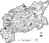 | ЦЕННЫЕ ПРИРОДНЫЕ ОБЪЕКТЫ ПОДОЛЬСКОГО РАЙОНА |
На ООПТ Подольского района охраняются около 20% отмеченных на его территории редких и угрожаемых видов животных, растений и грибов. Существующая система охраны нуждается в определенной доработке. Для ее оптимизации необходимо:
- дальнейшее совершенствование нормативно-правовой базы с учетом положений Пан-Европейской стратегии сохранения биологического и ландшафтного разнообразия, ратифицированной Россией в 1995 г., и конвенции о биологическом разнообразии;
- развитие сети ООПТ в соответствии с Указом Президента РФ от 02.10.1992 N155 (Очагов, 1994) и распоряжением Правительства РФ от 23.04.1994 N572-р;
- построение экологического каркаса (ecological network).
Пан-Европейская стратегия сохранения биологического и ландшафтного разнообразия (ПЕС) одобрена на конференции министров охраны окружающей среды (55) всех Европейских государств и СНГ в Софии (23-25.10.1995г.) Она рассчитана на реализацию в течение 1996-2015 гг., причем на каждые 5 лет будут разрабатываться свои программы. Для реализации ПЕС предусмотрена финансовая и иная поддержка Европейского Сообщества для государств Восточной Европы и СНГ. Это стало возможным в результате осознания того, что сохранение ненарушенных природных комплексов Восточной Европы и СНГ дешевле, чем активность по их поддержанию в Западной и Центральной Европе. В рамках первой "пятилетки" Стратегии (1996-2000) были намечены следующие 12 направлений деятельности:
0. Пан-Европейские усилия по "запуску" Стратегии;
1. Создание Пан-Европейской экологической сети (ЭС);
2. Учет и анализ особенностей сохранения биоразнообразия в различных секторах экономики;
3. Повышение информированности и обеспечение поддержки со стороны органов принимающих управленческие решения и общественности;
4. Сохранение исконных ландшафтов;
5. Прибрежные и морские экосистемы;
6. Речные и пойменные водно-болотные экосистемы;
7. Водораздельные водно-болотные экосистемы;
8. Луговые сообщества;
9. Лесные экосистемы;
10. Горные экосистемы;
11. Мероприятия по охране угрожаемых видов.
К практике заповедного дела России ближе всего подходит направление N1 Стратегии. Экологические сети, предположительно, должны состоять из следующих функциональных зон (The Pan-European...1996):
- центральных зон ("ядер"), где сохраняются наиболее значимые виды, экосистемы, биотопы и ландшафты, при этом задачи охраны природы превалируют над всеми остальными;
- зон восстановления или реставрации наиболее значимых видов, экосистем, биотопов и ландшафтов;
- экологических коридоров (сплошных или прерывистых), обеспечивающих естественную миграцию видов, т.е. популяционный обмен;
- буферных зон, защищающих ЭС от внешних воздействий.
Интересно, что очень похожие идеи о природоохранном зонировании высказывал более 20 лет назад Московский географ Б.Б. Родоман (1973, 1974). Основные подходы Стратегии к построению ЭС можно обнаружить и в работах других наших специалистов. Например, в работе Н.Ф. Реймерса и Ф.Р. Штильмарка (1978), где за ООПТ закреплена восстановительная функция, и заповедники рассматриваются как "ядра", связанные "коридорами" или "мостами", что, по сути, мало отличается от экологического "сетеплетения" в понимании Стратегии. Нижегородский эколог С.В. Бакка понимает под современной системой ООПТ "совокупность экологически и функционально взаимосвязанных ООПТ" (1998). Основные положения Федерального закона "Об особо охраняемых природных территориях", принятого в 1995 г., во многом созвучны и не противоречат идеям Стратегии. Всё это подводит нас к мысли, что экологические сети Стратегии и российская система ООПТ понятия весьма близкие При этом, если буферные зоны или зоны восстановления в ряде случаев будут не очень скоро востребованы, то создание центральных зон вместе со связующими их экологическими {-121-|} коридорами - своевременная важная задача для всех без исключения регионов России (принцип "охранять дешевле, чем восстанавливать").
Для находящейся в экономическом кризисе страны особенно важно, чтобы финансовые и иные средства, выделяемые Европейскими структурами на развитие ЭС Восточной Европы, были использованы не на создание абстрактных "кабинетных" схем, а способствовали дальнейшему практическому развитию системы ООПТ России.
По итогам настоящей работы к территориальной охране в Подольском районе предлагается 47природных участков, в том числе 7 - для организации ООПТ регионального уровня и 40 - для включения в дальнейшем в экологический каркас в качестве ядер, либо соединяющих их экологических коридоров (Очагов и др., 2001). Все предложенные в нашей работе природные участки, наряду с существующими ООПТ, должны составить основу будущего экологического каркаса района. В случае одобрения всех или части наших проектов по организации ООПТ властями района, следующим шагом явится подготовка соответствующих эколого-экономических обоснований.
Обследование территории Подольского района выявило ряд ценных природных объектов, предложенных к специальной охране. Однако организация особо охраняемых природных территорий не всегда гарантирует сохранение и естественное восстановление природных экосистем. Исследования, проведенные на территории заповедников, показывают, что полное прекращение хозяйственной деятельности и введение строгих мер охраны зачастую приводят к снижению биологического разнообразия особо охраняемых природных территорий (Сукцессионные процессы..., 1999; Оценка и сохранение..., 2000). Это положение особенно справедливо для территорий, подвергшихся сильным антропогенным преобразованиям в прошлом и зачастую полностью или частично утратившим способность к самовосстановлению. В условиях абсолютно заповедного режима происходит зарастание лесом лугов и полян, светолюбивые виды деревьев вытесняются теневыносливыми, что приводит к формированию сомкнутых лесов с низкой освещенностью под пологом. При этом постепенно сокращаются позиции светолюбивых видов, приуроченных к луговым и опушечным экосистемам.
Процесс спонтанного восстановления лесных сообществ происходит очень медленно, поскольку для восстановления сложной мозаично-ярусной структуры необходимо время, превышающее длительность жизни одного или нескольких поколений деревьев (200-400 лет). Восстановление потенциального видового разнообразия тормозится и низкими темпами расселения многих видов растений. Большинство деревьев (за исключением пионерных видов - березы и осины) распространяются со скоростью нескольких сотен метров за одно поколение, а большинство трав - со скоростью от нескольких сантиметров до нескольких метров (Удра, 1990).
Для ООПТ необходима разработка специальных способов природопользования, направленных на восстановление биологического разнообразия. Применительно к лесам экологически грамотное лесопользование должно быть направлено не на создание монокультур хвойных пород и быстрое получение деловой древесины, а на восстановление смешанных (полидоминантных) и разновозрастных елово-широколиственных лесов.
Анализ лесоводственной литературы дает возможность предложить наиболее важные направления работ по восстановлению лесов:
Восстановление структурного разнообразия - разновозрастной системы мозаик окон возобновления - путем проведения группово-выборочных рубок или имитации естественных вывалов. Размеры окон и их размещения по территории массива должны рассчитываться исходя из экологических потребностей древесных видов, радиуса эффективной репродуктивной активности древесных видов, а также с учетом максимального сохранения лесной среды. Имеющиеся расчеты и данные показывают, что оптимальные размеры окон составляют по диаметру 1,5-2 высоты окружающего полога леса (0,1-0,3 га).
Восстановление потенциального видового разнообразия зональных эдификаторов и формиро{-122-|}вание многовидовых (полидоминантных) елово-широколиственных лесов зонального типа должно базироваться на естественном возобновлении в сочетании с созданием лесных культур недостающих древесных пород. Многообразие древесных видов малонарушенных естественных лесов включает дуб черешчатый, липу сердцевидную, клен остролистный, ясень обыкновенный, вязы голый и гладкий, ель обыкновенную. При отсутствии надежного возобновления целесообразно создание культур этих видов на свежих вырубках, в окнах, возникших в результате естественного распада древостоев или сформировавшихся в результате проведения рубок обновления. Рубки ухода должны обеспечить оптимальное соотношение древесных видов и их успешное развитие. Для целого ряда редких видов трав, отличающихся малым радиусом репродуктивной активности, восстановление их популяций целесообразно проводить путем реинтродукции.
Восстановление генетического разнообразия популяций древесных видов. При закладке питомников необходимо использовать гетерогенный семенной материал, собранный из местных популяций древесных видов.
Восстановление полидоминантных разновозрастных лесов зонального типа поможет обеспечить длительное неистощительное лесопользование, а также будет способствовать поддержанию высокого биоразнообразия лесных экосистем, сохранению и восстановлению почвенного плодородия, увеличению устойчивости лесных экосистем.
В связи с тем, что старые фаутные деревья и разлагающиеся стволы (валёж) являются уникальными экологическими нишами разнообразных живых организмов (млекопитающих, птиц, насекомых, бактерий, грибов), на особо охраняемых природных территориях необходимо ограничить такие лесохозяйственные мероприятия, как санитарные рубки и уборку захламленности. Санитарные рубки лишают лесной биоценоз вывалов, играющих важную роль в поддержании биологического разнообразия, в частности в возобновлении некоторых видов растений. Отказ от санитарных рубок и уборки захламленности или ограничение этих лесохозяйственных мероприятий позволит восстановить сложную мозаику ветровально-почвенных комплексов, характерную для ненарушенных лесов и восстановить разнообразие различных групп живых организмов, связанных с разлагающейся древесиной.
Представляется перспективным преобразование малоценных мелколиственных лесов в полидоминантные елово-широколиственные леса путем проведения рубок обновления и переформирования в сочетании с созданием лесных культур недостающих древесных видов.
При планировании лесокультурных мероприятий необходимо отказаться от создания монокультур ели в пользу культур, включающих полный набор зональных эдификаторов (дуб, липу, клен, ясень, вязы голый и гладкий, ель). Это может быть достигнуто чередованием одновидовых биогрупп указанных видов на лесокультурной площади. В настоящее время практически полностью отсутствуют условия для естественного воспроизводства популяций сосны обыкновенной. Без участия человека площади сосновых лесов могут резко сократиться. В связи с этим в подходящих лесорастительных условиях целесообразно создание культур сосны, однако в последнее время этой породе уделяется явно недостаточное внимание.
Охрана редких видов должна включать наблюдения за состоянием их популяций. Большое значение для сохранения и восстановления популяций редких видов имеет реинтродукция (Тихонова и др., 1992; Беловодова, Тихонова, 2001). Интересной задачей для школьных лесничеств и экологических кружков может стать размножение редких видов в специальных питомниках и создание искусственных популяций в подходящих местообитаниях.
Помимо восстановления лесных экосистем, на ООПТ целесообразны специальные меры, направленные на сохранение лугов и лесных полян. Для этого необходимы периодическое сенокошение и умеренный выпас. Для нормального функционирования пойменных экосистем принципиально важным является восстановление популяции бобра.
Учитывая очень сильное антропогенное воздействие на биогеоценозы некоторых заказников, необходимо искусственно поддерживать популяции некоторых групп животных. Наиболее простым и недорогим мероприятием является развеска специальных домиков для некоторых видов птиц-дуплогнездников (сов, клинтуха, мухоловок и других). Работы рекомендуется проводить под руководством орнитологов.
Сохранить и восстановить биологическое разнообразие ООПТ в настоящее время возможно лишь с помощью активных, экологически обоснованных мероприятий с обязательным привлечением школьников и энтузиастов-экологов. {-123-|}
Общая площадь охотничьих угодий в районе 85,1 тыс.га., что составляет 80% от всей его территории. Границы Подольского охот-хозяйства много раз менялись. Последний раз это случилось в мае 1995 г., когда его площадь увеличилась с 47 тыс. га до современных размеров за счет включения в его состав угодий общества "Динамо". Несмотря на давнюю сельскохозяйственную освоенность и наличие современного развитого агропромышленного комплекса, здесь сохраняются значительные площади лесов (53,3 тыс. га, или 62% охотугодий), в то время как открытые местообитания (поля, пастбища и сенокосы) составляют менее половины общей площади угодий (30,9 тыс. га - 36%). На водно-болотные угодья приходится самая незначительная часть (0,9 тыс. га - 1%). Все охотугодья принадлежат одному охотпользователю - Подольскому районному обществу охотников и рыболовов (РООиР) и полностью находятся в границах района. Последний проект внутрихозяйственного устройства территории выполнен в 1997 г. (табл. 7).
Природные условия района обеспечивают обитание богатой фауны охотничьих животных, которые могли бы достигать здесь значительной численности. Рост численности зверей и птиц сдерживается действием ряда как природных, так и связанных с деятельностью человека (антропогенных) факторов. Среди последних на первый взгляд самой очевидной и наглядной причиной является охотничье изъятие, то есть непосредственное добывание животных охотниками.
Действительно, в густонаселенной Московской области, по соседству с рядом городов, включая и крупнейший мегаполис - Москву, число охотников очень велико. Только в Подольском районе зарегистрировано 3,5 тыс. местных охотников, а ведь сюда приезжают и любители охоты из соседних районов, а главное - из недалекой Москвы, где зарегистрировано более 140 тыс. членов охотничьих организаций. Даже небольшая часть этого числа могла бы в течение одного сезона уничтожить всю дичь. Могла бы - если бы не существовало отработанной системы ведения охотничьего хозяйства.
Казалось бы, проблему истребления животных охотниками можно было бы решить радикально - раз и навсегда. Просто взять и повсеместно запретить, как советуют некоторые "горячие головы", любую охоту. Однако практика показывает, что подобные запреты не приносят сколько-нибудь значительного положительного результата.
| Виды животных | Площадь свойственных угодий | Класс бонитета | Численность голов | |||||
| Всего, га* | условно-потенциальн. | полезная | фактическая | оптимальная | ||||
| га | % | га | % | |||||
| лось | 50425 | 14287 | 28 | 36138 | 72 | III | 100 | 132 |
| кабан | 80817 | 66835 | 83 | 13982 | 17 | IV | 120 | 120 |
| олень | 50425 | 39146 | 78 | 11279 | 22 | IV | 12 | 95 |
| косуля | 50425 | 35374 | 70 | 15051 | 30 | IV | 130 | 160 |
| заяц-беляк | 49369 | 10595 | 22 | 38774 | 78 | III | 1600 | 1760 |
| заяц-русак | 33680 | 24596 | 73 | 9084 | 27 | IV | 240 | 400 |
| тетерев | 49493 | 44596 | 90 | 3471 | 10 | V | 30 | 180 |
| глухарь | 49493 | 45898 | 93 | 4937 | 7 | V | 8 | 60 |
| сер. куропатка | 31382 | 24596 | 78 | 6786 | 22 | IV | 60 | 190 |
| водопл. дичь | 983 | 266 | 26 | 717 | 74 | II | - | 1900 |
Примечание: * - площадь охотугодий в момент проведения охотустройства была определена в 86,000 тыс. га; уточненная площадь охотугодий в 2001 г. была определена в 85,115 тыс. га.
{-124-|}
Большинство составляющих охотничью фауну видов для своего благополучного существования в условиях преобразованных человеком местообитаний нуждается в проведении ряда мероприятий, которые называют охотхозяйственными. Охотники и работники охотничьего хозяйства (егеря, охотоведы) по-настоящему, экономически заинтересованы в сохранении и приумножении богатств фауны.
В природе все взаимосвязано и, воздействие проводимых мероприятий не ограничивается только объектами охоты, на которые они в первую очередь направлены. Это благотворное воздействие шире, оно распространяется и на весь животный мир, и на растительность, и на природу в целом. Безусловно, разумный путь к сохранению природы и достижению гармонии в отношениях с ней человека лежит не через запреты и борьбу с "охотниками", а через сотрудничество и максимальное использование всех имеющихся возможностей.
Итак, цель охотничьего хозяйства - обеспечить рациональное, устойчивое, неистощимое использование запасов охотничьих животных. Основываться такое использование должно только на достоверной информации о численности и распределении зверей и птиц, являющихся объектами охоты. Такую информацию получают путем проведения мероприятий по учету охотничьих животных.
Наиболее массовым мероприятием подобного рода является зимний маршрутный учет (ЗМУ). Суть метода заключается в том, что на постоянных учетных маршрутах, закладываемых во всех типах угодий и во всех частях района, ежегодно во второй половине зимы подсчитывается число следов зверей на снегу и число встреч птиц. Число следов зверей или встреч птиц на 10 км учетного маршрута называется показателем учета, и плотность населения зверей и птиц получается путем умножения этого показателя на специальный пересчетный коэффициент. Такие коэффициенты для каждого вида охотничьих животных и для каждого субъекта Российской Федерации рассчитываются централизованно - в Государственной Службе Учета, функционирующей в системе Департамента по охране и развитию охотничьих ресурсов МСХ РФ (Охотдепартамент), в Контрольном информационно-аналитическом центре охотничьих животных и среды их обитания (Центрохотконтроль). Вычисленная плотность используется для оценки численности охотничьих животных (умножение на площадь соответствующих угодий).
В последние годы в Подольском районе закладывается 18 учетных маршрутов общей протяженностью более 162 км. Значения численности, приведенные в табл. 9, получены методом ЗМУ, после обработки в Службе Госохотучета. Табл. 8 содержит собственные оригинальные данные Подольского РООиР, полученные, в основном, этим же методом. Данные ЗМУ на районном уровне подвержены действию случайных факторов, поэтому их можно рассматривать только как приблизительную оценку. Достоверность эти данные приобретают на уровне областей и экономических регионов.
| Виды охотничьих животных | Годы | |||||
| 1996 | 1997 | 1998 | 1999 | 2000 | 2001 | |
| Белка | 380 | 900 | 1190 | 1200 | 1200 | 910 |
| Горностай | 200 | 200 | 200 | 200 | 200 | 200 |
| Заяц-беляк | 3000 | 1840 | 1980 | 2080 | 2300 | 2500 |
| Заяц-русак | 200 | 240 | 230 | 250 | 300 | 320 |
| Кабан | 100 | 120 | 180 | 182 | 220 | 215 |
| Косуля | 120 | 130 | 130 | 130 | 140 | 142 |
| Куница | 80 | 130 | 130 | 140 | 180 | 160 |
| Лисица | 190 | 300 | 250 | 180 | 190 | 250 |
| Лось | 95 | 100 | 100 | 102 | 115 | 130 |
| Олень пятнистый | 36 | 12 | 30 | 26 | 25 | 15 |
| Хорь | 20 | |||||
| Глухарь | 1 | - | - | - | - | 4 |
| Тетерев | 3 | - | - | - | 26 | 60 |
| Рябчик | 1 | 10 | - | - | 30 | 60 |
| Сер. куропатка | 20 | |||||
| Барсук | 40 | 50 | 60 | 60 | 80 | 80 |
| Норка | 40 | 60 | 80 | 180 | 300 | 300 |
| Ондатра | н/у | н/у | н/у | н/у | 1000 | 1000 |
| Бобр | н/у | н/у | н/у | н/у | 10 | 10 |
Примечание:
* - прочерк означает, что вид при учетах не выявлен;
"н/у" - означает, что специальных учетов в этот год не проводилось.
Однако не все виды охотничьих животных можно одинаково успешно учитывать при помощи ЗМУ. Для планирования охотничьего изъятия большое значение имеют учеты, проводимые непосредственно перед сезоном охоты, то есть в конце лета и осенью. Поэтому в охотничьем хозяйстве применяется широкий спектр методов учета. Некоторые методы дают не абсолютные, а только относительные показатели обилия, которыми можно пользоваться только для сравнения, оценивания динамики численности за ряд лет. Например, бобра и ондатру учитывают по норам (хаткам) и следам кормовой деятельности; барсука - по норам; кабана, косулю, пятнистого и благородного оленя - на подкормочных площадках; выводки боровой дичи - методом осеннего маршрутного учета. {-125-|}
| Виды охотничьих животных | Годы | |||||
| 1996 | 1997 | 1998 | 1999 | 2000 | 2001 | |
| Белка | 507 | 8405 | 2833 | 1648 | 3445 | 5099 |
| Горностай | - | 41 | 27 | 33 | 23 | 15 |
| Заяц-беляк | 1557 | 2866 | 1858 | 1645 | 2085 | 1549 |
| Заяц-русак | - | 140 | 99 | 116 | 341 | 120 |
| Кабан | 55 | 32 | 311 | 287 | 209 | 182 |
| Косуля | 530 | 91 | 199 | 95 | 149 | 116 |
| Куница | 28 | 381 | 107 | 145 | 187 | 224 |
| Лисица | 306 | 420 | 364 | 241 | 331 | 371 |
| Лось | 48 | 104 | 103 | 154 | 154 | 95 |
| Олень пятнистый | - | 62 | 40 | 21 | 24 | - |
| Хорь | - | 9 | 2 | - | 5 | - |
| Глухарь | - | 19 | - | - | ||
| Тетерев | - | - | 199 | 350 | ||
| Рябчик | - | 62 | 249 | 461 | ||
Примечание: * - прочерк означает, что вид при учетах не выявлен; пробел - отсутствие данных.
Если учетные мероприятия фиксируют состояние охотничьих ресурсов, то другая группа мероприятий - биотехния - имеет целью направленное изменение (как правило, увеличение) численности животных через воздействие на их местообитания в тех местах и ситуациях и в то время, когда животные в наибольшей степени нуждаются в помощи. Сюда относятся зимняя подкормка копытных, зайцев и куропаток, закладка солонцов, строительство гнездовых домиков для водоплавающих птиц, устройство галечников (мест, где тетеревиные птицы могут пополнять запасы гастролитов - крупных песчинок и мелких камешков, необходимых для перетирания грубых растительных кормов в желудке) и порхалищ (мест, где птицы принимают пылевые ванны).
В Подольском районе наиболее распространенным видом биотехнических мероприятий является подкормка копытных. Охотнее всего посещают подкормочные площадки кабаны, для которых выкладывают картофель. Кабаны быстро привыкают к подкормке и концентрируются вокруг подкормочных площадок, не отходя от них на значительное расстояние (держатся в пределах слышимости). Кабаны - очень умные звери, они быстро выучивают время, когда на площадку подвозят корм и подходят к ней именно к появлению корма.
На втором месте по использованию зимней подкормки - косуля. Этот мелкий олень зимой очень уязвим для хищников, потому что снежный покров существенно препятствует его перемещениям. Зимой косули концентрируются небольшими стадами по 4-5 особей в определенных местах, сочетающих повышенные кормовые и защитные свойства. Здесь они относительно малоподвижны - могут перезимовать на площади всего лишь 20 га. Именно эти места и используются работникам охотничьего хозяйства для подкормки кабанов и косуль, которым подкладывают снопики и веники. Копытные разных видов мирно используют одни и те же подкормочные площадки, разделив время своего посещения: косули приходят кормиться в светлое время суток, а кабаны - в сумерках и ночью. Для пятнистого и благородного оленей зимняя подкормка также необходима, однако ввиду того, что эти животные почти полностью откочевывают из Подольского района в Калужскую область, регулярного использования ими подкормочных площадок не наблюдается.
Растительноядные животные (копытные, грызуны, зайцеобразные) особенно нуждаются в минеральных веществах (соли), недостаток которых они испытывают в силу специфики своих кормов. В поисках источников соли животные совершают иногда далекие кочевки, подвергаясь многим опасностям и зачастую погибая.
Для избежания этих негативных явлений биотехния предусматривает организацию минеральной подкормки через устройство солонцов. Соль (лизунец или в смеси с глиной) выкладывается в углубления, сделанные либо в поваленных деревьях (лежащих на земле или, лучше, приподнятых над ней с опорой на пень) - такие солонцы называют "колодой", или "корытом", либо в срезе пня - "столбик". На территории Подольского района егерями устроено около 100 солонцов (по 10-12 в каждом из 8 егерских обходов).
К биотехническим мероприятиям иногда относят также и борьбу с вредными хищниками. В Подольском районе таковыми, прежде всего, являются бродячие собаки и, к сожалению, перешедшие в эту категорию из объектов охоты лисы. Собаки и лисы заняли в густонаселенных районах Европейского Центра экологическую нишу волка, с которым, кстати, собаки могут гибридизировать. Эти хищники уничтожают зайцев, косуль, молодых оленей, лосей и кабанов. Хищничество называют главной причиной исчезновения в районе вольного стада пятнистых оленей. Лисы и собаки на протяжении ряда лет уничтожали почти всех оленят, а в феврале-марте 2000 г. во время настов бродячие собаки загрызли 6 последних оленей.
Немалую роль в увеличении численности хищников сыграла негативная экономическая ситуация {-126-|} в охотохозяйственной отрасли. В 1980-е годы средняя по Подольскому району зарплата составляла 150 рублей, а цена шкурки лисы, которую легко можно было сдать в заготовительную контору - 250 рублей. Добывать лис было выгодно, и охотничье изъятие эффективно удерживало численность лис на уровне 60-70 особей. В то время в районе насчитывалось около 60 охотников-владельцев норных собак (не считая приезжающих из Москвы), все норы были известны и "поделены", велся тщательный учет. Беспокойство в то время вызывало скорее истребление норных животных, иногда принимавшее варварские формы (раскапывание нор). Охотились на лис и с гончими собаками, и с капканами, и на привадах (стрельба из скрадка в местах, где выкладывается корм - чаще всего падаль или "требуха").
В конце 1980-х годов, с началом перестройки, экономическая ситуация коренным образом изменилась, что отразилось и на конъюнктуре сбыта пушнины. В настоящее время при средней по району зарплате 1985 рублей (данные за 2000 год) цена шкурки лисы составляет всего лишь около 100 рублей. Сбыт пушнины сталкивается со значительными трудностями. Хотя правило обязательной сдачи шкурок никто не отменял, приемные пункты отсутствуют, инфраструктура отрасли по существу разрушена. Результаты не замедлили сказаться: интерес охотников к добыче лис резко упал. Норных собак сейчас в районе держат только 5 человек. Лисьи норы мало кого интересуют, учет их не ведется.
Вырвавшись из-под пресса охоты, лисы многократно увеличили свою численность (об этом можно судить даже из табл. 8 и 9, в которых приведен зимний, т.е. минимальный в течение года показатель). Росту числа лис способствовали и другие факторы - хорошая кормовая база, рост обилия мышевидных грызунов по естественным причинам, из-за снижения интенсивности сельского хозяйства и ослабления борьбы с его вредителями.
В перенаселенных лисой угодьях вспыхнули эпизоотии - массовые заразные заболевания, включая и опасные для человека и домашних животных - бешенство. Это стало еще одной причиной уменьшения интереса к лисе как к объекту охоты - собаки при нахождении в норе и контакте со зверями подвергаются риску заражения смертельным заболеванием, как и сами охотники - при выделке шкуры.
Самым показательным в этом отношении стал 1998 г. Численность лис достигла небывалого уровня, только отстреляно в районе было около 700 этих зверей. Зарегистрировано свыше 100 случаев необычного поведения лис, во многих случаях заболевание их бешенством было доказано лабораторными исследованиями. Лисы забегали на фермы, в населенные пункты, залезали в собачьи будки, покусали 14 человек. Именно после 1998 г. пришлось перейти от охоты на лис (хотя их добывание поощряется, отстрел разрешается круглогодично и попутно с любой законной охотой) к борьбе с ними как с вредными хищниками. Для этого в период гона лис (в феврале) создаются специальные бригады из охотников с участием егерей, которые отстреливают их вблизи нор. Такая команда за день уничтожает до 10-15 зверей. Поскольку велика вероятность пораженности убитых животных бешенством, шкуру с них, как правило, не снимают, а складывают (пользуясь рукавицами) в кучу, обливают бензином и сжигают.
Те же экономические причины (отсутствие спроса, низкие цены) благотворно повлияли на обилие большинства пушных видов. Число поселений бобра увеличилось, достигнув 10-12, и продолжает возрастать. Ондатра заселила все пригодные водоемы, включая мелкие, в районе обитает не менее 3-5 тыс. особей. Норка также заселила все пригодные места, численность высокая - около 500 зверьков. Число барсуков (80-100 голов) продолжает увеличиваться. Из-за высокого спроса на обладающий целебными свойствами барсучий жир, этот зверь остается желанным трофеем. Однако охота на барсука сложна, трудоемка, опасна для собак. При малочисленности в районе норных собак (а "работать" по барсуку может далеко не всякая собака!) становится понятно, что пресс охоты и на этот вид невелик. Численность лесной куницы за последние годы увеличилась в 3-5 раз (с 40-60 до 140-200 зверьков) и продолжает расти. Кроты, которых раньше ловили в больших количествах ради шкурок (сейчас заготовки полностью прекратились) невероятно размножились и даже наносят некоторый ущерб садам и огородам, повреждая своей роющей деятельностью грядки и корни деревьев и кустарников.
"Нашествие" бродячих собак также имеет, по мнению охотоведов, социально-экономические причины. В первую очередь, недавний бум дачного строительства в сочетании с трудностями зимнего содержания собак в городских квартирах. Ежегодно весной сотни собак привозятся из города и оставляются осенью в окрестностях дачных поселков. Эти животные поначалу кормятся на свалках, затем окончательно дичают и переходят к волчьему образу жизни. Как и лисы, они являются переносчиками опасных заболеваний. Бродячие собаки не боятся человека, и, бывает, проявляют к нему агрессивность. Этими же причинами обусловлено и присутствие в угодьях большого количества бродячих кошек. Привезенные из города в начале гнездового сезона {-127-|} кошки "гуляют сами по себе" и наносят огромный урон популяциям птиц - как певчих, так и охотничьих (ловят молодых куликов, уток, куриных птиц). Естественно, такой ущерб дикой фауне работники охотничьего хозяйства оставить без внимания не могут. Ежегодно в угодьях района отстреливается до 1,5-2,5 тыс. бродячих животных. На борьбу с ними в пределах населенных пунктов полномочия охотников не распространяются - здесь действуют органы санэпиднадзора. Собак отлавливают (часто с применением обездвиживающих препаратов), передерживают в течение нескольких дней и, если хозяин не находится, умерщвляют специальной инъекцией.
Постоянно обитающих волков в Подольском районе нет, однако ежегодно регистрируются их заходы из примыкающих местностей. В каждом случае егерская служба организует преследования, облавы, однако добыть волков, как правило, не удается, они уходят с территории района. В 2001 г. зарегистрирован заход одиночного волка, а самый крупный инцидент произошел в 1991 г., когда стая, состоящая более чем из 10 волков, за 3 дня в марте, пользуясь сочетанием наста и глубокоснежья, зарезала 11 оленей и молодого лося.
Помимо перечисленных зверей, к категории вредных хищников относятся также некоторые птицы, прежде всего, врановые. Они разоряют множество гнезд и уничтожают птенцов охотничьих птиц (куликов, водоплавающих, полевой дичи). В прежние годы охотникам за сданные вороньи лапки выдавались патроны, засчитывалась отработка. Сейчас такой практики не существует, но охотники, осознавая вред, который способны причинить вороны и грачи, по возможности отстреливают их, разоряют гнезда. В 2000 г. группа воронов атаковала оленят в вольере и была уничтожена егерями. Кроме этого ежегодно уничтожаются несколько болотных луней, отстрел производится выборочно - только особей, специализирующихся на добыче уток и ондатры.
Важными сферами охотхозяйственной деятельности является также искусственное разведение и расселение охотничьих животных. Собственно дичеразведением в Подольском районе не занимаются, но на центральной базе охотничьего хозяйства в Коротыгино пятнистые олени живут круглый год и размножаются в условиях полувольного содержания (об обстоятельствах, вынудивших к этому охотоведов мы уже рассказывали). В настоящее время в вольере размером 7 га содержится 40-50 оленей, планируется увеличение поголовья и расширение огороженной площади еще на 10 га.
Пятнистые олени не являются исконными обитателями подмосковных лесов (происходят с Дальнего Востока), их группировки в Европейской России образовались в результате искусственного расселения. Так и в Подольском районе в 1987 г. осуществлен выпуск 80 животных. Опыт оказался не удачным - группа оленей неуклонно уменьшалась и к 2001 г. исчезла. Самопроизвольные кочевки оленей также способствовали резкому сокращению местной популяции. Полученные из высокоорганизованного охотхозяйства "Барсуки" соседней Калужской области (расстояние по прямой около 35 км), они сохранили привязанность к этому месту и стали совершать сезонные миграции: летом появляются (70-80 голов, преимущественно самцы), пересекая Нару, доходят до места выпуска (Лукошкино, Коротыгино), с конца октября исчезают - на период гона (ноябрь-декабрь) и на зимовку возвращаются в Калужскую область.
Выпуски таких традиционных объектов расселения, как бобр, ондатра и кабан в районе не проводились, эти звери расселялись по территории естественным образом. Еще один самовольно расселившийся вид - американская норка. До 1980-х гг. в районе в малом числе встречалась лишь европейская, а в настоящее время все пригодные местообитания заселены американской норкой (ее численность высока - около 500 особей), европейская же почти не встречается. Несомненно, такое положение связано с широкомасштабной экспансией американской норки в ареале европейской, но на местном уровне этому способствовало бегство американских норок из звероводческих хозяйств района (Щапово и Кресты). Специалисты оценивают такие ежегодные "спонтанные выпуски" в 50-100 особей, часть сбежавших зверей отлавливают, часть гибнет, а часть приживается в угодьях.
Единственный зверь, для которого выпуски проводились направленно и, по мнению охотоведов, были успешными, - заяц-беляк. До 1950-х гг. регистрировались лишь единичные встречи этого вида. С 1951 по 1983 гг. осуществлена целая программа выпусков - в общей сложности около 600 беляков. Результатом было создание плотной популяции из 2,5-3,5 тыс. зверьков, что позволяет ежегодно добывать до 600-700 голов. Производятся и выпуски зайца-русака. Например, в январе 2001 г. в воспроизводственный участок завезены и выпущены 32 зверька.
Как уже упоминалось, необходимым условием рационального использования ресурсов охотничьих животных является регулирование охотничьей нагрузки, которое достигается путем ограничения сроков, территорий, способов и норм добычи, количества выдаваемых разрешений на охоту (путевок и лицензий). Сезон весенней охоты в каждом административном районе ограничен 10 днями. В Подольском районе, как и во всей {-128-|} Московской области, охота открывается обычно во второй декаде апреля. В других областях, имеющих большую протяженность с севера на юг, охота в разных частях открывается в разные сроки, то есть дифференцировано. Охотоведы иногда говорят о целесообразности дифференциации сроков охоты и для Московской области.
Весной охотятся только на пернатую дичь: гусей (в т.ч. с профилями), селезней уток (с подсадной), глухаря и тетерева (на токах), вальдшнепа (на тяге). Большинство способов весенней охоты направлено на выборочный отстрел самцов тех видов птиц, у которых один самец покрывает несколько самок, что биологически оправдывает изъятие охотниками части самцов.
На весеннюю охоту выдаются разовые (2-дневные) и сезонные (на весь период) путевки. По ряду причин охотники предпочитают сезонные путевки, ежегодно их выдается: на гуся 10-15, на селезней 30-40, на вальдшнепа 600-700. Тетерева и глухари в районе не очень многочисленны, поэтому при выдаче путевок для охоты на токах применяется индивидуальный подход. Количество добываемых птиц определяется условиями сезона, соотношение видов пропорционально количеству выдаваемых путевок и численности видов в угодьях. За сезон по официальным данным обычно добывают не более 10 (обычно 3-5) гусей, 20-30 селезней кряквы и 400-500 вальдшнепов.
Осенний сезон охоты распадается на два: летне-осенний и осенне-зимний. В первый охота ведется преимущественно на пернатую дичь, боровую (вальдшнеп, выводки тетерева и глухаря, рябчик с манком), полевую (перепел, серая куропатка, коростель), болотно-луговую (кулики, пастушковые), водоплавающих (преимущественно утки на перелетах, гуси в этот сезон в районе почти не встречаются). При охоте на большинство этих птиц используются подружейные собаки, особенно легавые и спаниели.
Открытие летне-осенней охоты происходит обычно во второй декаде августа. Для владельцев подружейных собак допускается начало охоты на 2 недели раньше. В период летне-осенней охоты предусмотрены разовые 2-дневные (их выдается за сезон около тысячи), 10-дневные, 30-дневные (50-60) и сезонные (200-250) путевки. Легальная добыча в этот период составляет 1-2 тыс. уток (из них большинство - около 90% - кряквы), десяток вальдшнепов, около 300 штук болотно-луговой и 100-200 штук "прочей" (из них треть - голуби, более половины - перепела) дичи. Естественно, количество добываемых птиц сильно колеблется по годам.
Сезон осенне-зимней охоты начинается в ноябре, основные охотничьи объекты - млекопитающие, в первую очередь лисы и зайцы. В год на такую охоту выдается около 600 разовых, 60-70 месячных и около 500 сезонных путевок. Охотятся с гончими собаками.
В этот же период осуществляется охота на пушных зверей (в т.ч. с лайками) и копытных. Добывание копытных разрешается по специальным разрешениям - лицензиям, которые охотники выкупают по установленной цене. Количество, видовой и половозрастной состав разрешенных к добыванию животных (квоту добычи) определяют государственные органы, отвечающие за охотничье хозяйство: на уровне субъектов Российской Федерации - Охотдепартаментом и Центрохотконтролем, на уровне административных районов в пределах области - областным подразделением Охотдепартамента - Управлением по охране, контролю и регулированию использования охотничьих животных (Охотуправление). Квоты проходят экологическую экспертизу. В угодьях контроль законности добычи осуществляет районный охотовед Охотуправления в тесном взаимодействии с егерской службой РООиР.
В отдельные годы, при снижении численности конкретных видов ниже критического уровня, лицензии на их добычу могут не выдаваться вообще. Так было в начале 1990-х гг. с кабаном, когда число этих животных в районе составляло лишь около 30 голов (из них постоянно держались на территории 8). Лицензии не выделялись в течение 2 лет, и это, наряду с подкормкой, охраной и, в общем, благоприятными природными условиями, дало результат: сейчас в районе насчитывают 150-250 кабанов, ежегодно добывают 40-50 голов. Численность лося в среднем составляет 115120 особей, ежегодно добывалось 10-15 голов, однако в 2001 г. квота была сильно сокращена, и фактически отстрела не было. Это связано с сокращением численности лося в Подольском районе (табл. 8, 9) и в Московской области в целом. Численность косули в районе составляет 120-140 голов, на добычу ежегодно выдается около 10 лицензий.
Все перечисленные выше меры по обеспечению рационального использования ресурсов охотничьих животных, несомненно, не дали бы результата без эффективных мер по охране.
К сожалению, у некоторых граждан, которых и охотниками назвать нельзя, да многие из них и не имеют охотничьего билета, встречается бездушно-жестокое, хищническое, потребительское отношение к природе, в частности, к охотничьим животным. Эти люди не желают признавать никаких правил и ограничений, порой убивают животных просто для развлечения или чтобы только испытать свои транспортные средства ("навороченные" автомобили, снегоходы). Это {-129-|} привело к истреблению (задавлены, забиты палкой) зайцев-русаков, устраивавших лежки на полях, серых куропаток (разгоняют стаи, давят) и других охотничьих животных. Особенно велик вред от снегоходов в полевых угодьях и во время наста. Естественно, работники охотничьего хозяйства борются с этим злом, как и с любыми проявлениями браконьерства и варварства к природе. Однако технических средств для этого явно недостаточно - на снегоходах "Буран" и простых лыжах за дорогими импортными скоростными снегоходами не угнаться.
Приходится сталкиваться и со многими другими проблемами. Среди них неконтролируемое дачное и коттеджное строительство (в т.ч. в водоохранных зонах). Если высокие темпы такого освоения сохранятся, лет через 10 места для дичи в районе просто не останется. Нет взаимопонимания и с лесным хозяйством. В последние годы рубками уничтожены почти все спелые леса, сосняки, ягодники, важные для глухаря и других тетеревиных. В прежние времена широкомасштабное и не вполне грамотное применение минеральных удобрений и ядохимикатов в агропромышленном комплексе (в т.ч. разбрасывание отравленного зерна с самолетов для борьбы с грызунами) наносило большой вред охотничьей фауне, обусловив катастрофическое снижение численности тетерева, серой куропатки, зайца-русака. Сейчас пресс химизации ослаб, численность полевой дичи начала восстанавливаться. С другой стороны, и охотничьи животные тоже могут причинять ущерб. Например, в 2000 г. кабаны уничтожили около 12 га посевов, РООиР пришлось компенсировать этот экономический ущерб. Ондатры наносят урон огородам, зайцы (зимой) - садам, что также провоцирует конфликтные ситуации. Дачники иногда пытаются бороться с "вредителями" подручными средствами - при помощи петель и других запрещенных орудий лова.
Большое значение для охотничьего хозяйства имеют организация и функционирование охраняемых природных территорий. В Подольском районе к ним относятся охраняемый егерской службой заказник "Поляница" (о нем подробно рассказано в разделе по охране природы) и воспроизводственные участки. В них создаются улучшенные условия обитания (особенно в критические периоды, например, зимой) и размножения (воспроизводства) дичи, охота здесь не открывается. В Подольском районе воспроизводственные участки занимают около 30% охотничьих угодий, причем наиболее продуктивную, богатую их часть. Именно здесь охрана наиболее строга и проводится основная часть биотехнических мероприятий. При возникновении нового поселения бобров, это место также немедленно объявляется воспроизводственным участком.
Значение воспроизводственных участков для дичи можно показать на примере зайцев. К концу сезона охоты показатель учета в открытых для охоты угодьях составляет 1-2 следа на 10 км учетного маршрута, а на воспроизводственных участках - 40-45 следов/10 км. К осени размножившиеся зайцы расселяются из воспроизводственных участков в окружающие угодья, и охотники вновь получают возможность охотиться на них.
В связи с тем, что егеря и охотоведы охраняют животных и их местообитания не только на воспроизводственных участках, все охотничьи угодья в определенной степени можно считать своеобразной охраняемой природной территорией. Порядок в угодьях контролируют 8 штатных егерей (площадь среднего егерского обхода - 10 тыс. га), охотоведы РООиР и Охотуправления, а также сами охотники. {-130-|}
Абатуров А.В. Древняя история лесов Русской равнины // Совещание "Леса Русской равнины". Тезисы докладов. М., 1993, с. 5-7.
Абатуров А.В. Из истории лесов Подмосковья // Динамика хвойных лесов Подмосковья. М.: Наука, 2000, с. 22-32.
Абатуров А.В., Семенкова И.Г. Лесной фонд и характеристика основных лесообразующих пород // Леса Южного Подмосковья / Под ред. Л.П. Рысина. М.: Наука, 1985, с. 206-246.
Автомобильный атлас Московской области. М.: РУЗ ко, 2000, 112 с.
Агроклиматический справочник по Московской области. Л.: Гидрометеоиздат, 1967, 136 с.
Алехин В.В. Растительность и геоботанические районы Московской и сопредельных областей. М: МОИП, 1947.
Ананьева Н.Б., Боркин Л.Я., Даревский И.С., Орлов Н.Л. Земноводные и пресмыкающиеся. Энциклопедия природы России. М.:АБФ 1998, 576 с.
Анненская Г.Н., Жучкова В.К., Калинина В.Р., Мамай И.И., Низовцев В.А., Хрусталева М.А., Цесельчук Ю.Н. Ландшафты Московской области и их современное состояние. Смоленск: СГУ, 1997.
Анненская Г.Н., Жучкова В.К., Мамай И.И., Калинина В.Р., Низовцев В.А., Пучкова Э.И., Хрусталева М.А., Цесельчук Ю.Н. Ландшафтная карта как основа для оценки экологической обстановки (на примере Московской области) // Ландшафты Московской области и Подмосковья, их использование и охрана. М.: МФГО, 1990.
Анненская Г.Н., Жучкова, В.К., Мамай И.И., Низовцев В.А., Пучкова Э.И., Хрусталева М.А., Цесельчук Ю.Н. Ландшафты Московской области // Вестник Московского университета. Сер. 5, N2, 1987.
Апродов В.А., Апродова А.А Движения земной коры и геологическое прошлое Подмосковья. (Учебные геологические экскурсии в окрестностях Москвы). М.: МГУ, 1963, 267 с.
Арнольд Ф.К. Хозяйство в Русских лесах. СПб, 1880, 290 с.
Атлас Московской области. М., 1964, 12 с.
Атлас Московской области. М.:ГУГК, 1976, 40 с.
Атлас СССР.М., 1954, 147 с.
Бакка С.В. Принципы создания системы особо охраняемых природных территорий // Предпосылки и перспективы формирования экологической сети северной Евразии. Нижний Новгород, 1998, с. 8-9.
Банников А.Г., Даревский И.С., Рустамов А.К. Земноводные и пресмыкающиеся СССР.М.: Мысль, 1971, 303 с.
Беловодова Н.Н., Тихонова В.Л. Реинтродукция растений как способ восстановления численности охраняемых видов // Аграрная Россия. Научно-производственный журнал. 2001, N2, с. 31-33.
Березин М.В., Бейко В.Б., Березина Н.В. Анализ структурных изменений населения шмелей (Bombus, Apidae) Московской области за последние 40 лет // Зоологический журнал. 1996, т. 75, N2, с. 212-221.
Березин М.В., Бейко В.Б., Смирнова А.А., Березина Н.В. Аспекты охраны насекомых-опылителей в Московской области // Научные основы охраны живой природы Подмосковья. М.: Наука, 1988, с. 28-41.
Березин М.В., Березина Н.В., Захваткин Ю.А. "Видовой состав шмелей - опылителей клевера в учебно-опытном хозяйстве "Михайловское" // Известия ТСХА, 1987, Вып. 1, с. 185-191.
Бобров В.В. Распространение пресмыкающихся в Московской области // Земноводные и пресмыкающиеся Московской области. М., 1989, с. 164-176.
Бобров В.В., Кузьмин С.Л., Семенов Д.В. Герпетологические исследования в Москве и Московской области. Животный мир. М.: Наука, 1995, с. 29-36.
Бондаренко Д.А., Старков В.Г., 1989. О распространении и экологии обыкновенного ужа Natrix natrix на территории Москвы и Московской области // Земноводные и пресмыкающиеся Московской области. М., с.40-43.
Борзов А.А., Семихатова Л.И. Географические экскурсии под Москвой. М., Учпедгиз, 1933 (Изд. 2-е, дополненное), 112 с.
Борисова О.В., Уланова Н.Г., Демидова А.Н., Куксина Н.В. Особенности динамики ценопопуляций берёзы и осины на вейниковых вырубках ельников южной тайги. - в кн.: Труды Международной конференции по фитоценологии и систематике высших растений посвящённой 100-летию со дня рождения А.А. Уранова. М.: МПГУ, 2001, с. 26-28.
Брэй У., Трамп Д. Археологический словарь. М.: Прогресс, 1990, 368 с.
Бухгольц Ф.В., Линде Е.А Список семенных и высших споровых растений. // Естественно-историческая коллекция гр. Е.П. Шереметевой в с. Михайловском Московской губ. I. Гербарий. (Издание 3-е, переработанное и дополненное). Рига, 1917, 73 с.
Быков А.В. Особенности населения мелких млекопитающих рекреационных лесов Южного Подмосковья // Лесоведение. 1985, N4, с. 47-52.
Бязров Л.Г., Дылис Н.В, Жукова В.Н., Носова Л.М., Солнцева О.Н., Успенская Н.М., Уткин А.И. Основные типы широколиственно-еловых лесов и их производных Малинского лесничества Краснопахорского лесхоза Московской об{-131-|}ласти. Биогеоценологические исследования в широколиственно-еловых лесах. М., 1971, с.7-150.
Вахрамеева М.Г. Клен остролистный // Биологическая флора Московской области. Вып.1. М.: Изд-во Моск. унта, 1974, с. 106-119.
Войтехов М.Я., Лещева Г.С., Флинт В.Е., Формозов Н.А., Гарушянц К.Ю., 1989. Короткие заметки о фауне земноводных и пресмыкающихся Москвы и Московской области // Земноводные и пресмыкающиеся Московской области. М., с.43-48.
Воробьёв К.А. Орнитологические исследования в Московской губернии // "Труды Государственного музея Центрально-Промышленной области", 1925, Вып. 1, М., 23 с.
Ворошилов В.Н., Скворцов А.К., Тихомиров В.Н. Определитель растений Московской области. М.: Наука, 1966, 368 с.
Восточноевропейские широколиственные леса. Под ред. О.В. Смирновой. М.: Наука, 1994, 364 с.
Всё Подмосковье. Географический словарь Московской области. М.: Мысль, 1967, 384 с.
Географическая Карта Московской Провинции сочиннная с Генеральных Уездных межевых планов попечением Межевой Канцелярии членом Коллежского Советника Зенбулатова и Инженером Майором и над Чертёжною Директором Горихвостовым 1774 Года. Факсимильное издание: М.: Картаир, 1995.
Гололобов А.Д. Характеристика почв и кормов Подольского района Московской области М.: Россельхозиздат, 1966.
Государственный доклад "Состояние окружающей среды Московской области в 1994 году". М: Мособлкомприрода, 1995, с. 84-90.
Готье Ю.В. Замосковный край в XVII веке. Опыт исследования по истории экономического быта Московской Руси. М.: Соцэкгиз, 1937, 410 с.
Данилов Д.Н. Размещение и численность лося, косули и кабана в Московской области //Очерки природы Подмосковья и Московской области. М.: изд-во МОИП, 1947, с.85-95.
Даньшин Б.М. Геологическое строение и полезные ископаемые Москвы и её окрестностей (Пригородная зона). М.: изд-во МОИП, 1947, 308 с.
Двигубский И.А. Опыт каталога представителей Московской фауны. // 1-й международный зоологический конгресс в Москве, М., 1892, 135 с.
Добровольский Г.В., Никитин Е.Д. Функции почв в биосфере и экосистемах (экологическое значение почв). М.: Наука, 1990, 261 с.
Добровольский Г.В., Шеремет Б.В., Афанасьева Т.В., Палечек Л.А. Почвы. Энциклопедия природы России., М.: ABF, 1998, 368 с.
Дунаев Е.А., Харитонов Н.П. Экологические заметки по фауне земноводных и пресмыкающихся Московской области // Земноводные и пресмыкающиеся Московской области. М., 1989, с. 25-36.
Евстигнеев О.И., Коротков В.Н., Беляков К.В., Браславская Т.Ю., Романовский А.М., Рубашко Г.Е., Сарычева Е.П., Федотов Ю.П. Биогеоценотический покров Неруссо-Деснянского Полесья: механизмы поддержания биологического разнообразия. Препринт. Брянск, 1999, 176 с.
Емельянова Л.Г., Подольский С.А., Назырова Р.И. О необходимости проведения комплексного зоогеографического обследования северо-восточной части Калужской области // Биологическое разнообразие Калужской области. Проблемы и перспективы развития ООПТ. Материалы научно-практической конференции. Калуга, 1996, ч.1, с. 51-56.
Еремкин Г.С., Очагов Д.М. О тенденциях в изменении численности птиц Москвы и ближнего Подмосковья // Природа Москвы. М.: Биоинформсервис, 1998, с. 170-176.
Желоховцев А.Н. Подотряд Symphyta (Chalastogastra) - Сидячебрюхие // Определитель насекомых Европейской части СССР.Л., 1988, т. 3, ч. 6, с. 7-234.
Желоховцев А.Н., Прохорова Л.Г. Пилильщики и рогохвосты Московской области // Сб. трудов Зоологического музея МГУ, т. XV, 1976, с. 97-110.
Житков Б.М. Животный мир //Московский край. М., 1925, с. 139-158.
Заугольнова Л.Б. Ясень обыкновенный // Биологическая флора Московской области. Вып.1. М.: Изд-во МГУ, 1974, с. 142-159.
Заугольнова Л.Б., Истомина И.И., Е.В. Тихонова. Анализ растительного покрова лесной катены в антропогенном ландшафте (на примере бассейна р. Жилетовки, Подольский район Московской области) // Бюллетень МОИП, отд. биол., 2000, т. 105, Вып.4, с. 42-52.
Здановский И.А. Гидрографическая карта Московской губернии. Приложение к "Каталогу рек и озёр Московской губернии". М., 1926. Факсимильное издание. М.: Карта-ир, 1995.
Зубакин В.А., Гринченко О.С., Крейндлин М.Л., Свиридова Т.А. Современное состояние гнездовой популяции большого кроншнепа в Московской области. // Редкие виды птиц Нечернозёмного центра России. М.: МПГУ, 1998, с. 185-188.
Зубакин В.А., Мищенко А.Л., Абоносимова Е.В., Волошина О.Н., Ковальковский С.Ю., Краснова Е.Д., Могильнер А.А., Николаева Н.Г., Соболев Н.А., Суханова О.В., Шварц Е.А. Современное состояние некоторых редких видов птиц Московской области. Неворобьиные. // Орнитология, Вып. 21, 1986. с. 77-93.
Зубакин В.А., Мищенко А.Л., Абоносимова Е.В., Волошина О.Н., Ковальковский С.Ю., Краснова Е.Д., Могильнер А.А., Николаева Н.Г., Соболев Н.А., Суханова О.В., Шварц Е.А. Современное состояние некоторых редких видов воробьинообразных птиц Московской области. // Орнитология, Вып. 22, 1987, с. 156-159.
Зубакин В.А., Мищенко А.Л., Абоносимова Е.В., Волошина О.Н., Ковальковский С.Ю., Краснова Е.Д., Могильнер А.А., Николаева Н.Г., Соболев Н.А., Суханова О.В., Шварц Е.А. Изменения орнитофауны Московской области за последние десятилетия. // Орнитология, Вып. 23, 1988, с. 183-187.
Иванов А.И. Каталог птиц Советского Союза. Л.: Наука, 1976, 276 с.
Ильинская С.А. Типы леса // Леса Южного Подмосковья. М.: Наука, 1985. {-132-|}
Исаков Ю.А. Об охоте в Южном Подмосковье сто лет назад //Животное население Москвы и Подмосковья, М., 1967, с. 55-58.
Казакова Н.М. Основные черты рельефа Московской области // Труды института географии, Вып. 71, 1957.
Калякин М.В. (составитель) Птицы Москвы и Подмосковья. - 1999. М., 2000, 94 с.
Каминский А.М. Наблюдения над редкими и малоизвестными птицами Московской губернии // Орнитологический вестник, 1916, N4, с. 40-44 (242-246).
Карасева Е.В., Телицына А.Ю., Самойлов Б.Л. Млекопитающие Москвы в прошлом и настоящем. М.: Наука, 1999, 245 с.
Карасева Е.В., Тихонова Г.Н., Богомолов П.Л. Ареал полевой мыши (Apodemus agrarius) в СССР и особенности обитания вида в его разных частях // Зоологический ж., 1992, Т. 71, N6, с. 106-115.
Карнаухов А.В, Карнаухов В.Н. Куда текли сибирские реки во времена ледниковых периодов? / / Природа, 1997, N1, с. 46-55.
Карпачевский Л.О., Киселёва Н.К., Попова С.И., Леонов Т.Г. Пестрота почвенного покрова и её связь с парцеллярной структурой биогеоценоза // Биогеоценологические исследования в широколиственно-еловых лесах. М., 1971, с. 151-224.
Карписонова Р.А. Дубравы лесопарковой зоны Москвы. М.: Наука, 1967, 104 с.
Карта землепользований Подольского района Московской области. 1: 50 000, ВИСХАГИ, 1992
Карта растительности Московской области. Авт. Г.Н. Огуреева. 1: 200 000, М., 1996.
Кириков С.В. Изменения в распространении и среде обитания охотничьих животных Подмосковья в XVII-XIX в.в. // Изменения в населении и среде обитания животных СССР в XVI-XIX в.в.: Европейская часть СССР. 1972, с. 34-47.
Кириков С.В. Промысловые животные, природная среда и человек. М.: Наука, 1966, 347 с.
Климатический справочник СССР.Л.: Гидрометеоиздат, 1964.
Климатический справочник СССР.Л.: Гидрометеоиздат, 1967.
Климатический справочник СССР. Горький: Гидрометео-издат, 1971.
Кожевников Г.А. Дополнение к спискам животных Московской губернии. Reptilia //Известия общества любителей естествознания, антропологии и этнографии. Дневник зоологического отделения, 1902, т. 3, N4, с. 8.
Козлов М.А. Отряд Перепончатокрылые - Hymenopte-ra - Насекомые // Животный мир Молдавии. Кишинев.: Штиинца, 1983, 374 с.
Колосов А.М. Охрана и обогащение фауны СССР.М.: Лесная промышленность, 1975, 277 с.
Константинов В.М., Бабенко В.Г., Лебедев И.Г., Состояние и перспективы сохранения лесного орнитологического комплекса и редких видов птиц в ближайшем Подмосковье // Редкие виды птиц нечернозёмного центра России. М, 1998, с. 83-85.
Королькова Г.Е., Быков А.В. Птицы и млекопитающие. // Леса Южного Подмосковья. М.: Наука, 1985, с. 247-277.
Котюков А.Е. Опыт восстановления дуба в лесах Подмосковья. М.: МСХ РСФСР, 1961, 34 с.
Красная книга Московской области. Под ред. Зубакина В.А. и Тихомирова В.Н.М.: Аргус и Русский университет, 1998, 538 с.
Краснов Ю.А. Раннее земледелие и животноводство в лесной полосе Восточной Европы. М.: Наука, 1971, 168 с.
Крупеников И.А. Мониторинг и природоохранная инфраструктура // Коммунист Молдавии, 1989, N2, с. 20-26.
Кузьменко Ю.Т. Кристаллический фундамент // Москва: геология и город. М., 1997, с. 44-48.
Кузьменко Ю.Т, Гаврюшина Е.А., Лаврович О.Н. Осадочный чехол. Там же, с. 48-86.
Кузьмин И.Ф. Основные черты формирования фауны охотничьих животных Московской области за столетний период // Влияние антропогенной трансформации ландшафта на население наземных позвоночных животных. Тезисы Всесоюзного совещания, ч. 1, 1987, с. 104-106.
Кузьмин С.Л. Земноводные бывшего СССР.М., 1999, 298 с.
Курнаев С.Ф. Основные типы леса средней части Русской равнины. М.: Наука, 1968, 354 с.
Латышева Г.П., Рабинович М.Г. Москва и Московский край в прошлом. М.: Московский рабочий, 1973, 232 с.
Леонтьева О.А., 1990. Характер изменений герпетофауны Подмосковья под воздействием человека //Экология животных лесной зоны. 1990, М.: Изд-во МОПИ, с. 35-40.
Леонтьева О.А., 1995. Бесхвостые земноводные как биоиндикатор антропогенной трансформации экосистем Подмосковья //Экологические исследования в Москве и Подмосковье. 1995, М.: Наука, с. 37-50.
Леса Южного Подмосковья. Под ред. Л.П. Рысина. М.: Наука, 1985, 280 с.
Лесной фонд России (по состоянию на 1 января 1998 г.). Справочник. М.: ВНИИЦлесресурс, 1999, 650 с.
Лесопожарная карта лесхозов опытного производственного лесохозяйственного объединения Подольсклесхоз. 1990. М 1 : 100 000
Лоренц Ф.К. Дополнения к спискам животных Московской губернии // Известия общества естествознания, антропологии и этнографии. Дневник зоологического отделения. 1902, т. 3, N4, с. 6-7.
Любимова Е.Л. Очерк растительности природных районов Московской области // Труды института географии. Вып. 71, 1957.
Мамай И.И., Низовцев В.А., Пучкова Э.И. Современное состояние ландшафтов Московской области // Вестник МГУ, Сер. 5, 1987, N6. с. 45-53.
Мантейфель Ю.Б., Бастаков В.А., 1989. Земноводные заказника "Голубое озеро": численность и особенности поведения // Земноводные и пресмыкающиеся Московской области, М., с. 70-81. {-133-|}
Марголин В.А., Галченков Ю.Д., Воронин А.А., Баранов Л.С., Горшков В.И., Овсянников Г.М., Середенко В.И. Некоторые изменения в фауне и населении редких видов птиц Калужской области. // Редкие виды птиц Нечерноземного центра России. М.: Изд. МПГУ, 1998, с. 97-100.
Мелик-Багдасаров Е.М. Особенности формирования сети особо охраняемых природных территорий в районах с повышенной антропогенной нагрузкой (на примере Подольского района Московской области). Дипломная работа. Рукопись, хранящаяся в архиве кафедры рационального природопользования Географического факультета МГУ.М., 1999, 104 с.
Меркова М.А. Некоторые данные по экологии рыжей полевки и желтогорлой мыши юга Московской области и Теллермановской рощи // Бюл. МОИП, отд. биол. 1955, Т. 60, Вып. 1. с. 21-32.
Мимонов Е.В. Изменение фауны булавоусых чешуекрылых Московской области под действием антропогенных факторов // Насекомые Московской области. М.: Наука, 1988, с. 127-139.
Миркин Б.М., Розенберг Г.С., Наумова Л.Г. Словарь понятий и терминов современной фитоценологии. М.: Наука, 1989, 223 с.
Михайлов А.М., Клюкин А.Н. Волки Подмосковья. М., 1996, 192 с.
Михеев А.В. К биологии водяной крысы Arvicola terrestris terrestris L. // Сборник трудов Государственного зоологического музея при МГУ, Вып. IV, М.-Л.: Гос. изд. биологической и медицинской литературы при Наркомздраве СССР, 1937. с. 3-26.
Могучев А.П. К фауне чешуекрылых Одинцовского района Московской области. М., 1999, 33 с.
Москва и Московская область. 1: 350 000, Роскартография, 1996.
Москва и Московская область. Топографическая карта. 1: 200 000, 439-й ЦЭВКФ, 1998.
Московская губерния [Карта, 10 вёрст в английском дюйме, год издания не указан].
Московская область [Карта, 1:150000]. Минск, 1990.
Московская область. Загрязнения природной среды, почв. 1: 350 000, картографическое приложение к журналу "Лик", Вып. 1, 1993.
Московская область. Пластика рельефа. Почвы. 1:350 000 картографическое приложение к журналу "Лик", Вып. 1, 1993.
Мосолов Н.А. Из жизни птиц Московской губернии. Дрозды // Естествознание и география, 1904, N6. с. 57-69.
Мосолов Н.А. Из жизни птиц Московской губернии. Дятлы. // Естествознание и география. 1908, N4, с. 24-32.
Мосолов Н.А. Из жизни птиц Московской губернии. Пеночки. // Естествознание и география, 1905б, N2, с. 54-63.
Мосолов Н.А. Из жизни птиц Московской губернии. Синицы. Поползни. // Естествознание и география, 1905в, N3, с. 28-41.
Мосолов Н.А. К вопросу о зимнем прикармливании птиц. М., 1904б, 7 с.
Мосолов Н.А. К фауне птиц Московской губернии // Охотничья газета, 1907б, N2.
Мосолов Н.А. Каталог коллекции естественно-исторического музея в с. Михайловском, Подольского уезда Московской губернии. Жуки. М., 1902, 24 с.
Мосолов Н.А. Каталог коллекции естественно-исторического музея в с. Михайловском, Подольского уезда Московской губернии. Перепончатокрылые. М., 1905а, 23 с.
Мосолов Н.А. Коростели в неволе. // Естествознание и география, 1907а, N3, с. 26-29.
Мочарский Н.И. Подмосковные рыбы. Труды отдела ихтиологии Императорского русского общества акклиматизации животных и растений. N1. М., 1887, с. 105-115.
Мурзаев Э.М. Словарь народных географических терминов. М.: Мысль, 1984, 653 с.
Мячкова Н.А., Сорокина В.Н. Климат Московской области. - М.: Изд-во МГУ, 1991.
Низовцев В.А., Мельник М.В., Лаукарт Л.В., Онищенко М.В., Фурманова Ю.Г, Кренке Н.А., Иванов А.А. История хозяйственного освоения лесных ландшафтов ГИЗЛ "Горки Ленинские" // Сохранение и восстановление природно-культурных комплексов Подмосковья. М.: Улисс, 1995. с. 37-43.
Низовцев В.А., Носова Л.М.. История, современное состояние ландшафтов Московской области, задачи лесовосстановления и охраны (на примере Малинского лесничества Краснопахорского лесхоза. // Экологические исследования в Москве и Московской области. М., 1992. с. 28-47.
Николаев С.В., Николаев А.С. Ценные геологические объекты Московской области (охраняемые и нуждающиеся в охране). Рукопись, хранящаяся в архиве Московского областного Совета Всероссийского общества охраны природы, 1988, 80 с. (карта и пояснительная записка к ней).
Ниценко А.А. Об изучении экологической структуры растительного покрова // Бот. журн., 1969, Т. 54, N7, с. 1002-1014.
Огнев С.И. Fauna Mosquensis. Опыт описания фауны Московской губернии. // Млекопитающие Московской губернии, Т. 1, Ч. 1 - Chiroptera, Insectivora, Rodentia, 1913, 310 с.
Огнев С.И. Звери Восточной Европы и Северной Евразии, М.-Л.: Изд-во АН СССР, Т.1. Насекомоядные, 1928, 631 с., Т.2. Грызуны, 1931, 776 с.
Огнев С.И. Новые данные по фауне млекопитающих Московской области // Очерки природы Подмосковья и Московской области. М.: Изд-во МОИП, 1947, с. 79-84.
Огнев С.И. Fauna Mosquensis. Опыт описания фауны Московской губернии. 1913, Т. 1, Млекопитающие Московской губернии, Ч. 1 - Chiroptera, Insectivora, Rodentia. 310 с.
Ожегов С.И. Словарь русского языка. М.: Гос. изд-во иностранных и национальных словарей, 1961, 900 с.
Орлова В.Ф., Божанский А.Т. Коллекция земноводных и пресмыкающихся Московской области, хранящихся в {-134-|} Зоологическом музее МГУ // Земноводные и пресмыкающиеся Московской области. М., 1989, с. 11-25.
Осмоловская В.И. Волки в Московской области // Растительность и животное население Москвы и Подмосковья, М., 1978, с. 89-90.
Отчет о работе администрации Подольского района в 2000 г. // Земля Подолькая, N4 (64), 2001, с. 1-15.
Офман Г.Ю., Пономаренко С.В., Пономаренко Е.В. Естественно-географические зоны и сельскохозяйственное районирование России // Традиционный опыт природопользования в России. Под ред. Л.В.Даниловой и А.К. Соколова. М.: Наука, 1998, с. 18-56.
Оценка и сохранение биоразнообразия лесного покрова в заповедниках европейской России. Под ред. Л.Б. Заугольновой. М.: Научный мир, 2000.
Очагов Д.М.. О некоторых проблемах формирования эффективной системы особо охраняемых природных территорий (ООПТ) в Московской области // Экологический вестник Подмосковья. М., 1994, Вып. 2-3, с. 23-26.
Очагов Д.М., Карасёва С.Е., Исаева-Петрова Л. С, Ерёмкин Г.С., Есенова И.М., Иванов М.Н. Материалы по состоянию орнитокомплексов Государственного природного заказника "Поляница" (послегнездовой период) и рекомендации по их сохранению. Рукопись, хранящаяся в архиве Комитета по экологии Подольского района. М., 1993, 27 с.
Очагов Д.М., Коротков В.Н., Ерёмкин Г.С. Результаты экспертного обследования особо охраняемых природных территорий (ООПТ) Подольского района. Рукопись, хранящаяся в архиве Комитета по экологии Подольского района. М., 1994, 75 с.
Очагов Д.М., Коротков В.Н., Еремкин Г.С., Мелик-Багдасаров Е.М., Насимович Ю.А., Есенова И.М. Опыт формирования экологического каркаса Подольского района Московской области // Аграрная Россия, 2001, N2, с. 14-17.
Павлинов И.Я., Россолимо О.Л. Систематика млекопитающих СССР. Дополнения. М.: Изд-во МГУ, 1998, 189 с.
Панфилов Д.В. Предварительные сведения о составе фауны пчелиных Московской области // Научные основы охраны живой природы Подмосковья. М., 1988, с. 58-72.
Перешкольник С.Л, Леонтьева О.А. Многолетние наблюдения за изменением герпетофауны Приокско-Террасного государственного заповедника // Земноводные и пресмыкающиеся Московской области. М., 1989, с. 84-98.
Перечень (список) объектов животного мира, занесенных в Красную Книгу Российской Федерации по состоянию на 1 ноября 1997 г. // Красная Книга России: правовые акты. М., 2000, с. 36-40.
Перовский М..Д, Варнаков А.П. Лось Подмосковья // Растительность и животное население Москвы и Подмосковья. М., 1978, с. 83-85.
Петров В.В. Новая схема геоботаничекого районирования Московской области // Вестник МГУ, сер. биол., почвовед., 1968, N5, с. 44-50.
План Царствующего Града Москвы с показанием лежащих мест на тридцать вёрст вокруг (1763 г.). Факсимильное издание 1994 г.
Планы лесонасаждений лесничеств Подольского ОПЛО "Подольсклесхоз" и Чеховского мехлесхоза. 1: 25 000, МЛТПО, 1990.
Подмосковье [Карта, 1:200000]. Москва, 1990.
Полякова Г.А., Гутников В.А. Парки Москвы: экология и флористическая характеристика. М.: ГЕОС, 2000, 405 с.
Подольский район. Авт. З.Д. Дроздова; ред Ю.Б. Елисеев. 1: 50 000, ГНПП "Аэрогеофизика", 1993.
Подольский район на пороге XX века. Подольск: МУП "Инфосервис", 1999, 15 с.
Подольский уезд Московской губернии. Статистическо-экономический очерк. Подольск: Подольский уисполком, 1924, 327 с.
Поляков Г.И. Птицы Богородского уезда с параллельным списком птиц всей Московской губернии. Богородск: изд. Богородского института краеведения, 1924, 90 с.
Полякова Г.А. Флора и растительность старых парков Подмосковья. М.: Наука, 1992, 223 с.
Пономаренко Е.В. Березы - сверстники социальных перемен // Наука и жизнь, 1992, N5, с. 10-13.
Поспелов Е.М. Названия подмосковных городов, сёл и рек. М.: Муравей, 1999, 207 с.
Поспелов Е.М. Топонимический словарь Московской области. М.: Профиздат, 2000, 320 с.
Поцелуев В.А., Петреев И.В. Подольск и окрестности. М.: Терра-Спорт, 1999, 560 с.
Природные памятники Москвы и окрестностей. Авт. Я.Г. Кац и др. 1: 500 000, М., 1997
Птушенко Е.С., Иноземцев А.А. Биология и хозяйственное значение птиц Московской области и сопредельных территорий. М., 1968, 461 с.
Пушкова Л.Н. Москворецко-Окская равнина в процессе освоения ее человеком// Уч. зап. МОПИ. Вопросы природных ресурсов. 1968, Т. 207, Вып.1, с. 58-80.
Раевский В.В. Об изменении фауны млекопитающих Московской губернии //Московский краевед, 1929, N4 (12), с. 21-41.
Распределение и относительная численность редких гнездящихся (или гнездившихся) птиц по областям нечернозёмного центра России. Под ред. В.Т. Бутьева // Редкие виды птиц Нечернозёмного центра России. М.: Изд. МПГУ, 1998, с. 321-323.
Рахилин В.К. Москва и изменение численности охотничьих животных в Московской области // Изменения в населении и среде обитания животных СССР в XVI-XIX в.в.: Европейская часть СССР. 1972, с. 48-68.
Редкие виды птиц Нечерноземного центра России (отв. ред. Бутьев В.Т.). М., 1998, 338 с.
Реймерс Н.Ф. Природопользование. Словарь-справочник. М.: Мысль, 1990, 637 с.
Реймерс Н.Ф., Штильмарк Ф.Р. Особо охраняемые природные территории. М.: Мысль, 1978, 295 с.
Речан С.П., Малышева Т.В., Абатуров А.В., Меланхолин П.Н. Леса северного Подмосковья. М.: Наука, 1993, 316 с. {-135-|}
Родоман Б.Б. Поляризация ландшафта как средство сохранения биосферы и рекреационных ресурсов// Ресурсы, среда, расселение. М.: Наука, 1974, с. 150-162.
Родоман Б.Б. Предложения о планировке Подмосковья в связи с задачами рекреации и охраны природы// География Москвы и Подмосковья. М.: МФГО, 1973, с. 136-145.
Родоман Б.Б. Территориальные ареалы и сети. Очерки теоретической географии. Смоленск: Ойкумена, 1999, 256 с.
Рожков Н. Сельское хозяйство Московской Руси в XVI веке. Б.м., б.г., 512 с.
Рулье К.Ф. О животных Московской губернии или о главных переменах в животных первозданных, исторических и ныне живущих в Московской губернии замеченных. М., 1845, 52 с.
Рысин Л.П., Рысина Г.П. Дуб обыкновенный // Биологическая флора Московской области. Вып. 8. М.:Изд-во МГУ, 1990, с. 102-130.
Рысин Л.П., Савельева Л.И. Заповедные лесные участки. М.: Агропромиздат, 1985, 168 с.
Сабанеев Л.П. Изменения в фауне позвоночных животных Средней России // Известия общества любителей естествознания, антропологии и этнографии. 1874, Т. 14, с. 45-49.
Сатунин К.А. Позвоночные Московской губернии. Вып. 1. Млекопитающие. // Дневник зоологического отделения Московского общества любителей естествознания, антропологии и этнографии. 1895, Т. 2, Вып. 1, 17 с.
Сатунин К.А. Позвоночные Московской губернии. Птицы. Рукопись, хранящаяся в архиве МГУ, 1895.
Свиридов А.В. Картография распространения булавоусых бабочек (Rhopalocera) в Московской области. М., 1982, 43 с.
Сироткин М..И. Список чешуекрылых (Macrolepidoptera) Московской и Калужской областей. // Энтомологическое обозрение. 1986, т. 65, вып. 2, с. 318-358.
Скворцов А.К. Современное распространение и вероятный первичный ареал ломкой ивы (Salix fragilis L.). // Проблемы биогеоценологии, геоботаники и ботан. географии. Л.: Наука, 1973, с. 263-280.
Скворцова Е.Б., Уланова Н.Г., Басевич В.Ф. Экологическая роль ветровалов. М.:Лесн. пром-сть,1983, 192 с.
Смирнова О.В. Восточноевропейские таёжные леса: доисторический и современный облик. // Труды Международной конференции по фитоценологии и систематике высших растений посвящённой 100-летию со дня рождения А.А. Уранова. М.: МПГУ, 2001, с. 158-160.
Смолицкая Г.П. Гидронимия бассейна Оки (Список рек и озёр). М.: Наука, 1976, 403 с.
Советов А. О системах земледелия. Спб.: Типография товарищества "Общественная польза". 1867, 286 с.
Современное состояние ландшафтов Московской области. Карта Авт.: Г.И. Анненская и др.; ред. И.И. Мамай. 1: 600 000. М., 1991.
Соколов Л.И., Соколова Е.Л., Пегасов В.А., Шатуновский М.И., Кистинев А.Н. Ихтиофауна реки Москвы в черте г. Москвы и некоторые данные о ее состоянии. Вопросы ихтиологии. 1994, Т. 34, Вып. 5, с. 634-641.
Солнцев Н.А. Природно-географические районы Московской области // Вопросы географии. сб. 51, М.:Географиз, 1961. с. 5-19
Социально-экономическое положение городов и районов Московской области, 1997 г. Статистический сборник. М.: Мособлстат, 1998, 224 с.
Списки населенных мест Российской империи, составленные и издаваемые центральным статистическим комитетом министерства внутренних дел. XXIV. Московская губерния. СПб., 1862, 263 с.
Станек В.Я. Иллюстрированная энциклопедия насекомых. Прага: Артия, 1977, 558 с.
Сукцессионные процессы в заповедниках России и проблемы сохранения биологического разнообразия. Под ред. О.В. Смирновой, Е.С. Шапошникова. Спб.: Российское ботаническое общество, 1999, 549 с.
Теплинский С.Г. Ихтиофауна Московской области и некоторые вопросы ее охраны. Научные основы охраны живой природы Подмосковья. М.: Наука, 1988, с. 49-58.
Тереньтев П.В. Очерки земноводных (Amphibia) Московской губернии. М.: Госиздат, 1924, 98 с.
Тихонова В.Л., Макеева И.Ю., Коротков В.Н., Беловодова Н.Н. Реинтродукция - перспективный путь восстановления генофонда редких и охраняемых видов растений (на примере лунника оживающего). Пущино. Препринт. 1992, 36 с.
Топографическая карта Московской губернии. Спб.: Военно-топографическое депо, 1860.
Топографическая карта окрестностей Москвы. СПб.: Военно-топографическое депо, 1848.
Топографическая карта Московской губернии. Сост. М. Рудольф. М [1:294 000]. Спб.: Изд-во Н. Смирнова, 1866. Снята под руководством Генерал лейтенанта Шуберта и гравирована при военно-топографическом депо.
Топоров В.Н. "Baltica" Подмосковья // Балто-славянский сборник. М.: Наука, 1972, с. 217-280.
Топоров В.Н., Трубачёв О.Н. Лингвистический анализ гидронимов верхнего Поднепровья. М.: Изд-во АН СССР, 1962, 270 с.
Удра И.Ф. Расселение и миграции древесных растений в умеренном поясе Евразии. Научн. докл. ... докт. биол. наук. М., 1990, 38 с.
Указ Президента Российской Федерации от 02.10.1992 г. N1155 "Об особо охраняемых природных территориях Российской Федерации".
Федеральный закон "О ратификации конвенции о биологическом разнообразии" от 17.02.1995 г. N16-ФЗ.
Формозов А.Н. Фауна // Природа Москвы и Подмосковья. М., 1947, с. 287-371.
Харитонов Н.П. Состояние и проблемы охраны земноводных и пресмыкающихся Московской области // Земноводные и пресмыкающиеся Московской области. М., 1989, с. 96-99. {-136-|}
Хахин Г.В., Иванов А.А. Выхухоль. М.: Агропромиздат, 1990, 190 с.
Цалкин В.И., Борисоглебская. Млекопитающие Москвы и Подмосковья на рубеже нашей эры // Животное население Москвы и Подмосковья. М., 1967, с. 7-9.
Цветков М.А. Изменение лесистости европейской России с конца XVII столетия по 1914 год. М.: Изд-во АН СССР, 1957, 213 с.
Ценные объекты живой природы Московской области (охраняемы и нуждающиеся в охране). Пояснительный текст к карте. М.: ГУКГ, 1986, 56 с.
Цепкин Е.А., Соколов Л.И. Динамика видового состава и численность рыб бассейна Москвы-реки // Вестник МГУ, сер. 16, биология, 1996, N3, с. 56-60.
Чеведаев А.А. Дуб, его свойства и значение. М.: Гослесбумиздат, 1963, 234 с.
Черенков С.Е., Полнота однократных учётов численности лесных воробьиных птиц в гнездовой период // Зоологический журнал. 1998, Т. 77. N4, с. 474-485.
Черенков С.Е. К определению срока строительства гнезда некоторых видов воробьиных птиц // Орнитология. 1995, Вып. 26, с. 198-199.
Черенков С.Е. Размещение гнёзд и успешность гнездования певчего дрозда (Turdus philomelos) в условиях высокой мозаичности леса // Зоологический журнал. 1996, Т. 75. N6, с. 917-925.
Черенков С.Е., Губенко И.Ю., Тиунов А.В., Кузьмичёв А.В. Факторы, определяющие пространственную структуру поселения дроздов (Turdus) в условиях высокой мозаичности леса. / / Зоологический журнал. 1995, т. 74, N2, с. 104-119.
Черенков С.Е., Изменчивость пространственной структуры видового разнообразия лесных птиц. // Динамика биоразнообразия животного мира. М., 1997, с. 56-60.
Черенков С.Е, Черенков А.Е., Андреичев Ю.В. Новые сведения о гнездовании кедровки в Московской области. // Экологические проблемы врановых птиц. Ставрополь, 1992, с. 153-154.
Чернова О.В. Проект Красной книги естественных почв России.
Чесноков П.И. Дубовые леса Московкой области и пути их восстановления. Автореф. дис. ... канд. с.-х. наук. М., 1954, 17 с.
Чешуекрылые Приокско-Террасного заповедника. Под ред. Г.И. Горностаева. М., 1994, 37 с.
Шапошников Л.В. Выхухоль. М.-Л.: Внешторгиздат, 1933, 48 с.
Шатуновский М.И., Огнев Е.Н., Соколов Л.И., Цепкин Е.А. Рыбы Подмосковья. М.: Наука, 1988, 143 с.
Шатуновский М.И., Пегасов В.А., Соколова Е.Л., Кистенев А.Н, Соколов Л.И. Рыбы Москвы-реки в черте города // Наука в России. N4, 1996, с. 57-59.
Щербаков Д.И. Кочедыжниковый стеблевой пилильщик. Красная Книга Москвы, М., 2001, в печати.
Экологическая карта Московской области. 1: 350 000, Центр "Экопрогноз". Агроклиматический справочник Московской области. М: Гидрометеоиздат, 1967.
Юзефович А.Н. Каталог коллекции естественно-исторического музея в с. Михайловском, Подольского уезда Московской губернии. Птицы. Рукопись, хранящаяся в архиве МГУ, 1923.
Corrigenda et addenda к списку птиц в "Primitiae faunae Mosquensis", 1893. М., 10 с. Исправления и дополнения по зверям и птицам принадлежат К.А. Сатунину (с. 1-2), по бабочкам - А.Л. Линде (с. 5-6).
Dwigubsky J.A. Primitiae faunae Mosquensis. (Второе издание, с исправлениями и дополнениями, под редакцией П.П. Мельгунова). М., 1892. 135 с. Списки зверей и птиц составлены К.А. Сатуниным (с. 2-8), список бабочек - Л.К. Альбрехтом (с. 55-82).
Falinski J.B. Uprooted trees, their distribution and influence on primeval forest biotope// Vegetatio, 1978, V. 38, N3. P. 175-183.
Lorenz Th.K. Die vogel des Moskauer Gouvernements. // Bulletin de la Societe des Naturalistische de Moscou. 1892-94. Bd.6, H.2, S. 263-321; Bd.7, H.3, S. 337-354, Bd.8, H.3, S. 325-350.
Lorenz Th.K. Die vogel des Moskauer Gouvernements. (Extrait du "Bull. de la Societe des Natur. de Moscou"), 1892, 101 р.
Schaetzl R.J., Burns S.F., Jonson D.L., Small T.W. Tree uprooting: review of impact on forest ecology // Vegetatio, 1989, V.79, N3, P. 165-176.
Smirnova O.V., Popadyuk R.V., Evstigneev O.I. et al. Current state of coniferous-broad-leaved forests in Russia and Ukraine: historical development, biodiversity, dynamic. Preprint. Pushchino, 1995, 77 p.
The ecology of natural disturbance and patch dynamics. Orlando e.a.: Acad. Press, 1985, XIV, 472 p.
The mosaic-cycle concept of ecosystem / Ed. by H.Remmert. Berlin, Heidelberg, New-York, 1991, 168 p.
The Pan-European Biological and Landscape Diversity Strategy. Amsterdam, 1996, 50 p.
Ulanova N.G. The effects of windthrow on forests at different spatial scales: a review // Forest ecology and management. 2000, 135, P. 155-167.
http://www.mosoblpress.ru/r_pod.shtml
http://www.info.podolsk.ru
Примечание: при создании картосхем данного издания использованы картографические материалы по Московской области, поименованные в настоящем списке. {-137-|}
авт. - условное название, данное авторами;
б.н. - бытующее название (названия);
дл. - длина (русла, долины);
др. - другие источники (названия взяты со схемы, на которую вручную наносились сведения из различных источников в 1970-1980 гг.);
ДСП - для служебного пользования (карта);
ж/д - железная дорога, железнодорожный и т.п.;
Зд. 1926 - Здановский И.А. Гидрографическая карта Московской губернии. Приложение к "Каталогу рек и озёр Московской губернии". М., 1926. Факсимильное издание: М.: Картаир, 1995;
изм. - измерения по географическим картам, выполненные авторами (обычно с указанием вслед за этим соответствующей карты);
МО 1990 - Московская область [Карта, 1:150000]. Минск, 1990;
набл. - наблюдения авторов;
пл. - площадь (бассейна);
ПЦГМ 1763 - План Царствующего Града Москвы с показанием лежащих мест на тридцать вёрст вокруг (1763 г.). Факсимильное издание, 1994 г;
Смол. 1976 - Смолицкая Г.П. Гидронимия бассейна Оки (Список рек и озёр). М.: Наука, 1976.
ТК 1848 - Топографическая карта окрестностей Москвы. СПб.: Военно-топографическое депо, 1848;
ТК 1860 - Топографическая карта Московской губернии. Спб.: Военно-топографическое депо, 1860.
Порядковые номера водотоков в тексте соответствуют таковым на картосхеме гидросети (на картосхеме не удалось поместить номера некоторых оврагов в бассейне р. Пустышки).
АЛЕШЕНКА - см. Олешенской.
АЛЕШИНКА - см. Олешенской.
1. АНАШКИНА [речка, ручей, овраг] (Анашкина - ТК 1860, Зд. 1926). Правый приток Вороновки. Дл. 5 км. Пл. бассейна 5 кв. км. Берёт начало в лесу юго-восточнее д. Косовка. Пересекает Калужское шоссе. Впадает в Воронове, близ которого запружена. Название от уменьшительной формы личного имени Ананий (Анашка) или от соответствующей фамилии.
АРАПКА - см. Оранка.
2. АРИНИНСКИЙ [ОВРАГ] (ТК 1848). Подходит справа к р. Пустышке (см.). Дл. 2 км.
АРИНКА - см. Оранка.
3. БАБАРЫКИНСКИЙ ОВРАГ (ТК 1848). Подходит слева к р. Пустышке (см.). Дл. около 1 км.
БАБЕНОВСКИЙ - см. Бабинской ручей.
4. БАБИНСКОЙ РУЧЕЙ (Бибинской, но, вероятно, также Бабинской - ТК 1860, вторую букву трудно прочесть, рядом показана д.Бабинки; Бибинской - Зд. 1926; Бибинской, Бабеновский - Смол. 1976). Левый приток Мочи. Дл. 5 км. Пл. бассейна 7-8 кв. км. Берёт начало из лесных болот в 1,5-2 км севернее д. Рыжово. Течёт почти прямо на юго-восток по безлесной местности (как соседняя с ним Поляница). Впадает чуть выше д. Бакланово. Обладает узким лентовидным бассейном и сколь-нибудь значительных притоков не имеет. На берегах расположены д. Бабенки (МО 1990) и отчасти д. Бакланово. Выше д. Бабенки широкая плоская долина заболочена, имеется каскад из двух прудов.
5. БЕЗЫМКА (Безымка в качестве названия нижнего течения главного водотока, Саловка - среднего, Пахарской [ручей, овраг] - верхнего - ТК 1860; Безымка в качестве названия нижнего течения и левого истока, Саловка в качестве правого притока, Пахорской [ручей] в качестве истока Саловки - Зд. 1926; Безымка и Безымянка - б.н.). Один из верхних левых притоков Мочи. Дл. 8 км. Пл. бассейна 19 кв. км. Берёт начало в 3 км к северу от д. Троица (в виде Пахарского ручья или оврага), представляя собой систему веером расходящихся лесных лощин. Впадает между д. Юрьевка и д. Безобразово. Принимает слева значительный приток, который иногда рассматривается в качестве главного истока речки и потому назван Безымкой, например, И.А.Здановским (1926). Близ истока запружена. Долина у самого истока, в среднем течении и у самого устья частично залесена. В среднем течении летом река маловодна и в засушливые годы пересыхает. На берегах Безымянки (Саловки) старые населённые пункты отсутствуют, но есть пионерские лагеря, дачи, сады и т.п. объекты (низовья в недавнее время почти полностью застроены). По свидетельству местных жителей, вырубка леса в верховьях речки привела к усилению весенних разливов, и для смягчения их пришлось восстанавливать плотину старого пруда в верхнем течении.
БИБИНСКОЙ РУЧЕЙ - см. Бабинской ручей.
6. БИТЦА (в разрядной книге 1480 г. Обитца, в материалах Генерального межевания XVIII в. Обитца и Абица - Поспелов, 2000; Абитца - ПЦГМ 1763; Битцы - ТК 1860, Зд. 1926; Битцовская речка - Списки..., 1862; Зутыня [?] - {-138-|} Абрамович, 1946; Битца - МО 1990, б.н.). Второй по размеру левый приток Пахры. Дл. 24 км. Пл. бассейна 112 кв. км (Всё Подмосковье, 1967). Берёт начало в Москве близ станции метро Тёплый Стан. Впадает у моста Павелецкой ж/д через Пахру. Принимает справа Козловку, слева Журавенку, Купеленку и Стербинку (все основные притоки протекают и впадают вне Подольского района). На берегах расположены г. Москва, г. Видное и др. (вне района). Протекает по границе Подольского района в самом нижнем течении - вдоль Павелецкой ж/д по застроенной и безлесной местности. Загрязнена. Название либо от др.-русск. "обисести" - "окружить, обойти", т.е. окружающая или обходящая что-то речка, либо балтийского происхождения (существует, например, литовский гидроним Abista) (Поспелов, 2000).
БИТЦОВСКАЯ РЕЧКА - см. Битца.
7. БУЛГАКОВСКИЙ ОВРАГ (б.н. в Свитине). Верхний правый приток Мочи. Разветвлённая овражно-балочная (или овражно-лощинная) система с постоянным водотоком в низовьях. Дл. 3-4 км. Пл. бассейна 5-6 кв. км. Берёт начало в лесу между д. Свитино и Семенковом, стекая с возвышенного москворецко-окского водораздела. Впадает чуть выше Юрьевского водохранилища. Весь бассейн залесен, и населённых пунктов на берегах нет, чем обусловлена особая ценность объекта.
8. ВИСЕНСКОЙ [ручей, овраг] (Вшенской овр. - ТК 1848; Висенской - ТК 1860, карта ДСП; Васенской - Зд. 1926, первая буква названия отпечатана плохо; Лопень - карта ДСП; Лопенка - личное сообщение В.Н.Никитина). Левый приток Пахры. Дл. 6 км. Пл. бассейна 7 кв. км. Берёт начало у Варшавского шоссе близ с. Захарьино. Впадает в д. Быковка чуть выше Нового Симферопольского шоссе. На берегах расположены д. Ордынцы и упомянутые селения, в которых речка проходит через небольшие пруды. Принимает справа небольшой и частично запруженный приток в верхнем течении, а также более длинный приток в нижнем течении, который на карте 1848 г. тоже назван Вшенским оврагом. Различные варианты названия, вероятно, связаны со сходством написания "ш", "ис" и "ас" на старых картах.
ВШЕНСКОЙ РУЧЕЙ - см. Висенской ручей.
ВОЛЧЕК - см. Волчёнок.
9. ВОЛЧЁНОК (Волченок - Автомобильный атлас Московской области, 2000; Волчек и др. - Смол. 1976; Волчёк? - б.н.; Волчек - карты ДСП). Значительный правый приток Мочи. Дл. 10 км. Пл. бассейна 29 кв. км. Вытекает из "двурогого" водохранилища в 1,5 км южнее д. Маврино. Протекает через дд. Маврино и Мешково, впадая ниже д. Починки. В верхнем и среднем течении есть пруды. Правый берег на большом протяжении залесен. Напрашивается связь названия со словом "волок" и его переосмыслением "волк", но авторы не знают какие-либо дополнительные аргументы в пользу этой связи. Волок из Мочи в Лопасню?
10. ВОРВАНКА (Зд. 1926). Левый приток Чернички. Дл. 6 км. Пл. бассейна 14 кв. км. Берёт начало в 4,5 км восточнее пос. Рогово. Впадает в д. Круча (в пруд). В 2 км от устья - небольшой пруд. "Ворвань" - вытопленный жир морских животных (Ожегов, 1961), но связь с этим словом вряд ли имеется. Предполагается балтийское происхождение названия (Топоров, 1972).
11. ВОРОНОВКА (Анашкина [речка и т.п.?] в качестве правого притока и названия нижнего течения главной реки - Зд. 1926; Вороновка - б.н., Смол. 1976; Воронок- личное сообщение В.Н.Никитина). Значительный правый приток Мочи. Дл. 10 км. Пл. бассейна 30 кв. км. Берёт начало в дд. Львово и Семенково. Как большинство правых притоков Мочи, стекает на север с москворецко-окского водораздела (с Нарской гряды). Протекает чуть восточнее Калужского шоссе и принимает из-под него справа овраг Лобашова и Анашкину речку, или Анашенку (ТК 1860). Впадает напротив д. Безобразово. На берегах расположены дд. Львово, Семенково, Косовка, Вороново и др. В с. Вороново и д. Косовка образует старинный приусадебный каскад прудов. На верхнем пруду в 1999 г. гнездились три пары сизых чаек. Бывшая усадьба Вороново (теперь дом отдыха) в XVI в. принадлежала боярину А.П.Воронову-Волынскому, позднее - Троице-Сергиевской лавре, а затем - разным дворянским родам. Сохранились двухэтажный каменный "Голландский домик" XVIII в. (у пруда), одноглавая белокаменная церковь середины XVIII в., Кучерская башня конного двора и многократно перестроенный главный дом с колонадами и ротондами. Старинный парк площадью более 30 га имеет пейзажную и регулярную планировку (Всё Подмосковье, 1967). В регулярном парке есть древесные посадки возрастом около 250 лет. Более 90 лет назад в рядах на месте выпавших деревьев посажены молодые липы, и сейчас по высоте они мало уступают старым, но отличаются по диаметру стволов (Полякова, Гутников, 2000). В природном отношении в парке интересна заболоченная и залесенная пойма ниже прудов - хорошее укрытие для птиц.
12. ГВОЗДЯНКА (Гвоздная - ПЦГМ 1763; Гвозня, Гвоздянка - ТК 1848; Гвоздянка - ТК 1860, Зд. 1926, МО 1990, б.н.). Довольно значительный левый приток Пахры. Дл. 14 км. Берёт начало в Москве близ пл. Бутово. Впадает в Подольском районе близ устья р.Битцы (в 200300 м выше моста Павелецкой ж/д через Пахру). Принимает справа Пустышку. На берегах расположены пос. Бутово, дд. Боброво, Лопатино, с. Суханово, пос. Федюково, дд. Малое Брянцево и Яковлево. В с. Суханово и д. Яковлево запружена. Вне Подольского района очень живописна (особенно в с. Суханово), протекает по лесистой местности, но в Подольском районе течёт среди селений и полей. Название происходит либо от славянского слова "гвазда" (грязь, топь) (Поспелов, 1999), либо от вятичского слова "гвозд" (лес) (Поспелов, 2000).
13. ГНИЛИЦА (ОВРАГ) (ТК 1848). Подходит слева к р.Пахре приблизительно напротив устья р.Канопельки (ниже дд. Бяконтова и Услони, выше д. Ворыпаева). Пересекает Битцевско-Рожайское расширение долины р.Пахры. Дл. 5 км. Пл. бассейна порядка 4 км. В низовьях долина слабо выражена. Название аналогично распространённому гидрониму "Гнилуша" - "заболоченное верховье речки со стоячей, загрязнённой водой, издающей временами неприятный запах" (Поспелов, 2000).
ГУЛЯЕВА [РЕЧКА] - см. Сохна.
ДЕСЕНКА - см. Дёсенка.
| 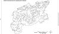 | Схема гидрографической сети Подольского района. Номера на карте соответствуют номерам в тексте. |
14. ДЕСНА (Пахра - Географическая Карта Московской Провинции 1774; Десна, Дёсенка, Пахорка, Малая Пахра, Малая Пахорка - Смол. 1976; Десна - МО 1990, б.н.; Пахорка - Поспелов, 1999 и др.). Самый крупный (левый) приток Пахры. Дл. 89 км. Пл. бассейна в пределах Подольского района 42 кв. км. Образуется слиянием Пахорки (правый и главный исток) и Бутыни в Наро-Фоминском районе. Пахорка, в свою очередь, образуется слиянием Берёзки (правый и главный исток) и {-139-|} Жидеевки. Впадает в Дубровицах. Принимает слева Апрелевку, Незнайку и Сосенку (вне Подольского района), а также Любимчик (Чулковку) и Молодцы (в Подольском районе); справа вне Подольского района - Плесенку, в районе - Студенецкую балку, или Студенец. Бассейн асимметричен: левые притоки значительней правых. На берегах расположены многочисленные населённые пункты, в т.ч. города Апрелевка и Троицк, а также дд. Андреевское, Мостовское, посёлок фабрики 1 мая, дд. Армазово, Студенцы и пос. Ерино.
В первом приближении Десна течёт на восток, но местами значительно отклоняется к северу (близ истока и ниже г. Троицка) или к югу (выше г. Троицка и близ устья), а около д. Армазово на протяжении 3-4 км даже направляется к западу, описывая широкие петли, т.е. не столь "прямолинейна", как Пахра, а потому, начинаясь близ истока Пахры, успевает пройти до встречи с ней более долгий путь. В связи с этим среднее падение реки меньше, чем у Пахры (и Мочи), течёт она медленнее и потому во многих местах кажется шире и мощнее Пахры (см. очерк о Пахре), хотя близ устья уступает ей по этим показателям.
Название реки происходит от славянского слова "десница", т.е. правая рука. Так в славянских землях называются многие левые притоки, которые по мощности и направлению течения сходны с главной рекой (вспомните Днепр и его приток Десну). "Правое" и "левое" в данном случае рассматриваются при движении вверх по реке, как, вероятно, осуществлялось заселение славянами многих речных бассейнов. Просто объясняется также второе название реки - Пахорка: притоки часто получают название по главной реке, но с применением уменьшительного суффикса.
В среднем и нижнем течении долина врезана в известняки и потому сравнительно узка. Берега местами обрывисты и очень живописны. Имеются карстовые воронки и небольшие каменоломни ("пещеры"). Некоторые участки достойны более подробного рассказа. Так, например, ниже Студенцов на правом берегу находится липняк, прорезанный несколькими живописными балками. Липы в диаметре ствола достигают полуметра. В подлеске преобладает лещина, много рябины и черёмухи, есть отдельные экземпляры волчьего лыка. Травяной покров типичен для липняков: много ветреницы лютиковой, медуницы неясной, пролесника многолетнего, осоки волосистой, лютика кашубского, сочевичника весеннего, гнездовки настоящей, сныти обыкновенной, копытня европейского. Такой же покров имеется в неглубоких балках, но местами к перечисленным растениям добавляется хвощ зимующий. На оползающих склонах присутствуют хвощ зимующий, а также колокольчик широколистный и борец высокий - очень декоративные растения. В короткой, но довольно глубокой "висячей" V-образной ложбине весеннего стока близ выхода её на одну из оползневых террас Десны в 1999 г. обнаружены три генеративных белоцветковых побега хохлатки полой, принадлежащих, вероятнее всего, одному экземпляру этого растения. Хохлатка полая - редкий подмосковный вид, внесена в областную "красную" книгу. Много также хохлатки плотной. Она в особенно большом количестве растёт на опушке леса (под его пологом и на лугах) в широкой Студенецкой балке (см.), в чуть меньшем - в низовьях лесных овражно-балочных систем, подходящих к упомянутой балке, а также на оползневых террасах у Десны.
Другой ценный природный объект - Еринский лес, расположенный чуть ниже на левом берегу. К реке подходит крутой уступ с обнажениями известняка - скалами высотой до нескольких метров. Ярко выражен карст: есть многочисленные карстовые воронки в средней и верхней части склона - примерно в тех же участках, где имеются выходы известняка, но выше их. В верхней части склона рельеф в одном месте усложнён древними курганами (вероятно, захоронениями вятичей). Склон прорезан "висячими" ложбинами, по которым к реке сбегают родниковые ручьи (видимо, в средней части склона каменноугольные известняки сменяются моренными или другими отложениями со слоем глин и суглинков - водоупором). Большую часть территории занимает сосняк. Имеются сосны окружностью ствола до 270 см. Это самый старовозрастный сосняк Подольского района. На севере сосняк постепенно сменяется смешанным лесом с преобладанием широколиственных пород. Вблизи рек - фрагменты сероольшаников и ивняков, а также отдельные крупные ракиты и их гибриды с ветлой. Одна из таких ив достигает окружности ствола в 325 см (т.е. диаметр ствола более 1 метра). В подросте присутствуют липа и клён; в подлеске - лещина, черёмуха, бузина. Травяной покров разнообразен и представлен обычными местными лесными травами, но наиболее интересны травы крутых и частично открытых склонов, где преобладают луговые и лугово-степные ксерофильные растения. Многие из них исключительно декоративны: козлобородник, колокольчики персиколистный и скученный, пупавка красильная, гвоздика Фишера, нивяник обыкновенный, короставник полевой, астрагал солодколистный, чина лесная и другие. Внизу местами разрослась ежевика сизая. В тенистых участках декоративны колокольчик широколистный, борец высокий, горошек лесной, петров крест. В лесу выше склона встречается гнездовка. В северной, т.е. "дубравной", части леса на склоне в 1999 г. найдены три генеративных белоцветковых побега хохлатки полой. В большом количестве встречаются крупные тёмные слизни длиной до 10 см. В Ерине из скаважин добывается минеральная вода.
В низовьях Десны иногда удаётся увидеть зимородка, летающего над самой водой. Птица эта внесена в Красную книгу Московской области, так как во многих местах стала очень редкой. Зимородок питается рыбой, а гнёзда делает в норах, для которых выбирает обрывистые берега. Он не выдерживает беспокойства и нарушения приречной растительности, а потому его наличие говорит о высокой степени сохранности данного природного участка. Из интересных приречных птиц здесь наблюдались также белоспинный дятел и кулик-перевозчик.
Очень живописна также стрелка, где сливаются Десна и Пахра. Десна впадает двумя протоками, образуя островок.
ДЁСЕНКА - см. Десна.
15. ДЁСЕНКА (Десенка - ТК 1860, Зд. 1926; Дёсенка - б.н.). Левый приток Чернички (бассейн Нары). Дл. 8 км. Пл. бассейна 25 кв. км. Берёт начало в лесах в 4,5 км восточнее Климовки. Впадает в 1 км южнее д. Климовка. На берегах расположены дд. Дмитровка и Тетеринки. Происхождение названия - см. Десна.
16. ДУБОВКА, или ручей в д. Дубовка (авт.). Правый приток Мочи. Дл. 4 км. Пл. бассейна 5-6 кв. км. Берёт на{-141-|}чало в лесу юго-западнее д. Дубовка и далее протекает вдоль неё. Почти на всём протяжении, кроме приустьевого участка, не имеет постоянного течения, т.е. представляет собой временный водоток в довольно глубокой балке.
17. ДУБОВОЙ [ОВРАГ] (ТК 1848). Подходит справа к р. Пустышке (см.). Дл. несколько сотен метров.
ДЫБЕНКА - см. Рожай.
18. ЖЕСТВЕНКА (Жественка - ТК 1860, Зд. 1926; Тественка? - одна из карт ДСП). Правый приток Петрицы. Дл. 4-5 км. Пл. бассейна 10-11 кв. км. Берёт начало в г. Подольске около Южного микрорайона, где на окраине города имеется пруд, и течёт на запад. В подземном коллекторе пересекает Подольск и имеет в пойме водохранилище на юго-западной окраине города (самый большой водоём Подольска). Далее пересекает д. Северово и впадает в Петрицу близ её устья. Образует почти одну линию с Лубянкой и Чупанкой, что наводит на мысль о возможном существовании в далёком прошлом единого водотока, протекавшего на восток параллельно Пахре и очень давно перехваченного этой рекой в нескольких местах.
19. ЖИЛЕТОВКА (Жилетовка, Желетовка - Смол., 1976; Жилетовка - МО 1990, б.н.). Левый приток Пахры. Дл. 9-10 км. Берёт начало в обширных лесных болотах чуть южнее д. Кукшево в Наро-Фоминском районе. Впадает в с. Былово. Принимает справа по одному притоку с постоянным течением в верхней и средней частях бассейна. На берегах расположены дд. Поляны, Малыгино и с. Былово. Проходит через два небольших пруда (в верхнем течении и близ самого устья). Долина и бассейн в значительной степени залесены. Согласно Г.П. Смолицкой (1976), принимает слева Акуловку, а справа Дыбинку, но достоверно отнести эти сведения к конкретным водотокам не удалось. Для бассейна Жилетовки разработана ландшафтная типология (Низовцев, Носова, 1992), описаны почвы (Карпачевский и др., 1971) и растительность (Бязров и др., 1971; Заугольнова и др., 2000).
20. ЗВАРКОВСКОЙ ОВРАГ (ТК 1860). Подходит справа к Лыковке близ её устья. Залесен. Дл. 3 км.
21. ЗМЕЕВКА или ЗМЕЁВКА? (др.). Правый приток Мочи. Дл. 4 км. Пл. бассейна 3 кв. км. Берёт начало в 2 км к северо-востоку от д. Дмитрово. Впадает напротив с. Ознобишино. Протекает по безлесной местности. Название, вероятно, происходит от неканонического личного имени Змей (Поспелов, 2000). В личном сообщении (В.Н.Никитин) Змеёвка фигурирует также в качестве правого притока Петрицы, то есть в данной местности этот гидроним есть, но достоверно соотнести его с каким-либо водотоком не удалось.
22. КАЛЧЕВ [овраг или ручей] (ТК 1860, Зд. 1926). Левый приток Песочинки. Дл. 3 км. Пл. бассейна 2-3 кв. км. Берёт начало в лесу около поселка ЛМС и проходит через каскад из трёх маленьких прудов, а потом впадает в более крупный пруд на Песочном ручье.
23. КАМЕНКА (Зд. 1926, б.н.). Маленький правый приток Чернички (бассейн Нары). Дл. 4 км. Пл. бассейна 11 кв. км. Берёт начало в лесу в 2 км северо-западнее д. Кузовлёво. Протекает по южной опушке леса. На протяжении первого километра от истока летом пересыхает (балка). Впадает в 1 км ниже д. Кузовлёво близ места впадения Чернички в Нару. Название, вероятно, связано со скоплением валунов в русле: речка стекает с возвышенной Нарской гряды почти к Наре, и на быстринах сохраняются только самые крупные камни - валуны и гальки. Близ речки был (и, возможно, остался) населённый пункт Каменка.
24. КАМЕНКА (Каменка - ТК 1860, Зд. 1926; Никольского ручей - личное сообщение В.Н.Никитина). Правый исток Рогожки. Дл. 10 км. Пл. бассейна 28 кв. км. Берёт начало в 1 км южнее ст. Львовская на южной окраине одноимённого посёлка, но на протяжении первых 4-5 км не имеет постоянного течения, которое начинается только в д. Матвеевское. Близ д. Новосёлки впадает в "двурогий" пруд, дающий начало Рогожке. Принимает слева приток, протекающий через д. Михалицы. Протекает по густо заселённой местности: на берегах расположены пос. Львовский, д. Лаговское, пос. Романцево, дд. Матвеевское, Новосёлки. Сухое летнее русло, вероятно, выложено камнями (валунами и галькой), что явилось причиной возникновения названия.
25. КАНОПЕЛЬКА (Конопелька - Зд. 1926, Абрамович 1946; Канопелька - МО 1990; Канопелька, Конопелька и Конопёлка - б.н.; Лохня? - др.). Значительный правый приток Пахры. Дл. 13 км. Пл. бассейна в пределах Подольского района 22 кв. км. Берёт начало между г. Климовск и д. Бережки в Подольском районе. В среднем течении протекает в Домодедовском районе. Впадает в 1,5 км ниже с. Покров на восточной границе Подольского района. Принимает слева (из Подольского района) небольшой приток в д. Бережки и Чупанку, а справа - короткий лесной приток, запруженный перед устьем. На берегах расположено не менее пяти небольших сельских населённых пунктов и в т.ч. д. Бережки. В верхнем и среднем течении проходит через пруды. Правый берег в среднем течении залесен (вне района). По направлению течения - типичный "исконный" приток Пахры.
26. КАРОВИЙ ОВРАГ (ТК 1848). Подходит слева к р.Пустышке (см.). Дл. несколько сотен метров.
27. КИСЕЛЁВО, ручей (карта ДСП). Левый приток Мочи. Дл. 7 км. Пл. бассейна 11-12 кв. км. Берёт начало из каскада прудов близ Варшавского шоссе чуть западнее д. Киселёво. Ниже этого шоссе проходила ещё через один пруд, ныне спущенный. Далее пересекает лес в восточном направлении. Впадает напротив пос. Привольное, в 2 км севернее с. Сальково. Принимает слева временный водоток. Почти на всём протяжении, кроме приустьевого участка, постоянного течения не имеет, что, возможно, связано с карстовыми явлениями (предположение, нуждающееся в проверке). Долина и бассейн в значительной степени залесены. Долина ручья образует единую линию с долиной Мочи выше д. Акулово, а также с долинами Руденки, Петрицы (самый исток), Раковки, Рогожки, Рожайки (в г. Одинцово) и Гнилуши. Все эти долины могут быть остатками одной из древних долин Мочи, впадавшей непосредственно в р.Москву (другой такой остаток, менее древний, вероятно, находится южнее - Нежка, её приток, верховье Рожайки, Северка).
28. КОЗЛОВА ОВРАГ (ТК 1848). Подходит справа к р.Пустышке (см.).
29. КОЛЫБЯНКА (личное сообщение В.Н.Никитина) Левый приток Мочи. Дл. 6 км. Пл. бассейна 13 кв. км. Берёт начало в болотах в 2 км северо-западнее пос. Курилово. Впадает в д. Сатино-Татарское. Принимает справа запруженный в низовьях водоток, на котором находятся с. Сатино-Русское и д. Овечкино. Выше его впадения главный водоток тоже запружен. Колыбянка {-142-|} течёт на юго-восток, как верхние притоки Мочи (почти против течения современной Мочи), и, возможно, в далёком прошлом впадала в Мочу, протекавшую южнее и впадавшую в р. Москву. Участок долины Мочи от с. Свитино до д. Сатино-Татарское мог быть когда-то нижним течением данной речки.
КОНОПЕЛЬКА (Конопелка, Конопёлка) - см. Канопелька.
КОСТОМАРОВСКИЙ ОВРАГ - см. пункт 81.
30. КРЕМЕНКА (Кремичанная - ТК 1860, Зд. 1926; Кремичанная, Кременка, Кремнишна - Смол., 1976; Кременка - МО 1990, б.н.; Кремишня - Поспелов, 1999). Левый приток Нары. Дл. 16 км. Берёт начало в 1,5 км юго-восточнее разъезда Мачихино в Наро-Фоминском районе. Впадает близ д. Инино в Калужской области. Примерно 2 км проходит по границе Подольского района, принимая слева из него Сорочинку и Лыковку. Название, вероятно, связано со скоплениями валунов в русле: речка, стекая с возвышенной Нарской гряды к Наре, могла обладать быстрым течением, и на быстринах уцелевали только самые крупные камни - валуны и гальки, а песок и глина уносились водой. Указывалось также на сходство названия с рядом балтийских гидронимов (Поспелов, 2000), и в этом случае мы имеем пример переосмысления славянами непонятного для них слова.
КРЕМИЧАННАЯ - см. Кременка.
КУЗЯКИНО, ручей - см. Масловский ручей.
31. ЛОБАШОВА [овраг или ручей] (ТК 1860, Зд. 1926). Правый приток Вороновки. Дл. 4 км. Пл. бассейна 5-6 кв. км. Берёт начало в лесу в 1 км восточнее д. Львово. Проходит восточнее Калужского шоссе, пересекает его и впадает в Вороновские пруды в д. Косовка. Перед шоссе запружен. К пруду справа подходит Хабаров овраг.
32. ЛОБАНОВСКИЙ [ОВРАГ] (ТК 1848). Подходит справа к р.Пустышке (см.). Дл. несколько сотен метров.
33. ЛОПАСНЯ (Лопасня - МО 1990, б.н.; Лопастня - "Московская губерния", год издания карты не указан). Левый приток Оки. Дл. 111 км. Пл. бассейна 1030 кв. км (Всё Подмосковье, 1967). Из них в Подольском районе - 30 кв. км (3% площади района). Берёт начало в 1 км юго-восточнее д.Кресты на Варшавском шоссе. Протекает по Подольскому району около 10 км. В его пределах притоков с постоянным течением, вероятно, не имеет. В с.Богоявление проходит через два крупных пруда и вскоре уходит в Чеховский район. Впадает в Оку у с.Прилуки Серпуховского района. Вне района принимает справа Никажель и Елинку, слева Челвенку и Люторку. На берегах расположены д. Шарапово, город Чехов (Лопасня), дд. Крюково, Хатунь и др. Название балтийского происхождения: от loba, lobas - долина, русло реки (Поспелов, 1999). Балты появились на данной территории до славян и финно-угров, и названия самых крупных подмосковных рек перешли от них к финно-уграм, а потом и к славянам (сравните с названиями других подмосковных рек - Лобня, Лобца, Лобь). Суффикс "ня" добавлен славянами.
ЛОПЕНКА - см. Висенской ручей.
ЛОПЕНЬ.-. см. Висенской ручей.
ЛОХНЯ - см. Канопелька.
34. ЛУБЯНКА (Лубянка - ТК 1860, Зд. 1926, МО 1999, б.н.; Лубянка, Любянка - Смол. 1976). Значительный нижний левый приток Мочи. Дл. 9-10 км. Пл. бассейна 24 кв. км. Берёт начало в лесном болоте в 1,5 км юго-восточнее д. Колотилово. В среднем течении проходит через несколько крупных прудов. Принимает в среднем течении справа и слева небольшие притоки (верхний левый заболочен, нижний левый запружен, впадает в пруд, правый тоже впадает в пруд). Впадает Лубянка в 1,5 км ниже Варшавского шоссе. На берегах расположены д. Пёсье и пос. Щапово. Близ устья на левом берегу имеется карьер. По направлению течения Лубянка соответствует Пахре, в далёком прошлом могла и далее протекать на восток (почти единую линию с её долиной составляют долины Жественки и Чупанки), но была перехвачена Пахрой, причём значительно раньше Мочи. Поэтому можно предположить, что долина Лубянки древнее долины Мочи в с. Ознобишино, д. Троицкое и особенно Русинове. На карте 1860 г. в низовьях реки показан населённый пункт Лубянка, названный по реке или давший ей название. Возможна также связь со словом "луб" или с бытующим на севере словом "лупа" (речной нанос, молодая мель, перекат - Мурзаев, 1984). Не исключено, однако, переосмысление славянами балтийского названия (Поспелов, 2000).
35. ЛЫКОВКА (Смередка - ТК 1860, Зд. 1926; Лыковка - б.н.). Левый приток Кременки (бассейн Нары). Дл. 8 км. Пл. бассейна 23 кв. км. Берёт начало в 1,5 км восточнее с. Васюнино. Впадает в 1.5-2 км ниже устья Сорочинки. Принимает справа в с. Васюнино запруженный приток. На берегах расположены с. Васюнино и д. Лыковка. Название "Лыковка" отнесено на карте 1860 г., а также И.А. Здановским (1926) к левому притоку Сорочинки, но, видимо, по ошибке, т.к. населённый пункт с таким названием находится на данном притоке Кременки. Название "Смередка" может стоять в одном ряду с гидронимами "Смердица", "Смерди" (от "смерд", т.е. крестьянин - Мурзаев, 1984), но может быть искажением гидронима "Смородка" (по смородине или по родникам, т.е. "самородка").
ЛЮБИМЧИК - см. пункт 82.
36. МАКЕЕВКА? (др.). Правый приток Мочи. Дл. 4 км. Пл. бассейна 4-5 кв. км. Берёт начало в д. Дмитрово. Впадает в 1 км ниже д. Батыбино. Протекает по безлесной местности.
МАЛАЯ ПАХОРКА - см. Десна.
МАЛАЯ ПАХРА - см. Десна.
37. МАЛИНОВКА (ТК 1848). Левый приток Пахры. Дл. 3 км. Пл. бассейна 3-4 кв. км. Берёт начало близ Нового Симферопольского шоссе севернее д. Быковка. Впадает в 1 км ниже пересечения этого шоссе Пахрой. Протекает по почти безлесной местности. В верховьях и среднем течении местами запружена.
38. МАСЛОВСКИЙ [РУЧЕЙ] (Масловский ручей - ТК 1860; Зд. 1926; ручей Кузякино? - карты ДСП). Левый приток или исток Сохны. Дл. 4 км. Берёт начало в 2 км к востоку от разъезда Мачихино. Впадает в 3 км к северо-востоку от этого разъезда на высоте 194 м над у.м. (МО 1990). Долина и почти весь бассейн залесены. Обладает, согласно карте 1860 г. (ТК 1860), общей долиной с Мочей. Долина пересекает водораздел (открыта в обе стороны), очень крупна для данных двух водотоков и, по-видимому, унаследована от более мощной древней реки или выдавлена ледником. Название может также рассматриваться в качестве синонима Сохны, так как Масловский лес расположен вдоль р.Сохны ниже устья этого ручья. {-143-|}
39. МЗОВКА (Мзовка - ТК 1860, Зд. 1926; Язовка, Язовенка, Мзовка - Смол., 1976; Язовня - б.н., карты ДСП). Правый приток Пахры. Дл. 6 км. Пл. бассейна 14 кв. км. Берёт начало в 1 км южнее д. Ярцево. Впадает между с. Михайловское и д. Новомихайловское. В среднем течении пересекает лес. На карте 1860 г. в 4 км восточнее Мзовки (на Калужском шоссе близ д. Чириково) один из населённых пунктов назван мызой, т.е. такое понятие было в обиходе в данной местности во время составления карты. Мыза - небольшое имение с сельскохозяйственными постройками (Мурза-ев, 1984). Одна из таких мыз могла быть и на данной речке, от чего вроде бы могло произойти название. Но вероятнее, что оно является искажением гидронима Язовка - от слова "яз" (закол для рыбы).
40. МОЛОДИЛЬНЯ (Молодильня - ТК 1860, Зд. 1926; Молодильня, Малоделна, Рябенка? - Смол. 1976). Значительный правый приток Мочи. Дл. 9 км. Пл. бассейна 22 кв. км. Берёт начало в лесу на возвышенном москворецко-окском водоразделе чуть юго-восточнее д. Старогромово. Всё время довольно прямо течёт на север с некоторым отклонением к востоку. Впадает между с. Ворсино и д. Чириково. Принимает слева в д. Коротыгино Ярышенский ручей, или овраг, который можно рассматривать и в качестве левого истока. На берегах расположены дд. Коротыгино и Лукошкино, в которых речка запружена. Долина в наибольшей степени залесена вблизи устья. Название, вероятно, происходит от от слов "молодель", "молодь", т.е. молодая лесная поросль (Поспелов, 2000).
41. МОЛОДЦЫ (ТК 1948, Зд. 1926, карты ДСП). Левый приток Десны. Дл. 3-4 км. Пл. бассейна 10 кв. км. Берёт начало в г. Щербинка, на окраине которой в пруду сливаются три ручья (главный исток подходит с севера). Впадает напротив посёлка фабрики 1 мая. На берегах расположены г. Щербинка, дд. Старое Сырово, Молодцы. Пруды, кроме того, имеются на правом и левом истоках, а также близ устья главного водотока. Течёт против течения Десны, что даёт повод для предположения, что данный водоток унаследовал часть её прежней долины.
42. МОЧА (Моча - МО, 1990; Моча, Моченька - б.н.). Крупнейший правый приток Пахры. Дл. 58 км (по другим данным 63). Пл. бассейна 482 кв. км (Всё Подмосковье, 1967), т.е. 45% площади района. Берёт начало в длинном и узком Семидонном болоте в 1,5 км к северо-западу от пл. 252 км на высоте порядка 190 м над у.м. Впадает в 1 км выше пос. Дубровицы на высоте 125 м над у.м. (МО 1990). Общее падение - примерно 65 м, среднее - чуть более 1 м на километр. Принимает справа Булгаковский овраг, Вороновку, Песочинку, Молодильню, ручей в Дубовке, Волченок, Нежку, Руденку, Макеевку, Змеевку и Петрицу; слева - Безымку, Поляницу, Бабинской ручей, Олешенской ручей, ручей Товарищева, ручей Киселёва, речку в Курилове и Лубянку. В верхнем течении, вероятно, имеет приток - Шубинский ручей, но, возможно, так иногда называют сам исток Мочи близ кварталов 44 и 45 Калининского лесничества. Протекает по густо заселённой и местами безлесной местности (близ впадения Поляницы и в низовьях). Имеет на берегах следующие населённые пункты: с. Свитино, д. Юрьевка, д. Безобразово, д. Бакланово, с. Ворсино, д. Чириково, д. Акулово, д. Дубовка, д. Давыдово, д. Починки, пос. Клёново, с. Свитино, с. Сальково, д. Сатино-Татарское, д. Троицкое, д. Батыбино, с. Ознобишино и др. В прошлом в нижнем течении был город Перемышль (Перемышль Московский); сохранилось городище - "Городок", теперь здесь спортбаза (Латышева, Рабинович, 1973). Сток в верхнем и среднем течении частично (хотя и не в очень большой степени) зарегулирован множеством прудов на притоках и Юрьевским водохранилищем на самой Моче. Аналогичную роль выполняет и Семидонное болото. В верховьях Юрьевского водохранилища в 1999 г. гнездились пара болотных луней и три пары сизых чаек, была небольшая колония чёрных крачек.
Долина Мочи в верхнем течении, в т.ч. близ самого истока, характеризуется огромным размахом - слишком широка и глубока для столь маленького водотока, а, кроме того, открыта в обе стороны ("открытая долина"). Её пологие склоны постепенно переходят в моренные холмы. Уплощённое днище долины заболочено и образует так называемое Семидонное болото шириной порядка 100-150 м и длиной несколько километров. Болото заросло чёрной ольхой, и пересечение его, по словам местных жителей, представляет большую опасность. По середине болота проходит довольно широкое русло, заполненное водой круглый год (вероятно, траншея), но течения в летнее время практически нет. В 1999 г. движение воды не удалось заметить даже 23 апреля. Маломощный и спокойный исток Мочи сам не мог выработать столь грандиозную долину, и потому логично предположить, что долина унаследована от более крупного водного потока, пересекавшего в прошлом современный водораздел, или же она выдавлена ледником. Долина Мочи постепенно переходит в долину Малинского ручья, впадающего в Сохну (или в долину самой Сохны, если считать этот ручей за её исток). Днище долины Мочи расположено на несколько метров ниже, чем днище долины соседней реки Сохны, пересыхающей летом в верховьях и берущей начало в пределах того же водораздельного повышения (МО 1990). Этим тоже подтверждается принципиальное различие долин этих рек. В связи с этим можно высказать предположение о возникновении соответствующих названий: они даны в противоположность одно другому - Сохна от "сохнуть", а Моча от "мокнуть", т.е. имеют славянское происхождение, а не унаследованы от балтийских или финно-угорских племён, как названия многих других относительно крупных водотоков Подмосковья. Подобное происхождение названия "Моча" (сырость, влага, мокрота) признаётся и другими исследователями (Мурзаев, 1984; Поспелов, 1999), хотя нам не приходилось видеть в литературе противопоставления названий Мочи и Сохны.
Подступающие к пойме р.Мочи поля являются хорошими кормовыми угодьями для целого ряда хищных птиц (например, 23 апреля 1999 г. в течение двух часов здесь наблюдались самка и самец лугового луня, самка и самец канюка, коршун и ещё две хищные птицы, видовую принадлежность которых установить не удалось). Не исключено, что некоторые из этих птиц могут гнездиться в старых черноольшаниках, а это означает, что черноольшаниковые топи можно рассматривать как хорошее укрытие для гнёзд целого ряда охраняемых в Московской области видов птиц (луговой лунь, например, внесён в Красную книгу Московской области).
На участке от с. Свитино до д. Чириково общее падение Мочи составляет 22 м (186-164=22; МО 1990), а среднее - 1,2 м на километр, т.е. река обладает здесь довольно быстрым течением, примерно таким же, как Пахра выше Подольска. Река на этом участке течёт на восток, согласно общему наклону Пахринской равнины к р.Москве. {-144-|}
Перед пос. Клёново Моча сначала начинает чуть-чуть отклоняться к югу, проявляя сходство в направлении течения с истоками Рожайки и Северки, а потом резко поворачивает на север и устремляется напрямик к Пахре. Такое поведение реки позволило предположить, что верховья Мочи позднее присоединились к бассейну Пахры (Даньшин, 1947), и в далёком прошлом Моча и далее протекала в восточном и юго-восточном направлении, составляя единое целое с истоками Рожайки и Северки, т.е. являлась самостоятельным притоком р. Москвы, а потом была "перехвачена" Пахрой. Пахра, протекавшая по самому центру вогнутой Пахринской равнины, обладала более низким базисом эрозии и "подкопалась" под Мочу одним из своих правых притоков, ставшим теперь нижним течением Мочи, причём сначала мог быть перехвачен левый приток Мочи, протекавший через нынешние пос. Курилово, д. Сатино-Татарское и с. Сальково. Кроме того, сама Моча, протекая вдоль москворецко-окского водораздела и в большей степени подмывая левый берег, могла медленно "сползать" к Пахре всей своей долиной. Подобное "сползание" речных долин на наклонной поверхности хорошо известно (Апродов, Апродова, 1963). Отсюда следует, что ниже пос. Клёново Моча обладает более молодой долиной, чем в среднем и верхнем течении.
До перехвата Пахрой Моча могла в разное время протекать различными путями: наиболее древний - ручей Киселёва, Руденка, самое верховье Петрицы, Раковка, Рогожка, небольшой участок Рожайки, Гнилуша, Северка; последующий - Нежка, её правый приток, верховье Рожайки, её приток в д. Троицкое, Северка. Выше д. Акулово река издавна протекала примерно там же, где сейчас. Этот участок долины наиболее старый и, возможно, унаследован от древнего (доледникового или даже доюрского) более мощного потока, который мог пересекать современный водораздел.
Для бассейна Мочи характерны поднятия доюрского рельефа наибольшей высоты; здесь на поверхность во многих местах выходят известняки каменноугольного возраста и наблюдаются различные карстовые явления. Так, например, у д. Троицкое в нижнем течении Мочи известняки перекрыты лишь тонким слоем четвертичных отложений и лишены покрова из юрских глин. Имеются карстовые воронки и поноры, в которые летом уходит вода небольших ручьёв. Поэтому ручьи крайне маловодны или полностью пересыхают.
МОЧЕНЬКА - см. Моча.
НАРА - левый приток Оки. Дл. 156 км. Пл. бассейна 2170 кв. км (Всё Подмосковье, 1967). Из них в Подольском районе - 160 кв. км (15% площади района). Протекает вне Подольского района, но принимает с его территории два относительно крупных притока - Кременку и Черничку. Название балтийского происхождения: по-литовски, например, nara - "поток" (Поспелов, 2000).
43. НЕЖКА (Нежка - Зд. 1926, Смол. 1976; Трешня - карты ДСП; Быстрянка? Быстрица? - личное сообщение В.Н.Никитина). Значительный правый приток Мочи. Дл. 12 км. Пл. бассейна 55 кв. км. Берёт начало в лесу между дд. Чернецкое и Вяткино или даже в самой д. Чернецкое (в виде временного водотока). Впадает в д. Свитино, причём в точности в том месте, где Моча круто поворачивает на север к Пахре. Принимает справа и слева по одному сравнительно крупному притоку. На берегах расположены дд. Чернецкое (?), Вяткино, Жохово, Зыбино и Свитино. В дд. Зыбино и Свитино запружена. На Зыбинском пруду гнездятся 2-3 пары сизых чаек. В д. Зыбино река резко меняет направление течения с северо-восточного на северо-западное (как бы "впадает" в свой правый приток). Если предположение о сравнительно недавнем повороте Мочи к Пахре правильное, то в прошлом Моча могла протекать по долине Нежки и далее по долине её правого притока в направлении к истокам Рожайки, т.е. в направлении, противоположном современному течению этих двух водотоков. Такие повороты рек в связи с их прорывом в новый бассейн и резким понижением базиса эрозии хорошо известны, хотя применительно к данному случаю это явление нуждается в подтверждении и конкретизации. Гидронимы Быстрянка и Быстрица могут относиться к несколько иному водотоку: к притоку Нежки или только к её нижнему течению и другому истоку.
НИКОЛЬСКОГО ручей - см. Каменка (правый исток Рогожки).
44. ОЛЕШЕНСКОЙ [ручей или овраг] (Олешенской - ТК 1860, Зд. 1926; Олешинской, Алешенка - Смол. 1976; Алешинка - карта ДСП). Левый приток Мочи. Дл. 6 км. Пл. бассейна 13 кв. км. Берёт начало в лесу в 1,5 км северо-западнее Никольского. Впадает напротив с. Ворсино. Представляет собой систему из двух примерно одинаковых по размеру сливающихся постоянных водотоков, которые впадают в "двурогий" пруд: правый водоток - Улупинка (или Улутенка), левый - либо Олешинской ручей (овраг), либо имеет и другое название. На берегах Улупинки расположена д. Голохвастово, на истоке Олешинского ручья - с. Никольское. Название либо владельческое, либо указывающее на характер растительности, что в данном случае вероятнее: "Олешенками" или "Алешенками" названы многие подмосковные речки, текущие в ольшаниках.
45. ОРАНКА (Оранка? - б.н.; Арапка, Оранка, Аранка, Аринка - Смол., 1976). Левый приток Пахры. Дл. 3 км. Пл. бассейна 3 кв. км. Находится чуть западнее д. Красная Пахра и представляет собой вытянутое понижение, почти полностью превращённое в каскад из двух прудов. Выше прудов сбрасываются загрязнённые тёплые воды с очистных сооружений Троицка. Ниже пруда имеется короткий незамерзающий водоток длиной порядка 200 м. Здесь и в Пахре, которая не замеразает ниже устья Оранки, зимует до нескольких десятков уток-крякв (вероятно, единственная зимовка в Подольском районе). Название, возможно, стоит в одном ряду с топонимами "Оранки", "Ораницы", "Оранное", "Ораны" и т.п. ("ораница" - пахотная земля на участках бывшего леса, пашня, т.е. существительное от глагола "орать" в смысле "пахать" - Мурзаев, 1984). Изначально название могло относиться к чуть более мощному соседнему водотоку, впадающему в Пахру выше.
ПАХОРКА - см. Десна.
ПАХОРКА - см. Пахра.
ПАХАРСКОЙ РУЧЕЙ - исток Саловки (Безымки) (см.).
ПАХОРСКОЙ РУЧЕЙ - исток Саловки (Безымянки) (см.).
46. ПАХРА (Пахра - МО 1990; б.н.; Пахорка в верховьях). Самый крупный (правый) приток Москвы. Дл. 135 км или, по другому источнику, 129 км. Спрямлённая дл. долины 84 км. Пл. бассейна 2690 кв. км или 2720 кв. км. Из них в Подольском районе - примерно 900 кв. км (82% площади района). Средний многолет{-145-|}ний расход воды в устье примерно 0,5 куб. км/год. Минимальный зарегистрированный летний расход воды в Макарове (чуть ниже Подольска) 0,5 куб.м/с; максимальный 575 куб.м/с. Густота гидрографической сети в среднем течении до 50 км на 100 кв. км. Река берёт начало в лесах западнее ст. Рассудово Киевской ж/д в Наро-Фоминском районе Московской области. В верховьях называется Пахоркой и на протяжении первых 6-7 км не имеет постоянного течения. Далее до самого устья относительно прямо течёт на восток. Впадает между с. Нижнее Мячково и с. Зелёная Слобода восточнее Подольского района (МО 1990). Обладает почти симметричным водосборным бассейном, что выражается в примерном равенстве правых и левых притоков, впадающих один против другого (Моча и Десна, Рожайка и Битца). Площадь бассейна правого берега равна 1470, левого - 1220 кв. км. Принимает 230 зарегистрированных притоков (Всё Подмосковье, 1967) и в т.ч. справа Ладырку, Сохну (вне района), Мзовку (Язовню), Страданку, Понасовку, Мочу, Канопельку (в районе), Рожайку и Жданку (вне района); слева - Рассудовку, Черемошку (вне района), Жилетовку, Оранку, Десну, Неумейку, Висенской ручей, Малиновку, Гнилицу, Селешний овраг, Улыбин овраг, Гвоздянку, Битцу (в районе), Туровку (вне района) Является наиболее мощной рекой Подольского района и самым крупным по водосборной площади притоком р. Москвы. Характеризуется относительной прямизной русла, что объясняется пересечением в пределах Подольского района и ниже известняков (а не глин и песков), а также относительной прямизной долины, что объясняется её древностью и срединным положением в пределах Пахринской равнины (река давно текла здесь, по центру вогнутой равнины, и её течение не могло перехватиться другими реками). Отличается сравнительно быстрым для крупных подмосковных рек течением, что связано с "зарождением" на возвышенной Нарской гряде и стеканием к Мещерской низменности по относительно прямым руслу и долине. Имеет на берегах следующие населённые пункты: Пахорка, Яковлевское, Кузнецово, Долгино, Фёдоровское, Игнатово, Новиково (вне района), Плесково, Лужки, Секерино, Михайловское, Новомихайловское, Шишкин Лес, Юрово, Городок, Былово, Красная Пахра, Красное, Софьино, Шаганино, Поливаново, Дубровицы, Подольск, Быковка, Покров, Макарово, Ворыпа-ево (в районе), Заболотье, Домодедово (сельский населённый пункт), Павловское, Белеутово, Ям, Новое и Старое Сьяново, Новленское, Чурилково, Шестово, Колычево, Володарский, Большая и Малая Володарка, Зелёная Слобода (вне района). Русло выше впадения Мочи шириной 15-20 м, ниже г. Подольска - от 30 до 40 м. Пойма шириной 100-200 м (Всё Подмосковье, 1967). Островов очень мало, обычно они приурочены к бывшим или действующим плотинам, а также к устьям притоков - Канопельки, Рожайки. Есть остров в устье Десны.
Бассейн Пахры сложен осадочными породами каменноугольного, юрского и мелового возрастов, которые перекрыты четвертичными отложениями, в т.ч. ледниковыми. Для четвертичных отложений особенно характерны суглинки, которые имеют наибольшее значение в верхней части бассейна, являясь водоупорным горизонтом. С ними связана заболоченность водораздельных пространств. Самые маленькие притоки среднего течения Пахры и почти все притоки её верхнего течения протекают по четвертичным отложениям (в основном, ледниковым). Ниже по всему бассейну (кроме низовий рек) залегают юрские отложения, для которых очень характерны чёрные глины, тоже водоупорный горизонт. Юрские глины залегают на неровностях доюрского рельефа, и по их смоченной поверхности выше лежащие пласты могут постепенно соскальзывать к рекам, формируя оползневой рельеф. Оползни, развитые на юрских глинах, особенно характерны для подмываемого правого коренного берега Пахры на участке от Подольска до устья: иногда возникают несколько оползневых террас (псевдотеррас). Выше г. Подольска встречаются участки с оползнями на четвертичных суглинках. Меловые отложения (в основном, пески) встречаются в бассейне Пахры только отдельными пятнами, т.к. содраны ледниками, смыты их талыми водами, а также реками. Юрские и меловые отложения обычно отсутствуют в низовьях рек (смыты), а также в местах поднятия доюрского рельефа. В этих случаях на поверхность выходят известняки каменноугольного возраста, что является специфической особенностью Южного Подмосковья и в т.ч. бассейна Пахры. Для таких мест характерны различные карстовые явления: воронки, поноры, пещеры, особое поведение небольших водотоков и т.п. Карст часто связан с деятельностью человека: пещеры - это в той или иной степени преобразованные природой древние каменоломни и т.д. Одна из пещер близ д. Красная Пахра считается естественной, но в конце XVIII в. В.Зуев указывал на штольневую добычу известняка в этих местах (Даньшин, 1947). Для микрорельефа склонов Пахры характерны действующие и заброшенные каменоломни, вдающиеся в склоны в виде цирков (Даньшин, 1946). Многие маленькие притоки Пахры, попадая на сложенные известняками приречные террасы, в летнее время начинают терять воду и не добегают до устья. Вода полностью уходит в небольшие карстовые воронки. Тем не менее, бассейн Пахры расположен в пределах Подмосковной котловины, где известняки содержат напорные артезианские воды. Вследствие этого характерный для данной местности карст не приводит к потерям воды: глубинные подземные воды в некоторых случаях могут даже подниматься, пополняя верхние водоносные горизонты. Поэтому можно считать, что потери вод поверхностными водотоками близ их устья носят местный характер: вода подземным стоком сбрасывается в ту же реку, на берегу которой находится нормальное (весеннее) устье.
Долина Пахры в верховьях имеет вид плоского неглубокого понижения, что связано с рыхлостью четвертично-мезозойских отложений, через которые протекает река (Даньшин, 1947). На 25-30 км от истока берега поднимаются, и река вступает в узкую и глубокую долину. Здесь, от устья Сохны или чуть ниже его, река начинает пересекать известняки, и берега становятся обрывистыми (например, правый берег в г. Подольске) (Даньшин, 1947; Всё Подмосковье, 1967). Выше г. Подольска ширина долины редко достигает 1 км, и коренные берега поднимаются над ней на 25-30 м. Чуть шире она на участке от д. Красная Пахра до пос. Ерино, где пересекается Троицко-Любучанская тектоническая впадина; особенно узка - от пос. Ерино до г. Подольска в пределах Ватутинского поднятия (Апродов, Апродова, 1963). Ниже г. Подольска, от устья Конопельки до устья Битцы, расположено Битцевско-Рожайское расширение долины шириной до 3 км и длиной около 9 км (петляя, река проходит по нему 17 км и находится сначала у правого коренного берега, потом у левого края долины). Ни{-146-|}же д. Белеутово долина опять сужается, река придерживается правого коренного берега, вдоль русла тянутся прирусловые песчаные валы высотой 0,5-0,7 м. В самых низовьях Пахры её долина вместе с долиной р. Москвы образует озеровидное расширение (Апродов, Апродова, 1963). Причину сужений и расширений долины видели в разном её возрасте, т.е. расширение ниже г. Подольска является древней формой рельефа со своим путём сброса вод, или в разном характере вертикальных движений земной поверхности, т.е. расширения соответствуют опускающимся участкам, которые заполнены речными наносами; сужения - поднимающимся, где река глубже врезается в породы (Апродов, Апродова, 1963).
В далёком прошлом р. Москва перехватила нижний участок русла Пахры и поэтому ниже её устья резко поворачивает на северо-восток, как бы впадая в Пахру.
Выше г. Подольска долина Пахры в значительной степени залесена: в верхнем течении преобладают мелколиственные леса с "островками" хвойного и смешанного леса, есть вязовники, от д. Красная Пахра до г. Подольска - мелколиственные и широколиственные леса, тоже есть вязовники. Ниже г. Подольска территория почти безлесая (в пределах Битцевско-Рожайского расширения долины), а в самых низовьях (за пределами Подольского района) вдоль реки имеются леса разного состава, в т.ч. березняки, сосняки и дубравы. В некоторых местах река подпружена, хотя сколько-нибудь значительные водохранилища отсутствуют.
Пахра - самая мощная река Подольского района, одна из двух наиболее значимых его рек, самый большой приток р. Москвы по мощности и площади водосбора, а по длине уступает только Рузе и Истре. Начинается Пахра в пределах Смоленско-Московской возвышенности (Даньшин, 1947), а точнее на Нарской гряде (водоразделе Москвы и Оки) на некотором удалении от холма высотой 230 м над уровнем моря (Атлас СССР, 1954). Высота района истока составляет 211 м. В истоках, выше впадения Рассудовки, она обычно называется Пахоркой и на протяжении первых 6-7 км является временным водотоком (изм; МО 1990), протекая в слегка заболоченной ложбине, а затем в неглубокой залесенной балке. Постоянное течение начинается в 3-4 км западнее Киевской ж/д на высоте порядка 190 м над уровнем моря. Начиная от этого места, река на всём протяжении течёт почти прямо на восток, являясь одной из самых "прямолинейных" подмосковных рек (при этом, разумеется, речь идёт не о русле реки, которое всё равно петляет по долине, а об общем направлении долины).
Впадает Пахра в р.Москву на высоте 110 м над уровнем моря, т.е. на 120 м ниже вершины холма, близ которого берёт начало, на 101 м ниже своего истока и примерно на 80 м ниже точки, откуда начинается её постоянное течение. Общее падение реки составляет 101 м, среднее - 0,75 м на 1 км длины. Общее падение на участке с постоянным течением - примерно 80 м, среднее - примерно 0,6 м на 1 км. По этому показателю Пахра превосходит многие относительно крупные реки Подмосковья и в т.ч. свой левый приток Десну, а поэтому характеризуется чуть большей средней скоростью течения, чем последняя. Можно также напомнить для сравнения, что средний уклон р. Москвы от г. Звенигорода до устья, составляющий 12 см на 1 км, примерно в 7 раз меньше, чем у Пахры. Действительное падение Пахры на отдельных участках сильно отличается от среднего, увеличиваясь до 1 м на километр и выше, в результате чего и создаётся "бурное течение реки, напоминающее горный поток".
Существует ещё одна причина относительной "прямолинейности" Пахры, причём применительно к руслу реки, а не только к её долине. Пахра, как уже говорилось, в среднем и нижнем течении прорезает известняки каменноугольного периода, а реки, текущие в известняках, петляют по долине чуть меньше, чем пересекающие глины и пески. Дело в том, что подмываемые рекой песчаные и глиняные берега легче оползают к реке, чем известняковые. Поступающий в реку материал перегораживает её и заставляет искать обходные пути. Так в пойме реки образуются широкие петли. Такие петли (меандры) особенно характерны, например, для р.Москвы в городе Москве и выше города, где река течёт в глинах юрского периода с расположенными выше меловыми песками и ледниковыми отложениями. Известняки же не оползают, а медленно растворяются и уносятся водой, не подпруживая реку. Поэтому Пахра, если бы протекала преимущественно среди глин и песков, петляла бы ещё больше. Среднее значение коэффициента извилистости Пахры - 1,6.
Происхождение названия реки не выяснено (Поспелов, 1999). Название принадлежит к серии топонимов с топоформантом "хра" (Вичехра, Сухра и др.), но его значение мы не знаем. Также обращает на себя внимание огромное сходство гидронимов "Пахра" и "Пехра", или "Пехорка" (левый приток р. Москвы, впадающий напротив Пахры). Есть некоторое сходство и с гидронимами "Нара" (приток Оки), "Отра" (более нижний правый приток р.Москвы). По-видимому, все эти названия даны одним и тем же народом (племенем), населявшим в древности данную местность. Ясно также, что это произошло в дославянские времена, и пришедшие позднее славяне переняли уже бытовавшее название.
47. ПЕСОЧИНКА (Песочной ручей - Зд. 1926; Песочинка - Смол. 1976; Саловка, Соловка - карты ДСП). Значительный правый приток Мочи. Дл. 8 км. Пл. бассейна 20 кв. км. Берёт начало в 1 км южнее д. Ясенки. Пересекает шоссе в д. Ясенки и далее превращён в каскад из 5 значительных по размеру прудов. Впадает в 1 км выше с. Ворсино. Принимает справа Калчев овраг (или ручей), слева два маленьких притока с прудами на них. На берегах расположены д. Ясенки, пос. ЛМС, д. Юдановка и с. Покровское. Бассейн густо заселён, и лес в его пределах, в основном, сведён. Пруды привлекательны для пролётных водоплавающих и околоводных птиц.
48. ПЕТРИЦА (Петрица - МО 1990, б.н.). Значительный нижний правый приток Мочи. Дл. 14 км. Пл. бассейна 58 кв. км. Берёт начало в д. Большое Толбино близ пос. Львовский. Впадает юго-западнее г. Подольска. Принимает справа Жественку, слева - Рожай. На берегах расположены д. Большое Толбино, г. Климовск, дд. Сергеевка и Бородино. Близ истока и ниже д. Сергеевка пересекает небольшие лесные массивы. В г. Климовск долина частично застроена и сильно трансформирована, имеется не менее трёх прудов. До перехвата Мочи Пахрой Петрица могла быть самостоятельным притоком Пахры, потом её левый приток (нынешняя Моча в Русинове, д. Троицкое и с. Ознобишино), веро{-147-|}ятно, "подкопался" под приток Мочи в пос. Курилово, а затем и под саму Мочу, став главным водотоком.
49. ПОЛИВАНОВСКАЯ РЕЧКА (авт.). Левый приток Пахры. Дл. 6 км. Пл. бассейна 14 кв. км. Берёт начало в 3 км северо-восточнее д. Красная Пахра. Впадает в пос. Поливаново.
50. ПОЛЯНИЦА (Поляница, Пальница - Смол., 1976; Поляница - МО 1990; б.н.). Значительный по длине левый приток Мочи. Дл. 8-9 км. Пл. бассейна 15 кв. км. Берёт начало в 0,5-1 км юго-восточнее д. Акулово. На всём протяжении течёт почти прямо на юго-восток. Впадает в 1,5 км ниже д. Безобразово. Бассейн узкий, и потому сколько-нибудь значительные притоки отсутствуют (система ложбин подходит справа к водохранилищу в истоках, а также слева из леса в среднем течении). На берегах расположены дд. Сипягино и Рыжово. В верхнем течении широкое днище долины почти везде заболочено, в результате чего образовалось узкое длинное болото Большая Поляница ("Бол. Полиница" - ТК 1860; "Пальница" - Бухгольц, 1900; "бол. Б. Полиница" - Зд. 1926), изначально сходное с аналогичным объектом в истоках Мочи (см.), но сильно разработанное (многочисленные карьеры, связанные протоками). Болото частично подпёрто плотиной в д. Сипягино (выше основного Сипягинского пруда). На болоте в последние годы образовалась колония серых цапель. Долина велика для столь маленькой речки: унаследована от более мощного древнего водотока или выдавлена ледником. Продолжением долины на северо-запад является долина Силенки, т.е. Поляница и Силенка обладают общей открытой долиной, пересекающей современный водораздел (Даньшин, 1947). Близ д. Сипягино находится обширный Сипягинский пруд. На Сипягинском пруду гнездятся три-пять пар сизых чаек, отдельные пары речных и чёрных крачек. По выходе из пруда речка обладает постоянным течением (т.к. в болоте и водохранилище запасён большой объём талых и дождевых вод), но в летнее время маловодна. Далее долина Поляницы на протяжении 1,5 км частично залесена (на левом берегу лес, на правом - цепочка закустаренных полян). Далее речка течёт среди полей. В д. Рыжово и ниже его имеется каскад из нескольких узких рыборазводных прудов. На них в 2000 г. сформировалась довольно большая колония чёрных крачек. Открытые участки долины являются хорошими охотничьими угодьями для некоторых видов хищных птиц - чёрного коршуна, канюка, ястреба-перепелятника, лугового, полевого и болотного луней. Связь со словом "поле" в названии речки может быть кажущейся; вариант "Пальница", приводимый Ф.В.Бухгольцем (Естественноисторическая коллекция Михайловского музея. Гербарий. М. 1900), указывает на связь со словом "пал", т .е. по "горелому" болоту в истоках речки.
51. ПОНАСОВКА (Понасовка - ТК 1860, др.; Понизовка? - предположение авторов). Правый приток Пахры. Дл. 3 км. Пл. бассейна 4-5 кв. км. Берёт начало в 1 км северо-восточнее д. Колотилово. Впадает между дд. Софьино и Шаганино. Вблизи расположена д. Кузенево. Вероятно, летом пересыхает. Название могло произойти от слова "понизовка" ("низменное место", "местность по нижнему течению реки" - Мурзаев, 1984), а также иметь связь с распространённым гидронимом "Пониковка" ("поникающая" речка, т.е. уходящая в карстовую воронку - Поспелов, 1999). Оба объяснения логичны для маленькой речки, текущей в пределах низменной и закарстованной долины р.Пахры. Искажения могли возникнуть при неправильной записи картографами народного названия и при ошибочном прочтении названия на старой карте. Г.П.Смолицкая (1976) называет Понизовкой соседний водоток (Страданку), но, вероятно, по ошибке.
ПОНИЗОВКА - см. Понасовка и Страдань.
52. ПОПОВ ОВРАГ (ТК 1848). Подходит справа к р.Пустышке (см.). Дл. несколько сотен метров.
ПОХРЯНКА - см. Десна.
53. ПРИТОК ПАХРЫ В ШИШКИНОМ ЛЕСУ. Левый приток Пахры. Дл. 4 км. Пл. бассейна 4 кв. км. Берёт начало в лесу в 2 км севернее д. Секерино в Наро-Фоминском районе. На протяжении первых 2 км не имеет постоянного течения. Проходит через 2 небольших пруда (в верхнем и среднем течении). Впадает у пересечения Пахры окружным шоссе.
54. ПРИТОК ПАХРЫ ВЫШЕ УСТЬЯ ВИСЕНСКОГО РУЧЬЯ (Неумейка? - одна из карт ДСП). Левый приток Пахры. Дл. 3 км. Пл. бассейна 3-4 кв. км. Берёт начало в 1 км восточнее пл. Силикатная. Впадает в 1 км выше моста нового Симферопольского шоссе. Имеются два пруда (в верхнем и среднем течении).
55. ПРИТОК ПАХРЫ НИЖЕ УСТЬЯ ЖИЛЕТОВКИ (Оранка? - карты ДСП, личное сообщение Мазохина). Левый приток Пахры. Дл. 5 км. Пл. бассейна 8 кв. км. Берёт начало в лесных болотах в 2 км севернее д. Поляны. Впадает в 0,5 км выше моста Калужского шоссе через Пахру. На берегах расположены дачные посёлки нового времени. Долина (особенно по правому берегу) залесена. Вероятно, именно этот водоток правильно называть Оранкой, но в сознании местных жителей данный гидроним переместился на соседний каскад прудов (см. Оранка).
56. ПУСТЫШКА (ТК 1848, карты ДСП). Правый приток Гвоздянки. Дл. 3-4 км. Пл. бассейна 6-7 кв. км. Берёт начало у нового Симферопольского шоссе в 1,5 км северо-восточнее с. Захарьино. Течёт на восток и впадает в д. Яковлево (в пруд). Справа к Пустышке подходят овраги Козлова (южнее Мельцова), Попов (напротив Спирова или чуть выше его), Дубовый (чуть ниже Спирова), Арининский и Лобановский (оба ниже селения Спирово и выше устья Сысоева оврага); слева - Каровий (чуть выше Спирова), Бабарыкинский (чуть ниже Спирова) и Сысоев в низовьях (ТК 1848). На берегах расположена д. Спирово. Крайне маловодна, в засушливые годы пересыхает почти до самого устья, что, возможно, послужило поводом для названия. Но название может происходить и от слова "пустошь" (безлюдное урочище, заброшенная земля - Мурзаев, 1984). Протекает в довольно большой долине (своей или "чужой"?) среди густо рассечённой "оврагами" (балками) местности.
57. РАЗСАСИНСКИЙ ОВРАГ (ТК 1860, Зд. 1926, Смол. 1976). Подходит справа к Рогожке близ её устья. Дл. 3 км. Начинается в Подольском районе, кончается - в Домодедовском. Пересекает с. Ивановское.
58. РАКОВКА (ТК 1860, Зд. 1926). Левый исток Рогожки. Дл. 6 км. Пл. бассейна 16 кв. км. Берёт начало в болоте на южной окраине г. Климовска, проходит через длинный "двурогий" пруд и в д. Новосёлки впадает в пруд, дающий начало Рогожке.
РОГОЖА - см. Рогожка.
59. РОГОЖКА (Рогожка и Рогожа - ТК 1860; Рогожа - Здановский, 1926; Рогожка - МО 1990, б.н.). Самый крупный левый приток Рожайки. Дл. 17 км (с правым {-148-|} истоком Каменкой) или 13 км (с левым истоком Раковкой). Пл. бассейна 72 кв. км. Собственно Рогожка (без Каменки и Рыковки) начинается из пруда в д. Новосёлки. Впадает в с. Ивановское за пределами Подольского района. Принимает справа близ устья Разсасинский овраг с временным водотоком. На берегах расположены пос. Сынково, д. Хрястлово, с. Ивановское. Долина в нижнем течении в значительной степени залесена. Название происходит от русского народного ботанического термина "рогоз", которым обозначалась совокупность высоких болотных трав (Поспелов, 1999, 2000).
РОЖАЙ - см. Рожайка.
60. РОЖАЙ? (Рожай - карта ДСП; Дыбенка? - др.). Левый приток Петрицы. Дл. 5 км. Пл. бассейна 9-10 кв. км. Берёт начало в 1 км северо-восточнее д. Лучинское. Течёт на северо-восток через д. Сертякино по окраине г. Климовска и впадает в д. Сергеевка (в пруд на Петрице). Перед устьем тоже запружен и принимает слева в д. Сертякино маленький запруженный приток.
61. РОЖАЙКА (Рожай - ПЦГМ, 1763; Рожая - ТЛ 1860, Всё Подмосковье, 1967; Рожая и Рожой - Зд. 1926; Рожайка - МО 1990; Рожайка, Рожай, Рожая - б.н.; Тюнюкова в качестве истока Рожайки - ТК 1860; Тюнюковка в качестве истока Рожайки - др.). Второй по длине и мощности правый приток Пахры. Дл. 51 км (по другим данным 55). Пл. бассейна 424 кв. км. (Всё Подмосковье, 1967). Из них в Подольском районе - около 100 кв. км. Берёт начало в Подольском районе близ его границы в 3 км северо-западнее ст. Столбовая (если считать главным левый исток в д. Змеевка) или вне района в 1,5 км к юго-западу от этой станции (если считать главным правый исток). В дд. Ивино, Прохорово, Александровка и с. Валищево протекает примерно по административной границе Подольского района. Впадает в с. Домодедово вне района. Принимает справа Никольской ручей, Песочину, Злодейку (Злодеяну), овраги Сукроменский, Шилов, Булацкой (вне района), слева Рогожку (вне района, но начинается в районе). Кроме того, в Подольском районе имеются истоки 10-15 совсем маленьких левых притоков Рожайки. На берегах расположены многочисленные населённые пункты, которые не перечисляются, т.к. они находятся, в основном, в Домодедовском районе. В долине широко распространены карстовые явления, для ознакомления с которыми сюда приезжают студенты (Всё Подмосковье, 1967). Верховья Рожайки (р.Тюнюкова, или Тюнюковка), возможно, присоединились к бассейну Пахры позднее (Даньшин, 1947) и занимают долину, унаследованную от р. Мочи. На Рожайке имеются плотины и норы бобров. Предполагается балтийское происхождение названия (Поспелов, 2000).
РОЖАЯ - см. Рожайка.
РОЖОЙ - см. Рожайка.
62. РУДЕНКА (Руденка, Рудинка - Смол. 1976; Руденка - карта ДСП). Правый приток Мочи. Дл. 4 км. Пл. бассейна 10 кв. км. Берёт начало в д. Лучинское, пересекает д. Никулино и вслед за этим лесной массив. Впадает в 1-1,5 км ниже с. Сальково. Для бассейна Руденки в качестве названия оврага указывается "Никульской", что позволяет предположительно соотнести гидроним "Руденка" с водотоком в д. Никулино. Между дд. Лучинское и Никулино постоянное течение отсутствует. Течёт в некоторой степени навстречу Моче. Название или владельческое, или связанное с многозначным старым словом "руда" (неглубокая залитая водой старица; всякое сырое понижение в пойме, через которое проходит дорога; кровь; ржавое болото и т.д. - Мурзаев, 1984). Руденку действительно пересекала дорога, идущая вдоль Мочи (ТК 1860); речка очень маленькая и, вероятно, занимающая фрагмент бывшей долины Мочи, а потому течение медленное, берега заболоченные, вода "ржавая" (предположения, нуждающиеся проверке на местности).
РУДИНКА - см. Руденка.
РУСИНОВСКИЙ ОВРАГ - см. пункт 80.
РЯБЕНКА - см. Молодильня.
САЛОВКА - синоним Безымянки (см.). Может также рассматриваться в качестве правого (главного) истока Безымки или в качестве её правого притока. Дл. в последнем случае составляет 5-6 км, пл. бассейна 11 кв. км. Берёт начало из системы веером расходящихся лесных лощин в 3 км севернее д. Троица (исток - Пахарский ручей). Близ истока запружена.
САЛОВКА - см. Песочинка.
63. СЕЛЕШНИЙ ОВРАГ (ТК 1848). Подходит слева к р. Пахре в пределах Битцевско-Ражайского расширения её долины чуть ниже д. Ворыпаево (ТК 1848). Дл. 3-4 км. Пл. бассейна порядка 3 кв. км. Название от слов "село", "сельцо"?
СИЛЕНКА - см. Силинка.
64. СИЛИНКА (Силинка - ТК 1860, Зд. 1926; Силенка - др.). Правый приток Сохны. Дл. 7 км. Берёт начало в лесу в 2 км южнее д. Акулово. Постоянное течение начинается от пруда в д. Акулово. Впадает на южной окраине д. Новиково. Принимает справа небольшой приток (вероятно, пересыхающий летом). В среднем течении пересекает лес. Обладает общей открытой долиной с Поляницей (см.). Название от слова "село"?
СМЕРЕДКА - см. Лыковка.
СМОРОДКА - см. Лыковка.
СОЛОВКА - см. Песочинка.
65. СОРОЧИНКА (Сорочинка с правым истоком - ТК 1860, Зд. 1926; Зинаевка с левым истоком? - авт.; Лыковка [явная ошибка, т.к. Лыково на другой речке - авт.] - ТК 1860, Зд. 1926). Левый приток Кременки (бассейн Нары). Дл. 12 км. Берёт начало в 3 км восточнее д. Зинаевка и сначала течёт на запад (на этом участке по ошибке названа И.А.Здановским Лыковкой). Принимает справа в д. Зинаевка водоток из леса (собственно Сорочинку - ТК 1860), после чего круто поворачивает на юго-запад и течёт по границе Подольского района. Справа, из Наро-Фоминского района, принимает также Заденку. Впадает чуть ниже д. Дятлово на границе района. На берегах расположены дд. Зинаевка и Новосёлки.
66. СОХНА (Сохна с правым истоком - ТК 1860, Зд. 1926; Сохна без определённого названия истоков - МО 1990; б.н.; Гуляева [речка] в качестве водотока выше Гуляевых Дворов - ТК 1860). Значительный правый приток Пахры. Дл. 14 км. Пл. бассейна 90 кв. км (Всё Подмосковье, 1967). Берёт начало в 3-4 км восточнее разъезда Мачихино (Зд., 1926) в Подольском районе и протекает около его западной границы. Впадает близ д. Игнатово за пределами района. Принимает справа Силинку, слева Масловский ручей (иногда считается истоком Сохны, в 2 км к востоку от Манихина - Всё Подмосковье, 1967), р. Мелякину (в д. Хмырово, может называть{-149-|}ся также р. Милотинкой - карты ДСП), р.Алешинку (карты ДСП). На берегах расположены д. Гуляевы Дворы, с. Белоусово, д. Новиково. В верховьях Сохна на протяжении 1-3 км представляет собой временный водоток в неглубокой лесной балке в пределах приподнятого плоского водораздельного плато (чуть выше 200 м над у.м.). От устья Масловского ручья течёт по опушке леса в небольшой долине, т.е. в собственной долине, не унаследованной от прежнего более мощного водотока. В летнее время на этом участке не пересыхает, но бывает маловодной. Берега, как правило, не заболочены. Название, вероятно, возникло от слова "сохнуть" (в противоположность р.Моче, исток которой имеется поблизости и окружён непроходимым Семидонным болотом в гигантской древней "чужой" долине).
На правом берегу Сохны выше д. Гуляевы Дворы находится ценный природный объект - Масловский лес (или, точнее, его приречный участок) (ТК 1860). Это старовозрастный ельник, рассечённый тремя живописными лощинами. Диаметр ствола отдельных елей достигает 70 см. К ели примешиваются липы, берёзы и осины. В подросте преобладает ель, но встречаются также липа, дуб, а в "окнах" от выпавших елей - осина и берёза. Травяной покров представлен почти исключительно типичными лесными травами, а луговых и сорных трав очень мало, что говорит о ненарушенности леса. На правобережном склоне и на ровных участках ельника, примыкающих к коренному берегу, доминирует осока волосистая. Далее от реки первенство переходит к зеленчуку и кислице. Моховой покров местами почти сплошной, в большом количестве присутствуют плеурозий Шребера (блестящий мох), дикран метловидный, родобрий розетковидный, климаций древовидный, а также виды из родов Mnium, Brachythecium и другие. На упавшем древесном стволе встречен 1 экземпляр ежевика коралловидного - гриба, занесённого в Красные книги РФ и Московской области. В ельнике очень много среднеразмерных муравейников большого рыжего лесного муравья, который в Москве и непосредственной близости от неё почти исчез. Ельники характерны для западной части Подольского района, т.е. для проходящей здесь возвышенной Нарской гряды, а потому не случайно, что самый лучший ельник находится именно на р.Сохне - на самом западе района.
Все три временных водотока, протекающих в лощинах и впадающих в Сохну в пределах этого ельника, обладают чётко выраженными каменистыми руслами и имеют течение не только весной, но также осенью и летом после дождей, что говорит об их значительной водосборной площади, то есть это почти реки. Кроме того, это говорит о протекании воды по глинистым отложениям ледников (будь здесь меловые пески или каменноугольные известняки, вода столь маленьких водотоков просочилась бы в них и не текла по поверхности). То, что образованные ручьями понижения имеют форму корытообразных лощин, а не балок с выпуклыми склонами, говорит об относительной молодости эрозионного рельефа. В русле более мощного нижнего водотока имеются значительные скопления гальки и валунов. Преобладают валуны известняка и кремня (осадочные породы, преобладание которых характерно для средней морены Подмосковья), но встречаются и валуны дальноприносных пород (гранит, кварцит и др.). Помимо валунов (округлых окатанных ледником камней размером более 10 см), попадаются отдельные немногочисленные тонкие плитки известняка. Найдены куски кремня и известняка с остатками и отпечатками морских организмов каменноугольного возраста (раковины брахиопод-продуктид, членики стеблей морских лилий, иглы морских ежей, слабо выраженные остатки губок-хететид). Вероятнее всего, эти окаменелости и отпечатки принесены ледником из чуть более северных мест. По левому берегу Сохны напротив ельника тянется цепочка полян.
В нижнем течении реки местность сравнительно густо заселена, а потому в природном отношении менее интересна, хотя река многоводней и местами очень живописна. В самых низовьях близко к поверхности залегают известняки.
67. СТРАДАНКА (Страдань, Страданка - Поспелов, 2000; Страдань в качестве названия населённого пункта на данном водотоке - ТК 1860; Страданка - Смол. 1976, карта ДСП). Правый приток Пахры. Дл. 5 км. Пл. бассейна 10-11 кв. км. Берёт начало в д. Романцево. Впадает в с. Красное. Принимает справа в Красном небольшой приток. Приводимый Г.П.Смолицкой синоним "Понизовка", вероятнее всего, относится к соседнему водотоку Понасовка (см.).
СТРАДАНЬ - см. Страданка.
68. СТУДЕНЕЦКИЙ ОВРАГ (БАЛКА), РОДНИК СТУ-ДЕНЕЦ (Поспелов, 2000). Подходит справа к Десне. Дл. 3 км. Пл. бассейна 5 кв. км. Начинается в 2-3 км западнее д. Студенцы, называвшейся в прошлом Студенцом, т.е. название населённого пункта произносилось в единственном числе (ПЦГМ, 1763). Впадает на окраине д. Студенцы (чуть ниже их). В верхней и средней части проходит через лес, в низовьях - по северной опушке живописного и малонарушенного липняка, который описан в очерке о Десне. Временный водоток, и в летнее время совершенно безводна почти до самого устья, но запасённые в её бассейне подземные воды, вероятно, и дают начало родникам в д. Студенцы, от которых, конечно, и произошло название соответствующей деревни ("студенец" - это ключ, источник, родник, колодец). К балке из леса (справа) подходит серия овражно-балочных систем; первая от посёлка (нижняя из них) имеет три значительных левых отвершка; вторая - вверху разделяется на две примерно равные по размеру балки (в левой - бывший барсучий "городок"); третья - имеет множество относительно коротких правых отвершков, которые по мере приближения к верховью балки становятся всё короче; последующие несколько овражно-балочных систем (верхние) короче и менее разветвлены. Верхние и средние участки описанных овражно-балочных систем проходят в пределах моренных отложений (суглинки с галькой и валунами), и здесь в апреле-мае текут небольшие ручьи. Это средняя морена Подмосковья, так как преобладают валуны осадочных пород (кремень). Нижние участки овражно-балочных систем уже в апреле могут не иметь водотока, так как вода просачивается в породы, слагающие эти участки (пески или известняки). В самой Студенецкой балке близ опушки имеются выходы плиточного известняка, а выше находится карстовая воронка, в которую, например, в 1999 г. ручей полностью ушёл уже в конце апреля. Летом течение, как правило, отсутствует и выше воронки, но ранней весной талые воды доходят до Десны почти без потерь (при сбросе больших количеств воды с наносами воронка на какое-то время забивается да и без этого не может вместить всю воду). Подобный режим характерен для многих ручьёв Подольского района. Раз{-150-|}мер главной балки таков, что в пределах моренных отложений мог бы обеспечить существование постоянного водотока, но его нет именно из-за карстовых явлений. Вода проходит в Десну под землёй, выклиниваясь близ берега в виде родников ("студенцов"). Студенецкая балка с примыкающим к ней широколиственным лесом исключительно живописна на всём протяжении. Весной здесь во многих местах (и в лесу, и в самой балке на открытых местах) массово цветут хохлатка плотная и другие травянистые весенние эфемероиды.
69. СЫСОЕВ ОВРАГ (ТК 1848). Подходит слева к р.Пустышке (см.).
70. ТОВАРИЩЕВА РУЧЕЙ (Товарищева - др.; Липинка? Липка? - Смол. 1976). Левый приток Мочи. Дл. 7 км. Пл. бассейна 20 кв. км. Берёт начало в 1,5-2 км юго-восточнее д. Чириково. На протяжении первых 1,5-2 км не имеет постоянного течения. Впадает в 1 км выше д. Акулово. Принимает слева и справа по 2-3 значительных временных водотока в балках и лощинах. На берегах расположено с. Товарищево. Гидронимы "Липинка" и "Липка" указываются Г.П. Смолицкой (1976) примерно для данной местности, но могут относиться и к другому притоку Мочи.
71. ТОПКОЙ ОВРАГ (ТК 1860). Овраг в верховьях Чернички (бассейн Нары); вместе с Шишкиным оврагом, к которому он подходит слева, образует овраг с неустановленным названием, подходящий справа к Черничке. Дл. около 1 км.
ТРЕШНЯ (ТРЁШНЯ) - см. Нежка.
72. ТРОИЦКИЙ РУЧЕЙ (авт). Вероятно, в самой д. Троица не имеет названия. Верхний левый приток Мочи. Дл. 4 км. Пл. бассейна 10 кв. км. Берёт начало в 0.5 км западнее д. Троица. Впадает между с. Свитино и д. Юрьевка чуть выше Юрьевского водохранилища. На берегах расположены д. Троица и с. Свитино. Протекает, в основном, по безлесой местности (кроме самого низовья). В с. Свитино - небольшой пруд.
ТУЛУПЕНКА - см. Улупинка.
ТЮНЮКОВА - см. Рожайка.
ТЮНЮКОВКА - см. Рожайка.
73. УЛУПИНКА (Улупинка - ТК 1860, Зд. 1926; Улупинка, Тулупенка - Смол. 1976; Улутенка - др.). Правый приток Олешенского ручья. Дл. 3 км. Пл. бассейна 4 кв. км. Берёт начало в 1 км северо-западнее д. Голохвастово. Впадает в "двурогий" пруд чуть юго-западнее д. Голохвастово. Есть сведения, что в этой местности имеется или имелся населённый пункт Улупинки.
УЛУТЕНКА - см. Улупинка.
74. УЛЫБИН ОВРАГ (ТК 1848). Подходит слева к р.Пахре в пределах Битцевско-Рожайского расширения её долины между дд. Малое Брянцево и Яковлево (чуть выше устья р.Гвоздянки). Дл. 2 км. Пл. бассейна порядка 2,5 км.
75. ХАБАРОВ [овраг] (ТК 1860, Зд. 1926). Правый приток Лобашова [оврага] (см.). Дл. 2 км. Начинается в лесу в 2-2,5 км северо-восточнее д. Львово. Подходит к пруду южнее д. Косовка.
ЧЕРНАШКА - см. Черничка.
76. ЧЕРНИЧКА (Чернишка - ТК 1860; Чернашка - Здановский, 1926; Чернишка, Чернишенка - Смол. 1976; Черничка - б.н.). Значительный левый приток Нары. Дл. 18 км. Берёт начало южнее д. Кресты на Варшавском шоссе. Впадает в 2 км западнее д. Кузовлёво. Принимает справа приток в д. Богородское и Каменку близ устья, слева - приток в пос. Рогово, Ворванку и Дёсенку. На берегах расположены д. Спас-Купля, пос. Рогово, дд. Рождествено, Круча, Климовка, Кузовлёво. От истока и далее сильно загрязнена сбросами с животноводческой фермы. Близ д. Ильино запружена. В верхней части пруда в 1999 г. гнездились две пары сизых чаек и одна пара речных крачек.
ЧЕРНИШКА - см. Черничка.
ЧУЛКОВКА - см. пункт 82.
77. ЧУПАНКА (Чупанка - ТК 1860, Зд. 1926; Чулпанка? - авт). Левый приток Канопельки. Дл. 4 км. Пл. бассейна 10 кв. км. Берёт начало из пруда близ пос. Александровка. Течёт на восток и за пределами Подольского района впадает в пруд в среднем течении Канопельки в д. Чулпаново. Почти на всём протяжении в летнее время пересыхает (МО 1990). Очевидно, названа по населённому пункту, и предположение о балтийском происхождении названия (Топоров, 1972) ошибочно.
78. ШАПКИН ОВРАГ (ТК 1860). Подходит справа к Топкому оврагу (см.). Дл. около 1 км.
ШУБИНСКИЙ РУЧЕЙ - см. Моча.
ЯЗОВНЯ - см. Мзовка.
ЯРЫШЕНКА - см. Ярышенский.
79. ЯРЫШЕНСКИЙ [овраг, ручей] (Ярышенский - ТК 1860, Зд. 1926; Ярышенка - др.). Левый приток Молодильни. Дл. 2 км. Пл. бассейна 4 кв. км. Берёт начало в 1 км западнее д. Коротыгино. Впадает близ д. Коротыгино. На ручье три рыборазводных пруда. Название может происходить от прозвищного личного имени Ярыга (или соответствующей фамилии) - низший служитель полиции, пьяница, мошенник и т.п., как и название деревни Ярыгино (Поспелов, 2000).
80. РУСИНОВСКИЙ ОВРАГ (Борзов, Семихатова, 1933). В Русине. Подходит слева к р.Моче у южной окраины д. Троицкое. Левый отвершек - Костомаровский овраг (подходит близ устья). Обнажены известняки (жёлтые плиты до 1 м толщиной, ступенчатый продольный профиль оврага), характерны карстовые явления - воронки, провалы, поглощение ручьёв, суффозия (Борзов, Семихатова, 1933).
81. КОСТОМАРОВСКИЙ ОВРАГ (Борзов, Семихатова, 1933). В западной части д. Троицкое на р. Моче. Подходит слева к Русиновскому оврагу близ его устья. Обнажены известняки, характерен карст (две воронки); текущий по оврагу ручей уходит в карстовую воронку и вызывает суффозионные явления (Борзов, Семихатова, 2000).
82. ЛЮБИМЧИК (Любимчик, Чулковка - карты ДСП). Левый приток Десны. Дл. 4 км. Берёт начало в Ленинском районе. Впадает чуть южнее Остафьева, через которое протекает и в котором запружен. В Подольском районе расположено только устье. {-151-|}
| N разреза | Местоположение разреза, угодье | Название почвы | Генетический горизонт и глубина взятия образца | Гумус (%) | Кислотность | Σ погл. оснований | Подвижные соединения | Степень ненасыщенности почв основаниями | |||
| pH | обмен. (мэкв) | гидролит (мэкв) | P2O5 | K2O | |||||||
| 1 | д. Наумово, опытное хозяйство "Дубровицы", берёзовый лес | Светло-серая сильнооподзоленная, пылевато-суглинистая на валунной супеси | A0A1 0-8 A1A2 10-20 A2B1 23-24 B1 36-50 B2 60-80 B3 95-110 C1 110-114 | 4,70 0,38 0,34 0,23 - - - | 5,4 4,7 - 4,4 4,5 4,6 4,5 | 0,18 0,49 - 2,45 1,93 1,99 1,62 | 3,65 2,96 - 6,68 6,42 5,58 4,48 | 12,63 5,60 - 10,52 10,04 11,15 9,78 | 1,0 - - - - - - | 7,1 - - - - - - | 22,42 34,58 - 38,84 39,00 33,37 31,42 |
| 2 | д. Давыдово, опытное хозяйство Кленово-Чегодаево", лес берёзово-осиновый | Светло-серая, сильнооподзоленная, пылевато-суглинистая на покровном тяжёлом суглинке | A1 0-12 A2B1 13-25 B1 30-45 B2 50-70 B3 80-100 C1 120-149 | 3,40 0,65 0,44 - - - | 4,3 4,3 4,3 4,2 4,3 4,6 | 1,76 2,07 1,87 3,37 1,44 0,55 | 6,38 - 6,28 5,89 4,18 3,34 | 4,88 6,56 12,56 13,04 15,38 18,13 | 3,4 - - - - - | 21,1 - - - - - | 56,66 - 33,38 31,11 21,37 15,56 |
| 3 | д. Чернецкое, опытное хозяйство Кленово-Чегодаево", лес берёзово-осиновый | Дерново-среднеподзолистая глееватая, пылевато-суглинистая на тяжёлом "слитом" покровном суглинке | A0A1 3-10 A2 15-25 B1 35-50 B2 60-80 C1 90-105 C2 115-132 | 4,64 0,44 0,38 0,30 0,30 0,26 | 4,6 4,4 4,2 4,4 4,6 4,5 | 0,62 1,08 1,27 0,58 0,71 0,65 | 8,64 4,13 5,59 5,27 4,20 3,92 | 8,75 5,19 12,48 15,44 16,18 19,57 | 12,5 - 10,0 7,50 10,0 - | 26,0 3,4 12.5 15,4 15.6 15,0 | 49,68 44,31 30,94 25,45 20,61 16,69 |
| 4 | д. Дубовка, опытное хозяйство Кленово-Чегодаево", лес дубовый | Светло-серая, сильнооподзоленная, пылевато-суглинистая на тяжёлом покровном суглинке | A0 1-6 A1 10-23 A2B1 30-45 B2 55-70 B3C1 80-95 C 100-110 | 2,65 1,13 0,53 0,38 0,25 0,32 | 4,9 4,5 4,2 4,2 4,3 4,4 | 1,12 1,05 1,83 1,98 0,67 0,50 | 5,8 5,85 4,1 5,89 3,7 3,05 | 13,29 8,74 8,21 14,47 15,06 17,25 | 7,50 3,75 7,50 5,62 7,50 9,37 | 15,8 7,0 11,8 17,8 15,8 15,2 | 28,39 38,23 44,38 34,44 33,39 25,52 |
Заложен при въезде в д. Чернецкое (опытное хозяйство Кленово-Чегодаево)
Березово-осиновый лес с примесью дуба имеет следующий состав 50 + ЗБ + 2Д, степень сомкнутости крон 07-08, в подросте дуб, береза, осина; подлесок - лещина, крушина ломкая, шиповник, ива, черемуха, рябина, травяной покров - в большом количестве таволга вязолистная, что говорит о повышенном увлажнении местности, сивец луговой, василёк луговой, костяника; злаки - мятлик дубравный, бор развесистый, щучка, осока волосистая; разнотравье: сныть, папоротник мужской, манжетка, лапчатка прямостоячая, герань лесная, луговой чай, лютик кашубский, вероника; зелёные мхи.
Почва: Дерново-среднеподзолистая глееватая, пылевато-суглинистая на тяжёлом "слитом" покровном суглинке.
А0А1 0-10 см. Светло-серый, свежий, пылевато-мелкокомковатый, рыхлый, пронизан корнями древесных и травянистых растений, есть черви, переход ясный.
А2 10-29 см. Белёсый, свежий, пылевато-мучнистый лёгкий суглинок, чешуйчато-пластинчатый, обилие ортштейнов, очень плотный, корни трав и деревьев, пористый, переход заметный по цвету.
В1 29-54 см. Неоднородный, коричневато-буроватый пылеватый средний суглинок, свежий, мелко-ореховатый, по граням много марганцевых примазок и ортштейнов, уплотнён, переход неясный. {-152-|}
В2 54-86 см. Буроватый, местами охристые пятна, свежий, средний суглинок, глыбисто-призматическая структура с присыпкой кремнезёма по граням структурных отдельностей, марганцевистые примазки, очень плотный, слабопористый, переход заметный.
С1 86-108 см. Буровато-охристый, тяжёлый суглинок глыбисто-призматической структуры, по граням структурных отдельностей сизые подтёки, много марганцевых примазок, мелкие поры, очень плотный.
С2 108-132 см. Отличается от предыдущего большей оглеенностью, имеет большие сизые пятна.
Заложен в дубовом лесу у деревни Дубовка (Опытное хозяйство "Кленово-Чегодаево").
Дубовый лес (Д10) 2 и 3 бонитета, Сомкнутость крон 0,8, много подроста дуба, липы, клёна, осины, ели, в подлеске - лещина, жимолость, калина, крушина, рябина, черёмуха; травяной покров - сныть, копытень, ландыш, хвощ лесной, медуница, сочевичник, ясменник, костяника, вероника дубравная, земляника, луговой чай, таволга вязолистная, гравилат, фиалка удивительная, пролеска, вороний глаз
Почва: Светло-серая, сильнооподзоленная, пылевато-суглинистая на тяжёлом покровном суглинке.
Ад 0-7 см. Тёмно-серая, рыхлая дернина, суховатая, комковатая структура, средний пылеватый суглинок, пронизан корнями травянистых растений, хорошо отделяется от более плотного нижележащего горизонта.
А1 7-26 см. Более рыжеватый цвет, чем вышележащий горизонт, сухой, мелкокомковатый, пористый, черви, ортштейновые и марганцевые зёрна, занесённые червями белёсые мелкие пятна, корни травянистых и древесных растений, переход заметный по цвету.
А2В1 26-50 см. Неоднородного цвета, коричнево-бурый с большими пятнами и подтёками подзолистого горизонта, идущими до глубины 65 см, утяжелённый механический состав, плотный, с неясно выраженной комковато-ореховато-призматической структурой, по граням структурных отдельностей тёмно-коричневые примазки и белёсые присыпки, пористый.
В2 50-75 см. Коричневато-бурый, свежий, тяжёлый суглинок, ореховато-призматическая структура, значительная кремнезёмистая присыпка и тёмно-коричневые примазки по граням структурных отдельностей, плотный, пористый.
В3С1 75-97 см. Более светлого цвета с желтоватым оттенком, свежий, глинистый, неясно глыбистая структура, кремнезёмистой присыпки меньше, чем в нижележащем горизонте, тёмно-коричневых корочек меньше, очень много марганцевистых зёрен, плотный, пористый, переход постепенный.
С2 97-137 см. Желтоватый цвет, свежий, кремнезёмистая присыпка отсутствует, глыбистая структура, коричневые корочки по граням структурных отдельностей, марганцевистые зёрна, пористый. {-153-|}
{Виды, отмеченные звёздочкой, встречены во время полевых работ 1999 г.; виды без звездочки приведены по литературным и иным источникам.}
Пузырник ломкий (Cystopteris fragilis (L.) Bernh.)*. По мнению авторов, редок на территории Подольского района. Найден 6.05.99 г. на известняковых обнажениях по р. Пахре в окрестностях пос. Ерино (кв. 49, 58 Подольского лесничества) и 8.05.99г. - на известняковых выходах по р. Моче в окрестностях бывшей дачи Филиппова (у д. Сатино-Татарское).
Многоножка обыкновенная (Polypodium vulgare L.). Красная книга Московской области - 3-я категория. Имеются сведения об обнаружении вида около 10 лет назад в окрестностях д.Поляны.
Плаун булавовидный (Lycopodium clavatum L.)*. Приложение N1 к Красной книге Московской области. Около 100 лет назад гербаризировался в сухих берёзовых участках "Масловского леса", на территории нынешнего Калининского лесничества (Бухгольц, Линде, 1917). Найден В.Н. Коротковым 6.05.99г. на насыпи железной дороги между платф. "274 км" и ст."Чернецкое" в 55 квартале Лукошкинского лесничества.
Цинна широколистная (Cinna latifolia (Trev.) Griseb.). Красная книга Московской области - 4-я категория. По данным комплексного обследования заказника "Поляница" (Очагов и др., 1993), встречается по берегам Сипягинского пруда.
Осока вздутоносая (Carexrhynchophysa C.A. Mey)*. Красная книга Московской области - 3-я категория. Имеются сведения о современном произрастании этого вида в прибрежных зарослях оз. Юрьевского. Отмечена нами на территории Семидонного болота (46 квартал Калининского лесничества).
Ландыш майский (ConvaHaria majalis L.)*. Приложение N1 к Красной книге Московской области. Встречается по всей обследованной территории, обычный элемент растительного покрова смешанных и широколиственных лесов Подольского района.
Ирис аировидный, или водяной (Iris pseudacorus L.)*. По мнению авторов, редок на территории Подольского района. Изредка встречается в прибрежных зарослях по р. Пахре. Обнаружен И.М.Есеновой 17.09.99 г. в ольховом лесу недалеко от пос. Плесково.
Гудайера ползучая (Goodyera repens (L.) R. Br.). Красная книга Московской области - 3-я категория. Имеются сведения об обнаружении около 10 лет назад в окрестностях с. Товарищево.
Кокушник длиннорогий (Gymnadenia conopsea (L.) R Br.). Красная книга Московской области - 3-я категория. Около 100 лет назад часто встречался в окрестностях с. Вороново (Бухгольц, Линде, 1917). Имеются сведения об обнаружении около 10 лет назад на опушке леса севернее с. Товарищево.
Любка двулистная (Platantera bifolia (L.) Rich.). Красная книга Московской области - Приложение N1. Около 100 лет назад гербаризировалась по склонам р. Пахры в окрестностях с. Михайловское (Бухгольц, Линде, 1917). Найдена Г.С. Ерёмкиным 12.06.98 г. в 53 квартале Малинского лесничества в окрестностях г. Троицка. В большом количестве найдена А.С. Мазохиным в 28-29 кварталах Подольского лесничества у с. Товарищево.
Пальчатокоренник мясо-красный (Dactylorhiza incarna-ta (L.) Soy). Красная книга Московской области - Приложение N1. Около 100 лет назад изредка встречался по немногочисленным болотам Подольского края, в частности, в истоках р. Поляница (Бухгольц, Линде, 1917). Имеются сведения об обнаружении около 10 лет назад на р. Пахре в окрестностях д. Шаганино.
Пальчатокоренник пятнистый (Dactylorhiza maculata (L.) Soy)*. Красная книга Московской области - 3-я категория. Около 100 лет назад неоднократно гербаризировался по склонам долины р. Пахры в окрестностях с.Михайловское и близ с.Вороново (Бухгольц, Линде, 1917). Возможно, тогда смешивался с пальчатокоренником Фукса. В настоящее время ясно, что это довольно редкий вид заболоченных мест. Найден В.Н.Коротковым: 26.06.99 г. - в верховьях Богоявленского пруда; Г.С. Ерёмкиным: 6.06.99 г. - в верховьях Ильинского пруда.
Пальчатокоренник Фукса (Dactylorhiza fuchsii (Druce) Soy)*. Красная книга Московской области - Приложение N1. Встречается чаще пальчатокоренника пятнистого, произрастает на дренированных водораздельных участках. Сравнительно обычен на просеках и полянах Малинского, Михайловского, Ленинского, Калининского, Вороновского, Крестовского и Стремиловского лесничеств Подольского района. {-154-|}
Стагачка однолистная, или мякотница (Malaxis monophyllos (L.) Sw.). Красная книга Московской области - 3-я категория. Есть данные об обнаружении около 10 лет назад в заказнике на территории 13 квартала Михайловского лесничества.
Ятрышник шлемоносный (Orchis militaris L.). Красная книга Российской Федерации - Приложение N1; Красная книга Московской области - 1-я категория. Около 100 лет назад был обнаружен в лесном массиве на водоразделе рек Десны и Пахры, между пос. Дубровицы и д. Луковней (Бухгольц, Линде, 1917). Имеются сведения о произрастании его там, а также - в окрестностях д. Шаганино и в настоящее время, но нам подтвердить их не удалось.
Горец змеиный (Polygonum bistorta L.)*. В недавнем прошлом считался охраняемым видом; упоминание о нём нередко включалось в паспорта создаваемых заказников. По данным комплексного обследования заказника "Поляница" встречается на влажных лугах (Очагов и др., 1993). Отмечен Г.С. Еремкиным 29.06.99г. у юго-восточного берега оз. Юрьевского, а также А.С. Мазохиным 11.06.01г. в окрестностях д. Акулово.
Кувшинка белоснежная (Nymphaea Candida J. Presl)*. Красная книга Московской области - Приложение N1. Около 100 лет назад часто встречалась в р.Пахре и прудах окрестностей с.Михайловское (Бухгольц, Линде, 1917). В настоящее время - редкий вид Подольского района. В большом количестве произрастает только на оз. Юрьевском, обнаружена А.С. Мазохиным на р. Пахре около с. Красное.
Печёночница благородная (Hepatica nobilis Mill). Красная книга Московской области - 2-я или 3-я категория. Около 100 лет назад обнаружена в окрестностях д. Троицкое (Бухгольц, Линде, 1917). Имеются сведения о более поздних находках в окрестностях с. Былово.
Лютик длиннолистный (Ranunculus lingua L.)*. По мнению авторов, редок на территории Подольского района. Около 100 лет назад гербаризировался в окрестностях Воронова, в верхней части оз. Юрьевского (Бухгольц, Линде, 1917). В 1999 г. нам удалось подтвердить его обитание здесь, а также выявить наличие, хотя и в меньшем количестве, на Семидонном болоте, в истоках р. Мочи (квартал 46 Калининского лесничества).
Борец высокий (Aconitum septentrionale Koelle)*. В недавнем прошлом - считался охраняемым видом; упоминание о нём нередко включалось в паспорта создаваемых заказников. В действительности - сравнительно обычен во влажных лиственных и смешанных лесах по всему району. Характерен для понижений, балок, ложбин весеннего стока. Иногда встречается и на просеках.
Купальница европейская (Trolius europaeus L.)*. Красная книга Московской области - Приложение N1. Обычный вид сырых лугов и лесных полян Подольского района, отмечен во всех лесничествах. Наиболее часто встречается в Вороновском (кв. 48), Калининском (кв. 46), Михайловском (кв. 46) и Крестовском лесничествах (кв. 1, 2, 3).
Хохлатка полая (Corydalis cava (L.) Schweigg. et Kurte)*. Красная книга Московской области - 3-я категория. Около 100 лет назад отмечалась как нередкий вид в широколиственных старолесьях по склонам долины р. Пахры в окрестностях с. Михайловское (Бухгольц, Линде, 1917). В настоящее время на территории Подольского района является видом, находящимся под угрозой исчезновения. Нами обнаружены единичные экземпляры его в 49 (6.05.99 г. - В.Н. Коротков) и 92 (26.04.99 г. - Ю.А. Насимович) кварталах Подольского лесничества. В обоих случаях обнаружены лишь белоцветковые растения. 30.06.99 г. в 92 квартале произведена попытка подсева семян полой хохлатки, взятых из крупной, жизнеспособной популяции вида, давно существующей на "Кунцевском городище" Филёвского лесопарка в г. Москве.
Хохлатка плотная (Corydalis solida (L.) Clairv)*. В недавнем прошлом считалась охраняемым видом; упоминание о ней нередко включалось в паспорта создаваемых заказников. В действительности - нередкий, но локально распространённый вид района. Встречается преимущественно на залесённых склонах к рекам и ручьям с разработанными долинами. В довольно большом количестве обнаружена в 23, 48 кварталах Подольского, 17 квартале Яковлевского, 34 квартале Михайловского лесничеств.
Гулявник прямой (Sisymbrium strictissimum L.). Красная книга Московской области - Приложение N1. Около 100 лет назад найден в кустарниках по берегу р. Пахры в окрестностях д. Луковня (Бухгольц, Линде, 1917). Имеются сведения о произрастании там же в настоящее время, но нам их подтвердить не удалось.
Лапчатка прямая (Potentilla recta L.). Красная книга Московской области - 3-я категория. Есть сведения об обнаружении около 10 лет назад в окрестностях с. Былово.
Груша обыкновенная (Pyrus communis L.)*. Красная книга Московской области - Приложение N1. Изредка встречается в виде примеси в широколиственных участках Вороновского и Крестовского лесничеств - на опушках, полянах, рединах.
Астрагал солодколистный (Astragalus glycyphyllos L.)*. По мнению авторов, редок в Подольском районе. Характерен для остепнённых склонов с редкой лесной растительностью. Отмечен 19.06 и 19.07.99 г. в старом сосновом бору близ санатория "Ерино", 16.07.99 г. - на юго-западной окраине 33 квартала Яковлевского лесничества.
Горошек гороховидный (Viciapis fomis L.). Красная книга Московской области - 3-я категория. Имеются данные о произрастании в настоящее время на водоразделе рек Десна и Пахра между пос. Дубровицы и д. Луковня.
Фиалка топяная (Viola uiginosa Besser). Красная книга Московской области - 3-я категория. Около 100 лет назад гербаризировалась по дороге из с. Михайловское в с. Вороново (Бухгольц, Линде, 1917). По паспорту заказника, составленному Г.М.Проскуряковой, около 20 лет назад в довольно большом количестве произрастала во влажном березняке на территории кв. 70 Михайловско{-155-|}го лесничества. Возможно, будет отмечена на Семидонном болоте при его детальном обследовании.
Волчеягодник обыкновенный, или Волчье лыко (Daphne mezereum L.)*. Красная книга Московской области - Приложение N1. Около 100 лет назад изредка попадался в лесах окрестностей с. Михайловское и д. Секерино (Бухгольц, Линде, 1917). В настоящее время также изредка встречается на территории Михайловского, Калининского, Вороновского и Крестовского лесничеств.
Подлесник европейский (Sanicula europaea L.)*. Красная книга Московской области - 3-я категория. Во время наших полевых работ немногочисленные популяции отмечены В.Н. Коротковым: 29.06.99 г. - в 3 квартале Вороновского и 3.07.99 г. - в 31 квартале Калининского лесничеств.
Грушанка средняя (Pyrola media Sw.). Красная книга Московской области - 2-я категория. Имеются сведения о недавнем обнаружении близ д. Поляны.
Горечавка крестовидная (Genttiana cruciata L.). Красная книга Московской области - 3-я категория. Около 100 лет назад отмечалась на лугу по р. Десне в окрестностях усадьбы "Остафьево" (Бухгольц, Линде, 1917). Имеются сведения об обнаружении около 10 лет назад в заказнике на территории 13 квартала Михайловского лесничества.
Омфалодес ползучий, или пупочник (Omphalodes scorpi-oides (Haenke) Schrank). Красная книга Московской области - 3-я категория. Имеются сведения об обнаружении около 10 лет назад на водоразделе рек Десна и Пахра между пос. Дубровицы и д. Луковня.
Чернокорень лекарственный (Cynoglossum officinale L.)*. По мнению авторов, редок на территории Подольского района. Характерен для сухих, хорошо прогреваемых склонов рек. Обнаружен И.М. Есеновой 19.07.99 г. в сосновом бору у р. Пахры в окрестностях санатория "Ерино".
Шлемник копьелистный (Scutellaria hastifolia L.). Красная книга Московской области - 2-я категория. По материалам комплексного обследования заказника "Поляница" (Очагов и др., 1993), встречается на болотистых участках по берегу Сипягинского пруда и краю старых торфоразработок.
Петров крест чешуйчатый (Lathraea squamaria L.)*. По мнению авторов, редок на территории Подольского района. Около 100 лет назад зарегистрирован в лесу на правобережном склоне к р. Пахре в окрестностях с.Михайловское (Бухгольц, Линде, 1917). Отмечен нами 6.05.99 г. на крутом склоне долины р. Десны, в 49 квартале Подольского лесничества (недалеко от санатория "Ерино").
Мытник Кауфмана (Pedicularis kaufmanii Pinzger). Красная книга Московской области - 3-я категория. Около 100 лет назад не был известен в Подольском крае (Бухгольц, Линде, 1917). Обнаружен позднее по р. Пахре между пос. Дубровицы и д. Луковня. Возможно, местообитание не сохранилось, ввиду сильных антропогенных нарушений берега в связи со строительством Подольского водохранилища.
Колокольчик крапиволистный (Campanula trachelium L.)*. Красная книга Московской области - Приложение N1. Около 100 лет назад гербаризировался по склонам к р. Пахре в окрестностях с. Михайловское и "Масловском лесу" (ныне - Калининское лесничество; Бухгольц, Линде, 1917). В настоящее время встречается спорадически в широколиственных и мелколиственно-широколиственных лесах Подольского района.
Колокольчик персиколистный (Campanula persicifolia L.)*. Красная книга Московской области - Приложение N1. Около 100 лет назад был нередок в лесах окрестностей пос. Шишкин Лес (Бухгольц, Линде, 1917). В настоящее время отмечен в этих же местах, а также в Калининском лесничестве. Замечательные по величине и развитию экземпляры отмечены на ксерофитных склонах Еринского соснового бора.
Колокольчик широколистный (Campanula latifolia L.)*. Красная книга Московской области - Приложение N1. Около 100 лет назад гербаризировался по тенистым берегам р.Мочи в окрестностях с.Вороново (Бухгольц, Линде, 1917). В настоящее время отмечен в этих же местах, а также в Подольском (48,49 кв.), Яковлевском (34 кв.), Михайловском (14 кв.), Крестовском (1,2,3,12, 13 кв.), Вороновском (41 кв.) и Калининском лесничествах (4,14,20,34 кв.). Вид приурочен к залесённым долинам малых рек и ручьёв (р. Пахра, р. Сохна, р. Безымянка, притоки р. Мочи), а также к широколиственным лесам.
Колокольчик жёстковолосистый, или олений (Campanula cervicaria L.)*. По мнению авторов, редок в Подольском районе. Отмечен в Подольском (квартал 58) и Михайловском лесничестве (квартал 46).
Скерда обгрызенная (Crepispraemorsa (L.) Tausch). Красная книга Московской области - 3-я категория. Около 100 лет назад обнаружена на р. Моче, в окрестностях д. Александрово (Бухгольц, Линде, 1917). Имеются и более поздние сведения о произрастании вида на водоразделе рек Десна и Пахра между пос.Дубровицы и д.Луковня.
Пупавка красильная (Anthemis tinctoria L.)*. По мнению авторов, редка на территории Подольского района. Характерна для остепнённых склонов с редкой лесной растительностью. Отмечена 19.06 и 19.07.99 г. в старом сосновом бору близ санатория "Ерино", 16.07.99 г. - на юго-западной окраине 33 квартала Яковлевского лесничества.
Колючник обыкновенный (Carlina biebersteinu Bernh. ex Hornem.)*. По мнению авторов, редок на территории Подольского район а. Характерен для остепнённых лугов. Несколько сухих побегов найдены 7.09.99 г. на хорошо прогреваемом склоне к р. Пахре недалеко от д. Раёво.
Ежевик коралловидный (Hericium coralloides (Fr.) Pers.). Красная книга Российской Федерации - Приложение N1; Красная книга Московской области - 3-я категория. Найден Ю.А. Насимовичем 19.08.99г. в ельнике у р. Сохны на территории 20 квартала Калининского лесничества. {-156-|}
| Водоемы | Плотва | Лещ* | Уклея | Карась {золотой и серебряный}* | Густера* | Карп* | Линь* | Пескарь | Окунь | Щука | Другие | Примечания |
| р. Пахра | + | + | + | + | + | + | + | + | + | + | Язь, голавль, жерех, ерш, верховка, ротан, горчак, налим, подкаменщик, вьюн | Основной водоем района |
| р. Конопелка (прав, приток Пахры) | + | + | + | + | Рыба встречается только в верховьях | |||||||
| р. Жилетовка** (лев. приток Пахры) | + | На нерест заходит рыба из Пахры | ||||||||||
| р. Моча (главный прав, приток Пахры) | + | + | + | + | + | + | + | + | Налим, в ниж.течении: язь, голавль, жерех | В низовьях встречаются и другие виды | ||
| р. Трешня (прав, приток Мочи) | + | + | + | + | + | + | Гольян | |||||
| Пруд Коротыгино (басс. р. Мочи) | + | + | + | + | + | Судак, радужная форель, белый амур, белый толстолобик, осетровые | Организовано КРХ | |||||
| р. Вороновка (прав, приток Мочи) | + | + | + | + | + | + | + | Верховка | ||||
| р. Соловка (прав, приток Мочи) | + | + | + | + | + | |||||||
| р. Быстрянка** (прав, приток Мочи) | + | + | + | Гольян | ||||||||
| р. Лубянка (лев. приток Мочи) | + | + | + | + | + | Гольян | К настоящему времени гольян исчез | |||||
| р. Поляница (лев. приток Мочи) | + | + | + | + | + | |||||||
| р. Алешинка (лев. приток Мочи) | + | + | + | + | ||||||||
| р. Колыбянка (лев. приток Мочи) | + | + | + | |||||||||
| р. Волчек (прав, приток Мочи) | + | Гольян | Имеют место заходы рыбы из Мочи | |||||||||
| р. Петрица (прав, приток Мочи) | + | + | + | + | + | Вода в реке загрязнена, рыба встречается только в прудах | ||||||
| р. Дыбенка (лев. приток Петрицы) | + | + | Вода чистая, но рыба встречается только в прудах | |||||||||
| р. Десна (главн. лев. приток Пахры) | + | + | + | + | + | + | + | + | + | + | Язь, налим. В нижн. течен. - жерех, голавль | Имеется большой пруд у г. Троицка |
| р. Любимчик (лев. приток Десны) | + | + | + | + | + | |||||||
| р. Десенка (лев. приток Нары) | + | + | + | + | + | + | + | |||||
| р. Черничка (прав, приток Десенки) | + | + | + | + | + | + | + | |||||
| Пруд Ильино (на р. Черничке) | + | + | + | + | + | Верховка | ||||||
| р. Рогожка** (лев. приток р. Рожай) | + | + | + | Голавль, ерш, елец | К настоящему времени елец возможно исчез |
* - вид встречается преимущественно на зарегулированных участках рек (в прудах);
** - пруды на данной речке отсутствуют.
{-157-|}
| N п.п. | Таксоны | Современное состояние | |
| Русское название | Латинское название | ||
| Семейство Бластикотомиды | Blasticotomidae | ||
| 1 | Кочедыжниковый стеблевой пилильщик | Blasticotoma filiceti Klug | Редкий локально распространенный вид. Может быть в районе |
| Семейство пилильщики-ткачи | Pamphiliidae | ||
| 2 | Красноголовый пилильщик-ткач | Acantholyda erythrocephala | В пределах района встречается единично. Может давать вспышки массового размножения и вредить сосне |
| 3 | Березовый пилильщик-ткач | Pamphilius betulae L. | Широко распространен, в пределах района немногочислен |
| Семейство Злаковые пилильщики | Cephidae | ||
| 4 | Хлебный пилильщик | Cephus pygmaeus L | Широко распространен, в пределах района немногочислен. Может давать вспышки массового размножения и вредить |
| Семейство Толстоусые пилильщики | Argidae | ||
| 5 | Розановый пилильщик | Arge ochropus Gmel | Широко распространен, немногочислен |
| 6 | Пилильщик опаленный | Arge ustulata L | Широко распространен, в районе редок |
| Семейство Булавоусые пилильщики | Cimbicidae | ||
| 7 | Березовый пилильщик большой | Cimbex femorata L. | Широко распространен, обычен |
| 8 | Большой ивовый пилильщик | Cimbex lutea L. | Локально распространен, в пределах района немногочислен |
| 9 | Псевдоклавиллярия | Pseudoclavillaria amerinae (L.) | Локально распространен, в пределах района немногочислен |
| 10 | Мохнатотелый пилильщик | Trichiosoma vitellinae L. | Локально распространен, в пределах района немногочислен |
| Семейство Настоящие пилильщики | Tenthredinidae | ||
| 11 | Зеленый пилильщик | Rhogogaster viridis L. | Повсеместно распространен, обычен |
| 12 | Пилильщик окаймленный | Tenthredo limbata | Локально распространен, современных данных по численности нет |
| 13 | Пилильщик черный | Tenthredo atra L. | Широко распространен, современных данных по численности нет |
| 14 | Пилильщик ржавый | Tenthredo ferruginea Schrnk. | Широко распространен, современных данных по численности нет |
| 15 | Пилильщик синеватый | Tenthredo livida L. | Широко распространен, современных данных по численности нет |
| 16 | Пилильщик черноватый | Tenthredo nigratus Mull. | Широко распространен, современных данных по численности нет |
| 17 | Пилильщик получерный | Tenthredo mesomelas L. | Широко распространен, современных данных по численности нет |
| 18 | Эриокампа яйцевидная | Eriocampa ovata L. | Широко распространен, современных данных по численности нет |
| 19 | Радиноцереа узлоусая | Rhadinoceraea nodicornis Knw. | Широко распространен, современных данных по численности нет |
| 20 | Аталия розанная | Athalia rosae L. | Широко распространен, современных данных по численности нет {-158-|} |
| 21 | Таксонус полевой | Taxonus agrorum (Fall.) | Широко распространен, современных данных по численности нет |
| 22 | Долерус синий | Dolerus aeneus Htg | Широко распространен, современных данных по численности нет |
| 23 | Долерус угольный | Dolerus anthracinus Kl. | Широко распространен, современных данных по численности нет |
| 24 | Долерус белобрюхий | Dolerus liogaster Thoms. | Широко распространен, современных данных по численности нет |
| 25 | Долерус черный | Dolerus niger L. | Широко распространен, современных данных по численности нет |
| 26 | Долерус смолистоногий | Dolerus picipes Klug. | Широко распространен, современных данных по численности нет |
| 27 | Долерус луговой | Dolerus pratensis L. | Широко распространен, современных данных по численности нет |
| 28 | Лодерус луговой | Loderus pratorum Fall. | Широко распространен, современных данных по численности нет |
| 29 | Лодерус ищущий | Loderus vestigialis Kl. | Локально распространен, современных данных по численности нет |
| 30 | Макрофия осторожная | Macrophya blanda F. | Широко распространен, современных данных по численности нет |
| 31 | Макрофия 12-точечная | M. duodecimpunctata L. | Локально распространен, современных данных по численности нет |
| 32 | Макрофия красноватая | M. erythrocnema Costa. | Локально распространен, современных данных по численности нет |
| 33 | Тентредопсис пропадающая | Tenthredopsis excisa Thoms. | Локально распространен, современных данных по численности нет |
| 34 | Тентредопсис стигма | Tenthredopsis stigma F. | Локально распространен, современных данных по численности нет |
| 35 | Пахипротазис репный | Pachyprotasis rapae L. | Широко распространен, современных данных по численности нет |
| 36 | Бирка синеногая | Birka cinereipes Kl. | Локально распространен, современных данных по численности нет |
| 37 | Селандрия оберегающая | Selandria serva F. | Широко распространен, современных данных по численности нет |
| 38 | Селандрия сикса | Selandria sixi Voll | Локально распространен, современных данных по численности нет |
| Семейство Рогохвосты | Siricidae | ||
| 39 | Рогохвост большой хвойный | Urocerus gigas L. | Локально распространен, в пределах района немногочислен. |
| 40 | Рогохвост большой березовый (или рыжеусый) | Tremex fuscicornis F. | Локально распространен, в пределах района немногочислен |
| Семейство Ксифидрии | Xiphydriidae | ||
| 41 | Xiphydria camelus L. | Широко распространен, современных данных по численности нет | |
| Семейство Оруссиды | Orussidae | ||
| 42 | Паразитический оруссус | Orussus abietinus (Scopoli) | Широко распространен, повсеместно редок. Найден в Московской области, может быть в районе. Занесен в Красные книги РФ и Московской обл. |
{-159-|}
| Критерии | Фауна и животное население | Флора и растительность | Природные ландшафты | Сумма баллов |
| Сохранность естественных компонентов | 2 | 1 | 2 | 5 |
| Типичность | 2 | 2 | 2 | 6 |
| Уникальность | 0 | 1 | 0 | 1 |
| Роль в сохранении биоразнообразия и геологических достопримечательностей | 1 | 2 | 2 | 5 |
| Соотношение длины границ и площади | 2 | |||
| Наличие барьеров на границах | 2 | |||
| Отсутствие фрагментации | 2 | |||
| Значение для экологического просвещения | 2 | |||
| Сумма баллов | 25 |
| Критерии | Фауна и животное население | Флора и растительность | Природные ландшафты | Сумма баллов |
| Сохранность естественных компонентов | 1 | 2 | 2 | 5 |
| Типичность | 1 | 2 | 1 | 4 |
| Уникальность | 1 | 2 | 2 | 5 |
| Роль в сохранении биоразнообразия и геологических достопримечательностей | 2 | 2 | 2 | 6 |
| Соотношение длины границ и площади | 1 | |||
| Наличие барьеров на границах | 1 | |||
| Отсутствие фрагментации | 1 | |||
| Значение для экологического просвещения | 2 | |||
| Сумма баллов | 25 |
| Критерии | Фауна и животное население | Флора и растительность | Природные ландшафты | Сумма баллов |
| Сохранность естественных компонентов | 2 | 1 | 1 | 4 |
| Типичность | 2 | 1 | 1 | 4 |
| Уникальность | 0 | 2 | 2 | 4 |
| Роль в сохранении биоразнообразия и геологических достопримечательностей | 1 | 2 | 2 | 5 |
| Соотношение длины границ и площади | 1 | |||
| Наличие барьеров на границах | 2 | |||
| Отсутствие фрагментации | 2 | |||
| Значение для экологического просвещения | 2 | |||
| Сумма баллов | 24 |
{-160-|}
| Критерии | Фауна и животное население | Флора и растительность | Природные ландшафты | Сумма баллов |
| Сохранность естественных компонентов | 2 | 2 | 2 | 6 |
| Типичность | 1 | 2 | 2 | 5 |
| Уникальность | 1 | 1 | 0 | 2 |
| Роль в сохранении биоразнообразия и геологических достопримечательностей | 2 | 2 | 0 | 4 |
| Соотношение длины границ и площади | 2 | |||
| Наличие барьеров на границах | 1 | |||
| Отсутствие фрагментации | 2 | |||
| Значение для экологического просвещения | 2 | |||
| Сумма баллов | 24 |
| Критерии | Фауна и животное население | Флора и растительность | Природные ландшафты | Сумма баллов |
| Сохранность естественных компонентов | 2 | 1 | 2 | 5 |
| Типичность | 1 | 2 | 1 | 4 |
| Уникальность | 1 | 0 | 2 | 3 |
| Роль в сохранении биоразнообразия и геологических достопримечательностей | 2 | 2 | 2 | 6 |
| Соотношение длины границ и площади | 0 | |||
| Наличие барьеров на границах | 2 | |||
| Отсутствие фрагментации | 2 | |||
| Значение для экологического просвещения | 2 | |||
| Сумма баллов | 24 |
| Критерии | Фауна и животное население | Флора и растительность | Природные ландшафты | Сумма баллов |
| Сохранность естественных компонентов | 2 | 2 | 2 | 6 |
| Типичность | 1 | 1 | 1 | 3 |
| Уникальность | 1 | 1 | 2 | 4 |
| Роль в сохранении биоразнообразия и геологических достопримечательностей | 1 | 2 | 0 | 3 |
| Соотношение длины границ и площади | 2 | |||
| Наличие барьеров на границах | 1 | |||
| Отсутствие фрагментации | 0 | |||
| Значение для экологического просвещения | 2 | |||
| Сумма баллов | 21 |
| Критерии | Фауна и животное население | Флора и растительность | Природные ландшафты | Сумма баллов |
| Сохранность естественных компонентов | 2 | 2 | 2 | 6 |
| Типичность | 2 | 2 | 1 | 5 |
| Уникальность | 0 | 1 | 2 | 3 |
| Роль в сохранении биоразнообразия и геологических достопримечательностей | 1 | 1 | 1 | 3 |
| Соотношение длины границ и площади | 0 | |||
| Наличие барьеров на границах | 1 | |||
| Отсутствие фрагментации | 0 | |||
| Значение для экологического просвещения | 2 | |||
| Сумма баллов | 20 |
{-161-|}
| Критерии | Фауна и животное население | Флора и растительность | Природные ландшафты | Сумма баллов |
| Сохранность естественных компонентов | 2 | 1 | 1 | 4 |
| Типичность | 1 | 1 | 1 | 3 |
| Уникальность | 1 | 1 | 1 | 3 |
| Роль в сохранении биоразнообразия и геологических достопримечательностей | 2 | 1 | 2 | 5 |
| Соотношение длины границ и площади | 0 | |||
| Наличие барьеров на границах | 2 | |||
| Отсутствие фрагментации | 1 | |||
| Значение для экологического просвещения | 2 | |||
| Сумма баллов | 20 |
| Критерии | Фауна и животное население | Флора и растительность | Природные ландшафты | Сумма баллов |
| Сохранность естественных компонентов | 2 | 1 | 1 | 4 |
| Типичность | 2 | 2 | 2 | 6 |
| Уникальность | 0 | 2 | 0 | 2 |
| Роль в сохранении биоразнообразия и геологических достопримечательностей | 0 | 1 | 0 | 1 |
| Соотношение длины границ и площади | 1 | |||
| Наличие барьеров на границах | 1 | |||
| Отсутствие фрагментации | 2 | |||
| Значение для экологического просвещения | 2 | |||
| Сумма баллов | 19 |
| Критерии | Фауна и животное население | Флора и растительность | Природные ландшафты | Сумма баллов |
| Сохранность естественных компонентов | 2 | 0 | 1 | 3 |
| Типичность | 2 | 2 | 1 | 5 |
| Уникальность | 0 | 1 | 2 | 3 |
| Роль в сохранении биоразнообразия и геологических достопримечательностей | 1 | 1 | 2 | 4 |
| Соотношение длины границ и площади | 0 | |||
| Наличие барьеров на границах | 2 | |||
| Отсутствие фрагментации | 0 | |||
| Значение для экологического просвещения | 2 | |||
| Сумма баллов | 19 |
| Критерии | Фауна и животное население | Флора и растительность | Природные ландшафты | Сумма баллов |
| Сохранность естественных компонентов | 2 | 2 | 1 | 5 |
| Типичность | 2 | 2 | 1 | 5 |
| Уникальность | 0 | 2 | 0 | 1 |
| Роль в сохранении биоразнообразия и геологических достопримечательностей | 1 | 2 | 0 | 2 |
| Соотношение длины границ и площади | 1 | |||
| Наличие барьеров на границах | 1 | |||
| Отсутствие фрагментации | 0 | |||
| Значение для экологического просвещения | 2 | |||
| Сумма баллов | 19 |
{-162-|}
| Критерии | Фауна и животное население | Флора и растительность | Природные ландшафты | Сумма баллов |
| Сохранность естественных компонентов | 1 | 1 | 1 | 3 |
| Типичность | 2 | 1 | 1 | 4 |
| Уникальность | 0 | 2 | 2 | 4 |
| Роль в сохранении биоразнообразия и геологических достопримечательностей | 0 | 0 | 0 | 0 |
| Соотношение длины границ и площади | 1 | |||
| Наличие барьеров на границах | 1 | |||
| Отсутствие фрагментации | 2 | |||
| Значение для экологического просвещения | 2 | |||
| Сумма баллов | 17 |
| Критерии | Фауна и животное население | Флора и растительность | Природные ландшафты | Сумма баллов |
| Сохранность естественных компонентов | 2 | 1 | 2 | 5 |
| Типичность | 2 | 2 | 1 | 5 |
| Уникальность | 0 | 0 | 1 | 1 |
| Роль в сохранении биоразнообразия и геологических достопримечательностей | 0 | 0 | 1 | 1 |
| Соотношение длины границ и площади | 1 | |||
| Наличие барьеров на границах | 1 | |||
| Отсутствие фрагментации | 2 | |||
| Значение для экологического просвещения | 1 | |||
| Сумма баллов | 17 |
| Критерии | Фауна и животное население | Флора и растительность | Природные ландшафты | Сумма баллов |
| Сохранность естественных компонентов | 2 | 1 | 2 | 5 |
| Типичность | 2 | 2 | 2 | 6 |
| Уникальность | 0 | 0 | 0 | 0 |
| Роль в сохранении биоразнообразия и геологических достопримечательностей | 0 | 1 | 1 | 2 |
| Соотношение длины границ и площади | 0 | |||
| Наличие барьеров на границах | 2 | |||
| Отсутствие фрагментации | 1 | |||
| Значение для экологического просвещения | 1 | |||
| Сумма баллов | 17 |
| Критерии | Фауна и животное население | Флора и растительность | Природные ландшафты | Сумма баллов |
| Сохранность естественных компонентов | 2 | 1 | 2 | 5 |
| Типичность | 0 | 1 | 1 | 2 |
| Уникальность | 2 | 0 | 2 | 4 |
| Роль в сохранении биоразнообразия и геологических достопримечательностей | 2 | 0 | 0 | 2 |
| Соотношение длины границ и площади | 1 | |||
| Наличие барьеров на границах | 1 | |||
| Отсутствие фрагментации | 0 | |||
| Значение для экологического просвещения | 2 | |||
| Сумма баллов | 17 |
{-163-|}
| Критерии | Фауна и животное население | Флора и растительность | Природные ландшафты | Сумма баллов |
| Сохранность естественных компонентов | 1 | 1 | 1 | 3 |
| Типичность | 2 | 2 | 2 | 6 |
| Уникальность | 0 | 0 | 0 | 0 |
| Роль в сохранении биоразнообразия и геологических достопримечательностей | 0 | 0 | 2 | 2 |
| Соотношение длины границ и площади | 1 | |||
| Наличие барьеров на границах | 0 | |||
| Отсутствие фрагментации | 2 | |||
| Значение для экологического просвещения | 2 | |||
| Сумма баллов | 16 |
| Критерии | Фауна и животное население | Флора и растительность | Природные ландшафты | Сумма баллов |
| Сохранность естественных компонентов | 2 | 0 | 2 | 4 |
| Типичность | 1 | 1 | 1 | 3 |
| Уникальность | 1 | 0 | 2 | 3 |
| Роль в сохранении биоразнообразия и геологических достопримечательностей | 1 | 0 | 0 | 1 |
| Соотношение длины границ и площади | 2 | |||
| Наличие барьеров на границах | 1 | |||
| Отсутствие фрагментации | 1 | |||
| Значение для экологического просвещения | 1 | |||
| Сумма баллов | 16 |
| Критерии | Фауна и животное население | Флора и растительность | Природные ландшафты | Сумма баллов |
| Сохранность естественных компонентов | 2 | 1 | 1 | 4 |
| Типичность | 2 | 2 | 1 | 5 |
| Уникальность | 0 | 0 | 1 | 1 |
| Роль в сохранении биоразнообразия и геологических достопримечательностей | 0 | 0 | 0 | 0 |
| Соотношение длины границ и площади | 2 | |||
| Наличие барьеров на границах | 1 | |||
| Отсутствие фрагментации | 2 | |||
| Значение для экологического просвещения | 1 | |||
| Сумма баллов | 16 |
| Критерии | Фауна и животное население | Флора и растительность | Природные ландшафты | Сумма баллов |
| Сохранность естественных компонентов | 2 | 1 | 1 | 4 |
| Типичность | 2 | 1 | 1 | 4 |
| Уникальность | 0 | 0 | 0 | 0 |
| Роль в сохранении биоразнообразия и геологических достопримечательностей | 1 | 1 | 1 | 3 |
| Соотношение длины границ и площади | 0 | |||
| Наличие барьеров на границах | 2 | |||
| Отсутствие фрагментации | 2 | |||
| Значение для экологического просвещения | 1 | |||
| Сумма баллов | 16 |
{-164-|}
| Критерии | Фауна и животное население | Флора и растительность | Природные ландшафты | Сумма баллов |
| Сохранность естественных компонентов | 2 | 1 | 2 | 5 |
| Типичность | 2 | 1 | 1 | 4 |
| Уникальность | 0 | 0 | 1 | 1 |
| Роль в сохранении биоразнообразия и геологических достопримечательностей | 0 | 0 | 0 | 0 |
| Соотношение длины границ и площади | 1 | |||
| Наличие барьеров на границах | 1 | |||
| Отсутствие фрагментации | 2 | |||
| Значение для экологического просвещения | 1 | |||
| Сумма баллов | 15 |
| Критерии | Фауна и животное население | Флора и растительность | Природные ландшафты | Сумма баллов |
| Сохранность естественных компонентов | 2 | 1 | 2 | 5 |
| Типичность | 2 | 1 | 1 | 4 |
| Уникальность | 0 | 0 | 2 | 2 |
| Роль в сохранении биоразнообразия и геологических достопримечательностей | 1 | 0 | 0 | 1 |
| Соотношение длины границ и площади | 2 | |||
| Наличие барьеров на границах | 0 | |||
| Отсутствие фрагментации | 0 | |||
| Значение для экологического просвещения | 1 | |||
| Сумма баллов | 15 |
| Критерии | Фауна и животное население | Флора и растительность | Природные ландшафты | Сумма баллов |
| Сохранность естественных компонентов | 1 | 1 | 2 | 4 |
| Типичность | 2 | 0 | 1 | 3 |
| Уникальность | 0 | 1 | 1 | 2 |
| Роль в сохранении биоразнообразия и геологических достопримечательностей | 1 | 1 | 0 | 2 |
| Соотношение длины границ и площади | 1 | |||
| Наличие барьеров на границах | 0 | |||
| Отсутствие фрагментации | 2 | |||
| Значение для экологического просвещения | 1 | |||
| Сумма баллов | 15 |
| Критерии | Фауна и животное население | Флора и растительность | Природные ландшафты | Сумма баллов |
| Сохранность естественных компонентов | 1 | 1 | 1 | 3 |
| Типичность | 2 | 1 | 1 | 4 |
| Уникальность | 0 | 0 | 0 | 0 |
| Роль в сохранении биоразнообразия и геологических достопримечательностей | 1 | 0 | 0 | 1 |
| Соотношение длины границ и площади | 1 | |||
| Наличие барьеров на границах | 2 | |||
| Отсутствие фрагментации | 2 | |||
| Значение для экологического просвещения | 1 | |||
| Сумма баллов | 14 |
{-165-|}
| Критерии | Фауна и животное население | Флора и растительность | Природные ландшафты | Сумма баллов |
| Сохранность естественных компонентов | 2 | 1 | 2 | 5 |
| Типичность | 1 | 1 | 1 | 3 |
| Уникальность | 1 | 0 | 2 | 3 |
| Роль в сохранении биоразнообразия и геологических достопримечательностей | 0 | 0 | 0 | 0 |
| Соотношение длины границ и площади | 1 | |||
| Наличие барьеров на границах | 1 | |||
| Отсутствие фрагментации | 0 | |||
| Значение для экологического просвещения | 1 | |||
| Сумма баллов | 14 |
| Критерии | Фауна и животное население | Флора и растительность | Природные ландшафты | Сумма баллов |
| Сохранность естественных компонентов | 2 | 1 | 1 | 4 |
| Типичность | 2 | 2 | 1 | 5 |
| Уникальность | 0 | 0 | 1 | 1 |
| Роль в сохранении биоразнообразия и геологических достопримечательностей | 0 | 0 | 0 | 0 |
| Соотношение длины границ и площади | 0 | |||
| Наличие барьеров на границах | 1 | |||
| Отсутствие фрагментации | 0 | |||
| Значение для экологического просвещения | 2 | |||
| Сумма баллов | 13 |
| Критерии | Фауна и животное население | Флора и растительность | Природные ландшафты | Сумма баллов |
| Сохранность естественных компонентов | 2 | 0 | 2 | 4 |
| Типичность | 2 | 0 | 2 | 4 |
| Уникальность | 0 | 0 | 0 | 0 |
| Роль в сохранении биоразнообразия и геологических достопримечательностей | 1 | 0 | 0 | 1 |
| Соотношение длины границ и площади | 1 | |||
| Наличие барьеров на границах | 0 | |||
| Отсутствие фрагментации | 2 | |||
| Значение для экологического просвещения | 1 | |||
| Сумма баллов | 13 |
| Критерии | Фауна и животное население | Флора и растительность | Природные ландшафты | Сумма баллов |
| Сохранность естественных компонентов | 2 | 1 | 1 | 4 |
| Типичность | 1 | 1 | 2 | 4 |
| Уникальность | 1 | 0 | 0 | 1 |
| Роль в сохранении биоразнообразия и геологических достопримечательностей | 1 | 1 | 0 | 2 |
| Соотношение длины границ и площади | 0 | |||
| Наличие барьеров на границах | 1 | |||
| Отсутствие фрагментации | 0 | |||
| Значение для экологического просвещения | 1 | |||
| Сумма баллов | 13 |
{-166-|}
| Критерии | Фауна и животное население | Флора и растительность | Природные ландшафты | Сумма баллов |
| Сохранность естественных компонентов | 1 | 0 | 0 | 1 |
| Типичность | 2 | 2 | 1 | 5 |
| Уникальность | 0 | 0 | 1 | 1 |
| Роль в сохранении биоразнообразия и геологических достопримечательностей | 1 | 0 | 0 | 1 |
| Соотношение длины границ и площади | 2 | |||
| Наличие барьеров на границах | 0 | |||
| Отсутствие фрагментации | 0 | |||
| Значение для экологического просвещения | 2 | |||
| Сумма баллов | 12 |
| Критерии | Фауна и животное население | Флора и растительность | Природные ландшафты | Сумма баллов |
| Сохранность естественных компонентов | 1 | 1 | 0 | 2 |
| Типичность | 2 | 2 | 1 | 5 |
| Уникальность | 0 | 0 | 0 | 0 |
| Роль в сохранении биоразнообразия и геологических достопримечательностей | 1 | 0 | 0 | 1 |
| Соотношение длины границ и площади | 1 | |||
| Наличие барьеров на границах | 0 | |||
| Отсутствие фрагментации | 1 | |||
| Значение для экологического просвещения | 2 | |||
| Сумма баллов | 12 |
| Критерии | Фауна и животное население | Флора и растительность | Природные ландшафты | Сумма баллов |
| Сохранность естественных компонентов | 1 | 0 | 1 | 2 |
| Типичность | 2 | 0 | 1 | 3 |
| Уникальность | 0 | 0 | 2 | 2 |
| Роль в сохранении биоразнообразия и геологических достопримечательностей | 1 | 0 | 0 | 1 |
| Соотношение длины границ и площади | 1 | |||
| Наличие барьеров на границах | 0 | |||
| Отсутствие фрагментации | 2 | |||
| Значение для экологического просвещения | 1 | |||
| Сумма баллов | 12 |
| Критерии | Фауна и животное население | Флора и растительность | Природные ландшафты | Сумма баллов |
| Сохранность естественных компонентов | 2 | 0 | 1 | 3 |
| Типичность | 2 | 0 | 1 | 3 |
| Уникальность | 0 | 0 | 1 | 1 |
| Роль в сохранении биоразнообразия и геологических достопримечательностей | 1 | 1 | 0 | 2 |
| Соотношение длины границ и площади | 0 | |||
| Наличие барьеров на границах | 0 | |||
| Отсутствие фрагментации | 2 | |||
| Значение для экологического просвещения | 1 | |||
| Сумма баллов | 12 |
{-167-|}
| Критерии | Фауна и животное население | Флора и растительность | Природные ландшафты | Сумма баллов |
| Сохранность естественных компонентов | 1 | 1 | 1 | 3 |
| Типичность | 1 | 1 | 2 | 4 |
| Уникальность | 1 | 0 | 0 | 1 |
| Роль в сохранении биоразнообразия и геологических достопримечательностей | 0 | 0 | 0 | 0 |
| Соотношение длины границ и площади | 1 | |||
| Наличие барьеров на границах | 1 | |||
| Отсутствие фрагментации | 1 | |||
| Значение для экологического просвещения | 1 | |||
| Сумма баллов | 12 |
| Критерии | Фауна и животное население | Флора и растительность | Природные ландшафты | Сумма баллов |
| Сохранность естественных компонентов | 2 | 1 | 1 | 4 |
| Типичность | 1 | 1 | 1 | 3 |
| Уникальность | 1 | 0 | 0 | 1 |
| Роль в сохранении биоразнообразия и геологических достопримечательностей | 0 | 0 | 0 | 0 |
| Соотношение длины границ и площади | 1 | |||
| Наличие барьеров на границах | 1 | |||
| Отсутствие фрагментации | 1 | |||
| Значение для экологического просвещения | 1 | |||
| Сумма баллов | 12 |
| Критерии | Фауна и животное население | Флора и растительность | Природные ландшафты | Сумма баллов |
| Сохранность естественных компонентов | 1 | 1 | 1 | 3 |
| Типичность | 2 | 1 | 1 | 4 |
| Уникальность | 0 | 0 | 0 | 0 |
| Роль в сохранении биоразнообразия и геологических достопримечательностей | 0 | 0 | 0 | 0 |
| Соотношение длины границ и площади | 1 | |||
| Наличие барьеров на границах | 1 | |||
| Отсутствие фрагментации | 2 | |||
| Значение для экологического просвещения | 1 | |||
| Сумма баллов | 12 |
| Критерии | Фауна и животное население | Флора и растительность | Природные ландшафты | Сумма баллов |
| Сохранность естественных компонентов | 1 | 1 | 0 | 2 |
| Типичность | 2 | 1 | 1 | 4 |
| Уникальность | 0 | 0 | 0 | 0 |
| Роль в сохранении биоразнообразия и геологических достопримечательностей | 1 | 0 | 0 | 1 |
| Соотношение длины границ и площади | 1 | |||
| Наличие барьеров на границах | 0 | |||
| Отсутствие фрагментации | 2 | |||
| Значение для экологического просвещения | 1 | |||
| Сумма баллов | 11 |
{-168-|}
| Критерии | Фауна и животное население | Флора и растительность | Природные ландшафты | Сумма баллов |
| Сохранность естественных компонентов | 2 | 0 | - | 2 |
| Типичность | 0 | 0 | - | 0 |
| Уникальность | 2 | 0 | - | 2 |
| Роль в сохранении биоразнообразия и геологических достопримечательностей | 1 | 0 | 0 | 1 |
| Соотношение длины границ и площади | 2 | |||
| Наличие барьеров на границах | 1 | |||
| Отсутствие фрагментации | 1 | |||
| Значение для экологического просвещения | 2 | |||
| Сумма баллов | 11 |
| Критерии | Фауна и животное население | Флора и растительность | Природные ландшафты | Сумма баллов |
| Сохранность естественных компонентов | 2 | 1 | 1 | 4 |
| Типичность | 1 | 1 | 1 | 3 |
| Уникальность | 1 | 0 | 0 | 1 |
| Роль в сохранении биоразнообразия и геологических достопримечательностей | 0 | 0 | 0 | 0 |
| Соотношение длины границ и площади | 1 | |||
| Наличие барьеров на границах | 1 | |||
| Отсутствие фрагментации | 0 | |||
| Значение для экологического просвещения | 1 | |||
| Сумма баллов | 11 |
| Критерии | Фауна и животное население | Флора и растительность | Природные ландшафты | Сумма баллов |
| Сохранность естественных компонентов | 1 | 1 | 0 | 2 |
| Типичность | 2 | 1 | 1 | 4 |
| Уникальность | 0 | 0 | 0 | 0 |
| Роль в сохранении биоразнообразия и геологических достопримечательностей | 0 | 0 | 0 | 0 |
| Соотношение длины границ и площади | 1 | |||
| Наличие барьеров на границах | 0 | |||
| Отсутствие фрагментации | 1 | |||
| Значение для экологического просвещения | 2 | |||
| Сумма баллов | 10 |
| Критерии | Фауна и животное население | Флора и растительность | Природные ландшафты | Сумма баллов |
| Сохранность естественных компонентов | 1 | 0 | 1 | 2 |
| Типичность | 2 | 0 | 1 | 3 |
| Уникальность | 0 | 1 | 0 | 1 |
| Роль в сохранении биоразнообразия и геологических достопримечательностей | 0 | 1 | 0 | 1 |
| Соотношение длины границ и площади | 1 | |||
| Наличие барьеров на границах | 0 | |||
| Отсутствие фрагментации | 1 | |||
| Значение для экологического просвещения | 1 | |||
| Сумма баллов | 10 |
{-169-|}
| Критерии | Фауна и животное население | Флора и растительность | Природные ландшафты | Сумма баллов |
| Сохранность естественных компонентов | 1 | 0 | 1 | 2 |
| Типичность | 2 | 1 | 1 | 4 |
| Уникальность | 0 | 0 | 0 | 0 |
| Роль в сохранении биоразнообразия и геологических достопримечательностей | 0 | 0 | 0 | 0 |
| Соотношение длины границ и площади | 0 | |||
| Наличие барьеров на границах | 1 | |||
| Отсутствие фрагментации | 0 | |||
| Значение для экологического просвещения | 2 | |||
| Сумма баллов | 9 |
| Критерии | Фауна и животное население | Флора и растительность | Природные ландшафты | Сумма баллов |
| Сохранность естественных компонентов | 1 | 0 | 1 | 2 |
| Типичность | 2 | 0 | 1 | 3 |
| Уникальность | 0 | 0 | 1 | 1 |
| Роль в сохранении биоразнообразия и геологических достопримечательностей | 1 | 0 | 0 | 1 |
| Соотношение длины границ и площади | 0 | |||
| Наличие барьеров на границах | 1 | |||
| Отсутствие фрагментации | 0 | |||
| Значение для экологического просвещения | 1 | |||
| Сумма баллов | 9 |
| Критерии | Фауна и животное население | Флора и растительность | Природные ландшафты | Сумма баллов |
| Сохранность естественных компонентов | 0 | 0 | 1 | 1 |
| Типичность | 2 | 1 | 1 | 4 |
| Уникальность | 0 | 0 | 0 | 0 |
| Роль в сохранении биоразнообразия и геологических достопримечательностей | 0 | 0 | 0 | 0 |
| Соотношение длины границ и площади | 1 | |||
| Наличие барьеров на границах | 0 | |||
| Отсутствие фрагментации | 2 | |||
| Значение для экологического просвещения | 1 | |||
| Сумма баллов | 9 |
| Критерии | Фауна и животное население | Флора и растительность | Природные ландшафты | Сумма баллов |
| Сохранность естественных компонентов | 1 | 0 | 1 | 2 |
| Типичность | 2 | 1 | 2 | 5 |
| Уникальность | 0 | 0 | 0 | 0 |
| Роль в сохранении биоразнообразия и геологических достопримечательностей | 0 | 0 | 0 | 0 |
| Соотношение длины границ и площади | 1 | |||
| Наличие барьеров на границах | 0 | |||
| Отсутствие фрагментации | 0 | |||
| Значение для экологического просвещения | 1 | |||
| Сумма баллов | 9 |
{-170-|}
| Критерии | Фауна и животное население | Флора и растительность | Природные ландшафты | Сумма баллов |
| Сохранность естественных компонентов | 1 | 0 | 1 | 2 |
| Типичность | 2 | 1 | 2 | 5 |
| Уникальность | 0 | 0 | 0 | 0 |
| Роль в сохранении биоразнообразия и геологических достопримечательностей | 0 | 0 | 0 | 0 |
| Соотношение длины границ и площади | 0 | |||
| Наличие барьеров на границах | 0 | |||
| Отсутствие фрагментации | 0 | |||
| Значение для экологического просвещения | 1 | |||
| Сумма баллов | 8 |
| Критерии | Фауна и животное население | Флора и растительность | Природные ландшафты | Сумма баллов |
| Сохранность естественных компонентов | 0 | 0 | 1 | 1 |
| Типичность | 2 | 1 | 1 | 4 |
| Уникальность | 0 | 0 | 0 | 0 |
| Роль в сохранении биоразнообразия и геологических достопримечательностей | 0 | 0 | 0 | 0 |
| Соотношение длины границ и площади | 1 | |||
| Наличие барьеров на границах | 0 | |||
| Отсутствие фрагментации | 0 | |||
| Значение для экологического просвещения | 1 | |||
| Сумма баллов | 7 |
| Критерии | Фауна и животное население | Флора и растительность | Природные ландшафты | Сумма баллов |
| Сохранность естественных компонентов | 0 | 0 | 1 | 1 |
| Типичность | 2 | 1 | 1 | 4 |
| Уникальность | 0 | 0 | 0 | 0 |
| Роль в сохранении биоразнообразия и геологических достопримечательностей | 0 | 0 | 0 | 0 |
| Соотношение длины границ и площади | 1 | |||
| Наличие барьеров на границах | 0 | |||
| Отсутствие фрагментации | 0 | |||
| Значение для экологического просвещения | 1 | |||
| Сумма баллов | 7 |
| Критерии | Фауна и животное население | Флора и растительность | Природные ландшафты | Сумма баллов |
| Сохранность естественных компонентов | 0 | 0 | 0 | 0 |
| Типичность | 0 | 0 | 0 | 0 |
| Уникальность | 2 | 0 | 1 | 3 |
| Роль в сохранении биоразнообразия и геологических достопримечательностей | 2 | 0 | 0 | 2 |
| Соотношение длины границ и площади | 0 | |||
| Наличие барьеров на границах | 1 | |||
| Отсутствие фрагментации | 1 | |||
| Значение для экологического просвещения | 0 | |||
| Сумма баллов | 7 |
{-171-|}
Наименование заказника и его профиль. Государственный природный заказник (комплексный) "Дубровицкий лес".
Местонахождение. Московская область, Подольский район, Подольское управление лесного хозяйства. Подольское лесничество, кварталы 47, 48, 91, 92, 93, 94. Широколиственный лес между реками Пахра и Десна вблизи Дубровиц.
Площадь. 362 га.
Границы. Границы проходят по внешним границам лесных кварталов 47, 48, 91, 92, 93, 94 Подольского лесничества.
Владельцы. Государственный лесной фонд.
Пользователи земельного участка. Подольское управление лесного хозяйства.
Законодательные и иные акты, на основании которых создается заказник. Закон РСФСР "Об охране окружающей природной среды" (1991 г.), Федеральный закон "Об особо охраняемых природных территориях" (1995 г.), Решение Мос. Обл. Думы от 02.03.94 N5/9 "Об утверждении порядка объявления государственных природных заказников местного (областного) значения в Московской области).
Описание природного комплекса. Территория расположена на приподнятом плоском участке, который пересечён густой сетью балок, лощин и ложбин весеннего стока. Имеются типичные оползневые склоны к рекам Десна и Пахра. К реке Десне подходит широкая Студенецкая балка (долина ручья) с многочисленными правыми отвершками. Верхние и средние участки овражно-балочных систем проходят в пределах моренных отложений (суглинки с галькой и валунами), и здесь в апреле-мае текут небольшие ручьи. Нижние участки овражно-балочных систем уже в апреле могут не иметь водотока, так как вода просачивается в подстилающие породы, слагающие эти участки (пески или известняки). В главной балке близ опушки леса имеются выходы плиточного известняка, а выше находится карстовая воронка, в которую уходит ручей.
Древостой представлен липой с примесью дуба, березы, осины, реже клена, вяза. Имеются липы с диаметром ствола до полуметра. На большей части территории подрост довольно редкий, местами средней густоты. В подлеске - лещина, реже другие характерные местные кустарники и невысокие деревья (рябина, черёмуха); средней густоты. Имеются единичные экземпляры волчьего лыка.
Травяной покров - типичный для широколиственного леса. Здесь много ветреницы лютиковой, медуницы, пролесника, осоки волосистой, лютика кашубского, сочевичника весеннего, зеленчука, гнездовки настоящей, сныти, копытня. На оползающих склонах к р.Десне присутствуют также крапива двудомная, хвощ зимующий, колокольчик широколистный, борец высокий, гусиный лук малый, селезёночник обыкновенный и некоторые другие растения. В короткой, но довольно глубокой ложбине весеннего стока близ выхода её на одну из оползневых террас у р.Десны обнаружены три генеративных белоцветковых побега хохлатки полой. Хохлатка полая произрастает среди пролесника, чистяка весеннего, сныти, ветреницы лютиковой и хохлатки плотной. Хохлатка плотная встречается в низовьях лесных овражно-балочных систем, а также на оползневых террасах у р. Десны.
На территории проектируемого заказника выявлено 47 видов птиц пяти отрядов. Среди них - занесённые в Красную книгу Московской области зимородок и белоспинный дятел. Отмечены гнездо ястреба-тетеревятника и барсучий "городок".
Состояние природного комплекса. Значительную площадь занимают хорошо сохранившиеся широколиственные леса с красочным покровом раннецветущих эфемероидов. Тропиночная сеть развита слабо.
Краткое обоснование целесообразности создания заказника. Типичность биоценоза для Московской области в целом при условии высокой степени сохранности, что делает объект наилучшим из подобных в Подольском районе. Большой по площади и прорезанный живописной сетью балок и лощин широколиственный лес с преобладанием липы и дуба, с красочным покровом из весенних эфемероидов. Наличие хохлатки полой, которая включена в Красную книгу Московской области. Наличие других видов растений, которые активно собираются населением и требуют постоянного природоохранного контроля (хохлатка плотная, колокольчик широколистный, волчье лыко, включенные в Приложение к Красной книге Московской области). Места обитания зимородка и белоспинного дятла, включенных в Красную книгу Московской области.
Допустимые виды деятельности. Разрешается проведение санитарных рубок и рубок ухода в хвойных культурах, а также рубок обновления и переформирования насаждений с преобладанием хвойных и мелколиственных пород в плакорных условиях при условии сохране{-172-|}ния подроста и/или создания культур ценных широколиственных пород, характерных для полидоминантных лесов зонального типа (дуб, ясень, липа, клен остролистный, ильм, вяз). Ведение лесного хозяйства на территории заказника должно быть направлено на воспроизводство разновозрастных многовидовых широколиственных лесов зонального типа при условии сохранения и восстановления популяций редких видов весенних эфемероидов. Желательно сохранение старых дуплистых деревьев и валежа. Допустимо рекреационное использование территории (для прогулочного и т.п. отдыха, то есть без разведения костров).
Запрещенные виды деятельности. Запрет всех видов рубок леса, в том числе санитарных, на крутых склонах к рекам и в балках. Запрет отвода территории под строительство и сельскохозяйственные угодья. Запрещаются прогон и пастьба скота, заезд автотранспорта (кроме спецтехники для проведения плановых лесохозяйственных работ), строительство поблизости объектов стационарного отдыха, разведение костров. Запрещается уборка валежника.
Организация, на которую возлагается охрана территории. Подольское управление лесного хозяйства.
Организация, подготовившая Положение о заказнике. ВНИИприроды при содействии Экоцентра МГУ.
Наименование. Памятник природы регионального значения "Семидонное болото".
Местонахождение. Московская область, Подольский район, Квартал 46 Калининского лесничества Подольского управления лесного хозяйства. В пойме р. Мочи у её истока близ платформ "250 км" и "252 км" Окружной железной дороги.
Площадь. 62 га.
Границы. Проходят по внешним границам лесного квартала N46 Калининского лесничества.
Владельцы. Государственный лесной фонд.
Пользователи земельного участка. Подольское управление лесного хозяйства.
Законодательные и иные акты, на основании которых создается заказник. Закон РСФСР "Об охране окружающей природной среды" (1991 г.), Федеральный закон "Об особо охраняемых природных территориях" (1995 г.), Решение Мос. Обл. Думы от 02.03.94 N5/9 "Об утверждении порядка объявления природных объектов памятниками природы местного (областного) значения в Московской области)".
Описание природного комплекса. Территория включает в себя узкое вытянутое низинное болото с чёрной ольхой, расположенное в пойме р.Мочи близ её истока. Болото питается дождевыми и талыми водами с окрестных полей и лесов, а также грунтовыми водами.
Река Моча близ данного места берёт начало и характеризуется крайне малым расходом воды, но, тем не менее, никогда не пересыхает и обладает относительно широким и хорошо выраженным руслом, которое проходит через всё болото. Течение реки практически не заметно даже в весеннее время. Берега везде заболочены и представляют собой трудно проходимые, опасные черноольховые топи, откуда и происходит название болота - Семидонное. Болото занимает всю пойму Мочи и имеет ширину порядка 100-150 м при длине порядка нескольких километров. Семидонное болото вместе с Юрьевским водохранилищем ("озером") является регулятором стока р. Мочи, уменьшая её весенние разливы и увеличивая расход воды в летнее время.
Вне поймы в долине р.Мочи расположены либо леса с преобладанием ели, либо поля с полоской приречных сырых лугов, либо недавно возникшие дачные посёлки с огородами (по левому берегу).
Территория расположена в пределах вытянутой с севера на юг возвышенности (Нарской гряды), которая отделяет бассейн р.Нары от бассейна р.Пахры. Эта территория характеризуется пологохолмистым моренным рельефом, где довольно высокие, но очень пологие холмы чередуются с вытянутыми заболоченными понижениями ледникового и водно-ледникового происхождения. По рельефу территория сходна с Клинско-Дмитровской возвышенностью и не в полной мере типична для Окско-Москворецкой равнины.
Растительный покров представлен заболоченными черноольховыми лесами порослевого происхождения. Современные черноольховые насаждения сформировались после сплошных рубок 70-80 летней давности. В подлеске встречаются ива пепельная, береза пушистая, смородина черная. Травяной покров отличается высоким флористическим разнообразием. В травяном покрове преобладают паслен сладко-горький, вахта трехлистная, недотрога обыкновенная, таволга вязолистная, крапива двудомная, гравилат речной, сабельник болотный, щитовник Картузиуса, вербейник обыкновенный, зюзник европейский, камыш лесной, осоки дернистая, лисья, вейник седоватый, белокрыльник болотный, хвощ речной, кизляк кистецветный и др. Здесь произрастают осока вздутоносая (Carex rhynchophysa C.A. Mey.), включенная в Красную книгу Московской области, а также редкий для Подольского района лютик длиннолистный (Ranunculus linqua L.).
К черноольшаникам примыкают влажные луга с преобладанием высокотравья. Облик лугов определяют таволга вязолистая, камыш лесной, бодяк разнолистный, хвощ болотный, дудник лесной, гравилат речной, василек луговой. Здесь в большом количестве произрастают лекарственные травы - горец змеиный и валериана лекарственная, кроме того - купальница европейская, включенная в приложение 1 к Красной книге Московской области.
Подступающие к пойме р. Мочи поля являются хорошими кормовыми угодьями для целого ряда хищных птиц (луговой лунь, канюк, коршун). Не исключено, что некоторые из этих птиц могут гнездиться на крупных старых экземплярах чёрной ольхи (одно такое гнездо наблюдалось), а это означает, что черноольшаниковые топи можно рассматривать как хорошее укрытие для гнёзд целого ряда охраняемых в Московской области видов птиц.
На территории предлагаемого заказника и в его окрестностях выявлено 12 видов птиц, в том числе зелёный дятел, включенный в Красную книгу Московской {-173-|} области. Из бабочек наибольший интерес представляют медведица-госпожа (Красная книгу России) и перламутровка зеленоватая (Красная книга Московской области).
Состояние природного комплекса. Природные комплексы в настоящее время мало нарушены, хотя в нескольких местах свален мусор. В непосредственной близости расположен дачный посёлок, который, тем не менее, не представляет угрозы для болота в целом (возможно самовольное осушение дренажными канавами и сужение искусственными насыпями отдельных участков болота, а также замусоривание периферийных его частей).
Краткое обоснование целесообразности создания памятника природы. Редкая для Подольского района в целом и типичная для Нарской гряды форма рельефа. Исток реки Мочи и регулятор стока этой реки. Типичное и хорошо сохранившееся лесное насаждение (черноольшаник), отличающееся высоким флористическим разнообразием. Хорошее укрытие для крупных млекопитающих и для птичьих гнёзд. Место произрастания редких и охраняемых видов сосудистых растений, включенных в Красную книгу Московской области; местообитание бабочек, занесённых в Красные книги России (медведица-госпожа) и Московской области (перламутровка зеленоватая); местообитание зелёного дятла, включенного в Красную книгу Московской области.
Допустимые виды деятельности. Допустимо рекреационное использование территории, проведение экологических экскурсий и научных исследований.
Запрещенные виды деятельности. Запрещаются все виды мелиоративных работ и разработка торфа. Запрещаются все виды рубок, за исключением санитарных, а также уборка захламленности (вал ежа). Необходимы также запрет сброса мусора и соответствующая разъяснительная работа с местным сельским населением и дачниками.
Организация, на которую возлагается охрана территории. Подольское управление лесного хозяйства.
Организация, подготовившая Положение о памятнике природы. ВНИИприроды при содействии Экоцентра МГУ.
Наименование. Памятник природы регионального значения "Еринский бор на левобережном склоне к р. Десне".
Местонахождение. Московская область, Подольский район, Подольское лесничество, кварталы 49 и 58. Лесной массив между Ерином, рекой Пахрой и рекой Десной (по левому берегу этих двух рек).
Площадь. 134 га.
Границы. Границы проходят по внешним границам лесных кварталов 49 и 58 Подольского лесничества.
Владельцы. Государственный лесной фонд.
Пользователи земельного участка. Подольское управление лесного хозяйства.
Законодательные и иные акты, на основании которых создается заказник. Закон РСФСР "Об охране окружающей природной среды" (1991 г.), Федеральный закон "Об особо охраняемых природных территориях" (1995 г.), Решение Мос. Обл. Думы от 02.03.94 N5/9 "Об утверждении порядка объявления природных объектов памятниками природы местного (областного) значения в Московской области)".
Описание природного комплекса. Разнообразный и чрезвычайно интересный рельеф данной территории обусловлен наличием двух крупных подмосковных рек и выходов известняков каменноугольного периода палеозоя. Приречный рельеф характеризуется наличием узкой низкой поймы, фрагментами высокой поймы, фрагментами надпойменных террас и склона коренного берега. Особенно интересен склон. Местами это довольно крутой уступ с обнажениями известняка (известковыми скалами высотой до нескольких метров - вблизи устья Десны и чуть ниже его на Пахре, а также выше по р.Десне). В нескольких местах ярко выражен карст (многочисленные карстовые воронки в средней и верхней части склона - примерно в тех же участках, где имеются выходы известняка, но выше их по склону). В самой верхней части склона расположены древние курганы (по-видимому, захоронения вятичей). Склон в некоторых местах частично прорезан ложбинами. По некоторым из них к рекам сбегают ручьи (4 ручья). Нижний ручей сильно загрязнён, а остальные берут начало от родников в средней части склона.
Значительную часть территории занимают сосновые леса, имеющие возраст от 100 до 150 лет. Имеются сосны с диаметром ствола, достигающим 90 см. Это самый старовозрастный сосняк Подольского района. На севере он постепенно сменяется смешанным лесом с преобладанием широколиственных пород. Вблизи рек имеются фрагменты сероольшаников и ивняков, а также отдельные крупные ракиты и их гибриды с ветлой. Одна из таких ив имеет диаметр ствола более 1 метра. На большей части территории имеется довольно густой подрост с участием липы, клёна и других пород. В подлеске обычны лещина, черёмуха, бузина.
Травяной покров в разных частях леса разнообразен и представлен обычными лесными травами. Наиболее интересны травянистые растения крутых открытых и частично открытых склонов, где преобладают луговые и лугово-степные ксерофильные травы. Среди них многие виды исключительно декоративны: козлобородник восточный, колокольчики персиколистный и скученный, пупавка красильная, гвоздика Фишера, нивяник обыкновенный, короставник полевой, астрагал солодколистный, чина лесная и другие. В нижней части склона во многих местах разрослась ежевика сизая. На залесенных тенистых участках склона из декоративных видов имеются колокольчик широколистный, борец высокий, горошек лесной, петров крест и другие. В лесу выше склона встречается гнездовка. В северной, "дубравной", части леса на склоне обнаружена хохлатка полая, включенная в Красную книгу Московской области.
Состояние природного комплекса. В целом, мало нарушенный природный комплекс, однако имеются отдельные точки с теми или иными нарушениями (загрязнённая вода нижнего ручья, мусор в некоторых местах, кострища и низовые палы на опушках, примыкающих к поймам рек и т.п.). {-174-|}
Краткое обоснование целесообразности создания памятника природы. Большой по площади участок малонарушенного приречного леса, который обладает уникальным для Подольского района комплексом характеристик: самый старый в Подольском районе сосняк; уникальный для района рельеф (сочетание крутых приречных склонов, известковых скал, фрагментов карстового рельефа с воронками, древних курганов); наличие двух крупных рек района; наличие широколиственного леса с хохлаткой полой - "краснокнижным" видом Московской области; наличие декоративных видов трав, которые свойственны тенистым лесам, долинам рек и открытым остепнённым приречным склонам (колокольчики широколистный, скученный и персиколистный, пупавка красильная, козлобородник восточный, гвоздика Фишера, нивяник, короставник, астрагал солодколистный, чина лесная, горошек лесной и другие), наличие особенно крупных деревьев (ветла диаметром ствола 103 см, сосны диаметром ствола до 86 см); исключительная декоративность речных долин.
Запрещенные виды деятельности. Запрет всех видов рубок леса, кроме санитарных; запрет всех видов рубок леса на склонах к рекам и в балках; запрет отвода территории под строительство и с/х угодья, прогона и пастьбы скота, заезда автотранспорта, строительства поблизости объектов стационарного отдыха (уже существующие объекты должны оставаться), строительства автомобильных дорог к объекту, разведения костров.
Допустимые виды деятельности. Рекреационное использование (для купания, прогулочного и т.п. отдыха, то есть без разведения костров), учебные экологические экскурсии.
Организация, на которую возлагается охрана территории. Подольское управление лесного хозяйства.
Организация, подготовившая Положение о памятнике природы. ВНИИприроды при содействии Экоцентра МГУ.
Наименование заказника и его профиль. Государственный природный заказник (комплексный) "Вороновский лесной массив, Юрьевский пруд и долина р.Мочи в верхнем течении".
Местонахождение. Московская область, Подольский район, Подольское управление лесного хозяйства, Крестовское лесничество, кварталы 1, 2, 3, 11,12,13, Вороновское лесничество, кварталы 2, 3, 9, 13. Лесной массив, расположенный севернее Окружной железной дороги между платформами "252 км" и "Львово".
Площадь. 1148 га.
Границы. Границы проходят по внешним границам лесных кварталов 1, 2, 3, 11,12,13 Крестовского и 2, 3, 9, 13 Вороновского лесничеств и по северной границе оз. Юрьевского.
Владельцы. Государственный лесной фонд.
Пользователи земельного участка. Подольское управление лесного хозяйства.
Законодательные и иные акты, на основании которых создается заказник. Закон РСФСР "Об охране окружающей природной среды" (1991 г.), Федеральный закон "Об особо охраняемых природных территориях" (1995 г.), Решение Мос. Обл. Думы от 02.03.94 N5/9 "Об утверждении порядка объявления государственных природных заказников местного (областного) значения в Московской области.
Описание природного комплекса. Территория характеризуется холмисто-моренным рельефом и расположена в пределах водораздельной гряды между бассейнами рек Нара и Пахра. Выделенная территория полностью относится к бассейну р. Мочи и располагается на пологом правобережном склоне.
Территория включает хорошо сохранившийся массив хвойно-широколиственных лесов, расположенный в бассейне небольшой речки - правого притока р. Мочи, небольшие по площади безлесные участки долины р. Мочи (в пределах лесных кварталов), а также Юрьевский пруд, образованный запрудой на р. Моче.
Высокую природоохранную ценность имеют хорошо сохранившиеся старовозрастные елово-широколиственные леса зонального типа, расположенные в кварталах 1, 2 Крестовского лесничества и кварталах 2, 3, 9, 13 Вороновского лесничества. В настоящее время в связи с сильными антропогенными преобразованиями территории Московской области такие леса имеют крайне ограниченное распространение. Исключительную ценность представляют участки елово-широколиственного леса, в состав 1 яруса которого входят деревья дуба, липы, ели 90-100-летнего возраста с примесью березы и осины. В состав 2-го яруса и подроста входят клен остролистный, липа, ель. Подлесок представлен лещиной, жимолостью и черемухой. В травяном покрове абсолютное господство принадлежит неморальным видам (осока волосистая, сныть, пролесник, медуница, будра, зеленчук, бор развесистый, сочевичник весенний, лютик кашубский, копытень, подмаренник душистый, фиалка удивительная, щитовник мужской и др.), которым примешиваются борец высокий, скерда болотная, кочедыжник женский и др. Здесь отмечены места произрастания подлесника европейского (Sanicula europea) - вида, включенного в Красную книгу Московской области.
Территория лесного массива включает участки полидоминантных лесов с участием ценных и редких для Московской области широколиственных древесных пород (ясень обыкновенный, вязы гладкий и шершавый, клен остролистный). Насаждения с участием этих пород в древостое и подросте заслуживают специальной охраны, направленной на формирование разновозрастных полидоминантных елово-широколиственных лесов зонального типа.
Исключительную ценность представляют березовые леса 100 летнего возраста (11-12 кварталы Крестовского лесничества), в которых происходит активное возобновление всего набора древесных пород, характерных для полидоминантных елово-широколиственных лесов зонального типа. В подросте представлены ясень, липа, дуб, вяз шершавый, клен, ель. В ходе проводимых сплошных рубок подрост этих ценных пород уничтожа{-175-|}ется, леса естественного происхождения заменяются монокультурами ели, что значительно снижает биологическое разнообразие. Подлесок представлен черемухой, жимолостью, бересклетом, крушиной. В травяном покрове, отличающемся высоким флористическим разнообразием (46 видов на 100 м2), доминируют таволга вязолистная, гравилат речной, осока волосистая, сныть, звездчатка жестколистная и др. Такие леса являются местом гнездования редких и охраняемых видов птиц, в частности лугового луня, включенного в Красную книгу Московской области.
В долине р. Мочи отмечены разнотравно-злаковые сенокосные луга, зарастающие елью, березой, ольхой черной. Основу травостоя составляют злаки (овсяница красная, трясунка средняя, душистый колосок и др.) и разнотравье (буквица лекарственная, василек луговой, василистник светлый, нивяник обыкновенный, клевер средний, зверобой пятнистый, колокольчик раскидистый и др.). Здесь произрастает купальница европейская (вошедшая в приложение 1 к Красной книги Московской области), а также некоторые ценные лекарственные растения (горец змеиный, калган). В более влажных условиях доминирование переходит к таволге вязолистной, вербейнику обыкновенному, герани болотной, бодяку болотному, вейнику седоватому.
В заболоченной пойме ручья хорошо представлены черноольшаники, включающие, помимо ольхи черной, вяз гладкий. Подлесок представлен черемухой и смородиной черной. Здесь произрастает страусник обыкновенный, а также колокольчик широколистный (вошедший в приложение 1 к Красной книги Московской области).
Юрьевский пруд характеризуется сильно заросшим верховьем и относительно свободной от растительности нижней частью. При затоплении акватории им оказалось поглощено естественное пойменное озеро. В центре водоёма есть остров с небольшой дубравой. Значительная площадь зеркала покрыта плавающими листьями и цветами белой кувшинки. К лесному массиву примыкают ценные в ботаническом отношении заболоченные берега со сплавинами. Здесь произрастают редкие и охраняемые виды растений - осока вздутоносая и фиалка топяная, включенные в Красную книгу Московской области, а также редкий в Подольском районе лютик длиннолистный. Прибрежные заросли образуют рогоз широколистный, вахта трехлистная, сабельник болотный, камыш озерный, осока ложносытевая, камыш лесной, белокрыльник болотный и др.
В прибрежных зарослях гнездятся редкие в Подольском районе околоводные птицы - болотный лунь, сизая чайка, чёрная крачка. Кроме них на пруду и в его окрестностях весной и летом отмечены хохлатая чернеть, чёрный коршун, перепел. Близ озера встречается охраняемый вид бабочек - медведица-госпожа.
На территории проектируемого заказника выявлено 57 видов птиц девяти отрядов и 23 вида бабочек восьми семейств. Среди них - занесённая в Красную книгу России медведица-госпожа; занесённые в Красную книгу Московской области гоголь, луговой лунь, кедровка; редкие в Подольском районе серая цапля, чёрный коршун, болотный лунь, тетерев, сизая чайка, чёрная крачка, речная крачка, вяхирь, чёрный дятел; нуждающаяся в контроле за состоянием популяций в Московской области, но довольно обычная здесь голубянка гераневая.
Состояние природного комплекса. Значительную площадь занимают хорошо сохранившиеся хвойно-широколиственные леса, представляющие собой сукцесси-онную мозаику разных стадий восстановления после сплошных рубок разной давности. Тропиночная сеть развита слабо, кострища на территории лесного массива практически полностью отсутствуют за исключением участков, примыкающих к озеру.
Краткое обоснование целесообразности создания заказника. Хорошо сохранившиеся елово-широколиственные леса зонального типа с полным набором древесных эдификаторов на правобережном склоне к р.Моче. Перестойные березовые леса с хорошим возобновлением ценных широколиственных пород (дуба, ясеня, клена, липы). Заболоченные черноольшаники по долине ручья, впадающего в р. Мочу. Места произрастания охраняемого растения - подлесника европейского, включенного в Красную книгу Московской области, а также видов растений, которые усиленно истребляются населением в силу их декоративности и требуют постоянного контроля и наблюдения (Приложение 1 к Красной книге Московской области) (колокольчик широколистный, волчье лыко, пальчатокоренник Фукса), примечательного декоративного папоротника - страусника. Местообитания редких и охраняемых видов животных: медведицы-госпожи (Красная книга России), лугового луня, кедровки (Красная книга Московской области), а также редких в Подольском районе чёрного коршуна болотного луня, тетерева, вяхиря, чёрного дятла.
Допустимые виды деятельности. Разрешается проведение санитарных рубок и рубок ухода в хвойных культурах, а также рубок обновления и переформирования насаждений с преобладанием хвойных и мелколиственных пород на плакоре при условии сохранения подроста и/или создания культур ценных широколиственных пород, характерных для полидоминантных лесов зонального типа (дуб, ясень, липа, клен, вяз гладкий и шершавый). Ведение лесного хозяйства на территории заказника должно быть направлено на воспроизводство разновозрастных многовидовых елово-широколиственных лесов зонального типа при условии сохранения местообитаний редких и охраняемых видов биоты. Желательно сохранение старых дуплистых деревьев и валежа.
Допустимо рекреационное использование территории (для прогулочного и т.п. отдыха, то есть без разведения костров).
Запрещенные виды деятельности. Запрет отвода территории под строительство и сельскохозяйственные угодья. Запрещается прогон и выпас скота, заезд автотранспорта (кроме спецтехники для проведения плановых лесохозяйственных работ), строительства поблизости объектов стационарного отдыха, разведения костров. Запрещается вырубка старых дуплистых деревьев в ходе санитарных рубок, а также уборка валежника, представляющего богатый набор местообитаний редких видов. Запрещается создание монокультур ели на вырубках. Не допускается проведение рубок в гнездовой период.
Организация, на которую возлагается охрана территории. Подольское управление лесного хозяйства.
Организация, подготовившая Положение о заказнике. ВНИИприроды при содействии Экоцентра МГУ. {-176-|}
Наименование заказника и его профиль. Государственный природный заказник (комплексный) "Ельник у р. Сохны".
Местонахождение. Московская область, Подольский район, Подольское управление лесного хозяйства, Калининское лесничество, кварталы 20, 25, 34. Ельник по правому берегу р.Сохны в 4,5 км к северо-востоку от платформы Мачихино Большого Окружного железнодорожного кольца.
Площадь. 253 га.
Границы. Проходят по внешним границам лесных кварталов 20, 25, 34 Калининского лесничества.
Владельцы. Государственный лесной фонд.
Пользователи земельного участка. Подольское управление лесного хозяйства.
Законодательные и иные акты, на основании которых создается заказник. Закон РСФСР "Об охране окружающей природной среды" (1991 г.), Федеральный закон "Об особо охраняемых природных территориях" (1995 г.), Решение Мос. Обл. Думы от 02.03.94 N5/9 "Об утверждении порядка объявления государственных природных заказников местного (областного) значения в Московской области.
Описание природного комплекса. Территория характеризуется холмисто-моренным рельефом и расположена в пределах возвышенной (до 236 м над уровнем моря) водораздельной гряды между бассейнами рек Нара и Москва (Пахра). Выделенные лесные кварталы занимают очень пологий и слабо выраженный северо-западный склон моренного холма, который обрывается в неглубокую долину р. Сохны.
Лесной участок пересекается тремя временными водотоками - правыми притоками р. Сохны. В руслах водотоков имеются скопления гальки и валунов, кроме того, попадаются куски кремня и известняка с остатками и отпечатками древних морских организмов каменноугольного возраста (раковины брахиопод, членики стеблей морских лилий, иглы морских ежей, слабо выраженные остатки губок-хететид - см. рисунки в Приложении 9).
На водоразделах почвообразующими породами выступают покровные безвалунные суглинки, подстилаемые мореной с преобладанием осадочных пород.
Растительность представлена сравнительно монолитными ельниками, которые ограничены с северо-запада долиной р.Сохны (черноольшаник, много колокольчика широколистного) и с востока в отдельных местах обширной вырубкой (молодняк берёзы, осины и других древесных пород). Кроме того, ельник в трёх местах пересекается чётко выраженными лощинами, днища которых занимают черноольшаники (много таволги вязолистной, крапивы двудомной, смородины чёрной, сердечника горького). Имеются также немногочисленные и маленькие по площади вкрапления молодых липняков с присутствием пролесника и кленового подроста.
Ниже подробно описываются только ельники, так как преобладают на данной площади и являются именно теми растительными сообществами, наличие которых обусловило природоохранную ценность данной территории.
Древостой представлен елью 90-110 летнего возраста с примесью липы, берёзы, осины. Диаметр ствола наиболее крупных елей достигает 70 см. В подросте преобладает ель, встречаются липа, дуб, клён. Подлесок состоит из малины, лещины, бересклета, рябины, жимолости, черёмухи, реже встречаются волчье лыко, калина, крушина, роза коричная.
Травяной покров представлен почти исключительно типичными лесными травами, среди которых доминируют осока волосистая, зеленчук и кислица. К числу субдоминантов относятся костяника, хвощ лесной, медуница и крупные лесные папоротники (щитовники мужской и Картузиуса, кочедыжник женский). Кроме того, встречаются (порядок перечисления до некоторой степени характеризует относительную встречаемость) сныть, копытень, земляника лесная, ландыш, лютик кашубский, сочевичник весенний, бодяк разнолистный, золотарник обыкновенный, звездчатка жёстколистная, живучка ползучая, крапива двудомная, купена многоцветковая, лютик ползучий, щучка дернистая, голокучник Линнея, борец высокий, бор развесистый, овсяница гигантская, фиалка удивительная, майник, будра, звездчатка дубравная, осока пальчатая, вербейник обыкновенный, подмаренник душистый, воронец колосистый, вороний глаз четырёхлистный, хвощ луговой, дудник лесной, чистец лесной и др. Моховой покров местами почти сплошной, в большом количестве присутствуют плеурозий Шребера (блестящий мох), дикран метловидный, родобрий розетковидный, климаций древовидный, а также виды из родов Mnium, Brachythecium и другие. На упавшем древесном стволе встречен редкий вид гриба - ежевик коралловидный, включенный в Красные книги России и Московской области.
На проектируемой ООПТ и в её окрестностях выявлено 30 видов птиц пяти отрядов и 14 видов бабочек шести семейств. Среди них - занесённый в Красные книги России и Московской области махаон, редкие в Подольском районе тетерев, чёрный дятел; нуждающаяся в контроле за состоянием популяций в Московской области, но довольно обычная здесь голубянка гераневая. Встречается очень много муравейников Formica rufa среднего размера.
Состояние природного комплекса. Малонарушенный объект. Тропы отсутствуют (еле заметные тропы имеются только на склоне к р. Сохне и ведут к удобным переходам через неё), мусора нет, видимые следы вмешательства человека сводятся к рядовым посадкам ели на одном ограниченном участке. По юго-восточной границе объекта проходит еле заметная заросшая просека без тропы.
Краткое обоснование целесообразности создания заказника. Типичность биоценоза для Московской области в целом при условии хорошей степени сохранности. Большой по площади, малонарушенный, старовозрастный, прилегающий к живописному речному склону и прорезанный тремя лощинами ельник с покровом из типичных лесных видов трав (неморальных, бореальных, но, в основном, общелесных). Высокое видовое разнообразие травянистых растений. Наличие редкого и декоративного вида гриба - ежевика коралловидного, который включён в Красные книги Российской Фе{-177-|}дерации и Московской области. Наличие видов, включенных в приложение к Красной книге Московской области (колокольчик широколистный, волчье лыко). Наличие живописных скоплений валунов и гальки, а также остатков и отпечатков ископаемых животных. Местообитание редкой и охраняемой бабочки - махаона, занесённого в Красные книги Российской Федерации и Московской области. Большое число муравейников большого рыжего лесного муравья.
Допустимые виды деятельности. Рекреационное использование (для прогулочного и т.п. отдыха, то есть без разведения костров).
Запрещенные виды деятельности. Запрет всех видов рубок леса, за исключением санитарных; запрет отвода территории под строительство и сельскохозяйственные угодья, прогона и пастьбы скота, заезда автотранспорта, строительства поблизости объектов стационарного отдыха, разведения костров. Запрещается уборка валежника.
Организация, на которую возлагается охрана территории. Подольское управление лесного хозяйства.
Организация, подготовившая Положение о заказнике. ВНИИприроды при содействии Экоцентра МГУ.
Наименование. Памятник природы регионального значения "Широколиственный лес на склоне р. Пахры за усадьбой Красное".
Местонахождение. Московская область, Подольский район, Подольское управление лесного хозяйства, Яковлевское лесничество, Квартал 34. Лес на склоне р. Пахры за усадьбой Красное.
Площадь. Около 12 га.
Границы. Совпадают с границей 34 квартала Яковлевского лесничества.
Владельцы. Государственный лесной фонд.
Пользователи земельного участка. Подольское управление лесного хозяйства.
Законодательные и иные акты, на основании которых создается заказник. Закон РСФСР "Об охране окружающей природной среды" (1991 г.), Федеральный закон "Об особо охраняемых природных территориях" (1995 г.), Решение Мос. Обл. Думы от 02.03.94 N5/9 "Об утверждении порядка объявления природных объектов памятниками природы местного (областного) значения в Московской области".
Описание природного комплекса. Старовозрастный широколиственный лес на крутом правобережном склоне к р.Пахре. Является продолжением парка усадьбы Красное. Древостой представлен старыми деревьями липы, дуба, вяза. Есть сухостой и ветроломы старых деревьев. Хорошо возобновляется клён остролистный, реже в подросте встречается дуб. Травяной покров в весенний период представлен красочными ранневесенними эфемероидами - ветреницей лютиковой и хохлаткой плотной. Доминантами синузии широкотравья выступают пролесник, сныть, осока волосистая, медуница, пролесник и др. Местообитание охраняемого вида птиц - зелёного дятла, включенного в Красную книгу Московской области.
Состояние природного комплекса. Хорошая сохранность природного комплекса.
Краткое обоснование целесообразности создания памятника природы. Хорошо сохранившийся старовозрастный широколиственный лес. Место произрастания уязвимой в Подольском районе хохлатки плотной и обитания охраняемого вида птиц - зелёного дятла.
Запрещенные виды деятельности. Запрет отвода территории под строительство и сельскохозяйственные угодья. Запрещаются прогон и пастьба скота, заезд автотранспорта (кроме спецтехники для проведения плановых лесохозяйственных работ), строительства поблизости объектов стационарного отдыха, разведения костров. Запрет всех видов рубок, кроме санитарных. Запрещается вырубка старых дуплистых деревьев в ходе санитарных рубок, а также уборка валежника, представляющего богатый набор местообитаний для редких видов. Не допускается проведение санитарных рубок в гнездовой период.
Допустимые виды деятельности. Допустимо рекреационное использование территории (для прогулочного и т.п. отдыха, то есть без разведения костров).
Организация, на которую возлагается охрана территории. Подольское управление лесного хозяйства.
Организация, подготовившая Положение о памятнике природы. ВНИИприроды при содействии Экоцентра МГУ.
Наименование. Памятник природы регионального значения "Посадки лиственницы у с. Михайловское".
Местонахождение. Московская область, Подольский район, Подольское управление лесного хозяйства, кварталы 28, 39 Михайловского лесничества.
Площадь. 67 га.
Границы. Границы проходят по внешним границам лесных кварталов 28 и 39 Михайловского лесничества.
Владельцы. Государственный лесной фонд.
Пользователи земельного участка. Подольское управление лесного хозяйства.
Законодательные и иные акты, на основании которых создается заказник. Закон РСФСР "Об охране окружающей природной среды" (1991 г.), Федеральный закон "Об особо охраняемых природных территориях" (1995 г.), Решение Мос. Обл. Думы от 02.03.94 N5/9 "Об утверждении порядка объявления природных объектов памятниками природы местного (областного) значения в Московской области)".
Описание природного комплекса. Старовозрастные посадки лиственницы 100-115-летнего возраста на водоразделе р. Пахра и р. Поляница. Высокопродуктивные {-178-|} культуры могут служить образцом ведения лесного хозяйства. Диаметр стволов лиственницы на уровне груди достигает 60-70 см. В культурах представлены разные схемы смешения лиственницы с елью и сосной. Помимо культур с преобладанием лиственницы имеются участки культур с доминированием сосны и ели. В подросте наиболее часто встречаются ель, липа, клен остролистный, дуб. Подлесок представлен лещиной, жимолостью, рябиной, крушиной, свидиной, черемухой, бересклетом. В травяном покрове преобладают типичные лесные травы - кочедыжник женский, щитовники Картузиуса и мужской, кислица, ландыш, зеленчук, лютик ползучий и другое.
На территории проектируемого памятника природы и в его окрестностях выявлено 14 видов птиц двух отрядов и 11 видов бабочек пяти семейств. Среди них - занесённая в Красную книгу России медведица-госпожа, редкая в Подольском районе лесная завирушка. Предлагаются к охране со статусом памятника природы.
Состояние природного комплекса. Хорошая сохранность лесных культур. Тропиночная сеть выражена крайне слабо, кострища отсутствуют.
Краткое обоснование целесообразности создания памятника природы. Наличие старых лесных культур с преобладанием ценных хвойных пород (лиственницы, сосны и ели) хорошей степени сохранности. Наличие местообитаний редкого вида бабочки - медведицы-госпожи, занесенной в Красную книгу России.
Запрещенные виды деятельности. Запрет отвода территории под строительство и сельскохозяйственные угодья. Запрещаются прогон и пастьба скота, заезд автотранспорта (кроме спецтехники для проведения плановых лесохозяйственных работ), строительство поблизости объектов стационарного отдыха, разведение костров.
Допустимые виды деятельности. Допустимо рекреационное использование территории (для прогулочного и т.п. отдыха, то есть без разведения костров). Разрешается проведение санитарных рубок и рубок ухода, а также рубок обновления насаждений при условии сохранения подроста и/или создания культур хвойных и широколиственных пород.
Организация, на которую возлагается охрана территории. Подольское управление лесного хозяйства.
Организация, подготовившая Положение о памятнике природы. ВНИИприроды при содействии Экоцентра МГУ. {-179-|}
Все рисунки выполнены Ю.А. Насимовичем. Зарисованные окаменелости и отпечатки собраны Ю.А. Насимовичем и М.Б. Ефимовым в ледниковых отложениях в 1999 г., определены М.Б. Ефимовым и П.Е. Морозовым, после чего переданы в Зеленоградский музей. Сходные образцы характерны и для Подольского района: наблюдались, в частности, вдоль правого притока р. Сохны. Уменьшено в 1,5-2 раза.
| 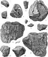 | Одиночная губка Scyphia sp. (1). Колониальные губки хететиды (Chaetetes sp.): почти целые колонии (3, 5), фрагменты (2, 4). Одиночные кораллы ругозы (6, 7). Колониальные кораллы табуляты: массивный призматический коралл Petalaxis sp. (8-11); трубчатый коралл Syringopora sp. (12). |
| 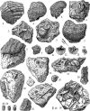 | Брахиоподы: продуктиды (1-8) и в т.ч. брюшные створки Gigantoproductus daguini (7), Gigantoproductus sp. (1), Semiplanus latissimus (2, 3, 8), срез брюшной створки Reticulatia inflatiformis (6), отпечаток спинной створки продуктиды (4); брюшные створки спирифериды Choristites sp. (9-13). Брюхоногие моллюски и в т.ч. отпечаток (15) и остаток (16) Omphalotrochus (?) sp., внутренние ядра (т.е. отпечатки изнутри) Anemalina sp. (17) и Ferganispira sp. (18). Иглокожие: отпечатки (19, 23) и остатки (20-22) фрагментов стебельков морских лилий (20-22 - Synerocrinus incurvus); остатки (24, 25) и отпечатки (26) игол морского ежа Archaeocidaris sp. |
| 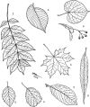 | Ясень обыкновенный, или высокий (1); вяз гладкий (2); липа мелколистная, или сердцевидная (3); клён остролистный, или платановидный (4); ольха серая (5); ольха чёрная (6); ива козья, или бредина (7); ива ломкая, или ракита (8). |
| 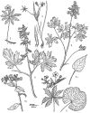 | Ветреница лютиковая (1); гусиный лук малый (2); хохлатка плотная, или луковичная, или Галлера (3); хохлатка полая (4); медуница неясная (5а, б); лютик кашубский (6). Все перечисленные виды, кроме хохлатки полой, обычны и в других широколиственных лесах Подольского района. |
| 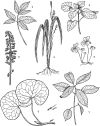 | В широколиственных лесах: сныть обыкновенная (1); зеленчук жёлтый (2); гнездовка настоящая (3); осока волосистая (4); копытень европейский (6); пролесник многолетний (7). В ельниках: кислица обыкновенная (5). |
| 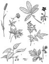 | Горец змеиный, или раковые шейки (1); купальница европейская (2); сабельник болотный (3); лабазник вязолистный, или таволга (4); паслён сладко-горький (5); гравилат речной (6). |
| 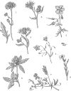 | Короставник полевой (1); василёк луговой (2); василёк фригийский (3); колокольчик раскидистый (4); герань луговая (5); клевер средний (ярко-красного цвета) (6); чина луговая (7); гвоздика Фишера (8). |
| 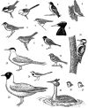 | Синица-московка (1); длиннохвостая синица (2); мухоловка-пеструшка (3); поползень (4); славка-черноголовка (5); ястребиная славка (6); камышовка-барсучок (7); камышовая овсянка (8); желна, или чёрный дятел (9); большой пёстрый дятел (10); зяблик (11); речная крачка (12); озёрная чайка (13); белая трясогузка (14); чомга (15); самец домового воробья (16); полевой воробей (17). |
Авифауна (син. - орнитофауна) - фауна птиц (см. фауна).
Авлакогенный прогиб - прогиб кристаллического фундамента, частично сглаженный осадочными отложениями.
Акклиматизация (син. - интродукция) - комплекс мероприятий по вселению какого-либо вида в новые для него места обитания, проводимый в целях обогащения естественных или искусственных сообществ полезными для человека организмами. Следует отличать от реакклиматизации (реинтродукции) - искусственного возвращения в какую-либо местность ранее исчезнувшего (уничтоженного человеком) исконного вида.
Антропогенный - созданный либо глубоко преобразованный человеком.
Ареал - область распространения вида (территория, акватория либо их совокупность), исключая места случайного попадания отдельных особей.
Бешенство - см. природно-очаговые болезни человека.
Биотехнические мероприятия - совокупность специализированных работ, направленных на повышение биологической продуктивности и хозяйственной производительности охотничьих угодий (заготовка и выкладка кормов, устройство искусственных убежищ и т.п.).
Биотоп - место, где обнаруживается данный организм и которое функционально необходимо для его существования. Синоним местообитания.
Биотопическое распределение - постоянная приуроченность вида к определенному биотопу.
Ветровально-почвенный комплекс - формируется в результате вывала дерева, сопровождающегося нарушением почвы. Элементы ветровально-почвенного комплекса (западина, бугор, разлагающийся ствол) представляют собой богатый набор микроместообитаний, благоприятных для возобновления разных видов. Наличие ветровально-почвенных комплексов разного возраста - хороший индикатор малонарушенных и климаксовых лесов.
Видоспецифичный - характерный только для определенного вида.
Виды-двойники - виды, практически не различающиеся по внешнему виду, но хорошо разделяемые по хромосомному набору.
Всемирный Союз Охраны Природы (ВСОП, или WUCN) - международная организация, основанная в 1948 г. в Брюсселе в целях охраны мировых природных богатств (до недавнего прошлого называлась МСОП, или IUCN).
Высокоурбанизированные территории - территории с высокой долей площади, занятой населенными пунктами городского типа.
Высшие позвоночные - включают в себя представителей классов рептилий (Reptilia), птиц (Aves) и млекопитающих (Mammalia). К низшим позвоночным относятся круглоротые (Cyclostomata), рыбы (Pisces) и амфибии (Amphibia).
Выщелачивание - процесс обеднения какого-либо горизонта почвы или профиля основаниями (щелочными и щелочноземельными элементами).
Геморрагическая лихорадка - см. природно-очаговые болезни человека.
Гумус - совокупность специфических и неспецифических органических веществ почвы (за исключением живых организмов и их остатков, не утративших тканевое строение).
Дифференциация шерстного покрова - разделение шерсти млекопитающих на различные функциональные типы волос - остевые, пуховые, направляющие и прочие, что приводит к существенному понижению ее теплопроводности. Особенно свойственна млекопитающим северных регионов и околоводных местообитаний.
Жизненный цикл - совокупность всех стадий жизненного развития особи, в результате которых она достигает зрелости и делается способной дать начало новому поколению.
Климакс (от греч. klimax - лестница) - относительно стабильное состояние растительности, возникающее в результате сукцессий.
Коэффициент увлажнения (Кувл.) - определяется соотношением количества атмосферных осадков, выпадающих в данной местности, и максимально возможного испарения с данной территории при данном температурном режиме. На суше выделяют области с Кувл.>1, для которых характерно избыточное увлажнение - тундровые (при Кувл.>2) и лесные ландшафты; области нормального увлажнения с Кувл=1 и ландшафтами лесостепного типа; области недостаточного увлажнения с Куел.<1 и ландшафтами степного типа и области скудного увлажнения с Кувл.<0,3) и ландшафтами пустынного типа.
Лептоспироз - см. природно-очаговые болезни человека.
Лессиваж - суспензионный перенос тонких частиц почвы в неразрушенном виде из верхней части профиля в нижележащие горизонты.
Материнская (почвообразующая порода) - горная порода, из которой формируется почва.
Местообитание - см. биотоп.
Морена - отложения, накопленные непосредственно ледниками при их движении и выпахивании ложа, несортированные и разнообразные по составу (от суглинков до валунов).
Наземные позвоночные - объединяют представителей классов амфибий, рептилий, птиц и млекопитающих.
Население млекопитающих - совокупность всех сообществ млекопитающих конкретной территории. Частный случай животного населения. Следует отличать от фауны.
Научение - способность конкретных особей получать новые навыки и осваивать новые действия в процессе индивидуальной деятельности.
ООПТ - см. особо охраняемые природные территории.
Оподзоливание - проявление в почве признаков подзолистого процесса.
Особо охраняемые природные территории (ООПТ) - участки земли, водной поверхности и воздушного пространства над ними, где располагаются природные комплексы и объекты, имеющие особое природоохранное, научное, культурное, эстетическое, рекреационное и оздоровительное значение, которые изъяты решениями органов государственной власти полностью или частично из хозяйственного использования и для которых установлен режим особой охраны. В Подольском районе ООПТ представлены государственными природными заказниками и курортами.
Пастереллез - см. природно-очаговые болезни человека.
Подзолистый процесс - разрушение в верхней части профиля первичных и вторичных минералов и вынос продуктов разрушения в нижележащие горизонты и грунтовые воды.
Популяция - 1) совокупность особей одного вида, в течение большого числа поколений населяющих определенное пространство, обладающих общим генофондом и более-менее изоли{-191-|}рованных от других аналогичных совокупностей; 2) обобщающее название совокупности особей одного вида определенной физико-географической либо административной единицы.
Природно-очаговые болезни человека - болезни, циркуляция возбудителей которых осуществляется с участием диких животных. К ним относятся такие характерные для Центральных районов России и очень опасные для человека заболевания, как бешенство, геморрагическая лихорадка, лептоспироз, пастереллез, туляремия.
Раса цветовая - обособленная по цвету совокупность особей.
Растительность - совокупность растительных сообществ (фитоценозов), а также сопутствующих им группировок растений, населяющих Землю или отдельные ее районы. В отличие от флоры, растительность характеризуется не только видовым составом, но и обилием видов, определяемым их сочетанием и экологическими связями.
Реинтродукция - искусственная посадка растений в места, где вид ранее обитал, а потом исчез, как правило, по вине человека. Предполагает восстановление численности вида в природных биотопах на территории его ареала путем создания искусственных популяций.
Синузия - экологически и пространственно обособленная часть фитоценоза, состоящая из растений одной или близких жизненных форм. Например, в широколиственных лесах выделяют синузии деревьев, кустарников, ранневесенних эфемероидов, широкотравья.
Сукцессия (от лат. sucessio - преемственность, наследование) - постепенные необратимые изменения состава и структуры фитоценоза, вызываемые внутренними или внешними причинами.
Туляремия - см. природно-очаговые болезни человека.
Умеренная климатическая зона - в северном полушарии располагается от 40° до 65° с.ш. Характеризуется круглогодичным господством умеренных воздушных масс, четкой выраженностью четырех сезонов года (теплого, холодного и двух переходных), зимними отрицательными температурами, летним положительным и зимним отрицательным радиационным балансом, активной циклональной деятельностью.
Фауна - совокупность видов животных, обитающих на конкретной территории. Следует отличать от животного населения (см. население млекопитающих).
Фаунистический комплекс - эволюционно исторически сложившаяся совокупность видов животных, прочно связанных с конкретной природной (географической) зоной. Следствием этого является высокий уровень их приспособленности к условиям существования в конкретных природных условиях и друг с другом.
Фитоценоз (син. растительное сообщество, - от греч. phy-ton - растение, koinos - общий) - условно отграниченный и однородный контур растительности.
Флора (от лат. Flora - богиня цветов и весны) - совокупность видов растений, приуроченная к определенной территории.
Холоднокровные животные - организмы, не способные поддерживать постоянную температуру тела за счет внутренних обменных процессов и поэтому меняющие ее в четкой зависимости от колебаний температуры окружающей среды.
Хромосомный набор - совокупность самовоспроизводящихся, содержащих ДНК структурных элементов ядра клетки, в которые заложена наследственная (генетическая) информация.
Цветовая раса - см. раса цветовая.
Эдификаторы (от лат. aedificator - строитель) - доминирующие в фитоценозах виды растений, которые своей жизнедеятельностью оказывают наибольшее влияние на среду всего сообщества (определяют его состав, структуру) и без которых невозможно существование большинства других видов. Например, в лесной зоне к эдификаторам относятся виды древесной синузии - дуб, липа, ель и другие.
Экологическая пластичность вида - способность организмов выносить отклонения экологических факторов от оптимальных для них значений.
Эколого-ценотическая группа - крупные группы экологически близких видов, связанные с различными типами сообществ. В региональной флоре сосудистых растений Подольского района можно выделить следующие группы видов: теневых лесов - неморальная (широколиственных лесов), бореальная (еловых лесов) и нитрофильная (черноольховая); светлых лесов - боровая (сухих сосновых лесов); группа светлых местообитаний - ксерофитных и мезофитных лугов и рудеральная; водных местообитаний - водная и водно-болотная.
Экосистема - любое сообщество живых существ и его среда обитания, объединенные в единое функциональное целое.
Эфемероиды (от греч. ephemeros - однодневный, скоропреходящий, eidos - вид) - многолетние травянистые растения, цветущие рано весной. Летом их надземные побеги полностью отмирают, остаются лишь подземные запасающие органы с почками (луковицы, клубни, корневища). Характерны для широколиственных лесов, где используют влажный и светлый период до распускания листьев на деревьях.
Замечания и предложения, а также заказы на данное издание можно направлять по адресам:
142100, Московская область, г. Подольск, ул. Кирова, 4, Администрация Подольского района, отдел экологии ;
113628, Москва, ВНИИприроды, Лаборатория заповедного дела {-192-|}
Главная страница сайта
Последнее изменение страницы 12 Aug 2018
{kind=link}
{kind=link}
{kind=link}
{kind=link}
{kind=link}
{kind=link}
{kind=link}
{kind=link}
{kind=link}
{kind=link}
{kind=link}
{kind=link}
{kind=link}
{kind=link}
{kind=link}
{kind=link}
{kind=link}
{kind=link}
{kind=link}
{kind=link}
{kind=link}
{kind=link}
{kind=link}
{kind=link}
{kind=link}
{kind=link}
{kind=link}
{kind=link}
{kind=link}
{kind=link}
{kind=link}
{kind=link}
{kind=link}
{kind=link}
{kind=link}
{kind=link}
{kind=link}
{kind=link}
{kind=link}
{kind=link}
{kind=link}